00 如何正确学习一款分库分表开源框架？
你好，我是萧然，长期从事分布式系统的构建和优化工作，负责过大型电商以及物联网系统的设计和开发，曾带领团队完成业界领先的物联网数据平台建设工作，对基于 ShardingSphere 进行数据分库分表和治理工作有着丰富的实践经验。
互联网高速发展带来海量的信息化数据，也带来更多的技术挑战。以我工作多年的物联网行业为例，各种智能终端设备（比如摄像头或车载设备等）以每天千万级的数据量上报业务数据，电商、社交等互联网行业更不必说。这样量级的数据处理，已经远不是传统关系型数据库的单库单表架构所能支撑的，如何高效存储和访问这些数据，成为一个非常现实且亟待解决的问题。
但由于生态系统的完善性，关系型数据库仍然是数据平台核心业务的基石，具有巨大市场。虽然业界存在一批 NoSQL 数据库，可以天然集成类似分布式分片这样的功能，然而并不具备诸如事务管理等核心功能。
面对系统中日益增长的海量数据，业界普遍做法是引入分库分表架构，我们可以整合纵向分库和横向分表的设计方法来应对海量数据的存储和访问。
ShardingSphere：让分库分表真正落地
想要实现支持海量数据存储和访问的分库分表架构，抛开业务层面的规划和设计，开发人员在技术实现层面也面临着一系列的问题，比如：
- 数据分片：如何用最小的成本来实现关系型数据库的分库分表操作？
- 代理机制：如何基于普通的客户端工具对分库分表架构下的数据进行访问？
- 分布式事务：如何确保分布在不同数据库和表中同一份业务数据的一致性？
- 数据库治理：如何确保分散在各个环境下的数据源和配置信息等数据库资源的一致性？
分布式数据库中间件 ShardingSphere 作为一个分库分表的“利器”，可以很好地解决这些痛点问题，并且相比其他分库分表框架（如 Cobar、MyCat 等）具有以下几点优势：
- 技术权威性，是 Apache 基金会历史上第一个分布式数据库中间件项目，代表着这一领域的最新技术方向；
- 解决方案完备性，它集客户端分片、代理服务器，以及分布式数据库的核心功能于一身，提供了一套适用于互联网应用架构、云服务架构的，完整的开源分布式数据库中间件解决方案和生态圈。
- 开发友好性，提供了友好的集成方式，业务开发人员只需要引入一个 JAR 包就能在业务代码中嵌入数据分片、读写分离、分布式事务、数据库治理等一系列功能。
- 可插拔的系统扩展性：它的很多核心功能均通过插件的形式提供，供开发者排列组合来定制属于自己的独特系统。
这些优秀的特性，让 ShardingSphere 在分库分表中间件领域占据了领先地位，并被越来越多的知名企业（比如京东、当当、电信、中通快递、哔哩哔哩等）用来构建自己强大而健壮的数据平台。如果你苦于找不到一款成熟稳定的分库分表中间件，那么 ShardingSphere 恰能帮助你解决这个痛点。
你为什么需要学习这个课程？
但凡涉及海量数据处理的企业，就一定要用到分库分表。如何进行海量数据的分库分表设计和迁移，有效存储和访问海量业务数据，已经成为很多架构师和开发人员需要规划和落实的一大课题，也成为像拼多多、趣头条、爱库存等很多优质公司高薪诚聘的岗位需求。


但优质人才非常短缺，一是因为从事海量数据处理需要相应的应用场景和较高的技术门槛，二是业界也缺乏成熟的框架来完成实际需求。掌握诸如 ShardingSphere 这样的主流分库分表和分布式数据库中间件框架的技术人员也成了各大公司争抢的对象。
鉴于市面上还没有对 ShardingSphere 进行系统化介绍的内容，我希望能来弥补这个空白。此外，分库分表概念虽然比较简单，但在实际开发过程中要落地却也不容易，也需要一个系统的、由浅入深的学习过程。
课程设计
本课程共 6 大部分，基于 ShardingSphere 开源框架，介绍主流的分库分表解决方案和工程实践，是业界第一个全面介绍 ShardingSphere 核心功能和实现原理的体系化课程，填补了这块空白。
- 第一部分：引入 ShardingSphere。 这一部分将从如何正确理解分库分表架构讲起，引出 JDBC 规范与 ShardingSphere 的关系，并介绍如何基于 ShardingSphere 所提供的配置体系，给出在业务系统中使用 ShardingSphere 的多种具体方式。
- 第二部分：ShardingSphere 核心功能。 ShardingSphere 包含很多功能特性，这部分会给出数据分片、读写分离、分布式事务、数据脱敏、编排治理等核心功能的具体使用方法和开发技巧。
第三~六部分是课程的重点，从不同维度深入剖析 ShardingSphere 的内核架构，从源码级别给出分库分表的设计和实现机制，并且有助于你提升源码理解能力。
- 第三部分：ShardingSphere 源码解析之基础设施。 这部分将围绕 ShardingSphere 的基础架构展开讨论，首先给你高效阅读 ShardingSphere 源码的方法，并介绍微内核架构和分布式主键的设计理念，以及在 ShardingSphere 的具体实现方法。
- 第四部分：ShardingSphere 源码解析之分片引擎。 这部分内容将关注 ShardingSphere 最核心的分片引擎实现原理，从 SQL 的解析引擎开始，一路进行路由引擎、改写引擎、执行引擎、归并引擎等分片引擎中各个核心技术点的源码解析。
- 第五部分：ShardingSphere 源码解析之分布式事务。 分布式事务是分布式数据库中间件的必备功能，ShardingSphere 内部也提供了对分布式事务的一种抽象。我将详细分析这种抽象过程，以及如何实现强一致性事务和柔性事务。
- 第六部分：ShardingSphere 源码解析之治理与集成。 最后这部分内容将讨论如何基于改写引擎实现低侵入性数据脱敏方案、如何基于配置中心实现配置信息的动态化管理、如何基于注册中心实现数据库访问熔断机制、如何基于 Hook 机制以及 OpenTracing 协议实现数据访问链路跟踪等数据库治理方面的问题，我将给出这些问题背后的详细答案。
此外，课程中的核心功能部分，我是基于具体的案例分析并给出详细的代码实现和配置方案，方便你进行学习和改造。课程配套代码，你可以在 https://github.com/tianyilan12/shardingsphere-demo 下载。
你将获得
1. 分库分表的应用方式和实现原理
帮你理解 ShardingSphere 的核心功能特性，来满足日常开发工作所需，同时基于源码给出这些功能的设计原理和实现机制。
2. 学习优秀的开源框架，提高技术理解与应用能力
技术原理是具有相通性的。以 ZooKeeper 这个分布式协调框架为例，ShardingSphere 和 Dubbo 中都使用它来完成了注册中心的构建：

在 ShardingSphere 中，我们可以基于 ZooKeeper 提供的动态监听机制来判断某个数据库实例是否可用、是否需要对某个数据库实例进行数据访问熔断等操作，也可以使用 ZooKeeper 的这一功能特性来实现分布式环境下的配置信息动态管理。
随着对 ShardingSphere 的深入学习，你会发现类似的例子还有很多，包括基于 SPI 机制的微内核架构、基于雪花算法的分布式主键、基于 Apollo 的配置中心、基于 Nacos 的注册中心、基于 Seata 的柔性事务、基于 OpenTracing 规范的链路跟踪等。
而这些技术体系在 Dubbo、Spring Cloud 等主流开发框架中也多有体现。因此这个课程除了可以强化你对这些技术体系的系统化理解，还可以让你掌握这些技术体系的具体应用场景和实现方式，从而实现触类旁通。
3. 学习从源码分析到日常开发的技巧
从源码解析到日常应用是本课程的一个核心目标。基于 ShardingSphere 这款优秀的开源框架，可以提炼出一系列包括设计模式的应用（如工厂模式、策略模式、模板方法等）、微内核架构等架构模式、组件设计和类层结构划分的思想和实现策略、常见缓存的应用以及自定义缓存机制的实现、Spring 家族框架的集成和整合等开发技巧，这些开发技巧都能够直接应用到日常开发过程。
讲师寄语
技术的发展日新月异，随着数据中台等架构设计理念以及各种人工智能应用的普及，数据量级的不断提升是大部分软件系统面临的一大挑战，类似 ShardingSphere 的分库分表框架也将迈向一个新的发展时期，并在更多企业中得到应用。
但是成熟度高且发展活跃的分库分表框架并不多，企业的选择余地并不大。ShardingSphere 是这一领域目前为止唯一一个 Apache 顶级项目，也是提供核心功能最丰富的一个，代表着这一领域的一种技术发展方向。希望这个课程能够让你学好 ShardingSphere，并且掌握触类旁通的学习方法。
最后，欢迎你在留言区分享数据处理和架构设计方面的经历和经验，也希望你能通过这门课程得到想要的收获。一起加油吧！
01 从理论到实践：如何让分库分表真正落地？
本课时主要讲解如何让分库分表真正落地。
在互联网系统开发过程中，分库分表并不是一个新概念，很多开发人员对分库分表或多或少都有所了解，也知道其使用场景。但是对究竟如何实现分库分表并不是很明确。当然，分库分表的含义与实现远比字面意思要复杂得多，这就引出了今天我要阐述的核心话题：如何让分库分表真正落地。
从数据存储和访问的演进过程说起
要想回答“如何让分库分表真正落地？”这个问题，我先从一个典型案例说起：试想在一个电商系统中存在订单表，系统在初始运行期间，一般使用单库和单表的方式来存储和访问数据。因为数据量不大，所以数据库访问的瓶颈并不明显。
随着业务的演进，当需要支撑大规模电商业务时，系统每天可能会生成数十万甚至上百万级别的订单数据，订单表的访问就会开始出现瓶颈。
以互联网系统中常用的 MySQL 数据库为例，虽然单表存储的数据原则上可以达到亿条级别，但此时访问性能会变得很差，即使采用各种调优策略，效果也通常微乎其微。业界普遍认为，MySQL 单表容量在 1 千万以下是一种最佳状态，一旦超过这个量级，就需要考虑采用其他方案了。
既然以 MySQL 为代表的关系型数据库中的单表无法支持大数据量的存储和访问方案，自然而然的，你可能会想到是否可以采用诸如 MongoDB 等 NoSQL 的方式来管理数据？
但这并不是一个很好的选项，原因有很多：一方面，关系型生态系统非常完善，关系型数据库经过几十年的持续发展，具有 NoSQL 无法比拟的稳定性和可靠性；另一方面，关系型数据库的事务特性，也是其他数据存储工具所不具备的一项核心功能。目前绝大部分公司的核心数据都存储在关系型数据库中，就互联网公司而言，MySQL 是主流的数据存储方案。
现在，我们选择了关系型数据库，就可以考虑采用分库分表的方案来解决单库表的瓶颈问题，这是目前互联网行业处理海量数据的通用方法。分库分表方案更多的是对关系型数据库数据存储和访问机制的一种补充，而不是颠覆。那么究竟什么是分库分表呢？
什么是数据分库分表？
分库和分表是两个概念，但通常会把它们合在一起简称为分库分表。所谓分库分表，业界并没有一个统一的定义，你可以简单理解为：
为了解决由于数据量过大而导致的数据库性能降低的问题，将原来独立的数据库拆分成若干数据库，把原来数据量大的表拆分成若干数据表，使得单一数据库、单一数据表的数据量变得足够小，从而达到提升数据库性能的效果。
分库分表的表现形式也有很多种，一起来看一下。
分库分表的表现形式
分库分表包括分库和分表两个维度，在开发过程中，对于每个维度都可以采用两种拆分思路，即垂直拆分和水平拆分：

先来讨论垂直拆分的应用方式，相比水平拆分，垂直拆分相对比较容易理解和实现。在电商系统中，用户在打开首页时，往往会加载一些用户性别、地理位置等基础数据。对于用户表而言，这些位于首页的基础数据访问频率显然要比用户头像等数据更高。基于这两种数据的不同访问特性，可以把用户单表进行拆分，将访问频次低的用户头像等信息单独存放在一张表中，把访问频次较高的用户信息单独放在另一张表中：

从这里可以看到，垂直分表的处理方式就是将一个表按照字段分成多张表，每个表存储其中一部分字段。 在实现上，我们通常会把头像等 blob 类型的大字段数据或热度较低的数据放在一张独立的表中，将经常需要组合查询的列放在一张表中，这也可以认为是分表操作的一种表现形式。
通过垂直分表能得到一定程度的性能提升，但数据毕竟仍然位于同一个数据库中，也就是把操作范围限制在一台服务器上，每个表还是会竞争同一台服务器中的 CPU、内存、网络 IO 等资源。基于这个考虑，在有了垂直分表之后，就可以进一步引入垂直分库。
对于前面介绍的场景，分表之后的用户信息同样还是跟其他的商品、订单信息存放在同一台服务器中。基于垂直分库思想，这时候就可以把用户相关的数据表单独拆分出来，放在一个独立的数据库中。
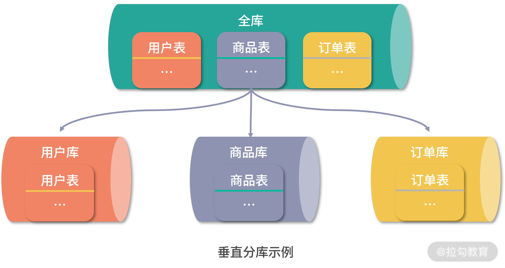
这样的效果就是垂直分库。从定义上讲，垂直分库是指按照业务将表进行分类，然后分布到不同的数据库上。然后，每个库可以位于不同的服务器上，其核心理念是专库专用。而从实现上讲，垂直分库很大程度上取决于业务的规划和系统边界的划分。比如说，用户数据的独立拆分就需要考虑到系统用户体系与其他业务模块之间的关联关系，而不是简单地创建一个用户库就可以了。在高并发场景下，垂直分库能够在一定程度上提升 IO 访问效率和数据库连接数，并降低单机硬件资源的瓶颈。
从前面的分析中我们不难明白，垂直拆分尽管实现起来比较简单，但并不能解决单表数据量过大这一核心问题。所以，现实中我们往往需要在垂直拆分的基础上添加水平拆分机制。例如，可以对用户库中的用户信息按照用户 ID 进行取模，然后分别存储在不同的数据库中，这就是水平分库的常见做法：
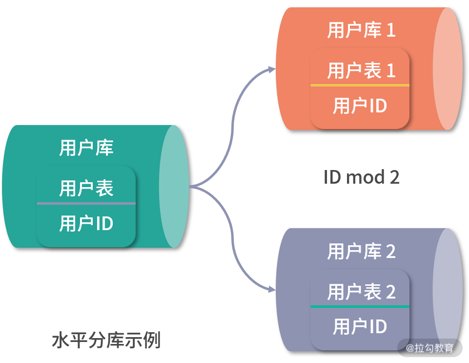
可以看到，水平分库是把同一个表的数据按一定规则拆分到不同的数据库中，每个库同样可以位于不同的服务器上。这种方案往往能解决单库存储量及性能瓶颈问题，但由于同一个表被分配在不同的数据库中，数据的访问需要额外的路由工作，因此大大提升了系统复杂度。这里所谓的规则实际上就是一系列的算法，常见的包括：
- 取模算法，取模的方式有很多，比如前面介绍的按照用户 ID 进行取模，当然也可以通过表的一列或多列字段进行 hash 求值来取模；
- 范围限定算法，范围限定也很常见，比如可以采用按年份、按时间等策略路由到目标数据库或表；
- 预定义算法，是指事先规划好具体库或表的数量，然后直接路由到指定库或表中。
按照水平分库的思路，也可以对用户库中的用户表进行水平拆分，效果如下图所示。也就是说，水平分表是在同一个数据库内，把同一个表的数据按一定规则拆到多个表中。

显然，系统的数据存储架构演变到现在已经非常复杂了。与拆分前的单库单表相比，现在面临着一系列具有挑战性的问题，比如：
- 如何对多数据库进行高效治理？
- 如何进行跨节点关联查询？
- 如何实现跨节点的分页和排序操作？
- 如何生成全局唯一的主键？
- 如何确保事务一致性？
- 如何对数据进行迁移？
- ...
如果没有很好的工具来支持数据的存储和访问，数据一致性将很难得到保障，这就是以 ShardingSphere 为代表的分库分表中间件的价值所在。
分库分表与读写分离
说到分库分表，我们不得不介绍另一个解决数据访问瓶颈的技术体系：读写分离，这个技术与数据库主从架构有关。我们知道像 MySQL 这样的数据库提供了完善的主从架构，能够确保主数据库与从数据库之间的数据同步。基于主从架构，就可以按照操作要求对读操作和写操作进行分离，从而提升访问效率。读写分离的基本原理是这样的：

可以看到图中的数据库集群中存在一个主库，也存在一个从库，主库和从库之间通过同步机制实现两者数据的一致性。在互联网系统中，普遍认为对数据库读操作的频率要远远高于写操作，所以瓶颈往往出现在读操作上。通过读写分离，就可以把读操作分离出来，在独立的从库上进行。现实中的主从架构，主库和从库的数量，尤其从库的数量都是可以根据数据量的大小进行扩充的。
读写分离，主要解决的就是高并发下的数据库访问，也是一种常用的解决方案。但是跟提升服务器配置一样，并不是终极解决方案。终极的解决方案还是前面介绍的分库分表，按照用户 ID 等规则来拆分库或拆分表。但是，请注意，分库分表与读写分离之间的关系并不是互斥的，而是可以相辅相成的，完全可以在分库分表的基础上引入读写分离机制：

事实上，本课程所要介绍的 ShardingSphere 就实现了图中的架构方案，在分库分表的同时支持读写分离，在后续的课程中将会介绍如何实现这一过程。
分库分表解决方案和代表框架
基于前面关于分库分表的讨论，我们可以抽象其背后的一个核心概念，即分片（Sharding）。无论是分库还是分表，都是把数据划分成不同的数据片，并存储在不同的目标对象中。而具体的分片方式涉及实现分库分表的不同解决方案。
业界实际上也有不少关于分库分表的框架，这些框架显然并不是采用同一种解决方案。但通过分析这些框架在实现数据分片方案上的区别，也可以把它们分成三大类型，即客户端分片、代理服务器分片及分布式数据库。
客户端分片
所谓客户端分片，相当于在数据库的客户端就实现了分片规则。显然，这种方式将分片处理的工作进行前置，客户端管理和维护着所有的分片逻辑，并决定每次 SQL 执行所对应的目标数据库和数据表。
客户端分片这一解决方案也有不同的表现形式，其中最为简单的方式就是应用层分片，也就是说在应用程序中直接维护着分片规则和分片逻辑：

在具体实现上，我们通常会将分片规则的处理逻辑打包成一个公共 JAR 包，其他业务开发人员只需要在代码工程中引入这个 JAR 包即可。针对这种方案，因为没有独立的服务器组件，所以也不需要专门维护某一个具体的中间件。然而，这种直接在业务代码中嵌入分片组件的方法也有明显的缺点：
- 一方面，由于分片逻辑侵入到了业务代码中，业务开发人员在理解业务的基础上还需要掌握分片规则的处理方式，增加了开发和维护成本；
- 另一方面，一旦出现问题，也只能依赖业务开发人员通过分析代码来找到原因，而无法把这部分工作抽离出来让专门的中间件团队进行完成。
基于以上分析，客户端分片在实现上通常会进一步抽象，把分片规则的管理工作从业务代码中剥离出来，形成单独演进的一套体系。这方面典型的设计思路是重写 JDBC 协议，也就是说在 JDBC 协议层面嵌入分片规则。这样，业务开发人员还是使用与 JDBC 规范完全兼容的一套 API 来操作数据库，但这套 API 的背后却自动完成了分片操作，从而实现了对业务代码的零侵入：
客户端分片结构：重写JDBC协议
这种解决方案的优势在于，分片操作对于业务而言是完全透明的，从而一定程度上实现业务开发人员与数据库中间件团队在职责上的分离。这样，业务开发人员只需要理解 JDBC 规范就可以完成分库分表，开发难度以及代码维护成本得到降低。
对于客户端分片，典型的中间件包括阿里巴巴的 TDDL 以及本课程将要介绍的 ShardingSphere。因为 TDDL 并没有开源，所以无法判断客户端分片的具体实现方案。而对于 ShardingSphere 而言，它是重写 JDBC 规范以实现客户端分片的典型实现框架。
代理服务器分片
代理服务器分片的解决方案也比较明确，也就是采用了代理机制，在应用层和数据库层之间添加一个代理层。有了代理层之后，就可以把分片规则集中维护在这个代理层中，并对外提供与 JDBC 兼容的 API 给到应用层。这样，应用层的业务开发人员就不用关心具体的分片规则，而只需要完成业务逻辑的实现：

显然，代理服务器分片的优点在于解放了业务开发人员对分片规则的管理工作，而缺点就是添加了一层代理层，所以天生具有代理机制所带来的一些问题，比方说因为新增了一层网络传输对性能所产生的影响。
对于代理服务器分片，常见的开源框架有阿里的 Cobar 以及民间开源社区的 MyCat。而在 ShardingSphere 3.X 版本中，也添加了 Sharding-Proxy 模块来实现代理服务器分片。
分布式数据库
在技术发展和演进的过程中，关系型数据库的一大问题在于缺乏分布式特性，也就是说缺乏分布式环境下面对大数据量、高并发访问的有效数据处理机制。举例来说，我们知道事务是关系型数据库的本质特征之一，但在分布式环境下，如果想要基于 MySQL 等传统关系型数据库来实现事务将面临巨大的挑战。
幸好，以 TiDB 为代表的分布式数据库的兴起赋予了关系型数据库一定程度的分布式特性。在这些分布式数据库中，数据分片及分布式事务将是其内置的基础功能，对业务开发人员是透明的。业务开发人员只需要使用框架对外提供的 JDBC 接口，就像在使用 MySQL 等传统关系型数据库一样。
从这个角度讲，我们也可以认为 ShardingSphere 是一种分布式数据库中间件，它在提供标准化的数据分片解决方案之外，也实现了分布式事务和数据库治理功能。
小结
从概念上讲，分库分表的基本原理和表现形式并不难理解，但在实现上却没有那么简单。因此，业界存在一批具有代表性的解决方案，包括客户端分片、代理服务器分片和分布式数据库。这些解决方案从不同的角度切入来满足分库分表的目标。在日常开发过程中，我们可以选择其中一种或多种方案。 而 ShardingSphere 同时具备客户端分片、代理机制以及分布式事务等功能特性，开发人员可以根据需要引入这些功能特性。
这里给你留一道思考题：分库、分表以及读写分离有哪些组合使用的具体方式？
本课时的内容就到这里。在下一课时中，我们将全面引入 ShardingSphere 框架，来看看它究竟是一款什么样的 Apache 开源软件。
02 顶级项目：ShardingSphere 是一款什么样的 Apache 开源软件？
本课时将为你讲解 ShardingSphere 是一款什么样的 Apache 开源软件。
在上一课时中，我详细分析了分库分表的表现形式以及分片架构的解决方案和代表性框架。可以看到，ShardingSphere 同时实现了客户端分片和代理服务器组件，并提供了分布式数据库的相关功能特性。作为一款优秀的开源软件，ShardingSphere 能够取得目前的成就也不是一蹴而就，下面我们先来回顾一下 ShardingSphere 的发展历程。
ShardingSphere 的发展历程：从 Sharding-JDBC 到 Apache 顶级项目
说到 ShardingSphere 的起源，我们不得不提 Sharding-JDBC 框架，该框架是一款起源于当当网内部的应用框架，并于 2017 年初正式开源。从 Sharding-JDBC 到 Apache 顶级项目，ShardingSphere 的发展经历了不同的演进阶段。纵观整个 ShardingSphere 的发展历史，我们可以得到时间线与阶段性里程碑的演进过程图：

从版本发布角度，我们也可以进一步梳理 ShardingSphere 发展历程中主线版本与核心功能之间的演进关系图：

基于 GitHub 上星数的增长轨迹，也可以从另一个维度很好地反映出 ShardingSphere 的发展历程：

ShardingSphere 的设计理念：不是颠覆，而是兼容
对于一款开源中间件来说，要得到长足的发展，一方面依赖于社区的贡献，另外在很大程度上还取决于自身的设计和发展理念。
ShardingSphere 的定位非常明确，就是一种关系型数据库中间件，而并非一个全新的关系型数据库。ShardingSphere 认为，在当下，关系型数据库依然占有巨大市场，但凡涉及数据的持久化，关系型数据库仍然是系统的标准配置，也是各个公司核心业务的基石，在可预见的未来中，这点很难撼动。所以，ShardingSphere 在当前阶段更加关注在原有基础上进行兼容和扩展，而非颠覆。那么 ShardingSphere 是如何做到这一点呢？
ShardingSphere 构建了一个生态圈，这个生态圈由一套开源的分布式数据库中间件解决方案所构成。按照目前的规划，ShardingSphere 由 Sharding-JDBC、Sharding-Proxy 和 Sharding-Sidecar 这三款相互独立的产品组成，其中前两款已经正式发布，而 Sharding-Sidecar 正在规划中。我们可以从这三款产品出发，分析 ShardingSphere 的设计理念。
Sharding-JDBC
ShardingSphere 的前身是 Sharding-JDBC，所以这是整个框架中最为成熟的组件。Sharding-JDBC 的定位是一个轻量级 Java 框架，在 JDBC 层提供了扩展性服务。我们知道 JDBC 是一种开发规范，指定了 DataSource、Connection、Statement、PreparedStatement、ResultSet 等一系列接口。而各大数据库供应商通过实现这些接口提供了自身对 JDBC 规范的支持，使得 JDBC 规范成为 Java 领域中被广泛采用的数据库访问标准。
基于这一点，Sharding-JDBC 一开始的设计就完全兼容 JDBC 规范，Sharding-JDBC 对外暴露的一套分片操作接口与 JDBC 规范中所提供的接口完全一致。开发人员只需要了解 JDBC，就可以使用 Sharding-JDBC 来实现分库分表，Sharding-JDBC 内部屏蔽了所有的分片规则和处理逻辑的复杂性。显然，这种方案天生就是一种具有高度兼容性的方案，能够为开发人员提供最简单、最直接的开发支持。关于 Sharding-JDBC 与 JDBC 规范的兼容性话题，我们将会在下一课时中详细讨论。
 Sharding-JDBC 与 JDBC 规范的兼容性示意图
Sharding-JDBC 与 JDBC 规范的兼容性示意图
在实际开发过程中，Sharding-JDBC 以 JAR 包的形式提供服务。开发人员可以使用这个 JAR 包直连数据库，无需额外的部署和依赖管理。在应用 Sharding-JDBC 时，需要注意到 Sharding-JDBC 背后依赖的是一套完整而强大的分片引擎：

由于 Sharding-JDBC 提供了一套与 JDBC 规范完全一致的 API，所以它可以很方便地与遵循 JDBC 规范的各种组件和框架进行无缝集成。例如，用于提供数据库连接的 DBCP、C3P0 等数据库连接池组件，以及用于提供对象-关系映射的 Hibernate、MyBatis 等 ORM 框架。当然，作为一款支持多数据库的开源框架，Sharding-JDBC 支持 MySQL、Oracle、SQLServer 等主流关系型数据库。
Sharding-Proxy
ShardingSphere 中的 Sharding-Proxy 组件定位为一个透明化的数据库代理端，所以它是代理服务器分片方案的一种具体实现方式。在代理方案的设计和实现上，Sharding-Proxy 同样充分考虑了兼容性。
Sharding-Proxy 所提供的兼容性首先体现在对异构语言的支持上，为了完成对异构语言的支持，Sharding-Proxy 专门对数据库二进制协议进行了封装，并提供了一个代理服务端组件。其次，从客户端组件上讲，针对目前市面上流行的 Navicat、MySQL Command Client 等客户端工具，Sharding-Proxy 也能够兼容遵循 MySQL 和 PostgreSQL 协议的各类访问客户端。当然，和 Sharding-JDBC 一样，Sharding-Proxy 也支持 MySQL 和 PostgreSQL 等多种数据库。
接下来，我们看一下 Sharding-Proxy 的整体架构。对于应用程序而言，这种代理机制是完全透明的，可以直接把它当作 MySQL 或 PostgreSQL 进行使用：

总结一下，我们可以直接把 Sharding-Proxy 视为一个数据库，用来代理后面分库分表的多个数据库，它屏蔽了后端多个数据库的复杂性。同时，也看到 Sharding-Proxy 的运行同样需要依赖于完成分片操作的分片引擎以及用于管理数据库的治理组件。
虽然 Sharding-JDBC 和 Sharding-Proxy 具有不同的关注点，但事实上，我们完全可以将它们整合在一起进行使用，也就是说这两个组件之间也存在兼容性。
前面已经介绍过，我们使用 Sharding-JDBC 的方式是在应用程序中直接嵌入 JAR 包，这种方式适合于业务开发人员。而 Sharding-Proxy 提供静态入口以及异构语言的支持，适用于需要对分片数据库进行管理的中间件开发和运维人员。基于底层共通的分片引擎，以及数据库治理功能，可以混合使用 Sharding-JDBC 和 Sharding-Proxy，以便应对不同的应用场景和不同的开发人员：

Sharding-Sidecar
Sidecar 设计模式受到了越来越多的关注和采用，这个模式的目标是把系统中各种异构的服务组件串联起来，并进行高效的服务治理。ShardingSphere 也基于该模式设计了 Sharding-Sidecar 组件。截止到目前，ShardingSphere 给出了 Sharding-Sidecar 的规划，但还没有提供具体的实现方案，这里不做具体展开。作为 Sidecar 模式的具体实现，我们可以想象 Sharding-Sidecar** 的作用就是以 Sidecar 的形式代理所有对数据库的访问**。这也是一种兼容性的设计思路，通过无中心、零侵入的方案将分布式的数据访问应用与数据库有机串联起来。
ShardingSphere 的核心功能：从数据分片到编排治理
介绍完 ShardingSphere 的设计理念之后，我们再来关注它的核心功能和实现机制。这里把 ShardingSphere 的整体功能拆分成四大部分，即基础设施、分片引擎、分布式事务和治理与集成，这四大部分也构成了本课程介绍 ShardingSphere 的整体行文结构，下面我们来分别进行介绍：
基础设施
作为一款开源框架，ShardingSphere 在架构上也提供了很多基础设施类的组件，这些组件更多与它的内部实现机制有关，我们将会在后续的源码解析部分详细展开讲解。但对开发人员而言，可以认为微内核架构和分布式主键是框架提供的基础设施类的核心功能。
- 微内核架构
ShardingSphere 在设计上采用了微内核（MicroKernel）架构模式，来确保系统具有高度可扩展性。微内核架构包含两部分组件，即内核系统和插件。使用微内核架构对系统进行升级，要做的只是用新插件替换旧插件，而不需要改变整个系统架构：

在 ShardingSphere 中，抽象了一大批插件接口，包含用实现 SQL 解析的 SQLParserEntry、用于实现配置中心的 ConfigCenter、用于数据脱敏的 ShardingEncryptor，以及用于数据库治理的注册中心接口 RegistryCenter 等。开发人员完全可以根据自己的需要，基于这些插件定义来提供定制化实现，并动态加载到 ShardingSphere 运行时环境中。
- 分布式主键
在本地数据库场景下，我们可以使用数据库自带的自增序列来完成主键的生成。但在分片场景下，我们将面对从本地数据库转换到分布式数据库的应用场景，这就需要考虑主键在各个数据库中的全局唯一性。为此，我们需要引入分布式主键机制。ShardingSphere 同样提供了分布式主键的实现机制，默认采用的是 SnowFlake（雪花）算法。
分片引擎
对于分片引擎，ShardingSphere 同时支持数据分片和读写分离机制。
- 数据分片
数据分片是 ShardingSphere 的核心功能，常规的，基于垂直拆分和水平拆分的分库分表操作它都支持。同时，ShardingSphere 也预留了分片扩展点，开发人员也可以基于需要实现分片策略的定制化开发。
- 读写分离
在分库分表的基础上，ShardingSphere 也实现了基于数据库主从架构的读写分离机制。而且，这种读写分离机制可以和数据分片完美地进行整合。
分布式事务
分布式事务是分布式环境下确保数据一致性的基本功能，作为分布式数据库的一种生态圈，ShardingSphere 也提供了对分布式事务的全面支持。
- 标准化事务处理接口
ShardingSphere 支持本地事务、基于 XA 两阶段提交的强一致性事务以及基于 BASE 的柔性最终一致性事务。同时，ShardingSphere 抽象了一组标准化的事务处理接口，并通过分片事务管理器 ShardingTransactionManager 进行统一管理。我们也可以根据需要实现自己的 ShardingTransactionManager 从而对分布式事务进行扩展。
- 强一致性事务与柔性事务
ShardingSphere 内置了一组分布式事务的实现方案，其中强一致性事务内置集成了 Atomikos、Narayana 和 Bitronix 等技术来实现 XA 事务管理器；另一方面，ShardingSphere 内部也整合了 Seata 来提供柔性事务功能。
治理与集成
对于分布式数据库而言，治理的范畴可以很广，ShardingSphere 也提供了注册中心、配置中心等一系列功能来支持数据库治理。另一方面，ShardingSphere 作为一款支持快速开发的开源框架，也完成了与其他主流框架的无缝集成。
- 数据脱敏
数据脱敏是确保数据访问安全的常见需求，通常做法是对原始的 SQL 进行改写，从而实现对原文数据进行加密。当我们想要获取原始数据时，在实现上就需要通过对数据库中所存储的密文数据进行解密才能完成。我们可以根据需要实现一套类似的加解密机制，但 ShardingSphere 的强大之处在于，它将这套机制内嵌到了 SQL 的执行过程中，业务开发人员不需要关注具体的加解密实现细节，而只要通过简单的配置就能实现数据的自动脱敏。
- 配置中心
关于配置信息的管理，我们可以基于 YAML 格式或 XML 格式的配置文件完成配置信息的维护，这在 ShardingSphere 中都得到了支持。更进一步，在 ShardingSphere 中，它还提供了配置信息动态化的管理机制，可以支持数据源、表与分片及读写分离策略的动态切换。
- 注册中心
相较配置中心，注册中心在 ShardingSphere 中的应用更为广泛。ShardingSphere 中的注册中心提供了基于 Nacos 和 ZooKeeper 的两种实现方式。而在应用场景上，我们可以基于注册中心完成数据库实例管理、数据库熔断禁用等治理功能。
- 链路跟踪
SQL 解析与 SQL 执行是数据分片的最核心步骤，ShardingSphere 在完成这两个步骤的同时，也会将运行时的数据通过标准协议提交到链路跟踪系统。ShardingSphere 使用 OpenTracing API 发送性能追踪数据。像 SkyWalking、Zipkin 和 Jaeger 等面向 OpenTracing 协议的具体产品都可以和 ShardingSphere 自动完成对接。
- 系统集成
这里所谓的系统集成，指的是 ShardingSphere 和 Spring 系列框架的集成。到目前为止，ShardingSphere 实现了两种系统的集成机制，一种是命名空间机制，即通过扩展 Spring Schema 来实现与 Spring 框架的集成；而另一种则是通过编写自定义的 starter 组件来完成与 Spring Boot 的集成。这样，无论开发人员采用哪一种 Spring 框架，对于使用 ShardingSphere 而言都是零学习成本。
小结
从今天开始，我们正式引入了 ShardingSphere。本课时回顾了 ShardingSphere 的发展历程，并结合该框架所提供的三大核心产品 Sharding-JDBC、Sharding-Proxy 及 Sharding-Sidecar 阐述了其在设计上的思想和理念。同时，我们也给出了 ShardingSphere 作为分布式数据库所具有的分片引擎、分布式事务及治理与集成方面的核心功能，这些功能在课程的后续内容都会进行详细展开讲解。
这里给你留一道思考题：ShardingSphere是一款兼容性很强的开源框架，它的兼容性具体体现在哪些方面？
通过前面内容的介绍，我们知道了 ShardingSphere 实现分片引擎的方案是重写 JDBC 规范，从而为应用程序提供与 JDBC 完全兼容的使用方式。下一课时将对 ShardingSphere 与 JDBC 规范之间的这层关系展开讨论。
03 规范兼容：JDBC 规范与 ShardingSphere 是什么关系？
我们知道 ShardingSphere 是一种典型的客户端分片解决方案，而客户端分片的实现方式之一就是重写 JDBC 规范。在上一课时中，我们也介绍了，ShardingSphere 在设计上从一开始就完全兼容 JDBC 规范，ShardingSphere 对外暴露的一套分片操作接口与 JDBC 规范中所提供的接口完全一致。
讲到这里，你可能会觉得有点神奇，ShardingSphere 究竟是通过什么方式，实现了与 JDBC 规范完全兼容的 API 来提供分片功能呢？
这个问题非常重要，值得我们专门花一个课时的内容来进行分析和讲解。可以说，理解 JDBC 规范以及 ShardingSphere 对 JDBC 规范的重写方式，是正确使用 ShardingSphere 实现数据分片的前提。今天，我们就深入讨论 JDBC 规范与 ShardingSphere 的这层关系，帮你从底层设计上解开其中的神奇之处。
JDBC 规范简介
ShardingSphere 提供了与 JDBC 规范完全兼容的实现过程，在对这一过程进行详细展开之前，先来回顾一下 JDBC 规范。JDBC（Java Database Connectivity）的设计初衷是提供一套用于各种数据库的统一标准，而不同的数据库厂家共同遵守这套标准，并提供各自的实现方案供应用程序调用。作为统一标准，JDBC 规范具有完整的架构体系，如下图所示：
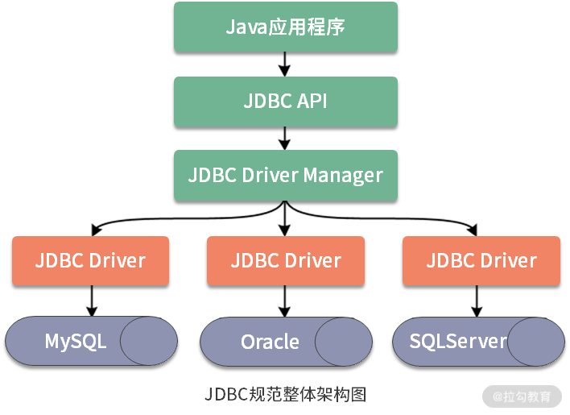
JDBC 架构中的 Driver Manager 负责加载各种不同的驱动程序（Driver），并根据不同的请求，向调用者返回相应的数据库连接（Connection）。而应用程序通过调用 JDBC API 来实现对数据库的操作。对于开发人员而言，JDBC API 是我们访问数据库的主要途径，也是 ShardingSphere 重写 JDBC 规范并添加分片功能的入口。如果我们使用 JDBC 开发一个访问数据库的处理流程，常见的代码风格如下所示：
// 创建池化的数据源
PooledDataSource dataSource = new PooledDataSource ();
// 设置MySQL Driver
dataSource.setDriver ("com.mysql.jdbc.Driver");
// 设置数据库URL、用户名和密码
dataSource.setUrl ("jdbc:mysql://localhost:3306/test");
dataSource.setUsername ("root");
dataSource.setPassword ("root");
// 获取连接
Connection connection = dataSource.getConnection();
// 执行查询
PreparedStatement statement = connection.prepareStatement ("select * from user");
// 获取查询结果应该处理
ResultSet resultSet = statement.executeQuery();
while (resultSet.next()) {
…
}
// 关闭资源
statement.close();
resultSet.close();
connection.close();
这段代码中包含了 JDBC API 中的核心接口，使用这些核心接口是我们基于 JDBC 进行数据访问的基本方式，这里有必要对这些接口的作用和使用方法做一些展开。事实上，随着课程内容的不断演进，你会发现在 ShardingSphere 中，完成日常开发所使用的也就是这些接口。
DataSource
DataSource 在 JDBC 规范中代表的是一种数据源，核心作用是获取数据库连接对象 Connection。在 JDBC 规范中，实际可以直接通过 DriverManager 获取 Connection。我们知道获取 Connection 的过程需要建立与数据库之间的连接，而这个过程会产生较大的系统开销。
为了提高性能，通常会建立一个中间层，该中间层将 DriverManager 生成的 Connection 存放到连接池中，然后从池中获取 Connection，可以认为，DataSource 就是这样一个中间层。在日常开发过程中，我们通常都会基于 DataSource 来获取 Connection。而在 ShardingSphere 中，暴露给业务开发人员的同样是一个经过增强的 DataSource 对象。DataSource 接口的定义是这样的：
public interface DataSource extends CommonDataSource, Wrapper {
Connection getConnection() throws SQLException;
Connection getConnection(String username, String password)
throws SQLException;
}
可以看到，DataSource 接口提供了两个获取 Connection 的重载方法，并继承了 CommonDataSource 接口，该接口是 JDBC 中关于数据源定义的根接口。除了 DataSource 接口之外，它还有两个子接口：

其中，DataSource 是官方定义的获取 Connection 的基础接口，ConnectionPoolDataSource 是从连接池 ConnectionPool 中获取的 Connection 接口。而 XADataSource 则用来实现在分布式事务环境下获取 Connection，我们在讨论 ShardingSphere 的分布式事务时会接触到这个接口。
请注意，DataSource 接口同时还继承了一个 Wrapper 接口。从接口的命名上看，可以判断该接口应该起到一种包装器的作用，事实上，由于很多数据库供应商提供了超越标准 JDBC API 的扩展功能，所以，Wrapper 接口可以把一个由第三方供应商提供的、非 JDBC 标准的接口包装成标准接口。以 DataSource 接口为例，如果我们想要实现自己的数据源 MyDataSource，就可以提供一个实现了 Wrapper 接口的 MyDataSourceWrapper 类来完成包装和适配：
在 JDBC 规范中，除了 DataSource 之外，Connection、Statement、ResultSet 等核心对象也都继承了这个接口。显然，ShardingSphere 提供的就是非 JDBC 标准的接口，所以也应该会用到这个 Wrapper 接口，并提供了类似的实现方案。
Connection
DataSource 的目的是获取 Connection 对象，我们可以把 Connection 理解为一种会话（Session）机制。Connection 代表一个数据库连接，负责完成与数据库之间的通信。所有 SQL 的执行都是在某个特定 Connection 环境中进行的，同时它还提供了一组重载方法，分别用于创建 Statement 和 PreparedStatement。另一方面，Connection 也涉及事务相关的操作，为了实现分片操作，ShardingSphere 同样也实现了定制化的 Connection 类 ShardingConnection。
Statement
JDBC 规范中的 Statement 存在两种类型，一种是普通的 Statement，一种是支持预编译的 PreparedStatement。所谓预编译，是指数据库的编译器会对 SQL 语句提前编译，然后将预编译的结果缓存到数据库中，这样下次执行时就可以替换参数并直接使用编译过的语句，从而提高 SQL 的执行效率。当然，这种预编译也需要成本，所以在日常开发中，对数据库只执行一次性读写操作时，用 Statement 对象进行处理比较合适；而当涉及 SQL 语句的多次执行时，可以使用 PreparedStatement。
如果需要查询数据库中的数据，只需要调用 Statement 或 PreparedStatement 对象的 executeQuery 方法即可，该方法以 SQL 语句作为参数，执行完后返回一个 JDBC 的 ResultSet 对象。当然，Statement 或 PreparedStatement 中提供了一大批执行 SQL 更新和查询的重载方法。在 ShardingSphere 中，同样也提供了 ShardingStatement 和 ShardingPreparedStatement 这两个支持分片操作的 Statement 对象。
ResultSet
一旦通过 Statement 或 PreparedStatement 执行了 SQL 语句并获得了 ResultSet 对象后，那么就可以通过调用 Resulset 对象中的 next() 方法遍历整个结果集。如果 next() 方法返回为 true，就意味结果集中存在数据，则可以调用 ResultSet 对象的一系列 getXXX() 方法来取得对应的结果值。对于分库分表操作而言，因为涉及从多个数据库或数据表中获取目标数据，势必需要对获取的结果进行归并。因此，ShardingSphere 中也提供了分片环境下的 ShardingResultSet 对象。
作为总结，我们梳理了基于 JDBC 规范进行数据库访问的开发流程图，如下图所示：
ShardingSphere 提供了与 JDBC 规范完全兼容的 API。也就是说，开发人员可以基于这个开发流程和 JDBC 中的核心接口完成分片引擎、数据脱敏等操作，我们来看一下。
基于适配器模式的 JDBC 重写实现方案
在 ShardingSphere 中，实现与 JDBC 规范兼容性的基本策略就是采用了设计模式中的适配器模式（Adapter Pattern）。适配器模式通常被用作连接两个不兼容接口之间的桥梁，涉及为某一个接口加入独立的或不兼容的功能。
作为一套适配 JDBC 规范的实现方案，ShardingSphere 需要对上面介绍的 JDBC API 中的 DataSource、Connection、Statement 及 ResultSet 等核心对象都完成重写。虽然这些对象承载着不同功能，但重写机制应该是共通的，否则就需要对不同对象都实现定制化开发，显然，这不符合我们的设计原则。为此，ShardingSphere 抽象并开发了一套基于适配器模式的实现方案，整体结构是这样的，如下图所示：

首先，我们看到这里有一个 JdbcObject 接口，这个接口泛指 JDBC API 中的 DataSource、Connection、Statement 等核心接口。前面提到，这些接口都继承自包装器 Wrapper 接口。ShardingSphere 为这个 Wrapper 接口提供了一个实现类 WrapperAdapter，这点在图中得到了展示。在 ShardingSphere 代码工程 sharding-jdbc-core 的 org.apache.shardingsphere.shardingjdbc.jdbc.adapter 包中包含了所有与 Adapter 相关的实现类：

在 ShardingSphere 基于适配器模式的实现方案图的底部，有一个 ShardingJdbcObject 类的定义。这个类也是一种泛指，代表 ShardingSphere 中用于分片的 ShardingDataSource、ShardingConnection、ShardingStatement 等对象。
最后发现 ShardingJdbcObject 继承自一个 AbstractJdbcObjectAdapter，而 AbstractJdbcObjectAdapter 又继承自 AbstractUnsupportedOperationJdbcObject，这两个类都是抽象类，而且也都泛指一组类。两者的区别在于，AbstractJdbcObjectAdapter 只提供了针对 JdbcObject 接口的一部分实现方法，这些方法是我们完成分片操作所需要的。而对于那些我们不需要的方法实现，则全部交由 AbstractUnsupportedOperationJdbcObject 进行实现，这两个类的所有方法的合集，就是原有 JdbcObject 接口的所有方法定义。
这样，我们大致了解了 ShardingSphere 对 JDBC 规范中核心接口的重写机制。这个重写机制非常重要，在 ShardingSphere 中应用也很广泛，我们可以通过示例对这一机制做进一步理解。
ShardingSphere 重写 JDBC 规范示例：ShardingConnection
通过前面的介绍，我们知道 ShardingSphere 的分片引擎中提供了一系列 ShardingJdbcObject 来支持分片操作，包括 ShardingDataSource、ShardingConnection、ShardingStatement、ShardingPreparedStament 等。这里以最具代表性的 ShardingConnection 为例，来讲解它的实现过程。请注意，今天我们关注的还是重写机制，不会对 ShardingConnection 中的具体功能以及与其他类之间的交互过程做过多展开讲解。
ShardingConnection 类层结构
ShardingConnection 是对 JDBC 中 Connection 的适配和包装，所以它需要提供 Connection 接口中定义的方法，包括 createConnection、getMetaData、各种重载的 prepareStatement 和 createStatement 以及针对事务的 setAutoCommit、commit 和 rollback 方法等。ShardingConnection 对这些方法都进行了重写，如下图所示：
 ShardingConnection 中的方法列表图
ShardingConnection 中的方法列表图
ShardingConnection 类的一条类层结构支线就是适配器模式的具体应用，这部分内容的类层结构与前面介绍的重写机制的类层结构是完全一致的，如下图所示：
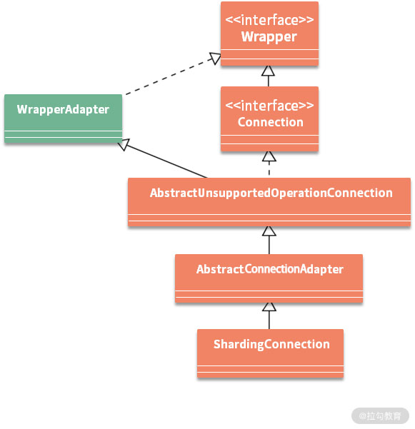
AbstractConnectionAdapter
我们首先来看看 AbstractConnectionAdapter 抽象类，ShardingConnection 直接继承了它。在 AbstractConnectionAdapter 中发现了一个 cachedConnections 属性，它是一个 Map 对象，该对象其实缓存了这个经过封装的 ShardingConnection 背后真实的 Connection 对象。如果我们对一个 AbstractConnectionAdapter 重复使用，那么这些 cachedConnections 也会一直被缓存，直到调用 close 方法。可以从 AbstractConnectionAdapter 的 getConnections 方法中理解具体的操作过程：
public final List<Connection> getConnections(final ConnectionMode connectionMode, final String dataSourceName, final int connectionSize) throws SQLException {
//获取DataSource
DataSource dataSource = getDataSourceMap().get(dataSourceName);
Preconditions.checkState(null != dataSource, "Missing the data source name: '%s'", dataSourceName);
Collection<Connection> connections;
//根据数据源从cachedConnections中获取connections
synchronized (cachedConnections) {
connections = cachedConnections.get(dataSourceName);
}
//如果connections多于想要的connectionSize，则只获取所需部分
List<Connection> result;
if (connections.size() >= connectionSize) {
result = new ArrayList<>(connections).subList(0, connectionSize);
} else if (!connections.isEmpty()) {//如果connections不够
result = new ArrayList<>(connectionSize);
result.addAll(connections);
//创建新的connections
List<Connection> newConnections = createConnections(dataSourceName, connectionMode, dataSource, connectionSize - connections.size());
result.addAll(newConnections);
synchronized (cachedConnections) {
//将新创建的connections也放入缓存中进行管理
cachedConnections.putAll(dataSourceName, newConnections);
}
} else {//如果缓存中没有对应dataSource的Connections，同样进行创建并放入缓存中
result = new ArrayList<>(createConnections(dataSourceName, connectionMode, dataSource, connectionSize));
synchronized (cachedConnections) {
cachedConnections.putAll(dataSourceName, result);
}
}
return result;
}
这段代码有三个判断，流程上比较简单，参考注释即可，需要关注的是其中的 createConnections 方法：
private List<Connection> createConnections(final String dataSourceName, final ConnectionMode connectionMode, final DataSource dataSource, final int connectionSize) throws SQLException {
if (1 == connectionSize) {
Connection connection = createConnection(dataSourceName, dataSource);
replayMethodsInvocation(connection);
return Collections.singletonList(connection);
}
if (ConnectionMode.CONNECTION_STRICTLY == connectionMode) {
return createConnections(dataSourceName, dataSource, connectionSize);
}
synchronized (dataSource) {
return createConnections(dataSourceName, dataSource, connectionSize);
}
}
这段代码涉及了 ConnectionMode（连接模式），这是 ShardingSphere 执行引擎中的重要概念，今天我们先不展开，将在第 21 课时“执行引擎：分片环境下SQL执行的整体流程应该如何进行抽象？”中详细讲解。这里，可以看到 createConnections 方法批量调用了一个 createConnection 抽象方法，该方法需要 AbstractConnectionAdapter 的子类进行实现：
protected abstract Connection createConnection(String dataSourceName, DataSource dataSource) throws SQLException;
同时，我们看到对于创建的 Connection 对象，都需要执行这样一个语句：
replayMethodsInvocation(connection);
这行代码比较难以理解，让我们来到定义它的地方，即 WrapperAdapter 类。
WrapperAdapter
从命名上看，WrapperAdapter 是一个包装器的适配类，实现了 JDBC 中的 Wrapper 接口。我们在该类中找到了这样一对方法定义：
//记录方法调用
public final void recordMethodInvocation(final Class<?> targetClass, final String methodName, final Class<?>[] argumentTypes, final Object[] arguments) {
jdbcMethodInvocations.add(new JdbcMethodInvocation(targetClass.getMethod(methodName, argumentTypes), arguments));
}
//重放方法调用
public final void replayMethodsInvocation(final Object target) {
for (JdbcMethodInvocation each : jdbcMethodInvocations) {
each.invoke(target);
}
}
这两个方法都用到了 JdbcMethodInvocation 类：
public class JdbcMethodInvocation {
@Getter
private final Method method;
@Getter
private final Object[] arguments;
public void invoke(final Object target) {
method.invoke(target, arguments);
}
}
显然，JdbcMethodInvocation 类中用到了反射技术根据传入的 method 和 arguments 对象执行对应方法。
了解了 JdbcMethodInvocation 类的原理后，我们就不难理解 recordMethodInvocation 和 replayMethodsInvocation 方法的作用。其中，recordMethodInvocation 用于记录需要执行的方法和参数，而 replayMethodsInvocation 则根据这些方法和参数通过反射技术进行执行。
对于执行 replayMethodsInvocation，我们必须先找到 recordMethodInvocation 的调用入口。通过代码的调用关系，可以看到在 AbstractConnectionAdapter 中对其进行了调用，具体来说就是 setAutoCommit、setReadOnly 和 setTransactionIsolation 这三处方法。这里以 setReadOnly 方法为例给出它的实现：
@Override
public final void setReadOnly(final boolean readOnly) throws SQLException {
this.readOnly = readOnly;
//调用recordMethodInvocation方法记录方法调用的元数据
recordMethodInvocation(Connection.class, "setReadOnly", new Class[]{boolean.class}, new Object[]{readOnly});
//执行回调
forceExecuteTemplate.execute(cachedConnections.values(), new ForceExecuteCallback<Connection>() {
@Override
public void execute(final Connection connection) throws SQLException {
connection.setReadOnly(readOnly);
}
});
}
AbstractUnsupportedOperationConnection
另一方面，从类层关系上，可以看到 AbstractConnectionAdapter 直接继承的是 AbstractUnsupportedOperationConnection 而不是 WrapperAdapter，而在 AbstractUnsupportedOperationConnection 中都是一组直接抛出异常的方法。这里截取部分代码：
public abstract class AbstractUnsupportedOperationConnection extends WrapperAdapter implements Connection {
@Override
public final CallableStatement prepareCall(final String sql) throws SQLException {
throw new SQLFeatureNotSupportedException("prepareCall");
}
@Override
public final CallableStatement prepareCall(final String sql, final int resultSetType, final int resultSetConcurrency) throws SQLException {
throw new SQLFeatureNotSupportedException("prepareCall");
}
…
}
AbstractUnsupportedOperationConnection 这种处理方式的目的就是明确哪些操作是 AbstractConnectionAdapter 及其子类 ShardingConnection 所不能支持的，属于职责分离的一种具体实现方法。
小结
JDBC 规范是理解和应用 ShardingSphere 的基础，ShardingSphere 对 JDBC 规范进行了重写，并提供了完全兼容的一套接口。在这一课时中，我们首先给出了 JDBC 规范中各个核心接口的介绍；正是在这些接口的基础上，ShardingSphere 基于适配器模式对 JDBC 规范进行了重写；我们对这一重写方案进行了抽象，并基于 ShardingConnectin 类的实现过程详细阐述了 ShardingSphere 重写 Connection 接口的源码分析。
这里给你留一道思考题：ShardingSphere如何基于适配器模式实现对JDBC中核心类的重写？
JDBC 规范与 ShardingSphere 的兼容性概念至关重要。在掌握了这个概念之后，下一课时将介绍应用集成方面的话题，即在业务系统中使用 ShardingSphere 的具体方式。
04 应用集成：在业务系统中使用 ShardingSphere 的方式有哪些？
在上一课时中，我详细介绍了 ShardingSphere 与 JDBC 规范之间的兼容性关系，我们知道 ShardingSphere 对 JDBC 规范进行了重写，并嵌入了分片机制。基于这种兼容性，开发人员使用 ShardingSphere 时就像在使用 JDBC 规范所暴露的各个接口一样。这一课时，我们将讨论如何在业务系统中使用 ShardingSphere 的具体方式。
如何抽象开源框架的应用方式？
当我们自己在设计和实现一款开源框架时，如何规划它的应用方式呢？作为一款与数据库访问相关的开源框架，ShardingSphere 提供了多个维度的应用方式，我们可以对这些应用方式进行抽象，从而提炼出一种模版。这个模版由四个维度组成，分别是底层工具、基础规范、开发框架和领域框架，如下图所示：

底层工具
底层工具指的是这个开源框架所面向的目标工具或所依赖的第三方工具。这种底层工具往往不是框架本身可以控制和管理的，框架的作用只是在它上面添加一个应用层，用于封装对这些底层工具的使用方式。
对于 ShardingSphere 而言，这里所说的底层工具实际上指的是关系型数据库。目前，ShardingSphere 支持包括 MySQL、Oracle、SQLServer、PostgreSQL 以及任何遵循 SQL92 标准的数据库。
基础规范
作为一个开源框架，很多时候需要兼容业界已经形成标准的基础性规范。换句话说，想要框架被其他开发人员所认可，就得要考虑开发人员目前在使用的基础规范。例如，如果设计一个与链路跟踪相关的开源框架，一般都需要兼容 OpenTracing 这一开放式分布式追踪规范。
对于 ShardingSphere 而言，所涉及的基础规范很明确，就是我们在上一课时中所详细阐述的 JDBC 规范。
开发框架
开源框架本身也是一个开发框架，但我们通常不会自己设计和实现一个全新的开发框架，而是更倾向于与现有的主流开发框架进行集成。目前，Java 世界中最主流的开发框架就是 Spring 家族系列框架。
ShardingSphere 同时集成了 Spring 和 Spring Boot 这两款 Spring 家族的主流开发框架。熟悉这两款框架的开发人员在应用 ShardingSphere 进行开发时将不需要任何学习成本。
领域框架
对于某些开源框架而言，也需要考虑和领域框架进行集成，以便提供更好的用户体验和使用友好性，区别于前面提到的适用于任何场景的开发框架。所谓领域框架，是指与所设计的开源框架属于同一专业领域的开发框架。 业务开发人员已经习惯在日常开发过程中使用这些特定于某一领域的开发框架，所以在设计自己的开源框架时，也需要充分考虑与这些框架的整合和集成。
对于 ShardingSphere 而言，领域框架指的是 MyBatis、Hibernate 等常见的 ORM 框架。ShardingSphere 对这领域框架提供了无缝集成的实现方案，熟悉 ORM 框架的开发人员在应用 ShardingSphere 进行开发时同样不需要任何学习成本。
接下来，我们就结合前面抽象的开源框架应用方式来具体分析 ShardingSphere 框架为开发人员提供了哪些开发上的支持。
数据库和 JDBC 集成
由于 ShardingSphere 最终操作的还是关系型数据库，并基于 JDBC 规范做了重写。所以在具体应用上相对比较简单，我们只要把握 JDBC 驱动和数据库连接池的使用方式即可。
JDBC 驱动
ShardingSphere 支持 MySQL、Oracle 等实现 JDBC 规范的主流关系型数据库。我们在使用这些数据库时，常见的做法就是指定具体数据库对应的 JDBC 驱动类、URL 以及用户名和密码。
这里以 MySQL 为例，展示了在 Spring Boot 应用程序中通过 .yaml 配置文件指定 JDBC 驱动的一般做法：
driverClassName: com.mysql.jdbc.Driver
url: jdbc:mysql://localhost:3306/test_database
username: root
password: root
数据库连接池
配置 JDBC 驱动的目的是获取访问数据库所需的 Connection。为了提高性能，主流做法是采用数据库连接池方案，数据库连接池将创建的 Connection 对象存放到连接池中，然后从池中提供 Connection。
ShardingSphere 支持一批主流的第三方数据库连接池，包括 DBCP、C3P0、BoneCP、Druid 和 HikariCP 等。在应用 ShardingSphere 时，我们可以通过创建 DataSource 来使用数据库连接池。例如，在 Spring Boot 中，可以在 .properties 配置文件中使用阿里巴巴提供的 DruidDataSource 类，初始化基于 Druid 数据库连接池的 DataSource：
spring.shardingsphere.datasource.names= test_datasource
spring.shardingsphere.datasource.test_datasource.type=com.alibaba.druid.pool.DruidDataSource
spring.shardingsphere.datasource.test_datasource.driver-class-name=com.mysql.jdbc.Driver
spring.shardingsphere.datasource.test_datasource.jdbc-url=jdbc:mysql://localhost:3306/test_database
spring.shardingsphere.datasource.test_datasource.username=root
spring.shardingsphere.datasource.test_datasource.password=root
而对于使用 Spring 框架的开发人员而言，可以直接在 Spring 容器中注入一个 DruidDataSource 的 JavaBean：
<bean id="test_datasource" class="com.alibaba.druid.pool.DruidDataSource" destroy-method="close">
<property name="driverClassName" value="com.mysql.jdbc.Driver"/>
<property name="url" value="jdbc:mysql://localhost:3306/ test_database"/>
<property name="username" value="root"/>
<property name="password" value="root"/>
</bean>
开发框架集成
从上面所介绍的配置信息中，你实际上已经看到了 ShardingSphere 中集成的两款主流开发框架，即 Spring 和 Spring Boot，它们都对 JDBC 规范做了封装。当然，对于没有使用或无法使用 Spring 家族框架的场景，我们也可以直接在原生 Java 应用程序中使用 ShardingSphere。
在介绍开发框架的具体集成方式之前，我们来设计一个简单的应用场景。假设系统中存在一个用户表 User，这张表的数据量比较大，所以我们将它进行分库分表处理，计划分成两个数据库 ds0 和 ds1，然后每个库中再分成两张表 user0 和 user1：

接下来，让我们来看一下如何基于 Java 原生、Spring 及 Spring Boot 开发框架针对这一场景实现分库分表。
Java 原生
如果使用 Java 原生的开发方式，相当于我们需要全部通过 Java 代码来创建和管理 ShardingSphere 中与分库分表相关的所有类。如果不做特殊说明，本课程将默认使用 Maven 实现包依赖关系的管理。所以，首先需要引入对 sharding-jdbc-core 组件的 Maven 引用：
<dependency>
<groupId>org.apache.shardingsphere</groupId>
<artifactId>sharding-jdbc-core</artifactId>
</dependency>
然后，按照 JDBC 的使用方法，需要创建 DataSource、Connection、Statement 等一系列接口的实现类，并通过这些类来完成具体的数据库访问操作。
我们先来看看创建 DataSource 的 Java 代码，这里构建了一个工具类 DataSourceHelper，基于 Druid 来获取一个 DruidDataSource：
public final class DataSourceHelper{
private static final String HOST = "localhost";
private static final int PORT = 3306;
private static final String USER_NAME = "root";
private static final String PASSWORD = "root";
public static DataSource createDataSource(final String dataSourceName) {
DruidDataSource result = new DruidDataSource();
result.setDriverClassName(com.mysql.jdbc.Driver.class.getName());
result.setUrl(String.format("jdbc:mysql://%s:%s/%s, HOST, PORT, dataSourceName));
result.setUsername(USER_NAME);
result.setPassword(PASSWORD);
return result;
}
}
由于在示例中，我们需要创建两个用户库，所以使用一个 Map 来保存两个数据源对象：
private static Map<String, DataSource> createDataSourceMap() {
Map<String, DataSource> result = new HashMap<>();
result.put("ds0", DataSourceHelper.createDataSource("ds0"));
result.put("ds1", DataSourceHelper.createDataSource("ds1"));
return result;
}
有了包含初始化 DataSource 对象的数据源集合之后，接下来就可以通过设计分库分表规则来获取目标 DataSource：
public DataSource dataSource() throws SQLException {
//创建分片规则配置类
ShardingRuleConfiguration shardingRuleConfig = new ShardingRuleConfiguration();
//创建分表规则配置类
TableRuleConfiguration tableRuleConfig = new TableRuleConfiguration("user", "ds${0..1}.user${0..1}");
//创建分布式主键生成配置类
Properties properties = new Properties();
properties.setProperty("worker.id", "33");
KeyGeneratorConfiguration keyGeneratorConfig = new KeyGeneratorConfiguration("SNOWFLAKE", "id", properties);
tableRuleConfig.setKeyGeneratorConfig(keyGeneratorConfig);
shardingRuleConfig.getTableRuleConfigs().add(tableRuleConfig);
//根据性别分库，一共分为 2 个库
shardingRuleConfig.setDefaultDatabaseShardingStrategyConfig(new InlineShardingStrategyConfiguration("sex", "ds${sex % 2}"));
//根据用户 ID 分表，一共分为 2 张表
shardingRuleConfig.setDefaultTableShardingStrategyConfig(new StandardShardingStrategyConfiguration("id", "user${id % 2}"));
//通过工厂类创建具体的 DataSource
return ShardingDataSourceFactory.createDataSource(createDataSourceMap(), shardingRuleConfig, new Properties());
}
这里使用到了大量 ShardingSphere 中的规则配置类，包含分片规则配置、分表规则配置、分布式主键生成配置等。同时，我们在分片规则配置中使用行表达式来设置具体的分片规则。关于行表达式的具体使用方法将在下一课时中进行介绍，这里只简单地根据用户的年龄和 ID 分别来进行分库和分表。同时，我们在方法的最后部分传入前面已经初始化的 DataSource 集合并通过工厂类来创建具体的某一个目标 DataSource。
一旦获取了目标 DataSource 之后，我们就可以使用 JDBC 中的核心接口来执行传入的 SQL 语句：
List<User> getUsers(final String sql) throws SQLException {
List<User> result = new LinkedList<>();
try (Connection connection = dataSource.getConnection();
PreparedStatement preparedStatement = connection.prepareStatement(sql);
ResultSet resultSet = preparedStatement.executeQuery()) {
while (resultSet.next()) {
User user= new User();
//省略设置User对象的赋值语句
result.add(user);
}
}
return result;
}
可以看到，这里用到了熟悉的 Connection、PreparedStatement 和 ResultSet 等 JDBC 接口来执行查询并获取结果，整个过程就像是在使用普通的 JDBC 一样。但这个时候，这些 JDBC 接口背后的实现类都已经嵌入了分片功能。
Spring
如果使用 Spring 作为我们的开发框架，那么 JDBC 中各个核心对象的创建过程都会交给 Spring 容器进行完成。ShardingSphere 中基于命名空间（NameSpace）机制完成了与 Spring 框架的无缝集成。要想使用这种机制，需要先引入对应的 Maven 依赖：
<dependency>
<groupId>org.apache.shardingsphere</groupId>
<artifactId>sharding-jdbc-spring-namespace</artifactId>
</dependency>
Spring 中的命名空间机制本质上就是基于 Spring 配置文件的 XML Scheme 添加定制化的配置项并进行解析，所以我们会在 XML 配置文件中看到一系列与分片相关的自定义配置项。例如，DataSource 的初始化过程相当于创建一个 Java Bean 的过程：
<bean id="ds0" class="com.alibaba.druid.pool.DruidDataSource">
<property name="driverClassName" value="com.mysql.jdbc.Driver"/>
<property name="url" value="jdbc:mysql://localhost:3306/ds0"/>
<property name="username" value="root"/>
<property name="password" value="root"/>
</bean>
接下来，我们同样可以通过一系列的配置项来初始化相应的分库规则，并最终完成目标 DataSource 的创建过程：
<!-- 创建分库配置 -->
<sharding:inline-strategy id="databaseStrategy" sharding-column="sex" algorithm-expression="ds${sex % 2}" />
<!-- 创建分表配置 -->
<sharding:inline-strategy id="tableStrategy" sharding-column="id" algorithm-expression="user${id % 2}" />
<!-- 创建分布式主键生成配置 -->
<bean:properties id="properties">
<prop key="worker.id">33</prop>
</bean:properties>
<sharding:key-generator id="keyGenerator" type="SNOWFLAKE" column="id" props-ref="properties" />
<!-- 创建分片规则配置 -->
<sharding:data-source id="shardingDataSource">
<sharding:sharding-rule data-source-names="ds0, ds1">
<sharding:table-rules>
<sharding:table-rule logic-table="user" actual-data-nodes="ds${0..1}.user${0..1}" database-strategy-ref="databaseStrategy" table-strategy-ref="tableStrategy" key-generator-ref="keyGenerator" />
</sharding:table-rules>
</sharding:sharding-rule>
</sharding:data-source>
关于这些配置项的内容我们同样放在下一课时中进行详细讨论。
Spring Boot
如果你使用的开发框架是 Spring Boot，那么所需要做的也是编写一些配置项。在 Spring Boot 中，配置项的组织形式有两种，一种是 .yaml 文件，一种是 .properties 文件，这里以 .properties 为例给出 DataSource 的配置：
spring.shardingsphere.datasource.names=ds0,ds1
spring.shardingsphere.datasource.ds0.type=com.alibaba.druid.pool.DruidDataSource
spring.shardingsphere.datasource.ds0.driver-class-name=com.mysql.jdbc.Driver
spring.shardingsphere.datasource.ds0.jdbc-url=jdbc:mysql://localhost:3306/ds0
spring.shardingsphere.datasource.ds0.username=root
spring.shardingsphere.datasource.ds0.password=root
spring.shardingsphere.datasource.ds1.type=com.alibaba.druid.pool.DruidDataSource
spring.shardingsphere.datasource.ds1.driver-class-name=com.mysql.jdbc.Driver
spring.shardingsphere.datasource.ds1.jdbc-url=jdbc:mysql://localhost:3306/ds1
spring.shardingsphere.datasource.ds1.username=root
spring.shardingsphere.datasource.ds1.password=root
有了 DataSource 之后，我们同样可以设置对应的分库策略、分表策略及分布式主键生成策略：
spring.shardingsphere.sharding.default-database-strategy.inline.sharding-column=sex
spring.shardingsphere.sharding.default-database-strategy.inline.algorithm-expression=ds$->{sex % 2}
spring.shardingsphere.sharding.tables.user.actual-data-nodes=ds$->{0..1}.user$->{0..1}
spring.shardingsphere.sharding.tables.user.table-strategy.inline.sharding-column=id
spring.shardingsphere.sharding.tables.user.table-strategy.inline.algorithm-expression=user$->{id % 2}
spring.shardingsphere.sharding.tables.user.key-generator.column=id
spring.shardingsphere.sharding.tables.user.key-generator.type=SNOWFLAKE
spring.shardingsphere.sharding.tables.user.key-generator.props.worker.id=33
可以看到，相比 Spring 提供的命名空间机制，基于 Spring Boot 的配置风格相对简洁明了，容易理解。
一旦我们提供了这些配置项，就可以直接在应用程序中注入一个 DataSource 来获取 Connection 等 JDBC 对象。但在日常开发过程中，如果我们使用了 Spring 和 Spring Boot 开发框架，一般都不会直接使用原生的 JDBC 接口来操作数据库，而是通过集成常见的 ORM 框架来实现这一点。让我们来看一下。
ORM 框架集成
在 Java 领域，主流的 ORM 框架可以分成两大类，一类遵循 JPA（Java Persistence API，Java 持久层 API）规范，代表性的框架有 Hibernate、TopLink 等；而另一类则完全采用自定义的方式来实现对象和关系之间的映射，代表性的框架就是 MyBatis。
这里以 Spring Boot 开发框架为例，简要介绍这两种 ORM 框架的集成方式。基于 Spring Boot 提供的强大自动配置机制，我们发现集成这些 ORM 框架的方式非常简单。
JPA
想要在 Spring Boot 中使用 JPA，我们需要在 pom 文件中添加对 spring-boot-starter-data-jpa 的 Maven 依赖：
<dependency>
<groupId>org.springframework.boot</groupId>
<artifactId>spring-boot-starter-data-jpa</artifactId>
</dependency>
一旦添加了 Maven 依赖，Spring Boot 就会自动导入 spring-orm、hibernate-entity-manager、spring-data-jpa 等一系列工具包。然后，在 application.properties 配置文件中添加与 JPA 相关的配置项就可以了：
spring.jpa.properties.hibernate.hbm2ddl.auto=create-drop
spring.jpa.properties.hibernate.dialect=org.hibernate.dialect.MySQL5Dialect
spring.jpa.properties.hibernate.show_sql=false
当然，我们需要在业务代码中完成 JPA 的 Entity 实体类、Repository 仓库类的定义，并在 Spring Boot 的启动类中完成对包含对应包结构的扫描：
@ComponentScan("com.user.jpa")
@EntityScan(basePackages = "com.user.jpa.entity")
public class UserApplication
MyBatis
对于 MyBatis 而言，集成的步骤也类似。首先，我们需要添加 Maven 依赖：
<dependency>
<groupId>org.mybatis.spring.boot</groupId>
<artifactId>mybatis-spring-boot-starter</artifactId>
</dependency>
然后，由于 MyBatis 的启动依赖于框架提供的专用配置项，一般我们会把这些配置项组织在一个独立的配置文件中，并在 Spring Boot 的 application.properties 中引用这个配置文件：
mybatis.config-location=classpath:META-INF/mybatis-config.xml
在 mybatis-config.xml 配置文件中，至少会包含各种 Mybatis Mapper 文件的定义：
<?xml version="1.0" encoding="UTF-8" ?>
<!DOCTYPE configuration
PUBLIC "-//mybatis.org//DTD Config 3.0//EN"
"http://mybatis.org/dtd/mybatis-3-config.dtd">
<configuration>
<mappers>
<mapper resource="mappers/UserMapper.xml"/>
</mappers>
</configuration>
而在 Mapper 文件中，就包含了运行 MyBatis 所需的实体与数据库模式之间的映射关系，以及各种数据库操作的 SQL 语句定义。
最后，我们同样需要在 Spring Boot 的启动类中添加对包含各种 Entity 和 Repository 定义的包结构的扫描机制：
@ComponentScan("com.user.mybatis")
@MapperScan(basePackages = "com.user.mybatis.repository")
public class UserApplication
这样，我们在业务系统中使用 ShardingSphere 的各种方式就介绍完毕了。
小结
作为一个优秀的开源框架，ShardingSphere 提供了多方面的集成方式供广大开发人员在业务系统中使用它来完成分库分表操作。在这一课时中，我们先梳理了作为一个开源框架所应该具备的应用方式，并分析了这些应用方式在 ShardingSphere 中的具体实现机制。可以看到，从 JDBC 规范，到 Spring、Spring Boot 开发框架，再到 JPA、MyBatis 等主流 ORM 框架，ShardingSphere 都提供了完善的集成方案。
这里给你留一道思考题：为了实现框架的易用性，ShardingSphere 为开发人员提供了哪些工具和规范的集成？
另一方面，在今天的课程中，我们也看到，使用 ShardingSphere 的主要方式事实上就是基于它所提供的配置体系，来完成各种配置项的创建和设置。可以说，配置工作是使用 ShardingSphere 进行开发的主要工作。
05 配置驱动：ShardingSphere 中的配置体系是如何设计的？
在上一课时中，我们介绍了在业务系统中应用 ShardingSphere 的几种方法。事实上，我们发现，除了掌握 Spring、Spring Boot、Mybatis 等常见框架的功能特性之外，使用 ShardingSphere 的主要工作在于根据业务需求完成各种分片操作相关配置项的设置。今天，我就来带领你剖析 ShardingSphere 中的配置体系到底是如何进行设计并实现的，这也是我们介绍 ShardingSphere 核心功能的前提。
什么是行表达式？
在引入配置体系的学习之前，我们先来介绍 ShardingSphere 框架为开发人员提供的一个辅助功能，这个功能就是行表达式。
行表达式是 ShardingSphere 中用于实现简化和统一配置信息的一种工具，在日常开发过程中应用得非常广泛。 它的使用方式非常直观，只需要在配置中使用 ${expression} 或 $->{expression} 表达式即可。
例如上一课时中使用的"ds${0..1}.user${0..1}"就是一个行表达式，用来设置可用的数据源或数据表名称。基于行表达式语法，${begin..end} 表示的是一个从"begin"到"end"的范围区间，而多个 ${expression} 之间可以用"."符号进行连接，代表多个表达式数值之间的一种笛卡尔积关系。这样，如果采用图形化的表现形式，"ds${0..1}.user${0..1}"表达式最终会解析成这样一种结果：

当然，类似场景也可以使用枚举的方式来列举所有可能值。行表达式也提供了 ${[enum1, enum2,…, enumx]} 语法来表示枚举值，所以"ds${0..1}.user${0..1}"的效果等同于"ds${[0,1]}.user${[0,1]}"。
同样，在上一课时中使用到的 ds${age % 2} 表达式，它表示根据 age 字段进行对 2 取模，从而自动计算目标数据源是 ds0 还是 ds1。所以，除了配置数据源和数据表名称之外，行表达式在 ShardingSphere 中另一个常见的应用场景就是配置各种分片算法，我们会在后续的示例中大量看到这种使用方法。
由于 ${expression} 与 Spring 本身的属性文件占位符冲突，而 Spring 又是目前主流的开发框架，因此在正式环境中建议你使用 $->{expression} 来进行配置。
ShardingSphere 有哪些核心配置？
对于分库分表、读写分离操作而言，配置的主要任务是完成各种规则的创建和初始化。配置是整个 ShardingSphere 的核心，也是我们在日常开发过程中的主要工作。可以说，只要我们掌握了 ShardingSphere 的核心配置项，就相当于掌握了这个框架的使用方法。那么，ShardingSphere 有哪些核心配置呢？这里以分片引擎为例介绍最常用的几个配置项，而与读写分离、数据脱敏、编排治理相关的配置项我们会在介绍具体的应用场景时再做展开。
ShardingRuleConfiguration
我们在上一课时中已经了解了如何通过框架之间的集成方法来创建一个 DataSource，这个 DataSource 就是我们使用 ShardingSphere 的入口。我们也看到在创建 DataSource 的过程中使用到了一个 ShardingDataSourceFactory 类，这个工厂类的构造函数中需要传入一个 ShardingRuleConfiguration 对象。显然，从命名上看，这个 ShardingRuleConfiguration 就是用于分片规则的配置入口。
ShardingRuleConfiguration 中所需要配置的规则比较多，我们可以通过一张图例来进行简单说明，在这张图中，我们列举了每个配置项的名称、类型以及个数关系：

这里引入了一些新的概念，包括绑定表、广播表等，这些概念在下一课时介绍到 ShardingSphere 的分库分表操作时都会详细展开，这里不做具体介绍。事实上，对于 ShardingRuleConfiguration 而言，必须要设置的只有一个配置项，即 TableRuleConfiguration。
TableRuleConfiguration
从命名上看，TableRuleConfiguration 是表分片规则配置，但事实上，这个类同时包含了对分库和分表两种场景的设置。TableRuleConfiguration 包含很多重要的配置项：
- actualDataNodes
actualDataNodes 代表真实的数据节点，由数据源名+表名组成，支持行表达式。例如，前面介绍的"ds${0..1}.user${0..1}"就是比较典型的一种配置方式。
- databaseShardingStrategyConfig
databaseShardingStrategyConfig 代表分库策略，如果不设置则使用默认分库策略，这里的默认分库策略就是 ShardingRuleConfiguration 中的 defaultDatabaseShardingStrategyConfig 配置。
- tableShardingStrategyConfig
和 databaseShardingStrategyConfig 一样，tableShardingStrategyConfig 代表分表策略，如果不设置也会使用默认分表策略，这里的默认分表策略同样来自 ShardingRuleConfiguration 中的 defaultTableShardingStrategyConfig 配置。
- keyGeneratorConfig
keyGeneratorConfig 代表分布式环境下的自增列生成器配置，ShardingSphere 中集成了雪花算法等分布式 ID 的生成器实现。
ShardingStrategyConfiguration
我们注意到，databaseShardingStrategyConfig 和 tableShardingStrategyConfig 的类型都是一个 ShardingStrategyConfiguration 对象。在 ShardingSphere 中，ShardingStrategyConfiguration 实际上是一个空接口，存在一系列的实现类，其中的每个实现类都代表一种分片策略：
 ShardingStrategyConfiguration 的类层结构图
ShardingStrategyConfiguration 的类层结构图
在这些具体的分片策略中，通常需要指定一个分片列 shardingColumn 以及一个或多个分片算法 ShardingAlgorithm。当然也有例外，例如 HintShardingStrategyConfiguration 直接使用数据库的 Hint 机制实现强制路由，所以不需要分片列。我们会在《路由引擎：如何在路由过程中集成多种分片策略和分片算法？》中对这些策略的实现过程做详细的剖析。
KeyGeneratorConfiguration
可以想象，对于一个自增列而言，KeyGeneratorConfiguration 中首先需要指定一个列名 column。同时，因为 ShardingSphere 中内置了一批自增列的实现机制（例如雪花算法 SNOWFLAKE 以及通用唯一识别码 UUID），所以需要通过一个 type 配置项进行指定。最后，我们可以利用 Properties 配置项来指定自增值生成过程中所需要的相关属性配置。关于这一点，我们在上一课时中也看到了示例，即雪花算法中配置 workerId 为 33。
基于以上核心配置项，我们已经可以完成日常开发过程中常见的分库分表操作。当然，对于不同的开发人员，如何采用某一个特定的方式将这些配置项信息集成到业务代码中，也存在着不同的诉求。因此，ShardingSphere 中也提供了一系列的配置方式供开发人员进行选择。
ShardingSphere 提供了哪些配置方式？
从 Java 代码到配置文件，ShardingSphere 提供了 4 种配置方式，用于不同的使用场景，分别是：
- Java 代码配置
- Yaml 配置
- Spring 命名空间配置
- Spring Boot配置
我们来看一下这四种配置的具体方法。
Java 代码配置
Java 代码配置是使用 ShardingSphere 所提供的底层 API 来完成配置系统构建的原始方式。在上一课时中，我们已经看到了如何初始化 ShardingRuleConfiguration 和 TableRuleConfiguration 类，并通过 ShardingDataSourceFactory 创建目标 DataSource 的具体方式，这里不再展开。
在日常开发中，我们一般不会直接使用 Java 代码来完成 ShardingSphere 配置体系的构建。一方面，如果使用 Java 代码来实现配置，一旦有变动就需要重新编译代码并发布，不利于实现配置信息的动态化管理和系统的持续集成。另一方面，代码级别的配置方式也比较繁琐，不够直接且容易出错，维护性也不好。
当然，也可能有例外情况。一种情况是，如果我们需要和其他框架进行更加底层的集成或定制化开发时，往往只能采用 Java 代码才能达到理想的效果。同时，对于刚接触 ShardingSphere 的开发人员而言，基于框架提供的 API 进行开发更加有利于快速掌握框架提供的各种类之间的关联关系和类层结构。
Yaml 配置
Yaml 配置是 ShardingSphere 所推崇的一种配置方式。Yaml 的语法和其他高级语言类似，并且可以非常直观地描述多层列表和对象等数据形态，特别适合用来表示或编辑数据结构和各种配置文件。
在语法上，常见的"!!"表示实例化该类；以"-"开头的多行构成一个数组；以":"表示键值对；以"#"表示注释。关于 Yaml 语法的更多介绍可以参考百度百科 https://baike.baidu.com/item/YAML。请注意，Yaml 大小写敏感，并使用缩进表示层级关系。 这里给出一个基于 ShardingSphere 实现读写分离场景下的配置案例：
dataSources:
dsmaster: !!com.alibaba.druid.pool.DruidDataSource
driverClassName: com.mysql.jdbc.Driver
url: jdbc:mysql://119.3.52.175:3306/dsmaster
username: root
password: root
dsslave0: !!com.alibaba.druid.pool.DruidDataSource
driverClassName: com.mysql.jdbc.Driver
url: jdbc:mysql://119.3.52.175:3306/dsslave0
username: root
password: root
dsslave1: !!com.alibaba.druid.pool.DruidDataSource
driverClassName: com.mysql.jdbc.Driver
url: jdbc:mysql://119.3.52.175:3306/dsslave1
username: root
password: root
masterSlaveRule:
name: health_ms
masterDataSourceName: dsmaster
slaveDataSourceNames: [dsslave0, dsslave1]
可以看到，这里配置了 dsmaster、dsslave0 和 dsslave1 这三个 DataSource，然后针对每个 DataSource 分别设置了它们的驱动信息。最后，基于这三个 DataSource 配置了一个 masterSlaveRule 规则，用于指定具体的主从架构。
在 ShardingSphere 中，我们可以把配置信息存放在一个 .yaml 配置文件中，并通过加载这个配置文件来完成配置信息的解析。这种机制为开发人员高效管理配置信息提供了更多的灵活性和可定制性。在今天内容的最后，我们会详细剖析这一机制的实现原理。
Spring 命名空间配置
我们可以通过自定义配置标签实现方案来扩展 Spring 的命名空间，从而在 Spring 中嵌入各种自定义的配置项。Spring 框架从 2.0 版本开始提供了基于 XML Schema 的风格来定义 Javabean 的扩展机制。通过 XML Schema 的定义，把一些原本需要通过复杂的 Javabean 组合定义的配置形式，用一种更加简单而可读的方式呈现出来。基于 Scheme 的 XML 由三部分构成，我们用一个示例说明：
<master-slave:load-balance-algorithm id="randomStrategy"/>
这段 XML 中，master-slave 是命名空间，从这个命名空间中可以明确地区分出所属的逻辑分类是用于实现读写分离；load-balance-algorithm 是一种元素，代表用于设置读写分离中的负载均衡算法；而 ID 就是负载均衡下的一个配置选项，它的值为随机策略 randomStrategy。
在 ShardingSphere 中，我们同样可以基于命名空间来实现完整的读写分离配置：
<beans
...
http://shardingsphere.apache.org/schema/shardingsphere/masterslave
http://shardingsphere.apache.org/schema/shardingsphere/masterslave/master-slave.xsd">
<bean id=" dsmaster " class=" com.alibaba.druid.pool.DruidDataSource" destroy-method="close">
<property name="driverClassName" value="com.mysql.jdbc.Driver"/>
<property name="url" value="jdbc:mysql://localhost:3306/dsmaster"/>
<property name="username" value="root"/>
<property name="password" value="root"/>
</bean>
<bean id="dsslave0" class="com.alibaba.druid.pool.DruidDataSource" destroy-method="close">
<property name="driverClassName" value="com.mysql.jdbc.Driver"/>
<property name="url" value="jdbc:mysql://localhost:3306/dsslave0"/>
<property name="username" value="root"/>
<property name="password" value="root"/>
</bean>
<bean id="dsslave1" class="com.alibaba.druid.pool.DruidDataSource" destroy-method="close">
<property name="driverClassName" value="com.mysql.jdbc.Driver"/>
<property name="url" value="jdbc:mysql://localhost:3306/dsslave1"/>
<property name="username" value="root"/>
<property name="password" value="root"/>
</bean>
<master-slave:load-balance-algorithm id="randomStrategy" type="RANDOM" />
<master-slave:data-source id="masterSlaveDataSource" master-data-source-name="dsmaster" slave-data-source-names="dsslave0, dsslave1" strategy-ref="randomStrategy" />
</beans>
在这段代码中，我们在 Spring 中引入了 master-slave 这个新的命名空间，并完成了负载均衡算法和三个主从 DataSource 的设置。
Spring Boot 配置
Spring Boot 已经成为 Java 领域最流行的开发框架，提供了约定优于配置的设计理念。通常，开发人员可以把配置项放在 application.properties 文件中。同时，为了便于对配置信息进行管理和维护，Spring Boot 也提供了 profile 的概念，可以基于 profile 来灵活组织面对不同环境或应用场景的配置信息。在采用 profile 时，配置文件的命名方式有一定的约定：
{application}-{profile}.properties
基于这种命名约定，如果我们根据面向的是传统的单库单表场景，还是主从架构的读写分离场景进行命名，就需要分别提供两个不同的 .properties 配置文件，如下面的代码所示：
application-traditional.properties
application-master-slave.properties
这两个文件名中的 traditional 和 master-slave 就是具体的 profile，现在在 application.properties 文件中就可以使用 spring.profiles.active 配置项来设置当前所使用的 profile：
#spring.profiles.active=traditional
spring.profiles.active=master-slave
基于 Spring Boot 的配置风格就是一组键值对，我们同样可以采用这种方式来实现前面介绍的读写分离配置：
spring.shardingsphere.datasource.names=dsmaster,dsslave0,dsslave1
spring.shardingsphere.datasource.dsmaster.type=com.alibaba.druid.pool.DruidDataSource
spring.shardingsphere.datasource.dsmaster.driver-class-name=com.mysql.jdbc.Driver
spring.shardingsphere.datasource.dsmaster.url=jdbc:mysql://localhost:3306/dsmaster
spring.shardingsphere.datasource.dsmaster.username=root
spring.shardingsphere.datasource.dsmaster.password=root
spring.shardingsphere.datasource.dsslave0.type=com.alibaba.druid.pool.DruidDataSource
spring.shardingsphere.datasource.dsslave0.driver-class-name=com.mysql.jdbc.Driver
spring.shardingsphere.datasource.dsslave0.url=jdbc:mysql://localhost:3306/dsslave0
spring.shardingsphere.datasource.dsslave0.username=root
spring.shardingsphere.datasource.dsslave0.password=root
spring.shardingsphere.datasource.dsslave1.type=com.alibaba.druid.pool.DruidDataSource
spring.shardingsphere.datasource.dsslave1.driver-class-name=com.mysql.jdbc.Driver
spring.shardingsphere.datasource.dsslave1.url=jdbc:mysql://localhost:3306/dsslave1
spring.shardingsphere.datasource.dsslave1.username=root
spring.shardingsphere.datasource.dsslave1.password=root
spring.shardingsphere.masterslave.load-balance-algorithm-type=random
spring.shardingsphere.masterslave.name=health_ms
spring.shardingsphere.masterslave.master-data-source-name=dsmaster
spring.shardingsphere.masterslave.slave-data-source-names=dsslave0,dsslave1
通过这些不同的配置方式，开发人员可以基于自己擅长的或开发框架所要求的方式，灵活完成各项配置工作。在本课程中的后续内容中，我们会组合使用 Yaml 配置和 Spring Boot 配置这两种配置方式来介绍 ShardingSphere 的具体使用方式。
ShardingSphere 的配置体系是如何实现的？
尽管在日常开发过程中很少使用，但在前面介绍的四种配置方式中，Java 代码配置的实现方式最容易理解，我们可以通过各个配置类的调用关系来梳理 ShardingSphere 提供的配置功能。所以，为了深入理解配置体系的实现原理，我们还是选择从 ShardingRuleConfiguration 类进行切入。
ShardingRuleConfiguration 配置体系
对于 ShardingSphere 而言，配置体系的作用本质上就是用来初始化 DataSource 等 JDBC 对象。例如，ShardingDataSourceFactory 就是基于传入的数据源 Map、ShardingRuleConfiguration 以及 Properties 来创建一个 ShardingDataSource 对象：
public final class ShardingDataSourceFactory {
public static DataSource createDataSource(
final Map<String, DataSource> dataSourceMap, final ShardingRuleConfiguration shardingRuleConfig, final Properties props) throws SQLException {
return new ShardingDataSource(dataSourceMap, new ShardingRule(shardingRuleConfig, dataSourceMap.keySet()), props);
}
}
在 ShardingSphere 中，所有规则配置类都实现了一个顶层接口 RuleConfiguration。RuleConfiguration 是一个空接口，ShardingRuleConfiguration 就是这个接口的实现类之一，专门用来处理分片引擎的应用场景。下面这段代码就是 ShardingRuleConfiguration 类的实现过程：
public final class ShardingRuleConfiguration implements RuleConfiguration {
//表分片规则列表
private Collection<TableRuleConfiguration> tableRuleConfigs = new LinkedList<>();
//绑定表规则列表
private Collection<String> bindingTableGroups = new LinkedList<>();
//广播表规则列表
private Collection<String> broadcastTables = new LinkedList<>();
//默认数据源
private String defaultDataSourceName;
//默认分库策略
private ShardingStrategyConfiguration defaultDatabaseShardingStrategyConfig;
//默认分表策略
private ShardingStrategyConfiguration defaultTableShardingStrategyConfig;
//默认自增列值生成器
private KeyGeneratorConfiguration defaultKeyGeneratorConfig;
//读写分离规则
private Collection<MasterSlaveRuleConfiguration> masterSlaveRuleConfigs = new LinkedList<>();
//数据脱敏规则
private EncryptRuleConfiguration encryptRuleConfig;
}
可以看到，ShardingRuleConfiguration 中包含的就是一系列的配置类定义，通过前面的内容介绍，我们已经明白了这些配置类的作用和使用方法。其中，核心的 TableRuleConfiguration 定义也比较简单，主要包含了逻辑表、真实数据节点以及分库策略和分表策略的定义：
public final class TableRuleConfiguration {
//逻辑表
private final String logicTable;
//真实数据节点
private final String actualDataNodes;
//分库策略
private ShardingStrategyConfiguration databaseShardingStrategyConfig;
//分表策略
private ShardingStrategyConfiguration tableShardingStrategyConfig;
//自增列生成器
private KeyGeneratorConfiguration keyGeneratorConfig;
public TableRuleConfiguration(final String logicTable) {
this(logicTable, null);
}
public TableRuleConfiguration(final String logicTable, final String actualDataNodes) {
Preconditions.checkArgument(!Strings.isNullOrEmpty(logicTable), "LogicTable is required.");
this.logicTable = logicTable;
this.actualDataNodes = actualDataNodes;
}
}
因为篇幅有限，我们不对其他配置类的定义做具体展开。事实上，无论采用哪种配置方式，所有的配置项都是在这些核心配置类的基础之上进行封装和转换。基于 Spring 命名空间和 Spring Boot 配置的使用方式比较常见，这两种方式的实现原理都依赖于 ShardingSphere 与这两个框架的集成方式，我会在后续课时中做详细展开。而 Yaml 配置是 ShardingSphere 非常推崇的一种使用方式，为此，ShardingSphere 在内部对 Yaml 配置的应用场景有专门的处理。今天，我们就来详细解析一下针对 Yaml 配置的完整实现方案。
YamlShardingRuleConfiguration 配置体系
在 ShardingSphere 源码的 sharding-core-common 工程中，存在一个包结构 org.apache.shardingsphere.core.yaml.config，在这个包结构下包含着所有与 Yaml 配置相关的实现类。
与 RuleConfiguration 一样，ShardingSphere 同样提供了一个空的 YamlConfiguration 接口。这个接口的实现类非常多，但我们发现其中包含了唯一的一个抽象类 YamlRootRuleConfiguration，显然，这个类是 Yaml 配置体系中的基础类。 在这个 YamlRootRuleConfiguration 中，包含着数据源 Map 和 Properties：
public abstract class YamlRootRuleConfiguration implements YamlConfiguration {
private Map<String, DataSource> dataSources = new HashMap<>();
private Properties props = new Properties();
}
在上面这段代码中，我们发现少了 ShardingRuleConfiguration 的对应类，其实，这个类的定义在 YamlRootRuleConfiguration 的子类 YamlRootShardingConfiguration 中，它的类名 YamlShardingRuleConfiguration 就是在 ShardingRuleConfiguration 上加了一个 Yaml 前缀，如下面这段代码所示：
public class YamlRootShardingConfiguration extends YamlRootRuleConfiguration {
private YamlShardingRuleConfiguration shardingRule;
}
接下来，我们来到 YamlShardingRuleConfiguration 类，发现它所包含的变量与 ShardingRuleConfiguration 类中的变量存在一致对应关系，这些 Yaml 配置类都位于 org.apache.shardingsphere.core.yaml.config.sharding 包中：
public class YamlShardingRuleConfiguration implements YamlConfiguration {
private Map<String, YamlTableRuleConfiguration> tables = new LinkedHashMap<>();
private Collection<String> bindingTables = new ArrayList<>();
private Collection<String> broadcastTables = new ArrayList<>();
private String defaultDataSourceName;
private YamlShardingStrategyConfiguration defaultDatabaseStrategy;
private YamlShardingStrategyConfiguration defaultTableStrategy;
private YamlKeyGeneratorConfiguration defaultKeyGenerator;
private Map<String, YamlMasterSlaveRuleConfiguration> masterSlaveRules = new LinkedHashMap<>();
private YamlEncryptRuleConfiguration encryptRule;
}
那么这个 YamlShardingRuleConfiguration 是怎么构建出来的呢？这就要来到 YamlShardingDataSourceFactory 工厂类，这个工厂类实际上是对 ShardingDataSourceFactory 类的进一步封装，下面这段代码就演示了这一过程：
public final class YamlShardingDataSourceFactory {
public static DataSource createDataSource(final File yamlFile) throws SQLException, IOException {
YamlRootShardingConfiguration config = YamlEngine.unmarshal(yamlFile, YamlRootShardingConfiguration.class);
return ShardingDataSourceFactory.createDataSource(config.getDataSources(), new ShardingRuleConfigurationYamlSwapper().swap(config.getShardingRule()), config.getProps());
}
…
}
可以看到 createDataSource 方法的输入参数是一个 File 对象，我们通过这个 File 对象构建出 YamlRootShardingConfiguration 对象，然后再通过 YamlRootShardingConfiguration 对象获取了 ShardingRuleConfiguration 对象，并交由 ShardingDataSourceFactory 完成目标 DataSource 的构建。这里的调用关系有点复杂，我们来梳理整个过程的类层结构，如下图所示：

显然，这里引入了两个新的工具类，YamlEngine 和 YamlSwapper。我们来看一下它们在整个流程中起到的作用。
YamlEngine 和 YamlSwapper
YamlEngine 的作用是将各种形式的输入内容转换成一个 Yaml 对象，这些输入形式包括 File、字符串、byte[] 等。YamlEngine 包含了一批 unmarshal/marshal 方法来完成数据的转换。以 File 输入为例，unmarshal 方法通过加载 FileInputStream 来完成 Yaml 对象的构建：
public static <T extends YamlConfiguration> T unmarshal(final File yamlFile, final Class<T> classType) throws IOException {
try (
FileInputStream fileInputStream = new FileInputStream(yamlFile);
InputStreamReader inputStreamReader = new InputStreamReader(fileInputStream, "UTF-8")
) {
return new Yaml(new Constructor(classType)).loadAs(inputStreamReader, classType);
}
}
当在 unmarshal 方法中传入想要的 classType 时，我们就可以获取这个 classType 对应的实例。在 YamlShardingDataSourceFactory 中我们传入了 YamlRootShardingConfiguration 类型，这样我们就将得到一个 YamlRootShardingConfiguration 的类实例 YamlShardingRuleConfiguration。
在得到 YamlShardingRuleConfiguration 之后，下一步需要实现将 YamlShardingRuleConfiguration 转换为 ShardingRuleConfiguration。为了完成这种具有对应关系的类地转换，ShardingSphere 还专门提供了一批转换器类，ShardingRuleConfigurationYamlSwapper 就是其中之一。ShardingRuleConfigurationYamlSwapper 实现了 YamlSwapper 接口：
public interface YamlSwapper<Y extends YamlConfiguration, T> {
Y swap(T data);
T swap(Y yamlConfiguration);
}
可以看到这里提供了一对方法完成两种数据结构之间的相互转换，ShardingRuleConfigurationYamlSwapper 中对这两个方法的实现过程也比较直接。以目标对象为 ShardingRuleConfiguration 的 swap 方法为例，代码结构基本上就是完成了 YamlShardingRuleConfiguration 与 ShardingRuleConfiguration 中对应字段的一对一转换：
@Override
public ShardingRuleConfiguration swap(final YamlShardingRuleConfiguration yamlConfiguration) {
ShardingRuleConfiguration result = new ShardingRuleConfiguration();
for (Entry<String, YamlTableRuleConfiguration> entry : yamlConfiguration.getTables().entrySet()) {
YamlTableRuleConfiguration tableRuleConfig = entry.getValue();
tableRuleConfig.setLogicTable(entry.getKey());
result.getTableRuleConfigs().add(tableRuleConfigurationYamlSwapper.swap(tableRuleConfig));
}
result.setDefaultDataSourceName(yamlConfiguration.getDefaultDataSourceName());
result.getBindingTableGroups().addAll(yamlConfiguration.getBindingTables());
result.getBroadcastTables().addAll(yamlConfiguration.getBroadcastTables());
if (null != yamlConfiguration.getDefaultDatabaseStrategy()) {
result.setDefaultDatabaseShardingStrategyConfig(shardingStrategyConfigurationYamlSwapper.swap(yamlConfiguration.getDefaultDatabaseStrategy()));
}
if (null != yamlConfiguration.getDefaultTableStrategy()) {
result.setDefaultTableShardingStrategyConfig(shardingStrategyConfigurationYamlSwapper.swap(yamlConfiguration.getDefaultTableStrategy()));
}
if (null != yamlConfiguration.getDefaultKeyGenerator()) {
result.setDefaultKeyGeneratorConfig(keyGeneratorConfigurationYamlSwapper.swap(yamlConfiguration.getDefaultKeyGenerator()));
}
Collection<MasterSlaveRuleConfiguration> masterSlaveRuleConfigs = new LinkedList<>();
for (Entry<String, YamlMasterSlaveRuleConfiguration> entry : yamlConfiguration.getMasterSlaveRules().entrySet()) {
YamlMasterSlaveRuleConfiguration each = entry.getValue();
each.setName(entry.getKey());
masterSlaveRuleConfigs.add(masterSlaveRuleConfigurationYamlSwapper.swap(entry.getValue()));
}
result.setMasterSlaveRuleConfigs(masterSlaveRuleConfigs);
if (null != yamlConfiguration.getEncryptRule()) {
result.setEncryptRuleConfig(encryptRuleConfigurationYamlSwapper.swap(yamlConfiguration.getEncryptRule()));
}
return result;
}
这样，我们就从外部的 Yaml 文件中获取了一个 ShardingRuleConfiguration 对象，然后可以使用 ShardingDataSourceFactory 工厂类完成目标 DataSource 的创建过程。
小结
承接上一课时的内容，本课时我们对 ShardingSphere 中的配置体系进行了全面的介绍。事实上，在使用这个框架时，配置是开发人员最主要的工作内容。我们对 ShardingSphere 的核心配置项进行了梳理，然后给出了具体的四种配置方式，分别是 Java 代码配置、Yaml 配置、Spring 命名空间配置以及 Spring Boot 配置。最后，从实现原理上，我们也对 Yaml 配置这一特定的配置方式进行了深入的剖析。
这里给你留一道思考题：在 ShardingSphere中，配置体系相关的核心类之间存在什么样的关联关系？
从下一课时开始，我们就将基于 ShardingSphere 提供的配置体系，来逐步完成分库分表、读写分离以及分库分表+读写分离等操作的开发工作。
09 分布式事务：如何使用强一致性事务与柔性事务？
你好，欢迎进入第 09 课时的学习。今天，我们将介绍一个分布式环境下的重要主题，即分布式事务。在介绍 ShardingSphere 中的具体应用方式之前，我们有必要对分布式事务的基本概念做简要介绍。
如何理解分布式事务？
在传统的关系型数据库中，事务是一个标准组件，几乎所有成熟的关系型数据库都提供了对本地事务的原生支持。本地事务提供了 ACID 事务特性。基于本地事务，为了保证数据的一致性，我们先开启一个事务后，才可以执行数据操作，最后提交或回滚就可以了。更进一步，借助于 Spring 等集成化框架，开发人员只需关注引起数据改变的业务即可。
但在分布式环境下，事情就会变得比较复杂。假设系统中存在多个独立的数据库，为了确保数据在这些独立的数据库中保持一致，我们需要把这些数据库纳入同一个事务中。这时本地事务就无能为力了，我们需要使用分布式事务。
业界关于如何实现分布式事务也有一些通用的实现机制，例如支持两阶段提交的 XA 协议以及以 Saga 为代表的柔性事务。针对不同的实现机制，也存在一些供应商和开发工具。因为这些开发工具在使用方式上和实现原理上都有较大的差异性，所以开发人员的一大诉求在于，希望能有一套统一的解决方案能够屏蔽这些差异。同时，我们也希望这种解决方案能够提供友好的系统集成性。
ShardingSphere 作为一款分布式数据库中间件，势必要考虑分布式事务的实现方案。而在设计上，ShardingSphere 从一开始就充分考虑到了开发人员的这些诉求，接下来让我们一起来看一下。
ShardingSphere 中的分布式事务
在 ShardingSphere 中，除本地事务之外，还提供针对分布式事务的两种实现方案，分别是 XA 事务和柔性事务。这点可以从事务类型枚举值 TransactionType 中得到验证：
public enum TransactionType {
LOCAL, XA, BASE
}
XA 事务
XA 事务提供基于两阶段提交协议的实现机制。所谓两阶段提交，顾名思义分成两个阶段，一个是准备阶段，一个是执行阶段。在准备阶段中，协调者发起一个提议，分别询问各参与者是否接受。在执行阶段，协调者根据参与者的反馈，提交或终止事务。如果参与者全部同意则提交，只要有一个参与者不同意就终止。
两阶段提交示意图
目前，业界在实现 XA 事务时也存在一些主流工具库，包括 Atomikos、Narayana 和 Bitronix。ShardingSphere 对这三种工具库都进行了集成，并默认使用 Atomikos 来完成两阶段提交。
BASE 事务
XA 事务是典型的强一致性事务，也就是完全遵循事务的 ACID 设计原则。与 XA 事务这种“刚性”不同，柔性事务则遵循 BASE 设计理论，追求的是最终一致性。这里的 BASE 来自基本可用（Basically Available）、软状态（Soft State）和最终一致性（Eventual Consistency）这三个概念。
关于如何实现基于 BASE 原则的柔性事务，业界也存在一些优秀的框架，例如阿里巴巴提供的 Seata。ShardingSphere 内部也集成了对 Seata 的支持。当然，我们也可以根据需要，集成其他分布式事务类开源框架，并基于微内核架构嵌入到 ShardingSphere 运行时环境中。
介绍完理论知识之后，接下来让我们分别使用 XA 事务和 BASE 事务来实现分布式环境下的数据一致性。
使用 XA 事务
在 Spring 应用程序中添加对 XA 事务的支持相对简单，无论是 Spring 框架，还是 ShardingSphere 自身，都为我们提供了低成本的开发机制。
开发环境准备
要想使用 XA 事务，我们首先要在 pom 文件中添加 sharding-jdbc-core 和 sharding-transaction-xa-core 这两个依赖：
<dependency>
<groupId>org.apache.shardingsphere</groupId>
<artifactId>sharding-jdbc-core</artifactId>
</dependency>
<dependency>
<groupId>org.apache.shardingsphere</groupId>
<artifactId>sharding-transaction-xa-core</artifactId>
</dependency>
在今天的案例中，我们将演示如何在分库环境下实现分布式事务，因此我们需要在 Spring Boot 中创建一个 .properties 文件，并包含分库需要的所有配置项信息：
spring.shardingsphere.datasource.names=ds0,ds1
spring.shardingsphere.datasource.ds0.type=com.zaxxer.hikari.HikariDataSource
spring.shardingsphere.datasource.ds0.driver-class-name=com.mysql.jdbc.Driver
spring.shardingsphere.datasource.ds0.jdbc-url=jdbc:mysql://localhost:3306/ds0
spring.shardingsphere.datasource.ds0.username=root
spring.shardingsphere.datasource.ds0.password=root
spring.shardingsphere.datasource.ds0.autoCommit: false
spring.shardingsphere.datasource.ds1.type=com.zaxxer.hikari.HikariDataSource
spring.shardingsphere.datasource.ds1.driver-class-name=com.mysql.jdbc.Driver
spring.shardingsphere.datasource.ds1.jdbc-url=jdbc:mysql://localhost:3306/ds1
spring.shardingsphere.datasource.ds1.username=root
spring.shardingsphere.datasource.ds1.password=root
spring.shardingsphere.datasource.ds0.autoCommit: false
spring.shardingsphere.sharding.default-database-strategy.inline.sharding-column=user_id
spring.shardingsphere.sharding.default-database-strategy.inline.algorithm-expression=ds$->{user_id % 2}
spring.shardingsphere.sharding.binding-tables=health_record,health_task
spring.shardingsphere.sharding.broadcast-tables=health_level
spring.shardingsphere.sharding.tables.health_record.actual-data-nodes=ds$->{0..1}.health_record
spring.shardingsphere.sharding.tables.health_record.key-generator.column=record_id
spring.shardingsphere.sharding.tables.health_record.key-generator.type=SNOWFLAKE
spring.shardingsphere.sharding.tables.health_record.key-generator.props.worker.id=33
spring.shardingsphere.sharding.tables.health_task.actual-data-nodes=ds$->{0..1}.health_task
spring.shardingsphere.sharding.tables.health_task.key-generator.column=task_id
spring.shardingsphere.sharding.tables.health_task.key-generator.type=SNOWFLAKE
spring.shardingsphere.sharding.tables.health_task.key-generator.props.worker.id=33
spring.shardingsphere.props.sql.show=true
实现 XA 事务
通过分库配置，我们将获取 SQL 执行的目标 DataSource。由于我们使用 Spring 框架而不是使用原生的 JDBC 进行事务管理，所以需要将 DataSource 与 Spring 中的事务管理器 PlatformTransactionManager 关联起来。
另一方面，为了更好地集成 ShardingSphere 中的分布式事务支持，我们可以通过 Spring 框架提供的 JdbcTemplate 模板类来简化 SQL 的执行过程。一种常见的做法是创建一个事务配置类来初始化所需的 PlatformTransactionManager 和 JdbcTemplate 对象：
@Configuration
@EnableTransactionManagement
public class TransactionConfiguration {
@Bean
public PlatformTransactionManager txManager(final DataSource dataSource) {
return new DataSourceTransactionManager(dataSource);
}
@Bean
public JdbcTemplate jdbcTemplate(final DataSource dataSource) {
return new JdbcTemplate(dataSource);
}
}
一旦初始化了 JdbcTemplate，就可以在业务代码中注入这个模板类来执行各种 SQL 操作，常见的做法是传入一个 PreparedStatementCallback，并在这个回调中执行各种具体的 SQL：
@Autowired
JdbcTemplate jdbcTemplate;
jdbcTemplate.execute(SQL, (PreparedStatementCallback<Object>) preparedStatement -> {
…
return preparedStatement;
});
在上面的代码中，我们通过 PreparedStatementCallback 回调获取一个 PreparedStatement 对象。或者，我们可以使用 JdbcTemplate 另一种执行 SQL 的代码风格，通过使用更基础的 ConnectionCallback 回调接口：
jdbcTemplate.execute((ConnectionCallback<Object>) connection-> {
…
return connection;
});
为了在业务代码中以最少的开发成本嵌入分布式事务机制，ShardingSphere 也专门提供了一个 @ShardingTransactionType 注解来配置所需要执行的事务类型：
@Target({ElementType.METHOD, ElementType.TYPE})
@Retention(RetentionPolicy.RUNTIME)
@Inherited
public @interface ShardingTransactionType {
TransactionType value() default TransactionType.LOCAL;
}
我们知道，ShardingSphere 提供的事务类型有三种，分别是 LOCAL、XA 和 BASE，默认使用的是 LOCAL。所以如果需要用到分布式事务，需要在业务方法上显式的添加这个注解：
@Transactional
@ShardingTransactionType(TransactionType.XA)
public void insert(){
…
}
另一种设置 TransactionType 的方式是使用 TransactionTypeHolder 工具类。TransactionTypeHolder 类中通过 ThreadLocal 来保存 TransactionType：
public final class TransactionTypeHolder {
private static final ThreadLocal<TransactionType> CONTEXT = new ThreadLocal<TransactionType>() {
@Override
protected TransactionType initialValue() {
return TransactionType.LOCAL;
}
};
public static TransactionType get() {
return CONTEXT.get();
}
public static void set(final TransactionType transactionType) {
CONTEXT.set(transactionType);
}
public static void clear() {
CONTEXT.remove();
}
}
可以看到，TransactionTypeHolder 中默认采用的是本地事务，我们可以通过 set 方法来改变初始设置：
TransactionTypeHolder.set(TransactionType.XA);
现在，使用 XA 开发分布式事务的整体结构的方法已经梳理清楚了，我们可以通过创建一个 insertHealthRecords 方法，在其中添加对 HealthRecord 和 HealthTask 的数据插入代码：
private List<Long> insertHealthRecords() throws SQLException {
List<Long> result = new ArrayList<>(10);
jdbcTemplate.execute((ConnectionCallback<Object>) connection-> {
connection.setAutoCommit(false);
try {
for (Long i = 1L; i <= 10; i++) {
HealthRecord healthRecord = createHealthRecord(i);
insertHealthRecord(healthRecord, connection);
HealthTask healthTask = createHealthTask(i, healthRecord);
insertHealthTask(healthTask, connection);
result.add(healthRecord.getRecordId());
}
connection.commit();
} catch (final SQLException ex) {
connection.rollback();
throw ex;
}
return connection;
});
return result;
}
可以看到，在执行插入操作之前，我们关闭了 Connection 的自动提交功能。在 SQL 执行完毕之后，手动通过 Connection commit 方法执行事务提交。一旦在 SQL 的执行过程中出现任何异常时，就调用 Connection 的 rollback 方法回滚事务。
这里有必要介绍执行数据插入的具体实现过程，我们以 insertHealthRecord 方法为例进行展开：
private void insertHealthRecord(HealthRecord healthRecord, Connection connection) throws SQLException {
try (PreparedStatement preparedStatement = connection.prepareStatement(sql_health_record_insert, Statement.RETURN_GENERATED_KEYS)) {
preparedStatement.setLong(1, healthRecord.getUserId());
preparedStatement.setLong(2, healthRecord.getLevelId() % 5 );
preparedStatement.setString(3, "Remark" + healthRecord.getUserId());
preparedStatement.executeUpdate();
try (ResultSet resultSet = preparedStatement.getGeneratedKeys()) {
if (resultSet.next()) {
healthRecord.setRecordId(resultSet.getLong(1));
}
}
}
}
首先通过 Connection 对象构建一个 PreparedStatement。请注意，由于我们需要通过 ShardingSphere 的主键自动生成机制，所以在创建 PreparedStatement 时需要进行特殊地设置：
connection.prepareStatement(sql_health_record_insert, Statement.RETURN_GENERATED_KEYS)
通过这种方式，在 PreparedStatement 完成 SQL 执行之后，我们就可以获取自动生成的主键值：
try (ResultSet resultSet = preparedStatement.getGeneratedKeys()) {
if (resultSet.next()) {
healthRecord.setRecordId(resultSet.getLong(1));
}
}
当获取这个主键值之后，就将这个主键值设置回 HealthRecord，这是使用自动生成主键的常见做法。
最后，我们在事务方法的入口处，需要设置 TransactionType：
@Override
public void processWithXA() throws SQLException {
TransactionTypeHolder.set(TransactionType.XA);
insertHealthRecords();
}
现在让我们执行这个 processWithXA 方法，看看数据是否已经按照分库的配置写入到目标数据库表中。下面是 ds0 中的 health_record 表和 health_task 表：
ds0 中的 health_record 表
ds0 中的 health_task 表
下面则是 ds1 中的 health_record 表和 health_task 表：

ds1 中的 health_record 表
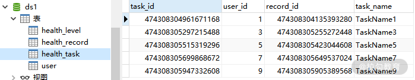
ds1 中的 health_task 表
我们也可以通过控制台日志来跟踪具体的 SQL 执行过程：
2020-06-01 20:11:52.043 INFO 10720 --- [ main] ShardingSphere-SQL : Rule Type: sharding
2020-06-01 20:11:52.043 INFO 10720 --- [ main] ShardingSphere-SQL : Logic SQL: INSERT INTO health_record (user_id, level_id, remark) VALUES (?, ?, ?)
…
2020-06-01 20:11:52.043 INFO 10720 --- [ main] ShardingSphere-SQL : Actual SQL: ds1 ::: INSERT INTO health_record (user_id, level_id, remark, record_id) VALUES (?, ?, ?, ?) ::: [1, 1, Remark1, 474308304135393280]
…
现在，让我们模拟事务失败的场景，可以在代码执行过程中故意抛出一个异常来做到这一点：
try {
for (Long i = 1L; i <= 10; i++) {
HealthRecord healthRecord = createHealthRecord(i);
insertHealthRecord(healthRecord, connection);
HealthTask healthTask = createHealthTask(i, healthRecord);
insertHealthTask(healthTask, connection);
result.add(healthRecord.getRecordId());
//手工抛出异常
throw new SQLException("数据库执行异常!");
}
connection.commit();
} catch (final SQLException ex) {
connection.rollback();
throw ex;
}
再次执行 processWithXA 方法，基于 connection 提供的 rollback 方法，我们发现已经执行的部分 SQL 并没有提交到任何一个数据库中。
使用 BASE 事务
相较于 XA 事务，在业务代码中集成 BASE 事务的过程就显得相对复杂一点，因为我们需要借助外部框架来做到这一点。这里，我们将基于阿里巴巴提供的 Seata 框架来演示如何使用 BASE 事务。
开发环境准备
同样，要想使用基于 Seata 的 BASE 事务，我们首先需要在 pom 文件中添加对 sharding-jdbc-core 和 sharding-transaction-base-seata-at 这两个依赖：
<dependency>
<groupId>org.apache.shardingsphere</groupId>
<artifactId>sharding-jdbc-core</artifactId>
</dependency>
<dependency>
<groupId>org.apache.shardingsphere</groupId>
<artifactId>sharding-transaction-base-seata-at</artifactId>
</dependency>
因为用到了 Seata 框架，所以也需要引入 Seate 框架的相关组件：
<dependency>
<groupId>io.seata</groupId>
<artifactId>seata-rm-datasource</artifactId>
</dependency>
<dependency>
<groupId>io.seata</groupId>
<artifactId>seata-tm</artifactId>
</dependency>
<dependency>
<groupId>io.seata</groupId>
<artifactId>seata-codec-all</artifactId>
</dependency>
然后，我们下载并启动 Seata 服务器，这个过程需要设置 Seata 服务器 config 目录下的 registry.conf，以便指定注册中心，这里使用 ZooKeeper 来充当注册中心。关于如何启动 Seata 服务器的过程可以参考 Seata 的官方文档。请注意，按照 Seata 的运行要求，我们需要在每一个分片数据库实例中创建一张 undo_log 表。然后，我们还需要在代码工程中 classpath 中增加一个 seata.conf 配置文件：
client {
application.id = health-base
transaction.service.group = health-base-group
}
现在，在 src/main/resources 目录下的文件组织形式应该是这样：

当然，这里我们还是继续沿用前面介绍的分库配置。
实现 BASE 事务
基于 ShardingSphere 提供的分布式事务的抽象，我们从 XA 事务转到 BASE 事务唯一要做的事情就是重新设置 TransactionType，也就是修改一行代码：
@Override
public void processWithBASE() throws SQLException {
TransactionTypeHolder.set(TransactionType.BASE);
insertHealthRecords();
}
重新执行测试用例，我们发现在正常提交和异常回滚的场景下，基于 Seata 的分布式事务同样发挥了效果。
小结
分布式事务是 ShardingSphere 中提供的一大核心功能，也是分布式环境下数据处理所必须要考虑的话题。ShardingSphere 提供了两种处理分布式事务的实现方式，分别是基于强一致性的 XA 事务，以及基于最终一致性的 BASE 事务。今天，我们结合案例对这两种事务的使用方式做了详细的介绍。
这里给你留一道思考题：当使用 ShardingSphere 时，在业务代码中嵌入分布式事务有哪些开发方式？
本课时的内容就到这里。在下一课时中，我们将介绍 ShardingSphere 中提供了与数据访问安全性相关的一个话题，也就是通过数据脱敏完成对敏感数据的安全访问。
10 数据脱敏：如何确保敏感数据的安全访问？
从今天开始，我们又将开始一个全新的主题：介绍 ShardingSphere 中的数据脱敏功能。所谓数据脱敏，是指对某些敏感信息通过脱敏规则进行数据转换，从而实现敏感隐私数据的可靠保护。在日常开发过程中，数据安全一直是一个非常重要和敏感的话题。相较传统的私有化部署方案，互联网应用对数据安全的要求更高，所涉及的范围也更广。根据不同行业和业务场景的属性，不同系统的敏感信息可能有所不同，但诸如身份证号、手机号、卡号、用户姓名、账号密码等个人信息一般都需要进行脱敏处理。
ShardingSphere 如何抽象数据脱敏？
数据脱敏从概念上讲比较容易理解，但在具体实现过程中存在很多方案。在介绍基于数据脱敏的具体开发过程之前，我们有必要先来梳理实现数据脱敏的抽象过程。这里，我将从敏感数据的存储方式、敏感数据的加解密过程以及在业务代码中嵌入加解密的过程这三个维度来抽象数据脱敏。
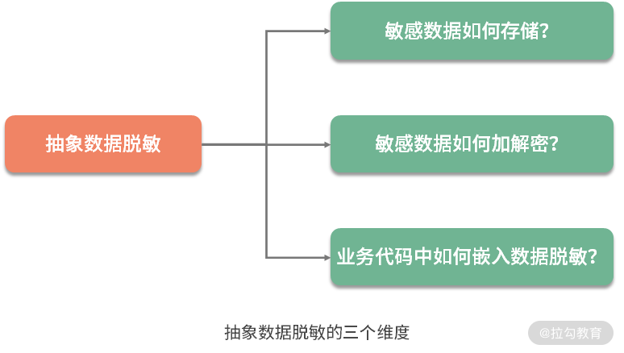
针对每一个维度，我也将基于 ShardingSphere 给出这个框架的具体抽象过程，从而方便你理解使用它的方法和技巧，让我们来一起看一下。
敏感数据如何存储？
关于这个问题，要讨论的点在于是否需要将敏感数据以明文形式存储在数据库中。这个问题的答案并不是绝对的。
我们先来考虑第一种情况。对于一些敏感数据而言，我们显然应该直接以密文的形式将加密之后的数据进行存储，防止有任何一种途径能够从数据库中获取这些数据明文。 在这类敏感数据中，最典型的就是用户密码，我们通常会采用 MD5 等不可逆的加密算法对其进行加密，而使用这些数据的方法也只是依赖于它的密文形式，不会涉及对明文的直接处理。
但对于用户姓名、手机号等信息，由于统计分析等方面的需要，显然我们不能直接采用不可逆的加密算法对其进行加密，还需要将明文信息进行处理**。**一种常见的处理方式是将一个字段用两列来进行保存，一列保存明文，一列保存密文，这就是第二种情况。
显然，我们可以将第一种情况看作是第二种情况的特例。也就是说，在第一种情况中没有明文列，只有密文列。
ShardingSphere 同样基于这两种情况进行了抽象，它将这里的明文列命名为 plainColumn，而将密文列命名为 cipherColumn。其中 plainColumn 属于选填，而 cipherColumn 则是必填。同时，ShardingSphere 还提出了一个逻辑列 logicColumn 的概念，该列代表一种虚拟列，只面向开发人员进行编程使用：

敏感数据如何加解密？
数据脱敏本质上就是一种加解密技术应用场景，自然少不了对各种加解密算法和技术的封装。传统的加解密方式有两种，一种是对称加密，常见的包括 DEA 和 AES；另一种是非对称加密，常见的包括 RSA。
ShardingSphere 内部也抽象了一个 ShardingEncryptor 组件专门封装各种加解密操作：
public interface ShardingEncryptor extends TypeBasedSPI {
//初始化
void init();
//加密
String encrypt(Object plaintext);
//解密
Object decrypt(String ciphertext);
}
目前，ShardingSphere 内置了 AESShardingEncryptor 和 MD5ShardingEncryptor 这两个具体的 ShardingEncryptor 实现。当然，由于 ShardingEncryptor 扩展了 TypeBasedSPI 接口，所以开发人员完全可以基于微内核架构和 JDK 所提供的 SPI 机制来实现和动态加载自定义的各种 ShardingEncryptor。我们会在“微内核架构：ShardingSphere 如何实现系统的扩展性？”这个课时中对 ShardingSphere 中的微内核架构和 SPI 机制进行详细的讨论。
业务代码中如何嵌入数据脱敏？
数据脱敏的最后一个抽象点在于如何在业务代码中嵌入数据脱敏过程，显然这个过程应该尽量做到自动化，并且具备低侵入性，且应该对开发人员足够透明。
我们可以通过一个具体的示例来描述数据脱敏的执行流程。假设系统中存在一张 user 表，其中包含一个 user_name 列。我们认为这个 user_name 列属于敏感数据，需要对其进行数据脱敏。那么按照前面讨论的数据存储方案，可以在 user 表中设置两个字段，一个代表明文的 user_name_plain，一个代表密文的 user_name_cipher。然后应用程序通过 user_name 这个逻辑列与数据库表进行交互：

针对这个交互过程，我们希望存在一种机制，能够自动将 user_name 逻辑列映射到 user_name_plain 和 user_name_cipher 列。同时，我们希望提供一种配置机制，能够让开发人员根据需要灵活指定脱敏过程中所采用的各种加解密算法。
作为一款优秀的开源框架，ShardingSphere 就提供了这样一种机制。那么它是如何做到这一点呢？
首先，ShardingSphere 通过对从应用程序传入的 SQL 进行解析，并依据开发人员提供的脱敏配置对 SQL 进行改写，从而实现对明文数据的自动加密，并将加密后的密文数据存储到数据库中。当我们查询数据时，它又从数据库中取出密文数据，并自动对其解密，最终将解密后的明文数据返回给用户。ShardingSphere 提供了自动化+透明化的数据脱敏过程，业务开发人员可以像使用普通数据那样使用脱敏数据，而不需要关注数据脱敏的实现细节。
系统改造：如何实现数据脱敏？
接下来，就让我们继续对系统进行改造，并添加数据脱敏功能吧。这个过程主要有三个步骤：准备数据脱敏、配置数据脱敏和执行数据脱敏。
准备数据脱敏
为了演示数据脱敏功能，我们重新定义一个 EncryptUser 实体类，该类中定义了与数据脱敏相关的常见用户名、密码等字段，这些字段与数据库中 encrypt_user 表的列是一一对应的：
public class EncryptUser {
//用户Id
private Long userId;
//用户名（密文）
private String userName;
//用户名（明文）
private String userNamePlain;
//密码（密文）
private String pwd;
…
}
接下来，我们有必要提一下 EncryptUserMapper 中关于 resultMap 和 insert 语句的定义，如下所示：
<mapper namespace="com.tianyilan.shardingsphere.demo.repository.EncryptUserRepository">
<resultMap id="encryptUserMap" type="com.tianyilan.shardingsphere.demo.entity.EncryptUser">
<result column="user_id" property="userId" jdbcType="INTEGER"/>
<result column="user_name" property="userName" jdbcType="VARCHAR"/>
<result column="pwd" property="pwd" jdbcType="VARCHAR"/>
</resultMap>
<insert id="addEntity">
INSERT INTO encrypt_user (user_id, user_name, pwd) VALUES (#{userId,jdbcType=INTEGER}, #{userName,jdbcType=VARCHAR}, #{pwd,jdbcType=VARCHAR})
</insert>
…
</mapper>
请注意，我们在 resultMap 中并没有指定 user_name_plain 字段，同时，insert 语句中同样没有指定这个字段。
有了 Mapper，我们就可以构建 Service 层组件。在这个 EncryptUserServiceImpl 类中，我们分别提供了 processEncryptUsers 和 getEncryptUsers 方法来插入用户以及获取用户列表。
@Service
public class EncryptUserServiceImpl implements EncryptUserService {
@Autowired
private EncryptUserRepository encryptUserRepository;
@Override
public void processEncryptUsers() throws SQLException {
insertEncryptUsers();
}
private List<Long> insertEncryptUsers() throws SQLException {
List<Long> result = new ArrayList<>(10);
for (Long i = 1L; i <= 10; i++) {
EncryptUser encryptUser = new EncryptUser();
encryptUser.setUserId(i);
encryptUser.setUserName("username_" + i);
encryptUser.setPwd("pwd" + i);
encryptUserRepository.addEntity(encryptUser);
result.add(encryptUser.getUserId());
}
return result;
}
@Override
public List<EncryptUser> getEncryptUsers() throws SQLException {
return encryptUserRepository.findEntities();
}
}
现在，业务层代码已经准备就绪。由于数据脱敏功能内嵌在 sharding-jdbc-spring-boot-starter 中，所以我们不需要引入额外的依赖包。
配置数据脱敏
在整体架构上，和分库分表以及读写分离一样，数据脱敏对外暴露的入口也是一个符合 JDBC 规范的 EncryptDataSource 对象。如下面的代码所示，ShardingSphere 提供了 EncryptDataSourceFactory 工厂类，完成了 EncryptDataSource 对象的构建：
public final class EncryptDataSourceFactory {
public static DataSource createDataSource(final DataSource dataSource, final EncryptRuleConfiguration encryptRuleConfiguration, final Properties props) throws SQLException {
return new EncryptDataSource(dataSource, new EncryptRule(encryptRuleConfiguration), props);
}
}
可以看到，这里存在一个 EncryptRuleConfiguration 类，该类中包含了两个 Map，分别用来配置加解密器列表以及加密表配置列表：
//加解密器配置列表
private final Map<String, EncryptorRuleConfiguration> encryptors;
//加密表配置列表
private final Map<String, EncryptTableRuleConfiguration> tables;
其中 EncryptorRuleConfiguration 集成了 ShardingSphere 中的一个通用抽象类 TypeBasedSPIConfiguration，包含了 type 和 properties 这两个字段：
//类型（例如MD5/AES加密器）
private final String type;
//属性（例如AES加密器用到的Key值）
private final Properties properties;
而 EncryptTableRuleConfiguration 内部是一个包含多个 EncryptColumnRuleConfiguration 的 Map，这个 EncryptColumnRuleConfiguration 就是 ShardingSphere 中对加密列的配置，包含了 plainColumn、cipherColumn 的定义：
public final class EncryptColumnRuleConfiguration {
//存储明文的字段
private final String plainColumn;
//存储密文的字段
private final String cipherColumn;
//辅助查询字段
private final String assistedQueryColumn;
//加密器名字
private final String encryptor;
}
作为总结，我们通过一张图罗列出各个配置类之间的关系，以及数据脱敏所需要配置的各项内容：
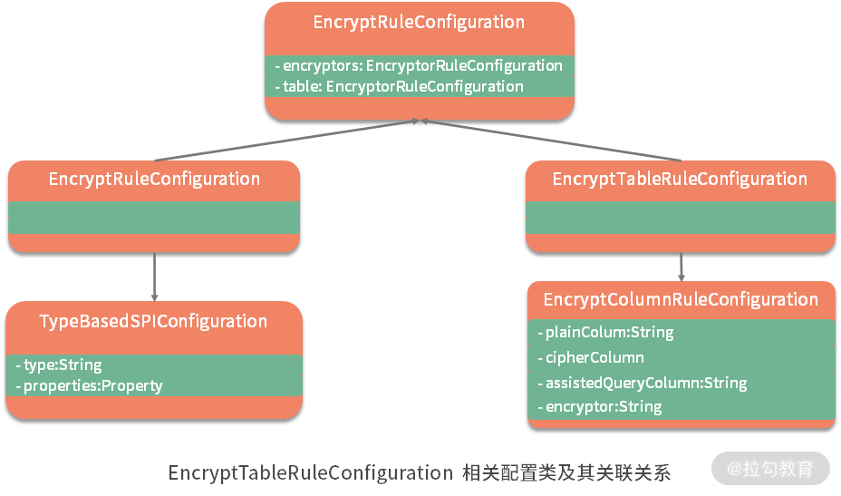
现在回到代码，为了实现数据脱敏，我们首先需要定义一个数据源，这里命名为 dsencrypt：
spring.shardingsphere.datasource.names=dsencrypt
spring.shardingsphere.datasource.dsencrypt.type=com.zaxxer.hikari.HikariDataSource
spring.shardingsphere.datasource.dsencrypt.driver-class-name=com.mysql.jdbc.Driver
spring.shardingsphere.datasource.dsencrypt.jdbc-url=jdbc:mysql://localhost:3306/dsencrypt
spring.shardingsphere.datasource.dsencrypt.username=root
spring.shardingsphere.datasource.dsencrypt.password=root
配置成功之后，我们再配置加密器，这里定义 name_encryptor 和 pwd_encryptor 这两个加密器，分别用于对 user_name 列和 pwd 列进行加解密。注意，在下面这段代码中，对于 name_encryptor，我们使用了对称加密算法 AES；而对于 pwd_encryptor，我们则直接使用不可逆的 MD5 散列算法：
spring.shardingsphere.encrypt.encryptors.name_encryptor.type=aes
spring.shardingsphere.encrypt.encryptors.name_encryptor.props.aes.key.value=123456
spring.shardingsphere.encrypt.encryptors.pwd_encryptor.type=md5
接下来，我们需要完成脱敏表的配置。针对案例中的场景，我们可以选择对 user_name 列设置 plainColumn、cipherColumn 以及 encryptor 属性，而对于 pwd 列而言，由于我们不希望在数据库中存储明文，所以只需要配置 cipherColumn 和 encryptor 属性就可以了。
spring.shardingsphere.encrypt.tables.encrypt_user.columns.user_name.plainColumn=user_name_plain
spring.shardingsphere.encrypt.tables.encrypt_user.columns.user_name.cipherColumn=user_name
spring.shardingsphere.encrypt.tables.encrypt_user.columns.user_name.encryptor=name_encryptor
spring.shardingsphere.encrypt.tables.encrypt_user.columns.pwd.cipherColumn=pwd
spring.shardingsphere.encrypt.tables.encrypt_user.columns.pwd.encryptor=pwd_encryptor
最后，ShardingSphere 还提供了一个属性开关，当底层数据库表里同时存储了明文和密文数据后，该属性开关可以决定是直接查询数据库表里的明文数据进行返回，还是查询密文数据并进行解密之后再返回：
spring.shardingsphere.props.query.with.cipher.comlum=true
执行数据脱敏
现在，配置工作一切就绪，我们来执行测试用例。首先执行数据插入操作，下图数据表中对应字段存储的就是加密后的密文数据：
 加密后的表数据结果
加密后的表数据结果
在这个过程中，ShardingSphere 会把原始的 SQL 语句转换为用于数据脱敏的目标语句：
SQL 自动转换示意图
然后，我们再来执行查询语句并获取控制台日志：
2020-05-30 15:10:59.174 INFO 31808 --- [ main] ShardingSphere-SQL : Rule Type: encrypt
2020-05-30 15:10:59.174 INFO 31808 --- [ main] ShardingSphere-SQL : SQL: SELECT * FROM encrypt_user;
user_id: 1, user_name: username_1, pwd: 99024280cab824efca53a5d1341b9210
user_id: 2, user_name: username_2, pwd: 36ddda5af915d91549d3ab5bff1bafec
…
可以看到这里的路由类型为“encrypt”，获取的 user_name 是经过解密之后的明文而不是数据库中存储的密文，这就是 spring.shardingsphere.props.query.with.cipher.comlum=true 配置项所起到的作用。如果将这个配置项设置为 false，那么返回的就是密文。
总结
数据脱敏是数据库管理和数据访问控制的一个重要话题，今天我们讲解了 ShardingSphere 在数据脱敏方面提供的技术方案，但实际上，数据脱敏的实现思路有很多，ShardingSphere 采用了一种自动化、透明化的方案完成敏感数据存储、加解密以及和应用程序之间的无缝整合。同时，今天的课程也围绕系统案例对其进行了数据库脱敏改造，我们给出了具体的配置项和执行过程。
这里给你留一道思考题：当使用 ShardingSphere 的数据脱敏模块时，我们有哪几种方式可以设置一个需要加密的数据项？
本课时的内容就到这里，在下一课时中，我们将介绍 ShardingSphere 中与编排治理相关的辅助功能，将重点围绕配置中心展开分析。
11 编排治理：如何实现分布式环境下的动态配置管理？
随着分布式系统和微服务架构的持续发展，对系统中存在的各种服务和资源进行统一治理已经成为系统架构设计过程中的一个基础要点。ShardingSphere 作为一款分布式数据库中间件，同样集成了编制治理方面的功能。
今天的内容围绕如何使用 ShardingSphere 所提供的编排治理功能进行展开，课时思路与上一课时的风格一致，即先讨论 ShardingSphere 对编排治理的抽象过程，然后给出在开发过程中，基于配置中心介绍集成编排治理功能的系统改造方案。
ShardingSphere 如何抽象编排治理？
ShardingSphere 的编排治理功能非常丰富，与日常开发紧密相关的是它的配置中心和注册中心功能。ShardingSphere 对这两个功能提供了自己的抽象和实现方案。
ShardingSphere 中的配置中心
关于配置信息的管理，常见的做法是把它们存放在配置文件中，我们可以基于 YAML 格式或 XML 格式的配置文件完成配置信息的维护，这在 ShardingSphere 中也都得到了支持。在单块系统中，配置文件能够满足需求，围绕配置文件展开的配置管理工作通常不会有太大挑战。但在分布式系统中，越来越多的运行时实例使得散落的配置难于管理，并且，配置不同步导致的问题十分严重。将配置集中于配置中心，可以更加有效地进行管理。
采用配置中心也就意味着采用集中式配置管理的设计思想。在集中式配置中心内，开发、测试和生产等不同的环境配置信息统一保存在配置中心内，这是一个维度。另一个维度就是需要确保分布式集群中同一类服务的所有服务实例保存同一份配置文件并且能够同步更新。配置中心的示意图如下所示：
 集中式配置管理的设计思想
集中式配置管理的设计思想
在 ShardingSphere 中，提供了多种配置中心的实现方案，包括主流的 ZooKeeeper、Etcd、Apollo 和 Nacos。开发人员也可以根据需要实现自己的配置中心并通过 SPI 机制加载到 ShardingSphere 运行时环境中。
另一方面，配置信息不是一成不变的。对修改后的配置信息的统一分发，是配置中心可以提供的另一个重要能力。配置中心中配置信息的任何变化都可以实时同步到各个服务实例中。在 ShardingSphere 中，通过配置中心可以支持数据源、数据表、分片以及读写分离策略的动态切换。
同时，在集中式配置信息管理方案的基础上，ShardingSphere 也支持从本地加载配置信息的实现方案。如果我们希望以本地的配置信息为准，并将本地配置覆盖配置中心的配置，通过一个开关就可以做到这一点。
ShardingSphere 中的注册中心
在实现方式上，注册中心与配置中心非常类似，ShardingSphere 也提供了基于 ZooKeeeper 和 Etcd 这两款第三方工具的注册中心实现方案，而 ZooKeeeper 和 Etcd 同样也可以被用作配置中心。
注册中心与配置中心的不同之处在于两者保存的数据类型。配置中心管理的显然是配置数据，但注册中心存放的是 ShardingSphere 运行时的各种动态/临时状态数据，最典型的运行时状态数据就是当前的 Datasource 实例。那么，保存这些动态和临时状态数据有什么用呢？我们来看一下这张图：
 注册中心的数据存储和监听机制示意图
注册中心的数据存储和监听机制示意图
注册中心一般都提供了分布式协调机制。在注册中心中，所有 DataSource 在指定路径根目录下创建临时节点，所有访问这些 DataSource 的业务服务都会监听该目录。当有新 DataSource 加入时，注册中心实时通知到所有业务服务，由业务服务做相应路由信息维护；而当某个 DataSource 宕机时，业务服务通过监听机制同样会收到通知。
基于这种机制，我们就可以提供针对 DataSource 的治理能力，包括熔断对某一个 DataSource 的数据访问，或禁用对从库 DataSource 的访问等。
在 ShardingSphere 中，注册中心更多地面向框架内部使用，普通场景下不需要过多了解注册中心的使用方法。目前，ShardingSphere 针对注册中心所打造的面向开发人员的功能也还比较有限。因此，今天我们重点关注配置中心的使用方式，关于注册中心的讨论，我们放在源码解析部分进行展开。接下来，我将带领你完成集成配置中心的系统改造工作。
系统改造：如何集成配置中心？
由于配置中心的创建需要依赖第三方工具，所以我们需要先完成开发环境的准备工作。
准备开发环境
为了集成配置中心，第一步需要引入 ShardingSphere 中与编排治理相关的依赖包。在 Spring Boot 环境中，这个依赖包是 sharding-jdbc-orchestration-spring-boot-starter：
<dependency>
<groupId>org.apache.shardingsphere</groupId>
<artifactId>sharding-jdbc-orchestration-spring-boot-starter</artifactId>
</dependency>
在接下来的内容中，我们将演示如何基于 ZooKeeeper 这款分布式协调工具来实现配置中心。而在 ShardingSphere 中，集成的 ZooKeeeper 客户端组件是 Curator，所以也需要引入 sharding-orchestration-reg-zookeeper-curator 组件：
<dependency>
<groupId>org.apache.shardingsphere</groupId>
<artifactId>sharding-orchestration-reg-zookeeper-curator</artifactId>
</dependency>
当然，如果我们使用的是 Nacos，那么也需要添加相关的依赖包：
<dependency>
<groupId>org.apache.shardingsphere</groupId>
<artifactId>sharding-orchestration-reg-nacos</artifactId>
</dependency>
<dependency>
<groupId>com.alibaba.nacos</groupId>
<artifactId>nacos-client</artifactId>
</dependency>
配置好这些之后，开发环境已经就绪，对于配置中心而言，开发人员主要的工作还是配置，我们一起来看一下有哪些针对配置中心的配置项。
掌握配置项
针对配置中心，ShardingSphere 提供了一系列的 DataSource，包括用于数据分片的 OrchestrationShardingDataSource、用于读写分离的 OrchestrationMasterSlaveDataSource 以及用于数据脱敏的 OrchestrationEncryptDataSource。围绕这些 DataSource，也存在对应的 DataSourceFactory 工厂类。这里以 OrchestrationMasterSlaveDataSourceFactory 为例来看创建 DataSource 所需要的配置类：
public final class OrchestrationMasterSlaveDataSourceFactory {
public static DataSource createDataSource(final Map<String, DataSource> dataSourceMap, final MasterSlaveRuleConfiguration masterSlaveRuleConfig,
final Properties props, final OrchestrationConfiguration orchestrationConfig) throws SQLException {
if (null == masterSlaveRuleConfig || null == masterSlaveRuleConfig.getMasterDataSourceName()) {
return createDataSource(orchestrationConfig);
}
MasterSlaveDataSource masterSlaveDataSource = new MasterSlaveDataSource(dataSourceMap, new MasterSlaveRule(masterSlaveRuleConfig), props);
return new OrchestrationMasterSlaveDataSource(masterSlaveDataSource, orchestrationConfig);
}
…
}
可以看到，这里存在一个治理规则配置类 OrchestrationConfiguration，而在其他的 DataSourceFactory 中所使用的也是这个配置类：
public final class OrchestrationConfiguration {
//治理规则名称
private final String name;
//注册（配置）中心配置类
private final RegistryCenterConfiguration regCenterConfig;
//本地配置是否覆写服务器配置标志位
private final boolean overwrite;
}
在 OrchestrationConfiguration 中我们看到了用于指定本地配置是否覆写服务器配置的 overwrite 标志位，也看到了一个注册中心的配置子类 RegistryCenterConfiguration。RegistryCenterConfiguration 包的含内容比较多，我们截取最常见最通用的部分配置项：
public final class RegistryCenterConfiguration extends TypeBasedSPIConfiguration {
//配置中心服务器列表
private String serverLists;
//命名空间
private String namespace;
…
}
这里包含了配置中心服务器列表 serverLists 以及用于标识唯一性的命名空间 namespace。因为 RegistryCenterConfiguration 继承了 TypeBasedSPIConfiguration，所以也就自动带有 type 和 properties 这两个配置项。
实现配置中心
现在，我们来实现基于 ZooKeeper 的配置中心。首先需要下载 ZooKeeper 服务器组件，并确保启动成功。如果采用默认配置，那么 ZooKeeper 会在 2181 端口启动请求监听。
然后创建一个配置文件并输入配置项，由于还是以读写分离为例进行演示，因此，在配置文件中，我们设置了一主两从一共三个数据源，这部分配置项在介绍读写分离机制时已经介绍过，这里不再展开：
spring.shardingsphere.datasource.names=dsmaster,dsslave0,dsslave1
spring.shardingsphere.datasource.dsmaster.type=com.zaxxer.hikari.HikariDataSource
spring.shardingsphere.datasource.dsmaster.driver-class-name=com.mysql.jdbc.Driver
spring.shardingsphere.datasource.dsmaster.jdbc-url=jdbc:mysql://localhost:3306/dsmaster
spring.shardingsphere.datasource.dsmaster.username=root
spring.shardingsphere.datasource.dsmaster.password=root
spring.shardingsphere.datasource.dsslave0.type=com.zaxxer.hikari.HikariDataSource
spring.shardingsphere.datasource.dsslave0.driver-class-name=com.mysql.jdbc.Driver
spring.shardingsphere.datasource.dsslave0.jdbc-url=jdbc:mysql://localhost:3306/dsslave0
spring.shardingsphere.datasource.dsslave0.username=root
spring.shardingsphere.datasource.dsslave0.password=root
spring.shardingsphere.datasource.dsslave1.type=com.zaxxer.hikari.HikariDataSource
spring.shardingsphere.datasource.dsslave1.driver-class-name=com.mysql.jdbc.Driver
spring.shardingsphere.datasource.dsslave1.jdbc-url=jdbc:mysql://localhost:3306/dsslave1
spring.shardingsphere.datasource.dsslave1.username=root
spring.shardingsphere.datasource.dsslave1.password=root
spring.shardingsphere.masterslave.load-balance-algorithm-type=random
spring.shardingsphere.masterslave.name=health_ms
spring.shardingsphere.masterslave.master-data-source-name=dsmaster
spring.shardingsphere.masterslave.slave-data-source-names=dsslave0,dsslave1
spring.shardingsphere.props.sql.show=true
接下来指定配置中心，我们将 overwrite 设置为 true，这意味着前面的这些本地配置项会覆盖保存在 ZooKeeper 服务器上的配置项，也就是说我们采用的是本地配置模式。然后我们设置配置中心类型为 zookeeper，服务器列表为 localhost:2181，并将命名空间设置为 orchestration-health_ms。
spring.shardingsphere.orchestration.name=health_ms
spring.shardingsphere.orchestration.overwrite=true
spring.shardingsphere.orchestration.registry.type=zookeeper
spring.shardingsphere.orchestration.registry.server-lists=localhost:2181
spring.shardingsphere.orchestration.registry.namespace=orchestration-health_ms
现在，让我们启动服务，控制台会出现与 ZooKeeper 进行通信的相关日志信息：
2020-05-30 18:13:45.954 INFO 20272 --- [ main] org.apache.zookeeper.ZooKeeper : Initiating client connection, connectString=localhost:2181 sessionTimeout=60000 watcher=org.apache.curator.ConnectionState@585ac855
2020-05-30 18:13:46.011 INFO 20272 --- [0:0:0:0:1:2181)] org.apache.zookeeper.ClientCnxn : Opening socket connection to server 0:0:0:0:0:0:0:1/0:0:0:0:0:0:0:1:2181. Will not attempt to authenticate using SASL (unknown error)
2020-05-30 18:13:46.012 INFO 20272 --- [0:0:0:0:1:2181)] org.apache.zookeeper.ClientCnxn : Socket connection established to 0:0:0:0:0:0:0:1/0:0:0:0:0:0:0:1:2181, initiating session
2020-05-30 18:13:46.029 INFO 20272 --- [0:0:0:0:1:2181)] org.apache.zookeeper.ClientCnxn : Session establishment complete on server 0:0:0:0:0:0:0:1/0:0:0:0:0:0:0:1:2181, sessionid = 0x10022dd7e680001, negotiated timeout = 40000
2020-05-30 18:13:46.034 INFO 20272 --- [ain-EventThread] o.a.c.f.state.ConnectionStateManager : State change: CONNECTED
同时，ZooKeeper 服务器端也对来自应用程序的请求作出响应。我们可以使用一些 ZooKeeper 可视化客户端工具来观察目前服务器上的数据。这里，我使用了 ZooInspector 这款工具，由于 ZooKeeper 本质上就是树状结构，~~现在~~所以在根节点中就新增了配置信息：
 ZooKeeper 中的配置节点图
ZooKeeper 中的配置节点图
我们关注“config”段内容，其中“rule”节点包含了读写分离的规则设置：
 ZooKeeper 中的“rule”配置项
ZooKeeper 中的“rule”配置项
而“datasource”节点包含的显然是前面所指定的各个数据源信息。
由于我们在本地配置文件中将 spring.shardingsphere.orchestration.overwrite 配置项设置为 true，本地配置的变化就会影响到服务器端配置，进而影响到所有使用这些配置的应用程序。如果不希望产生这种影响，而是统一使用位于配置中心上的配置，应该怎么做呢？
很简单，我们只需要将 spring.shardingsphere.orchestration.overwrite 设置为 false 即可。将这个配置开关进行关闭，意味着我们将只从配置中心读取配置，也就是说，本地不需要保存任何配置信息，只包含指定配置中心的相关内容了：
spring.shardingsphere.orchestration.name=health_ms
spring.shardingsphere.orchestration.overwrite=false
spring.shardingsphere.orchestration.registry.type=zookeeper
spring.shardingsphere.orchestration.registry.server-lists=localhost:2181
spring.shardingsphere.orchestration.registry.namespace=orchestration-health_ms
执行测试用例后，会发现读写分离规则同样生效。
如果你选择使用其他的框架来构建配置中心服务器，比如阿里巴巴的 Nacos，那么也很简单，只需要将 spring.shardingsphere.orchestration.registry.type 设置成 nacos 并提供对应的 server-lists 就可以了：
spring.shardingsphere.orchestration.name=health_ms
spring.shardingsphere.orchestration.overwrite=true
spring.shardingsphere.orchestration.registry.type=nacos
spring.shardingsphere.orchestration.registry.server-lists=localhost:8848
spring.shardingsphere.orchestration.registry.namespace=
总结
本课时我们讨论了在 ShardingSphere 中与编排治理相关的功能支持。ShardingSphere 提供了配置中心和注册中心两种治理机制，这两种机制采用了类似的底层设计，但面向不同的应用场景。我们结合案例，基于配置中心给出了具体的开发过程。对于配置中心而言，重点是需要理解如何基于 Zookeeper 这个分布式协调工具来完成本地和远程配置信息之前的动态更新和同步。
这里给你留一道思考题：ShardingSphere 中配置中心和注册中心在设计上有哪些相同点和不同点？
本课时是专栏中关于 ShardingSphere 核心功能的最后一个主题，从下一个课时开始，我们将进入 ShardingSphere 源码解析的相关内容，我将为你梳理如何高效地阅读 ShardingSphere 源码，记得按时来听课。
12 从应用到原理：如何高效阅读 ShardingSphere 源码？
从本课时开始，专栏将进入：“ShardingSphere 源码解析之基础设施”的模块。在介绍完 ShardingSphere 所具备的分库分表、读写分离、分布式事务、数据脱敏等各项核心功能之后，我将带领你全面剖析这些核心功能背后的实现原理和机制。我们将通过深入解析 ShardingSphere 源码这一途径来实现这一目标。
如何系统剖析 ShardingSphere 的代码结构？
在阅读开源框架时，我们碰到的一大问题在于，常常会不由自主地陷入代码的细节而无法把握框架代码的整体结构。市面上主流的、被大家所熟知而广泛应用的代码框架肯定考虑得非常周全，其代码结构不可避免存在一定的复杂性。对 ShardingSphere 而言，情况也是一样，我们发现 ShardingSphere 源码的一级代码结构目录就有 15 个，而这些目录内部包含的具体 Maven 工程则多达 50 余个：
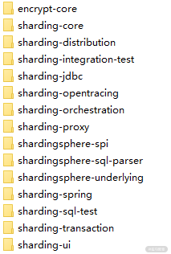 ShardingSphere 源码一级代码结构目录
如何快速把握 ShardingSphere 的代码结构呢？这是我们剖析源码时需要回答的第一个问题，为此我们需要梳理剖析 ShardingSphere 框架代码结构的系统方法。
本课时我们将对如何系统剖析 ShardingSphere 代码结构这一话题进行抽象，梳理出应对这一问题的六大系统方法（如下图）：

接下来，我们将结合 ShardingSphere 框架对这些方法进行展开。
基于可扩展性设计阅读源码
ShardingSphere 在设计上采用了微内核架构模式来确保系统具有高度的可扩展性，并使用了 JDK 提供的 SPI 机制来具体实现微内核架构。在 ShardingSphere 源代码的根目录下，存在一个独立工程 shardingsphere-spi。显然，从命名上看，这个工程中应该包含了 ShardingSphere 实现 SPI 的相关代码。该工程中存在一个 TypeBasedSPI 接口，它的类层结构比较丰富，课程后面将要讲到的很多核心接口都继承了该接口，包括实现配置中心的 ConfigCenter、注册中心的 RegistryCenter 等，如下所示：
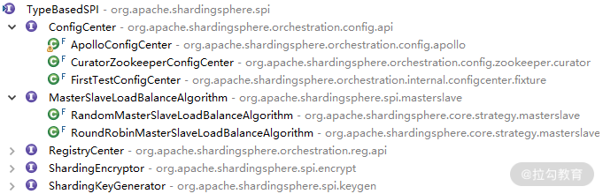 ShardingSphere 中 TypeBasedSPI 接口的类层结构
这些接口的实现都遵循了 JDK 提供的 SPI 机制。在我们阅读 ShardingSphere 的各个代码工程时，一旦发现在代码工程中的 META-INF/services 目录里创建了一个以服务接口命名的文件，就说明这个代码工程中包含了用于实现扩展性的 SPI 定义。
在 ShardingSphere 中，大量使用了微内核架构和 SPI 机制实现系统的扩展性。只要掌握了微内核架构的基本原理以及 SPI 的实现方式就会发现，原来在 ShardingSphere 中，很多代码结构上的组织方式就是为了满足这些扩展性的需求。ShardingSphere 中实现微内核架构的方式就是直接对 JDK 的 ServiceLoader 类进行一层简单的封装，并添加属性设置等自定义的功能，其本身并没有太多复杂的内容。
当然，可扩展性的表现形式不仅仅只有微内核架构一种。在 ShardingSphere 中也大量使用了回调（Callback）机制以及多种支持扩展性的设计模式。掌握这些机制和模式也有助于更好地阅读 ShardingSphere 源码。
基于分包设计原则阅读源码
分包（Package）设计原则可以用来设计和规划开源框架的代码结构。对于一个包结构而言，最核心的设计要点就是高内聚和低耦合。我们刚开始阅读某个框架的源码时，为了避免过多地扎进细节而只关注某一个具体组件，同样可以使用这些原则来管理我们的学习预期。
以 ShardingSphere 为例，我们在分析它的路由引擎时发现了两个代码工程，一个是 sharding-core-route，一个是 sharding-core-entry。从代码结构上讲，尽管这两个代码工程都不是直接面向业务开发人员，但 sharding-core-route 属于路由引擎的底层组件，包含了路由引擎的核心类 ShardingRouter。
而 sharding-core-entry 则位于更高的层次，提供了 PreparedQueryShardingEngine 和 SimpleQueryShardingEngine 类，分包结构如下所示：
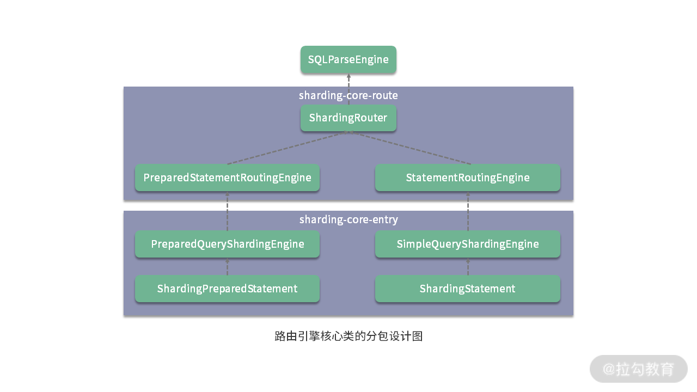
图中我们可以看到两个清晰的代码结构层次关系，这是 ShardingSphere 中普遍采用的分包原则中，具有代表性的一种，即根据类的所属层级来组织包结构。
基于基础开发规范阅读源码
对于 ShardingSphere 而言，在梳理它的代码结构时有一个非常好的切入点，那就是基于 JDBC 规范。我们知道 ShardingSphere 在设计上一开始就完全兼容 JDBC 规范，它对外暴露的一套分片操作接口与 JDBC 规范中所提供的接口完全一致。只要掌握了 JDBC 中关于 DataSource、Connection、Statement 等核心接口的使用方式，就可以非常容易地把握 ShardingSphere 中暴露给开发人员的代码入口，进而把握整个框架的代码结构。
我们来看这方面的示例，如果你是刚接触到 ShardingSphere 源码，要想找到 SQL 执行入口是一件有一定难度的事情。在 ShardingSphere 中，存在一个 ShardingDataSourceFactory 工厂类，专门用来创建 ShardingDataSource。而基于《规范兼容：JDBC 规范与 ShardingSphere 是什么关系？》中的讨论，ShardingDataSource 就是一个 JDBC 规范中的 DataSource 实现类：
public final class ShardingDataSourceFactory {
public static DataSource createDataSource(
final Map<String, DataSource> dataSourceMap, final ShardingRuleConfiguration shardingRuleConfig, final Properties props) throws SQLException {
return new ShardingDataSource(dataSourceMap, new ShardingRule(shardingRuleConfig, dataSourceMap.keySet()), props);
}
}
通过这个工厂类，我们很容易就找到了创建支持分片机制的 DataSource 入口，从而引出其背后的 ShardingConnection、ShardingStatement 等类。
事实上，在 ShardingSphere 中存在一批 DataSourceFactory 工厂类以及对应的 DataSource 类：

在阅读 ShardingSphere 源码时，JDBC 规范所提供的核心接口及其实现类，为我们高效梳理代码入口和组织方式提供了一种途径。
基于核心执行流程阅读源码
事实上，还有一个比较容易理解和把握的方法可以帮我们梳理代码结构，这就是代码的执行流程。任何系统行为都可以认为是流程的组合。通过分析，看似复杂的代码结构一般都能梳理出一条贯穿全局的主流程。只要我们抓住这条主流程，就能把握框架的整体代码结构。
那么，对于 ShardingSphere 框架而言，什么才是它的主流程呢？这个问题其实不难回答。事实上，JDBC 规范为我们实现数据存储和访问提供了基本的开发流程。我们可以从 DataSource 入手，逐步引入 Connection、Statement 等对象，并完成 SQL 执行的主流程。这是从框架提供的核心功能角度梳理的一种主流程。
对于框架内部的代码组织结构而言，实际上也存在着核心流程的概念。最典型的就是 ShardingSphere 的分片引擎结构，整个分片引擎执行流程可以非常清晰的分成五个组成部分，分别是解析引擎、路由引擎、改写引擎、执行引擎和归并引擎：

ShardingSphere 对每个引擎都进行了明确地命名，在代码工程的组织结构上也做了对应的约定，例如 sharding-core-route 工程用于实现路由引擎；sharding-core-execute 工程用于实现执行引擎；sharding-core-merge 工程用于实现归并引擎等。这是从框架内部实现机制角度梳理的一种主流程。
在软件建模领域，可以通过一些工具和手段对代码执行流程进行可视化，例如 UML 中的活动图和时序图。在后续的课时中，我们会基于这些工具帮你梳理 ShardingSphere 中很多有待挖掘的代码执行流程。
基于框架演进过程阅读源码
ShardingSphere 经历了从 1.X 到 4.X 版本的发展，功能越来越丰富，目前的代码结构已经比较复杂。但我相信 ShardingSphere 的开发人员也不是一开始就把 ShardingSphere 设计成现在这种代码结构。换个角度，如果我们自己来设计这样一个框架，通常会采用一定的策略，从简单到复杂、从核心功能到辅助机制，逐步实现和完善框架，这也是软件开发的一个基本规律。针对这个角度，当我们想要解读 ShardingSphere 的代码结构而又觉得无从下手时，可以考虑一个核心问题：如何从易到难对框架进行逐步拆解？
实际上，在前面几个课时介绍 ShardingSphere 的核心功能时已经回答了这个问题。我们首先介绍的是分库分表功能，然后扩展到读写分离，然后再到数据脱敏。从这些功能的演进我们可以推演其背后的代码结构的演进。这里以数据脱敏功能的实现过程为例来解释这一观点。
在 ShardingSphere 中，数据脱敏功能的实现实际上并不是独立的，而是依赖于 SQL 改写引擎。我们可以快速来到 BaseShardingEngine 类的 rewriteAndConvert 方法中：
private Collection<RouteUnit> rewriteAndConvert(final String sql, final List<Object> parameters, final SQLRouteResult sqlRouteResult) {
//构建SQLRewriteContext
SQLRewriteContext sqlRewriteContext = new SQLRewriteContext(metaData.getRelationMetas(), sqlRouteResult.getSqlStatementContext(), sql, parameters);
//构建ShardingSQLRewriteContextDecorator对SQLRewriteContext进行装饰
new ShardingSQLRewriteContextDecorator(shardingRule, sqlRouteResult).decorate(sqlRewriteContext);
//判断是否根据数据脱敏列进行查询
boolean isQueryWithCipherColumn = shardingProperties.<Boolean>getValue(ShardingPropertiesConstant.QUERY_WITH_CIPHER_COLUMN);
//构建EncryptSQLRewriteContextDecorator对SQLRewriteContext进行装饰
new EncryptSQLRewriteContextDecorator(shardingRule.getEncryptRule(), isQueryWithCipherColumn).decorate(sqlRewriteContext);
//生成SQLTokens
sqlRewriteContext.generateSQLTokens();
…
return result;
}
注意，这里基于装饰器模式实现了两个 SQLRewriteContextDecorator，一个是 ShardingSQLRewriteContextDecorator，另一个是 EncryptSQLRewriteContextDecorator，而后者是在前者的基础上完成装饰工作。也就是说，我们首先可以单独使用 ShardingSQLRewriteContextDecorator 来完成对 SQL 的改写操作。
随着架构的演进，我们也可以在原有 EncryptSQLRewriteContextDecorator 的基础上添加新的面向数据脱敏的功能，这就体现了一种架构演进的过程。通过阅读这两个装饰器类，以及 SQL 改写上下文对象 SQLRewriteContext，我们就能更好地把握代码的设计思想和实现原理：
关于数据脱敏以及装饰器模式的具体实现细节我们会在《数据脱敏：如何基于改写引擎实现低侵入性数据脱敏方案？》中进行详细展开。
基于通用外部组件阅读源码
在《开篇寄语：如何正确学习一款分库分表开源框架？》中，我们提出了一种观点，即技术原理存在相通性。这点同样可以帮助我们更好地阅读 ShardingSphere 源码。
在 ShardingSphere 中集成了一批优秀的开源框架，包括用于实现配置中心和注册中心的Zookeeper、Apollo、Nacos，用于实现链路跟踪的 SkyWalking，用于实现分布式事务的 Atomikos 和 Seata 等。
我们先以分布式事务为例，ShardingSphere 提供了一个 sharding-transaction-core 代码工程，用于完成对分布式事务的抽象。然后又针对基于两阶段提交的场景，提供了 sharding-transaction-2pc 代码工程，以及针对柔性事务提供了 sharding-transaction-base 代码工程。而在 sharding-transaction-2pc 代码工程内部，又包含了如下所示的 5 个子代码工程。
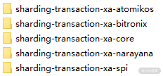 sharding-transaction-2pc 代码工程下的子工程
在翻阅这些代码工程时，会发现每个工程中的类都很少，原因就在于，这些类都只是完成与第三方框架的集成而已。所以，只要我们对这些第三方框架有一定了解，阅读这部分代码就会显得非常简单。
再举一个例子，我们知道 ZooKeeper 可以同时用来实现配置中心和注册中心。作为一款主流的分布式协调框架，基本的工作原理就是采用了它所提供的临时节点以及监听机制。基于 ZooKeeper 的这一原理，我们可以把当前 ShardingSphere 所使用的各个 DataSource 注册到 ZooKeeper 中，并根据 DataSource 的运行时状态来动态对数据库实例进行治理，以及实现访问熔断机制。事实上，ShardingSphere 能做到这一点，依赖的就是 ZooKeeper 所提供的基础功能。只要我们掌握了这些功能，理解这块代码就不会很困难，而 ShardingSphere 本身并没有使用 ZooKeeper 中任何复杂的功能。
如何梳理ShardingSphere中的核心技术体系？
ShardingSphere 中包含了很多技术体系，在本课程中，我们将从基础架构、分片引擎、分布式事务以及治理与集成等 4 个方面对这些技术体系进行阐述。
基础架构
这里定义基础架构的标准是，属于基础架构类的技术可以脱离 ShardingSphere 框架本身独立运行。也就是说，这些技术可以单独抽离出来，供其他框架直接使用。我们认为 ShardingSphere 所实现的微内核架构和分布式主键可以归到基础架构。
分片引擎
分片引擎是 ShardingSphere 最核心的技术体系，包含了解析引擎、路由引擎、改写引擎、执行引擎、归并引擎和读写分离等 6 大主题，我们对每个主题都会详细展开。分片引擎在整个 ShardingSphere 源码解析内容中占有最大篇幅。
对于解析引擎而言，我们重点梳理 SQL 解析流程所包含的各个阶段；对于路由引擎，我们将在介绍路由基本原理的基础上，给出数据访问的分片路由和广播路由，以及如何在路由过程中集成多种分片策略和分片算法的实现过程；改写引擎相对比较简单，我们将围绕如何基于装饰器模式完成 SQL 改写实现机制这一主题展开讨论；而对于执行引擎，首先需要梳理和抽象分片环境下 SQL 执行的整体流程，然后把握 ShardingSphere 中的 Executor 执行模型；在归并引擎中，我们将分析数据归并的类型，并阐述各种归并策略的实现过程；最后，我们将关注普通主从架构和分片主从架构下读写分离的实现机制。
分布式事务
针对分布式事务，我们需要理解 ShardingSphere 中对分布式事务的抽象过程，然后系统分析在 ShardingSphere 中如何基于各种第三方框架集成强一致性事务和柔性事务支持的实现原理。
治理与集成
在治理和集成部分，从源码角度讨论的话题包括数据脱敏、配置中心、注册中心、链路跟踪以及系统集成。
对于数据脱敏，我们会在改写引擎的基础上给出如何实现低侵入性的数据脱敏方案；配置中心用来完成配置信息的动态化管理，而注册中心则实现了数据库访问熔断机制，这两种技术可以采用通用的框架进行实现，只是面向了不同的业务场景，我们会分析通用的实现原理以及面向业务场景的差异性；ShardingSphere 中实现了一系列的 Hook 机制，我们将基于这些 Hook 机制以及 OpenTracing 协议来剖析实现数据访问链路跟踪的工作机制；当然，作为一款主流的开源框架，ShardingSphere 也完成与 Spring 以及 SpringBoot 的无缝集成，对系统集成方式的分析可以更好地帮助我们使用这个框架。
从源码解析到日常开发
通过系统讲解框架源码来帮助你深入理解 ShardingSphere 实现原理是本课程的一大目标，但也不是唯一目标。作为扩展，我们希望通过对 ShardingSphere 这款优秀开源框架的学习，掌握系统架构设计和实现过程中的方法和技巧，并指导日常的开发工作。例如，在下一课时介绍微内核架构时，我们还将重点描述基于 JDK 所提供的 SPI 机制来实现系统的扩展性，而这种实现机制完全可以应用到日常开发过程中。
这是一个从源码分析到日常开发的过程，而且是一个不断演进的过程。所谓理论指导实践，我们需要从纷繁复杂的技术知识体系和各种层出不穷的工具框架中抓住其背后的原理，然后做到用自己的语言和方法对这些原理进行阐述，也就是能够构建属于你自己的技术知识体系。
总结
本课时是 ShardingSphere 源码解析部分的第一个课时，我们讲解了剖析 ShardingSphere 代码结构的六大系统方法，引导你从可扩展性、分包设计原则、基础开发规范、核心执行流程、框架演进过程、通用外部组件等维度来正确阅读 ShardingSphere 源码。同时，我们针对 ShardingSphere 的基础架构本身以及业务功能来梳理了后续课程将要展开的各项核心技术体系。
这里给你留一道思考题：在剖析 ShardingSphere 的各种方法中，你能针对每个方法列举一两个具体的示例吗？
本课时的内容就到这里，从下一课时开始，我们将进入 ShardingSphere 中基础架构类技术体系的讨论，先要讨论的是微内核架构及其实现原理，记得按时来听课。
13 微内核架构：ShardingSphere 如何实现系统的扩展性？
我们已经在课程中多次提到 ShardingSphere 使用了微内核架构来实现框架的扩展性。随着课程的演进，我们会发现，用于实现配置中心的 ConfigCenter、用于数据脱敏的 ShardingEncryptor 以及用于数据库治理的注册中心接口 RegistryCenter 等大量组件的实现也都使用了微内核架构。那么，究竟什么是微内核架构呢？今天我们就来讨论这个架构模式的基本原理以及在 ShardingSphere 中的应用。
什么是微内核架构？
微内核是一种典型的架构模式 ，区别于普通的设计模式，架构模式是一种高层模式，用于描述系统级的结构组成、相互关系及相关约束。微内核架构在开源框架中的应用也比较广泛，除了 ShardingSphere 之外，在主流的 PRC 框架 Dubbo 中也实现了自己的微内核架构。那么，在介绍什么是微内核架构之前，我们有必要先阐述这些开源框架会使用微内核架构的原因。
为什么要使用微内核架构？
微内核架构本质上是为了提高系统的扩展性 。所谓扩展性，是指系统在经历不可避免的变更时所具有的灵活性，以及针对提供这样的灵活性所需要付出的成本间的平衡能力。也就是说，当在往系统中添加新业务时，不需要改变原有的各个组件，只需把新业务封闭在一个新的组件中就能完成整体业务的升级，我们认为这样的系统具有较好的可扩展性。
就架构设计而言，扩展性是软件设计的永恒话题。而要实现系统扩展性，一种思路是提供可插拔式的机制来应对所发生的变化。当系统中现有的某个组件不满足要求时，我们可以实现一个新的组件来替换它，而整个过程对于系统的运行而言应该是无感知的，我们也可以根据需要随时完成这种新旧组件的替换。
比如在下个课时中我们将要介绍的 ShardingSphere 中提供的分布式主键功能，分布式主键的实现可能有很多种，而扩展性在这个点上的体现就是， 我们可以使用任意一种新的分布式主键实现来替换原有的实现，而不需要依赖分布式主键的业务代码做任何的改变 。

微内核架构模式为这种实现扩展性的思路提供了架构设计上的支持，ShardingSphere 基于微内核架构实现了高度的扩展性。在介绍如何实现微内核架构之前，我们先对微内核架构的具体组成结构和基本原理做简要的阐述。
什么是微内核架构？
从组成结构上讲， 微内核架构包含两部分组件：内核系统和插件 。这里的内核系统通常提供系统运行所需的最小功能集，而插件是独立的组件，包含自定义的各种业务代码，用来向内核系统增强或扩展额外的业务能力。在 ShardingSphere 中，前面提到的分布式主键就是插件，而 ShardingSphere 的运行时环境构成了内核系统。

那么这里的插件具体指的是什么呢？这就需要我们明确两个概念，一个概念就是经常在说的 API ，这是系统对外暴露的接口。而另一个概念就是 SPI（Service Provider Interface，服务提供接口），这是插件自身所具备的扩展点。就两者的关系而言，API 面向业务开发人员，而 SPI 面向框架开发人员，两者共同构成了 ShardingSphere 本身。
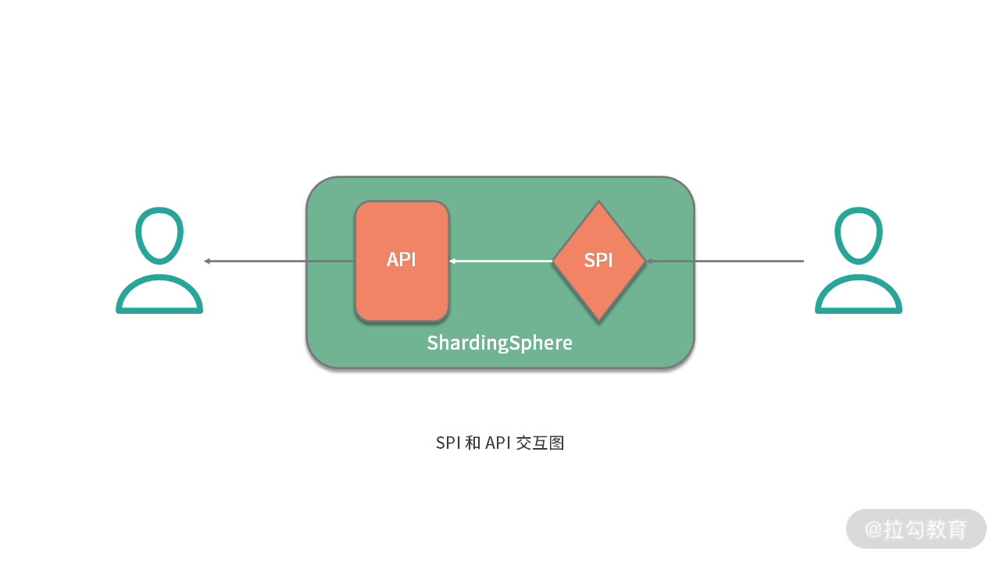
可插拔式的实现机制说起来简单，做起来却不容易，我们需要考虑两方面内容。一方面，我们需要梳理系统的变化并把它们抽象成多个 SPI 扩展点。另一方面， 当我们实现了这些 SPI 扩展点之后，就需要构建一个能够支持这种可插拔机制的具体实现，从而提供一种 SPI 运行时环境 。
那么，ShardingSphere 是如何实现微内核架构的呢？让我们来一起看一下。
如何实现微内核架构？
事实上，JDK 已经为我们提供了一种微内核架构的实现方式，这种实现方式针对如何设计和实现 SPI 提出了一些开发和配置上的规范，ShardingSphere 使用的就是这种规范。首先，我们需要设计一个服务接口，并根据需要提供不同的实现类。接下来，我们将模拟实现分布式主键的应用场景。
基于 SPI 的约定，创建一个单独的工程来存放服务接口，并给出接口定义。请注意 这个服务接口的完整类路径为 com.tianyilan.KeyGenerator ，接口中只包含一个获取目标主键的简单示例方法。
package com.tianyilan;
public interface KeyGenerator{
String getKey();
}
针对该接口，提供两个简单的实现类，分别是基于 UUID 的 UUIDKeyGenerator 和基于雪花算法的 SnowflakeKeyGenerator。为了让演示过程更简单，这里我们直接返回一个模拟的结果，真实的实现过程我们会在下一课时中详细介绍。
public class UUIDKeyGenerator implements KeyGenerator {
@Override
public String getKey() {
return "UUIDKey";
}
}
public class SnowflakeKeyGenerator implements KeyGenerator {
@Override
public String getKey() {
return "SnowflakeKey";
}
}
接下来的这个步骤很关键， 在这个代码工程的 META-INF/services/ 目录下，需要创建一个以服务接口完整类路径 com.tianyilan.KeyGenerator 命名的文件 ，文件的内容是指向该接口所对应的两个实现类的完整类路径 com.tianyilan.UUIDKeyGenerator 和 com.tianyilan. SnowflakeKeyGenerator。
我们把这个代码工程打成一个 jar 包，然后新建另一个代码工程，该代码工程需要这个 jar 包，并完成如下所示的 Main 函数。
import java.util.ServiceLoader;
import com.tianyilan. KeyGenerator;
public class Main {
public static void main(String[] args) {
ServiceLoader<KeyGenerator> generators = ServiceLoader.load(KeyGenerator.class);
for (KeyGenerator generator : generators) {
System.out.println(generator.getClass());
String key = generator.getKey();
System.out.println(key);
}
}
}
现在，该工程的角色是 SPI 服务的使用者，这里使用了 JDK 提供的 ServiceLoader 工具类来获取所有 KeyGenerator 的实现类。现在在 jar 包的 META-INF/services/com.tianyilan.KeyGenerator 文件中有两个 KeyGenerator 实现类的定义。执行这段 Main 函数，我们将得到的输出结果如下：
class com.tianyilan.UUIDKeyGenerator
UUIDKey
class com.tianyilan.SnowflakeKeyGenerator
SnowflakeKey
如果我们调整 META-INF/services/com.tianyilan.KeyGenerator 文件中的内容，去掉 com.tianyilan.UUIDKeyGenerator 的定义，并重新打成 jar 包供 SPI 服务的使用者进行引用。再次执行 Main 函数，则只会得到基于 SnowflakeKeyGenerator 的输出结果。
至此， 完整 的 SPI 提供者和使用者的实现过程演示完毕。我们通过一张图，总结基于 JDK 的 SPI 机制实现微内核架构的开发流程：

这个示例非常简单，但却是 ShardingSphere 中实现微内核架构的基础。接下来，就让我们把话题转到 ShardingSphere，看看 ShardingSphere 中应用 SPI 机制的具体方法。
ShardingSphere 如何基于微内核架构实现扩展性？
ShardingSphere 中微内核架构的实现过程并不复杂，基本就是对 JDK 中 SPI 机制的封装。让我们一起来看一下。
ShardingSphere 中的微内核架构基础实现机制
我们发现，在 ShardingSphere 源码的根目录下，存在一个独立的工程 shardingsphere-spi。显然，从命名上看，这个工程中应该包含了 ShardingSphere 实现 SPI 的相关代码。我们快速浏览该工程，发现里面只有一个接口定义和两个工具类。我们先来看这个接口定义 TypeBasedSPI：
public interface TypeBasedSPI {
//获取SPI对应的类型
String getType();
//获取属性
Properties getProperties();
//设置属性
void setProperties(Properties properties);
}
从定位上看，这个接口在 ShardingSphere 中应该是一个顶层接口，我们已经在上一课时给出了这一接口的实现类类层结构。接下来再看一下 NewInstanceServiceLoader 类，从命名上看，不难想象该类的作用类似于一种 ServiceLoader，用于加载新的目标对象实例：
public final class NewInstanceServiceLoader {
private static final Map<Class, Collection<Class<?>>> SERVICE_MAP = new HashMap<>();
//通过ServiceLoader获取新的SPI服务实例并注册到SERVICE_MAP中
public static <T> void register(final Class<T> service) {
for (T each : ServiceLoader.load(service)) {
registerServiceClass(service, each);
}
}
@SuppressWarnings("unchecked")
private static <T> void registerServiceClass(final Class<T> service, final T instance) {
Collection<Class<?>> serviceClasses = SERVICE_MAP.get(service);
if (null == serviceClasses) {
serviceClasses = new LinkedHashSet<>();
}
serviceClasses.add(instance.getClass());
SERVICE_MAP.put(service, serviceClasses);
}
@SneakyThrows
@SuppressWarnings("unchecked")
public static <T> Collection<T> newServiceInstances(final Class<T> service) {
Collection<T> result = new LinkedList<>();
if (null == SERVICE_MAP.get(service)) {
return result;
}
for (Class<?> each : SERVICE_MAP.get(service)) {
result.add((T) each.newInstance());
}
return result;
}
}
在上面这段代码中， 首先看到了熟悉的 ServiceLoader.load(service) 方法，这是 JDK 中 ServiceLoader 工具类的具体应用。同时，注意到 ShardingSphere 使用了一个 HashMap 来保存类的定义以及类的实例之 间 的一对多关系，可以认为，这是一种用于提高访问效率的缓存机制。
最后，我们来看一下 TypeBasedSPIServiceLoader 的实现，该类依赖于前面介绍的 NewInstanceServiceLoader 类。 下面这段代码演示了 基于 NewInstanceServiceLoader 获取实例类列表，并根据所传入的类型做过滤：
//使用NewInstanceServiceLoader获取实例类列表，并根据类型做过滤
private Collection<T> loadTypeBasedServices(final String type) {
return Collections2.filter(NewInstanceServiceLoader.newServiceInstances(classType), new Predicate<T>() {
@Override
public boolean apply(final T input) {
return type.equalsIgnoreCase(input.getType());
}
});
}
TypeBasedSPIServiceLoader 对外暴露了服务的接口，对通过 loadTypeBasedServices 方法获取的服务实例设置对应的属性然后返回：
//基于类型通过SPI创建实例
public final T newService(final String type, final Properties props) {
Collection<T> typeBasedServices = loadTypeBasedServices(type);
if (typeBasedServices.isEmpty()) {
throw new RuntimeException(String.format("Invalid `%s` SPI type `%s`.", classType.getName(), type));
}
T result = typeBasedServices.iterator().next();
result.setProperties(props);
return result;
}
同时，TypeBasedSPIServiceLoader 也对外暴露了不需要传入类型的 newService 方法，该方法使用了 loadFirstTypeBasedService 工具方法来获取第一个服务实例：
//基于默认类型通过SPI创建实例
public final T newService() {
T result = loadFirstTypeBasedService();
result.setProperties(new Properties());
return result;
}
private T loadFirstTypeBasedService() {
Collection<T> instances = NewInstanceServiceLoader.newServiceInstances(classType);
if (instances.isEmpty()) {
throw new RuntimeException(String.format("Invalid `%s` SPI, no implementation class load from SPI.", classType.getName()));
}
return instances.iterator().next();
}
这样，shardingsphere-spi 代码工程中的内容就介绍完毕。 这部分内容相当于是 ShardingSphere 中所提供的插件运行时环境 。下面我们基于 ShardingSphere 中提供的几个典型应用场景来讨论这个运行时环境的具体使用方法。
微内核架构在 ShardingSphere 中的应用
- SQL 解析器 SQLParser
我们将在 15 课时中介绍 SQLParser 类，该类负责将具体某一条 SQL 解析成一个抽象语法树的整个过程。而这个 SQLParser 的生成由 SQLParserFactory 负责：
public final class SQLParserFactory {
public static SQLParser newInstance(final String databaseTypeName, final String sql) {
//通过SPI机制加载所有扩展
for (SQLParserEntry each : NewInstanceServiceLoader.newServiceInstances(SQLParserEntry.class)) {
…
}
}
可以看到，这里并没有使用前面介绍的 TypeBasedSPIServiceLoader 来加载实例，而是直接使用更为底层的 NewInstanceServiceLoader。
这里引入的 SQLParserEntry 接口就位于 shardingsphere-sql-parser-spi 工程的 org.apache.shardingsphere.sql.parser.spi 包中。显然，从包的命名上看，该接口是一个 SPI 接口。在 SQLParserEntry 类层结构接口中包含一批实现类，分别对应各个具体的数据库：

SQLParserEntry 实现类图
我们先来看针对 MySQL 的代码工程 shardingsphere-sql-parser-mysql，在 META-INF/services 目录下，我们找到了一个 org.apache.shardingsphere.sql.parser.spi.SQLParserEntry 文件:
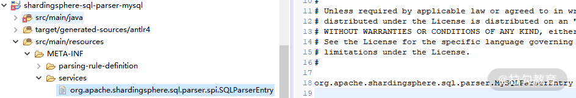
MySQL 代码工程中的 SPI 配置
可以看到这里指向了 org.apache.shardingsphere.sql.parser.MySQLParserEntry 类。再来到 Oracle 的代码工程 shardingsphere-sql-parser-oracle，在 META-INF/services 目录下，同样找到了一个 org.apache.shardingsphere.sql.parser.spi.SQLParserEntry 文件：

Oracle 代码工程中的 SPI 配置
显然，这里应该指向 org.apache.shardingsphere.sql.parser.OracleParserEntry 类，通过这种方式，系统在运行时就会根据类路径动态加载 SPI。
可以注意到，在 SQLParserEntry 接口的类层结构中，实际并没有使用到 TypeBasedSPI 接口 ，而是完全采用了 JDK 原生的 SPI 机制。
- 配置中心 ConfigCenter
接下来，我们来找一个使用 TypeBasedSPI 的示例，比如代表配置中心的 ConfigCenter：
public interface ConfigCenter extends TypeBasedSPI
显然，ConfigCenter 接口继承了 TypeBasedSPI 接口，而在 ShardingSphere 中也存在两个 ConfigCenter 接口的实现类，一个是 ApolloConfigCenter，一个是 CuratorZookeeperConfigCenter。
在 sharding-orchestration-core 工程的 org.apache.shardingsphere.orchestration.internal.configcenter 中，我们找到了 ConfigCenterServiceLoader 类，该类扩展了前面提到的 TypeBasedSPIServiceLoader 类：
public final class ConfigCenterServiceLoader extends TypeBasedSPIServiceLoader<ConfigCenter> {
static {
NewInstanceServiceLoader.register(ConfigCenter.class);
}
public ConfigCenterServiceLoader() {
super(ConfigCenter.class);
}
//基于SPI加载ConfigCenter
public ConfigCenter load(final ConfigCenterConfiguration configCenterConfig) {
Preconditions.checkNotNull(configCenterConfig, "Config center configuration cannot be null.");
ConfigCenter result = newService(configCenterConfig.getType(), configCenterConfig.getProperties());
result.init(configCenterConfig);
return result;
}
}
那么它是如何实现的呢？ 首先，ConfigCenterServiceLoader 类通过 NewInstanceServiceLoader.register(ConfigCenter.class) 语句将所有 ConfigCenter 注册到系统中，这一步会通过 JDK 的 ServiceLoader 工具类加载类路径中的所有 ConfigCenter 实例。
我们可以看到在上面的 load 方法中，通过父类 TypeBasedSPIServiceLoader 的 newService 方法，基于类型创建了 SPI 实例。
以 ApolloConfigCenter 为例，我们来看它的使用方法。在 sharding-orchestration-config-apollo 工程的 META-INF/services 目录下，应该存在一个名为 org.apache.shardingsphere.orchestration.config.api.ConfigCenter 的配置文件，指向 ApolloConfigCenter 类：
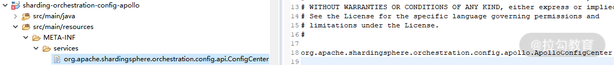
Apollo 代码工程中的 SPI 配置
其他的 ConfigCenter 实现也是一样，你可以自行查阅 sharding-orchestration-config-zookeeper-curator 等工程中的 SPI 配置文件。
至此，我们全面了解了 ShardingSphere 中的微内核架构，也就可以基于 ShardingSphere 所提供的各种 SPI 扩展点提供满足自身需求的具体实现。
从源码解析到日常开发
在日常开发过程中，我们一般可以直接使用 JDK 的 ServiceLoader 类来实现 SPI 机制。当然，我们也可以采用像 ShardingSphere 的方式对 ServiceLoader 类进行一层简单的封装，并添加属性设置等自定义功能。
同时，我们也应该注意到，ServiceLoader 这种实现方案也有一定缺点：
- 一方面，META/services 这个配置文件的加载地址是写死在代码中，缺乏灵活性。
- 另一方面，ServiceLoader 内部采用了基于迭代器的加载方法，会把配置文件中的所有 SPI 实现类都加载到内存中，效率不高。
所以如果需要提供更高的灵活性和性能，我们也可以基于 ServiceLoader 的实现方法自己开发适合自身需求的 SPI 加载 机制。
总结
微内核架构是 ShardingSphere 中最核心的基础架构，为这个框架提供了高度的灵活度，以及可插拔的扩展性。微内核架构也是一种同样的架构模式，本课时我们对这个架构模式的特点和组成结构做了介绍，并基于 JDK 中提供的 SPI 机制给出了实现这一架构模式的具体方案。
ShardingSphere 中大量使用了微内核架构来解耦系统内核和各个组件之间的关联关系，我们基于解析引擎和配置中心给出了具体的实现案例。在学习这些案例时 ，重点在于掌握 ShardingSphere 中对 JDK 中 SPI的封装机制。
这里给你留一道思考题：ShardingSphere 中使用微内核架构时对 JDK 中的 SPI 机制做了哪些封装？
本课时的内容就到这里，下一课时，我们将继续探索 ShardingSphere 中的基础设施，并给出分布式主键的设计原理和多种实现方案，记得按时来听课。
14 分布式主键：ShardingSphere 中有哪些分布式主键实现方式？
本课时我将为你讲解 ShardingSphere 中的分布式主键实现方式。
在传统数据库软件开发过程中，主键自动生成技术是基本需求。各个数据库对该需求也提供了相应的支持，比如 MySQL 的自增键，Oracle 的自增序列等。而在分片场景下，问题就变得有点复杂，我们不能依靠单个实例上的自增键来实现不同数据节点之间的全局唯一主键，这时分布式主键的需求就应运而生。ShardingSphere 作为一款优秀的分库分表开源软件，同样提供了分布式主键的实现机制，今天，我们就对这一机制的基本原理和实现方式展开讨论。
ShardingSphere 中的自动生成键方案
在介绍 ShardingSphere 提供的具体分布式主键实现方式之前，我们有必要先对框架中抽象的自动生成键 GeneratedKey 方案进行讨论，从而帮助你明确分布式主键的具体使用场景和使用方法。
ShardingSphere 中的 GeneratedKey
GeneratedKey 并不是 ShardingSphere 所创造的概念。如果你熟悉 Mybatis 这种 ORM 框架，对它就不会陌生。事实上，我们在《数据分片：如何实现分库、分表、分库+分表以及强制路由（上）？》中已经介绍了在 Mybatis 中嵌入 GeneratedKey 的实现方法。通常，我们会在 Mybatis 的 Mapper 文件中设置 useGeneratedKeys 和 keyProperty 属性：
<insert id="addEntity" useGeneratedKeys="true" keyProperty="recordId" >
INSERT INTO health_record (user_id, level_id, remark)
VALUES (#{userId,jdbcType=INTEGER}, #{levelId,jdbcType=INTEGER},
#{remark,jdbcType=VARCHAR})
</insert>
在执行这个 insert 语句时，返回的对象中自动包含了生成的主键值。当然，这种方式能够生效的前提是对应的数据库本身支持自增长的主键。
当我们使用 ShardingSphere 提供的自动生成键方案时，开发过程以及效果和上面描述的完全一致。在 ShardingSphere 中，同样实现了一个 GeneratedKey 类。请注意，该类位于 sharding-core-route 工程下。我们先看该类提供的 getGenerateKey 方法：
public static Optional<GeneratedKey> getGenerateKey(final ShardingRule shardingRule, final TableMetas tableMetas, final List<Object> parameters, final InsertStatement insertStatement) {
//找到自增长列
Optional<String> generateKeyColumnName = shardingRule.findGenerateKeyColumnName(insertStatement.getTable().getTableName());
if (!generateKeyColumnName.isPresent()) {
return Optional.absent();
}
//判断自增长类是否已生成主键值
return Optional.of(containsGenerateKey(tableMetas, insertStatement, generateKeyColumnName.get())
? findGeneratedKey(tableMetas, parameters, insertStatement, generateKeyColumnName.get()) : createGeneratedKey(shardingRule, insertStatement, generateKeyColumnName.get()));
}
这段代码的逻辑在于先从 ShardingRule 中找到主键对应的 Column，然后判断是否已经包含主键：如果是则找到该主键，如果不是则生成新的主键。今天，我们的重点是分布式主键的生成，所以我们直接来到 createGeneratedKey 方法：
private static GeneratedKey createGeneratedKey(final ShardingRule shardingRule, final InsertStatement insertStatement, final String generateKeyColumnName) {
GeneratedKey result = new GeneratedKey(generateKeyColumnName, true);
for (int i = 0; i < insertStatement.getValueListCount(); i++) {
result.getGeneratedValues().add(shardingRule.generateKey(insertStatement.getTable().getTableName()));
}
return result;
}
在 GeneratedKey 中存在一个类型为 LinkedList 的 generatedValues 变量，用于保存生成的主键，但实际上，生成主键的工作转移到了 ShardingRule 的 generateKey 方法中，我们跳转到 ShardingRule 类并找到这个 generateKey 方法：
public Comparable<?> generateKey(final String logicTableName) {
Optional<TableRule> tableRule = findTableRule(logicTableName);
if (!tableRule.isPresent()) {
throw new ShardingConfigurationException("Cannot find strategy for generate keys.");
}
//从TableRule中获取ShardingKeyGenerator并生成分布式主键
ShardingKeyGenerator shardingKeyGenerator = null == tableRule.get().getShardingKeyGenerator() ? defaultShardingKeyGenerator : tableRule.get().getShardingKeyGenerator();
return shardingKeyGenerator.generateKey();
}
首先，根据传入的 logicTableName 找到对应的 TableRule，基于 TableRule 找到其包含的 ShardingKeyGenerator，然后通过 ShardingKeyGenerator 的 generateKey 来生成主键。从设计模式上讲，ShardingRule 也只是一个外观类，真正创建 ShardingKeyGenerator 的过程应该是在 TableRule 中。而这里的 ShardingKeyGenerator 显然就是真正生成分布式主键入口，让我们来看一下。
ShardingKeyGenerator
接下来我们分析 ShardingKeyGenerator 接口，从定义上看，该接口继承了 TypeBasedSPI 接口：
public interface ShardingKeyGenerator extends TypeBasedSPI {
Comparable<?> generateKey();
}
来到 TableRule 中，在它的一个构造函数中找到了 ShardingKeyGenerator 的创建过程：
shardingKeyGenerator = containsKeyGeneratorConfiguration(tableRuleConfig)
? new ShardingKeyGeneratorServiceLoader().newService(tableRuleConfig.getKeyGeneratorConfig().getType(), tableRuleConfig.getKeyGeneratorConfig().getProperties()) : null;
这里有一个 ShardingKeyGeneratorServiceLoader 类，该类定义如下：
public final class ShardingKeyGeneratorServiceLoader extends TypeBasedSPIServiceLoader<ShardingKeyGenerator> {
static {
NewInstanceServiceLoader.register(ShardingKeyGenerator.class);
}
public ShardingKeyGeneratorServiceLoader() {
super(ShardingKeyGenerator.class);
}
}
回顾上一课时的内容，我们不难理解 ShardingKeyGeneratorServiceLoader 类的作用。ShardingKeyGeneratorServiceLoader 继承了 TypeBasedSPIServiceLoader 类，并在静态方法中通过 NewInstanceServiceLoader 注册了类路径中所有的 ShardingKeyGenerator。然后，ShardingKeyGeneratorServiceLoader 的 newService 方法基于类型参数通过 SPI 创建实例，并赋值 Properties 属性。
通过继承 TypeBasedSPIServiceLoader 类来创建一个新的 ServiceLoader 类，然后在其静态方法中注册相应的 SPI 实现，这是 ShardingSphere 中应用微内核模式的常见做法，很多地方都能看到类似的处理方法。
我们在 sharding-core-common 工程的 META-INF/services 目录中看到了具体的 SPI 定义：

分布式主键 SPI 配置
可以看到，这里有两个 ShardingKeyGenerator，分别是 SnowflakeShardingKeyGenerator 和 UUIDShardingKeyGenerator，它们都位于org.apache.shardingsphere.core.strategy.keygen 包下。
ShardingSphere 中的分布式主键实现方案
在 ShardingSphere 中，ShardingKeyGenerator 接口存在一批实现类。除了前面提到的 SnowflakeShardingKeyGenerator 和UUIDShardingKeyGenerator，还实现了 LeafSegmentKeyGenerator 和 LeafSnowflakeKeyGenerator 类，但这两个类的实现过程有些特殊，我们一会再具体展开。
UUIDShardingKeyGenerator
我们先来看最简单的 ShardingKeyGenerator，即 UUIDShardingKeyGenerator。UUIDShardingKeyGenerator 的实现非常容易理解，直接采用 UUID.randomUUID() 的方式产生分布式主键：
public final class UUIDShardingKeyGenerator implements ShardingKeyGenerator {
private Properties properties = new Properties();
@Override
public String getType() {
return "UUID";
}
@Override
public synchronized Comparable<?> generateKey() {
return UUID.randomUUID().toString().replaceAll("-", "");
}
}
SnowflakeShardingKeyGenerator
再来看 SnowFlake（雪花）算法，SnowFlake 是 ShardingSphere 默认的分布式主键生成策略。它是 Twitter 开源的分布式 ID 生成算法，其核心思想是使用一个 64bit 的 long 型数字作为全局唯一 ID，且 ID 引入了时间戳，基本上能够保持自增。SnowFlake 算法在分布式系统中的应用十分广泛，SnowFlake 算法中 64bit 的详细结构存在一定的规范：

64bit 的 ID 结构图
在上图中，我们把 64bit 分成了四个部分：
- 符号位
第一个部分即第一个 bit，值为 0，没有实际意义。
- 时间戳位
第二个部分是 41 个 bit，表示的是时间戳。41 位的时间戳可以容纳的毫秒数是 2 的 41 次幂，一年所使用的毫秒数是365 * 24 * 60 * 60 * 1000，即 69.73 年。 也就是说，ShardingSphere 的 SnowFlake 算法的时间纪元从 2016 年 11 月 1 日零点开始，可以使用到 2086 年 ，相信能满足绝大部分系统的要求。
- 工作进程位
第三个部分是 10 个 bit，表示工作进程位，其中前 5 个 bit 代表机房 id，后 5 个 bit 代表机器id。
- 序列号位
第四个部分是 12 个 bit，表示序号，也就是某个机房某台机器上在一毫秒内同时生成的 ID 序号。如果在这个毫秒内生成的数量超过 4096（即 2 的 12 次幂），那么生成器会等待下个毫秒继续生成。
因为 SnowFlake 算法依赖于时间戳，所以还需要考虑时钟回拨这种场景。所谓时钟回拨，是指服务器因为时间同步，导致某一部分机器的时钟回到了过去的时间点。显然，时间戳的回滚会导致生成一个已经使用过的 ID，因此默认分布式主键生成器提供了一个最大容忍的时钟回拨毫秒数。如果时钟回拨的时间超过最大容忍的毫秒数阈值，则程序报错；如果在可容忍的范围内，默认分布式主键生成器会等待时钟同步到最后一次主键生成的时间后再继续工作。ShardingSphere 中最大容忍的时钟回拨毫秒数的默认值为 0，可通过属性设置。
了解了 SnowFlake 算法的基本概念之后，我们来看 SnowflakeShardingKeyGenerator 类的具体实现。首先在 SnowflakeShardingKeyGenerator 类中存在一批常量的定义，用于维护 SnowFlake 算法中各个 bit 之间的关系，同时还存在一个 TimeService 用于获取当前的时间戳。而 SnowflakeShardingKeyGenerator 的核心方法 generateKey 负责生成具体的 ID，我们这里给出详细的代码，并为每行代码都添加注释：
@Override
public synchronized Comparable<?> generateKey() {
//获取当前时间戳
long currentMilliseconds = timeService.getCurrentMillis();
//如果出现了时钟回拨，则抛出异常或进行时钟等待
if (waitTolerateTimeDifferenceIfNeed(currentMilliseconds)) {
currentMilliseconds = timeService.getCurrentMillis();
}
//如果上次的生成时间与本次的是同一毫秒
if (lastMilliseconds == currentMilliseconds) {
//这个位运算保证始终就是在4096这个范围内，避免你自己传递的sequence超过了4096这个范围
if (0L == (sequence = (sequence + 1) & SEQUENCE_MASK)) {
//如果位运算结果为0，则需要等待下一个毫秒继续生成
currentMilliseconds = waitUntilNextTime(currentMilliseconds);
}
} else {//如果不是，则生成新的sequence
vibrateSequenceOffset();
sequence = sequenceOffset;
}
lastMilliseconds = currentMilliseconds;
//先将当前时间戳左移放到完成41个bit，然后将工作进程为左移到10个bit，再将序号为放到最后的12个bit
//最后拼接起来成一个64 bit的二进制数字
return ((currentMilliseconds - EPOCH) << TIMESTAMP_LEFT_SHIFT_BITS) | (getWorkerId() << WORKER_ID_LEFT_SHIFT_BITS) | sequence;
}
可以看到这里综合考虑了时钟回拨、同一个毫秒内请求等设计要素，从而完成了 SnowFlake 算法的具体实现。
LeafSegmentKeyGenerator 和 LeafSnowflakeKeyGenerator
事实上，如果实现类似 SnowflakeShardingKeyGenerator 这样的 ShardingKeyGenerator 是比较困难的，而且也属于重复造轮子。因此，尽管 ShardingSphere 在 4.X 版本中也提供了 LeafSegmentKeyGenerator 和 LeafSnowflakeKeyGenerator 这两个 ShardingKeyGenerator 的完整实现类。但在正在开发的 5.X 版本中，这两个实现类被移除了。
目前，ShardingSphere 专门提供了 OpenSharding 这个代码仓库来存放新版本的 LeafSegmentKeyGenerator 和 LeafSnowflakeKeyGenerator。新版本的实现类直接采用了第三方美团提供的 Leaf 开源实现。
Leaf 提供两种生成 ID 的方式，一种是号段（Segment）模式，一种是前面介绍的 Snowflake 模式。无论使用哪种模式，我们都需要提供一个 leaf.properties 文件，并设置对应的配置项。无论是使用哪种方式，应用程序都需要设置一个 leaf.key：
# for keyGenerator key
leaf.key=sstest
# for LeafSnowflake
leaf.zk.list=localhost:2181
如果使用号段模式，需要依赖于一张数据库表来存储运行时数据，因此需要在 leaf.properties 文件中添加数据库的相关配置：
# for LeafSegment
leaf.jdbc.url=jdbc:mysql://127.0.0.1:3306/test?serverTimezone=UTC&useSSL=false
leaf.jdbc.username=root
leaf.jdbc.password=123456
基于这些配置，我们就可以创建对应的 DataSource，并进一步创建用于生成分布式 ID 的 IDGen 实现类，这里创建的是基于号段模式的 SegmentIDGenImpl 实现类：
//通过DruidDataSource构建数据源并设置属性
DruidDataSource dataSource = new DruidDataSource();
dataSource.setUrl(properties.getProperty(LeafPropertiesConstant.LEAF_JDBC_URL));
dataSource.setUsername(properties.getProperty(LeafPropertiesConstant.LEAF_JDBC_USERNAME));
dataSource.setPassword(properties.getProperty(LeafPropertiesConstant.LEAF_JDBC_PASSWORD));
dataSource.init();
//构建数据库访问Dao组件
IDAllocDao dao = new IDAllocDaoImpl(dataSource);
//创建IDGen实现类
this.idGen = new SegmentIDGenImpl();
//将Dao组件绑定到IDGen实现类
((SegmentIDGenImpl) this.idGen).setDao(dao);
this.idGen.init();
this.dataSource = dataSource;
一旦我们成功创建了 IDGen 实现类，可以通过该类来生成目标 ID，LeafSegmentKeyGenerator 类中包含了所有的实现细节：
Result result = this.idGen.get(properties.getProperty(LeafPropertiesConstant.LEAF_KEY));
return result.getId();
介绍完 LeafSegmentKeyGenerator 之后，我们再来看 LeafSnowflakeKeyGenerator。LeafSnowflakeKeyGenerator 的实现依赖于分布式协调框架 Zookeeper，所以在配置文件中需要指定 Zookeeper 的目标地址：
# for LeafSnowflake
leaf.zk.list=localhost:2181
创建用于 LeafSnowflake 的 IDGen 实现类 SnowflakeIDGenImpl 相对比较简单，我们直接在构造函数中设置 Zookeeper 地址就可以了：
IDGen idGen = new SnowflakeIDGenImpl(properties.getProperty(LeafPropertiesConstant.LEAF_ZK_LIST), 8089);
同样，通过 IDGen 获取模板 ID 的方式是一致的：
idGen.get(properties.getProperty(LeafPropertiesConstant.LEAF_KEY)).getId();
显然，基于 Leaf 框架实现号段模式和 Snowflake 模式下的分布式 ID 生成方式非常简单，Leaf 框架为我们屏蔽了内部实现的复杂性。
从源码解析到日常开发
相比 ShardingSphere 中其他架构设计上的思想和实现方案，分布式主键非常独立，所以今天介绍的各种分布式主键的实现方式完全可以直接套用到日常开发过程中。无论是 ShardingSphere 自身实现的 SnowflakeShardingKeyGenerator，还是基于第三方框架实现的 LeafSegmentKeyGenerator 和 LeafSnowflakeKeyGenerator，都为我们使用分布式主键提供了直接的解决方案。当然，我们也可以在这些实现方案的基础上，进一步挖掘同类型的其他方案。
总结
在分布式系统的开发过程中，分布式主键是一种基础需求。而对于与数据库相关的操作而言，我们往往需要将分布式主键与数据库的主键自动生成机制关联起来。在今天的课程中，我们就从 ShardingSphere 的自动生成键方案说起，引出了分布式主键的各种实现方案。这其中包括最简单的 UUID，也包括经典的雪花算法，以及雪花算法的改进方案 LeafSegment 和 LeafSnowflake 算法。
这里给你留一道思考题：ShardingSphere 中如何分别实现基于号段的 Leaf 以及基于 Snowflake 的 Leaf 来生成分布式 ID？
从下一课时开始，我们将进入到 ShardingSphere 分片引擎实现原理的讲解过程中，我将首先为你介绍解析引擎的执行流程，记得按时来听课。
15 解析引擎：SQL 解析流程应该包括哪些核心阶段？（上）
你好，欢迎进入第 15 课时的学习，结束了对 ShardingSphere 中微内核架构等基础设施相关实现机制的介绍后，今天我们将正式进入到分片引擎的学习。
对于一款分库分表中间件而言，分片是其最核心的功能。下图展示了整个 ShardingSphere 分片引擎的组成结构，我们已经在[《12 | 从应用到原理：如何高效阅读 ShardingSphere 源码》]这个课时中对分片引擎中所包含的各个组件进行了简单介绍。我们知道，对于分片引擎而言，第一个核心组件就是 SQL 解析引擎。
对于多数开发人员而言，SQL 解析是一个陌生的话题，但对于一个分库分表中间件来说却是一个基础组件，目前主流的分库分表中间件都包含了对解析组件的实现策略。可以说，SQL 解析引擎所生成的结果贯穿整个 ShardingSphere。如果我们无法很好地把握 SQL 的解析过程，在阅读 ShardingSphere 源码时就会遇到一些障碍。
另一方面，SQL 的解析过程本身也很复杂，你在拿到 ShardingSphere 框架的源代码时，可能首先会问这样一个问题：SQL 的解析过程应该包含哪些核心阶段呢？接下来我将带你深度剖析这个话题。
从 DataSource 到 SQL 解析引擎入口
在对分片引擎的整体介绍中可以看到，要想完成分片操作，首先需要引入 SQL 解析引擎。对于刚接触 ShardingSphere 源码的同学而言，想要找到 SQL 解析引擎的入口有一定难度。这里引用在[《04 | 应用集成：在业务系统中使用 ShardingSphere 的方式有哪些？》]这个课时中介绍的代码示例，来分析 SQL 解析引擎的入口。
我们回顾如下所示的代码片段，这些代码片段基于 Java 语言提供了数据分片的实现方式：
//创建分片规则配置类
ShardingRuleConfiguration shardingRuleConfig = new ShardingRuleConfiguration();
//创建分表规则配置类
TableRuleConfiguration tableRuleConfig = new TableRuleConfiguration("user", "ds${0..1}.user${0..1}");
//创建分布式主键生成配置类
Properties properties = new Properties();
result.setProperty("worker.id", "33");
KeyGeneratorConfiguration keyGeneratorConfig = new KeyGeneratorConfiguration("SNOWFLAKE", "id", properties);
result.setKeyGeneratorConfig(keyGeneratorConfig);
shardingRuleConfig.getTableRuleConfigs().add(tableRuleConfig);
//根据年龄分库，一共分为2个库
shardingRuleConfig.setDefaultDatabaseShardingStrategyConfig(new InlineShardingStrategyConfiguration("sex", "ds${sex % 2}"));
//根据用户id分表，一共分为2张表
shardingRuleConfig.setDefaultTableShardingStrategyConfig(new StandardShardingStrategyConfiguration("id", "user${id % 2}"));
//通过工厂类创建具体的DataSource
return ShardingDataSourceFactory.createDataSource(createDataSourceMap(), shardingRuleConfig, new Properties());
可以看到，上述代码构建了几个数据源，加上分库、分表策略以及分片规则，然后通过 ShardingDataSourceFactory 获取了目前数据源 DataSource 。显然，对于应用开发而言，DataSource 就是我们使用 ShardingSphere 框架的入口。事实上，对于 ShardingSphere 内部的运行机制而言，DataSource 同样是引导我们进入分片引擎的入口。围绕 DataSource，通过跟踪代码的调用链路，我们可以得到如下所示的类层结构图：

上图已经引出了 ShardingSphere 内核中的很多核心对象，但今天我们只关注位于整个链路的最底层对象，即图中的 SQLParseEngine。一方面，在 DataSource 的创建过程中，最终初始化了 SQLParseEngine；另一方面，负责执行路由功能的 ShardingRouter 也依赖于 SQLParseEngine。这个 SQLParseEngine 就是 ShardingSphere 中负责整个 SQL 解析过程的入口。
从 SQL 解析引擎到 SQL 解析内核
在 ShardingSphere 中，存在一批以“Engine”结尾的引擎类。从架构思想上看，这些类在设计和实现上普遍采用了外观模式。外观（Facade）模式的意图可以描述为子系统中的一组接口提供一个一致的界面。外观模式定义了一个高层接口，这个接口使得这一子系统更加容易使用。该模式的示意图如下图所示：
从作用上讲，外观模式能够起到客户端与后端服务之间的隔离作用，随着业务需求的变化和时间的演进，外观背后各个子系统的划分和实现可能需要进行相应的调整和升级，这种调整和升级需要做到对客户端透明。在设计诸如 ShardingSphere 这样的中间件框架时，这种隔离性尤为重要。
对于 SQL 解析引擎而言，情况同样类似。不同之处在于，SQLParseEngine 本身并不提供外观作用，而是把这部分功能委托给了另一个核心类 SQLParseKernel。从命名上看，这个类才是 SQL 解析的内核类，也是所谓的外观类。SQLParseKernel 屏蔽了后端服务中复杂的 SQL 抽象语法树对象 SQLAST、SQL 片段对象 SQLSegment ，以及最终的 SQL 语句 SQLStatement 对象的创建和管理过程。上述这些类之间的关系如下所示：
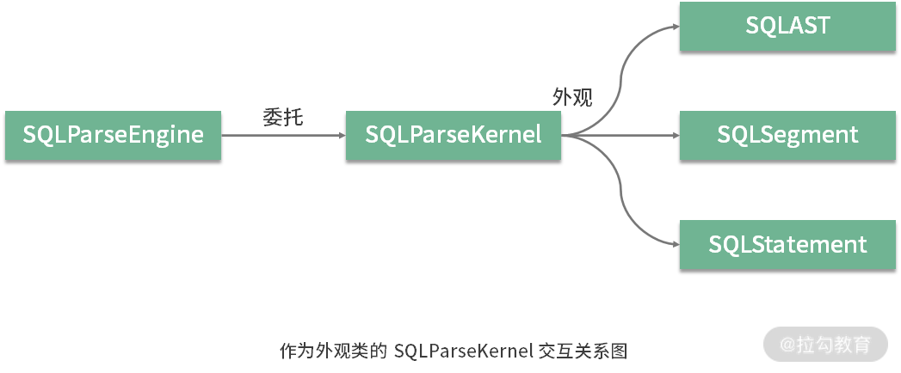
1.SQLParseEngine
从前面的类层结构图中可以看到，AbstractRuntimeContext 是 SQLParseEngine 的构建入口。顾名思义，RuntimeContext 在 ShardingSphere 中充当一种运行时上下文，保存着与运行时环境下相关的分片规则、分片属性、数据库类型、执行引擎以及 SQL 解析引擎。作为 RuntimeContext 接口的实现类，AbstractRuntimeContex 在其构造函数中完成了对 SQLParseEngine 的构建，构建过程如下所示：
protected AbstractRuntimeContext(final T rule, final Properties props, final DatabaseType databaseType) {
…
parseEngine = SQLParseEngineFactory.getSQLParseEngine(DatabaseTypes.getTrunkDatabaseTypeName(databaseType));
…
}
显然，这里通过工厂类 SQLParseEngineFactory 完成了 SQLParseEngine 的创建过程。工厂类 SQLParseEngineFactory 的实现如下：
public final class SQLParseEngineFactory {
private static final Map<String, SQLParseEngine> ENGINES = new ConcurrentHashMap<>();
public static SQLParseEngine getSQLParseEngine(final String databaseTypeName) {
if (ENGINES.containsKey(databaseTypeName)) {
return ENGINES.get(databaseTypeName);
}
synchronized (ENGINES) {
//如果缓存中包含了指定数据库类型对应的SQLParseEngine，则直接返回
if (ENGINES.containsKey(databaseTypeName)) {
return ENGINES.get(databaseTypeName);
}
//创建SQLParseEngine
SQLParseEngine result = new SQLParseEngine(databaseTypeName);
//将新创建的SQLParseEngine放入缓存中
ENGINES.put(databaseTypeName, result);
return result;
}
}
}
从上述代码中可以看到，这里基于 ConcurrentHashMap 对象做了一层基于内存的缓存处理，SQLParseEngineFactory 的实现方式在 ShardingSphere 中具有代表性。为了提高访问性能，ShardingSphere 大量使用这种方式来构建基于内容的缓存机制。
接下来，我们来看 SQLParseEngine 类本身，该类的完整代码如下所示：
public final class SQLParseEngine {
private final String databaseTypeName;
private final SQLParseResultCache cache = new SQLParseResultCache();
public SQLStatement parse(final String sql, final boolean useCache) {
//基于Hook机制进行监控和跟踪
ParsingHook parsingHook = new SPIParsingHook();
parsingHook.start(sql);
try {
//完成SQL的解析，并返回一个SQLStatement对象
SQLStatement result = parse0(sql, useCache);
parsingHook.finishSuccess(result);
return result;
} catch (final Exception ex) {
parsingHook.finishFailure(ex);
throw ex;
}
}
private SQLStatement parse0(final String sql, final boolean useCache) {
//如果使用缓存，先尝试从缓存中获取SQLStatement
if (useCache) {
Optional<SQLStatement> cachedSQLStatement = cache.getSQLStatement(sql);
if (cachedSQLStatement.isPresent()) {
return cachedSQLStatement.get();
}
}
//委托SQLParseKernel创建SQLStatement
SQLStatement result = new SQLParseKernel(ParseRuleRegistry.getInstance(), databaseTypeName, sql).parse();
if (useCache) {
cache.put(sql, result);
}
return result;
}
}
关于 SQLParseEngine 有几点值得注意：
- 首先，这里使用了 ParsingHook 作为系统运行时的 Hook 管理，也就是我们常说的代码钩子。ShardingSphere 提供了一系列的 ParsingHook 实现，后续我们在讨论到 ShardingSphere 的链路跟踪时会对 Hook 机制进一步展开。
- 其次，我们发现用于解析 SQL 的 parse 方法返回了一个 SQLStatement 对象。也就是说，这个 SQLStatement 就是整个 SQL 解析引擎的最终输出对象。这里同样基于 Google Guava 框架中的 Cache 类构建了一个 SQLParseResultCache，对解析出来的 SQLStatement 进行缓存处理。
最后，我们发现 SQLParseEngine 把真正的解析工作委托给了 SQLParseKernel。接下来，我们就来看这个 SQLParseKernel 类。
2.SQLParseKernel
在 SQLParseKernel 类中，发现了如下所示的三个 Engine 类定义，包括 SQL 解析器引擎 SQLParserEngine（请注意该类名与 SQLParseEngine 类名的区别）、SQLSegment 提取器引擎 SQLSegmentsExtractor 以及 SQLStatement 填充器引擎 SQLStatementFiller。
//SQL解析器引擎
private final SQLParserEngine parserEngine;
//SQLSegment提取器引擎
private final SQLSegmentsExtractorEngine extractorEngine;
//SQLStatement填充器引擎
private final SQLStatementFillerEngine fillerEngine;
作为外观类的 SQLParseKernel 提供了如下所示的 parse 方法，来完成 SQL 解析的整个过程，该方法中分别用到了上述三个引擎类，如下所示：
public SQLStatement parse() {
//利用ANTLR4 解析SQL的抽象语法树
SQLAST ast = parserEngine.parse();
//提取AST中的Token，封装成对应的TableSegment、IndexSegment 等各种Segment
Collection<SQLSegment> sqlSegments = extractorEngine.extract(ast);
Map<ParserRuleContext, Integer> parameterMarkerIndexes = ast.getParameterMarkerIndexes();
//填充SQLStatement并返回
return fillerEngine.fill(sqlSegments, parameterMarkerIndexes.size(), ast.getSqlStatementRule());
}
SQL 解析引擎的三大阶段之如何 生成 SQLAST
上面这段代码非常符合外观类的处理风格，即把内部系统的核心类通过简单的调用方式组合在一起完成业务链路。我们对三段代码分别添加了注释，实际上，根据这些注释，我们已经可以回答在本课时开始时所提出 “SQL 解析过程应该包含哪些核心阶段？” 这一问题，即：
- 通过 SQLParserEngine 生成 SQL 抽象语法树
- 通过 SQLSegmentsExtractorEngine 提取 SQLSegment
- 通过 SQLStatementFiller 填充 SQLStatement
这三个阶段便是 ShardingSphere 新一代 SQL 解析引擎的核心组成部分。其整体架构如下图所示：
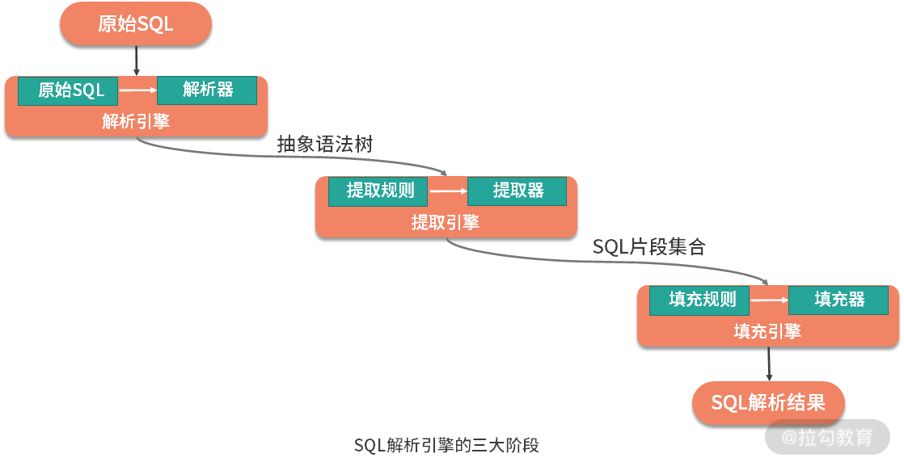
至此，我们看到由解析、提取和填充这三个阶段所构成的整体 SQL 解析流程已经完成。现在能够根据一条 SQL 语句解析出对应的 SQLStatement 对象，供后续的 ShardingRouter 等路由引擎进行使用。
本课时我们首先关注流程中的第一阶段，即如何生成一个 SQLAST（后两个阶段会在后续课时中讲解）。这部分的实现过程位于 SQLParserEngine 的 parse 方法，如下所示：
public SQLAST parse() {
SQLParser sqlParser = SQLParserFactory.newInstance(databaseTypeName, sql);
//利用ANTLR4获取解析树
ParseTree parseTree;
try {
((Parser) sqlParser).setErrorHandler(new BailErrorStrategy());
((Parser) sqlParser).getInterpreter().setPredictionMode(PredictionMode.SLL);
parseTree = sqlParser.execute().getChild(0);
} catch (final ParseCancellationException ex) {
((Parser) sqlParser).reset();
((Parser) sqlParser).setErrorHandler(new DefaultErrorStrategy());
((Parser) sqlParser).getInterpreter().setPredictionMode(PredictionMode.LL);
parseTree = sqlParser.execute().getChild(0);
}
if (parseTree instanceof ErrorNode) {
throw new SQLParsingException(String.format("Unsupported SQL of `%s`", sql));
}
//获取配置文件中的StatementRule
SQLStatementRule rule = parseRuleRegistry.getSQLStatementRule(databaseTypeName, parseTree.getClass().getSimpleName());
if (null == rule) {
throw new SQLParsingException(String.format("Unsupported SQL of `%s`", sql));
}
//封装抽象语法树AST
return new SQLAST((ParserRuleContext) parseTree, getParameterMarkerIndexes((ParserRuleContext) parseTree), rule);
}
上述代码中 SQLParser 接口负责具体的 SQL 到 AST（Abstract Syntax Tree，抽象语法树）的解析过程。而具体 SQLParser 实现类的生成由 SQLParserFactory 负责，SQLParserFactory 定义如下：
public final class SQLParserFactory {
public static SQLParser newInstance(final String databaseTypeName, final String sql) {
//通过SPI机制加载所有扩展
for (SQLParserEntry each : NewInstanceServiceLoader.newServiceInstances(SQLParserEntry.class)) {
//判断数据库类型
if (each.getDatabaseTypeName().equals(databaseTypeName)) {
return createSQLParser(sql, each);
}
}
throw new UnsupportedOperationException(String.format("Cannot support database type '%s'", databaseTypeName));
}
…
}
这里又引入了另一个核心接口，即 SQLParserEntry。可以看到，在 SQLParserFactory 类中，我们也使用了[《13 | 微内核架构：ShardingSphere 如何实现系统的扩展性》]这个课时中介绍的 NewInstanceServiceLoader 工具类来加载具体 SQLParserEntry 的实现类。
从这种实现方式上看，我们可以断定 SQLParserEntry 是一个 SPI 接口。通过查看 SQLParserEntry 所处的代码包结构，更印证了这一观点，因为该类位于 shardingsphere-sql-parser-spi 工程的 org.apache.shardingsphere.sql.parser.spi 包中。
关于 SQLParser 和 SQLParserEntry 这一对接口，还有一点值得探讨。注意到 SQLParser 接口位于 shardingsphere-sql-parser-spi 工程的 org.apache.shardingsphere.sql.parser.api 包中，所示它是一个 API 接口。
从定位上讲，SQLParser 是解析器对外暴露的入口，而 SQLParserEntry 是解析器的底层实现，两者共同构成了 SQL 解析器本身。更宽泛的，从架构设计层次上讲，API 面向高层业务开发人员，而 SPI 面向底层框架开发人员，两者的关系如下图所示。作为一款优秀的中间件框架，这种 API 和 SPI 的对应关系在 ShardingSphere 中非常普遍，也是我们正确理解 ShardingSphere 架构设计上的一个切入点。
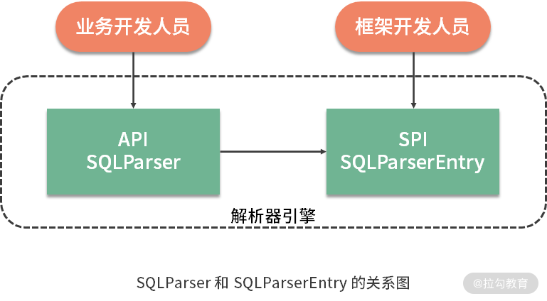
SQLParser 和 SQLParserEntry 这两个接口的定义和实现都与基于 ANTLR4 的 AST 生成机制有关。ANTLR 是 Another Tool for Language Recognition 的简写，是一款能够根据输入自动生成语法树的开源语法分析器。ANTLR 可以将用户编写的 ANTLR 语法规则直接生成 Java、Go 语言的解析器，在 ShardingSphere 中就使用了 ANTLR4 来生成 AST。
我们注意到 SQLParserEngine 的 parse 方法最终返回的是一个 SQLAST，该类的定义如下所示。
public final class SQLAST {
private final ParserRuleContext parserRuleContext;
private final Map<ParserRuleContext, Integer> parameterMarkerIndexes;
private final SQLStatementRule sqlStatementRule;
}
这里的 ParserRuleContext 实际上就来自 ANTLR4，而 SQLStatementRule 则是一个规则对象，包含了对 SQLSegment 提取器的定义。这样，我们就需要进入下一个阶段的讨论，即如何提取 SQLSegment（下一课时会讲解）。
总结
作为 ShardingSphere 分片引擎的第一个核心组件，解析引擎的目的在于生成 SQLStatement 目标对象。而整个解析引擎分成三大阶段，即生成 SQL 抽象语法树、提取 SQL 片段以及使用这些片段来填充 SQL 语句。本课时对解析引擎的整体结构以及这三个阶段中的第一个阶段进行了详细的讨论。
这里给你留一道思考题：在 ShardingSphere 中，外观模式如何应用到 SQL 解析过程中？欢迎你在留言区与大家讨论，我将一一点评解答。
本课时的内容就到这里，在下一课时中，我们将完成对 SQL 解析引擎剩余两个阶段内容的介绍，即如何提取 SQL 片段以及填充 SQL 语句，记得按时来听课。
16 解析引擎：SQL 解析流程应该包括哪些核心阶段？（下）
我们知道整个 SQL 解析引擎可以分成三个阶段（如下图所示），上一课时我们主要介绍了 ShardingSphere 中 SQL 解析引擎的第一个阶段，那么今天我将承接上一课时，继续讲解 ShardingSphere 中 SQL 解析流程中剩余的两个阶段。
SQL 解析引擎的三大阶段
在 SQL 解析引擎的第一阶段中，我们详细介绍了 ShardingSphere 生成 SQL 抽象语法树的过程，并引出了 SQLStatementRule 规则类。今天我们将基于这个规则类来分析如何提取 SQLSegment 以及如何填充 SQL 语句的实现机制。
1.第二阶段：提取 SQL 片段
要理解 SQLStatementRule，就需要先介绍 ParseRuleRegistry 类。从命名上看，该类就是一个规则注册表，保存着各种解析规则信息。ParseRuleRegistry 类中的核心变量包括如下所示的三个 Loader 类：
private final ExtractorRuleDefinitionEntityLoader extractorRuleLoader = new ExtractorRuleDefinitionEntityLoader();
private final FillerRuleDefinitionEntityLoader fillerRuleLoader = new FillerRuleDefinitionEntityLoader();
private final SQLStatementRuleDefinitionEntityLoader statementRuleLoader = new SQLStatementRuleDefinitionEntityLoader();
从命名上可以看到这三个 Loader 类分别处理对 SQLStatementRule、ExtractorRule 和 FillerRule 这三种规则定义的加载。
我们先来看 SQLStatementRule，它们的定义位于 sql-statement-rule-definition.xml 配置文件中。我们以 Mysql 为例，这个配置文件位于 shardingsphere-sql-parser-mysql 工程中的 META-INF/parsing-rule-definition/mysql 目录下。我们截取该配置文件中的部分配置信息作为演示，如下所示：
<sql-statement-rule-definition>
<sql-statement-rule context="select" sql-statement-class="org.apache.shardingsphere.sql.parser.sql.statement.dml.SelectStatement" extractor-rule-refs="tableReferences, columns, selectItems, where, predicate, groupBy, orderBy, limit, subqueryPredicate, lock" />
<sql-statement-rule context="insert" sql-statement-class="org.apache.shardingsphere.sql.parser.sql.statement.dml.InsertStatement" extractor-rule-refs="table, columns, insertColumns, insertValues, setAssignments, onDuplicateKeyColumns" />
<sql-statement-rule context="update" sql-statement-class="org.apache.shardingsphere.sql.parser.sql.statement.dml.UpdateStatement" extractor-rule-refs="tableReferences, columns, setAssignments, where, predicate" />
<sql-statement-rule context="delete" sql-statement-class="org.apache.shardingsphere.sql.parser.sql.statement.dml.DeleteStatement" extractor-rule-refs="tables, columns, where, predicate" />
…
</sql-statement-rule-definition>
基于 ParseRuleRegistry 类进行规则获取和处理过程，涉及一大批实体对象以及用于解析 XML 配置文件的 JAXB 工具类的定义，内容虽多但并不复杂。核心类之间的关系如下图所示：
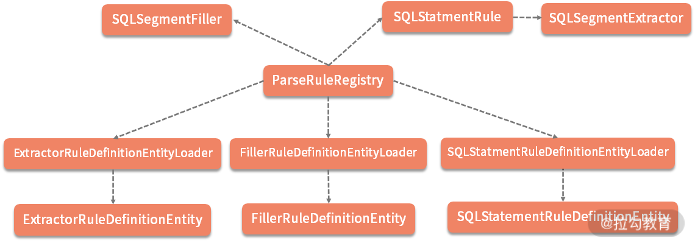
ParseRuleRegistry 类层结构图
当获取规则之后，对于具体某种数据库类型的每条 SQL 而言，都会有一个 SQLStatementRule 对象。我们注意到每个 SQLStatementRule 都定义了一个“context”以及一个“sql-statement-class”。
这里的 context 实际上就是通过 SQL 解析所生成的抽象语法树 SQLAST 中的 ParserRuleContext，包括 CreateTableContext、SelectContext 等各种 StatementContext。而针对每一种 context，都有专门的一个 SQLStatement 对象与之对应，那么这个 SQLStatement 究竟长什么样呢？我们来看一下。
public interface SQLStatement {
//获取参数个数
int getParametersCount();
//获取所有SQLSegment
Collection<SQLSegment> getAllSQLSegments();
//根据类型获取一个SQLSegment
<T extends SQLSegment> Optional<T> findSQLSegment(Class<T> sqlSegmentType);
//根据类型获取一组SQLSegment
<T extends SQLSegment> Collection<T> findSQLSegments(Class<T> sqlSegmentType);
}
你可以看到，作为解析引擎最终产物的 SQLStatement ，实际上封装的是对 SQL 片段对象 SQLSegment 的获取操作。显然，对于每一个 ParserRuleContext 而言，我们最终就是构建了一个包含一组 SQLSegment 的 SQLStatement 对象，而这些 SQLSegment 的构建过程就是所谓的提取 SQLSegment 的过程。我们在配置文件中也明确看到了 SQLStatementRule 中对各种提取规则对象 ExtractorRule 的引用。
在 ShardingSphere 中内置了一大批通用的 SQLSegment，包括查询选择项（SelectItems）、表信息（Table）、排序信息（OrderBy）、分组信息（GroupBy）以及分页信息（Limit）等。这些通用 SQLSegment 都有对应的 SQLSegmentExtractor，我们可以直接在 SQLStatementRule 中进行使用。
另一方面，考虑到 SQL 方言的差异性，ShardingSphere 同样提供了针对各种数据库的 SQLSegment 的提取器定义。以 Mysql 为例，在其代码工程的 META-INF/parsing-rule-definition/mysql 目录下，存在一个 extractor-rule-definition.xml 配置文件，专门用来定义针对 Mysql 的各种 SQLSegmentExtractor，部分定义如下所示，作为一款适用于多数据库的中间件，这也是 ShardingSphere 应对 SQL 方言的实现机制之一。
<extractor-rule-definition>
<extractor-rule id="addColumnDefinition" extractor-class="org.apache.shardingsphere.sql.parser.core.extractor.ddl.MySQLAddColumnDefinitionExtractor" />
<extractor-rule id="modifyColumnDefinition" extractor-class="org.apache.shardingsphere.sql.parser.core.extractor.ddl.MySQLModifyColumnDefinitionExtractor" />
…
</extractor-rule-definition>
现在，假设有这样一句 SQL：
SELECT task_id, task_name FROM health_task WHERE user_id = 'user1' AND record_id = 2
通过解析，我们获取了如下所示的抽象语法树：

抽象语法树示意图
我们发现，对于上述抽象语法树中的某些节点（如 SELECT、FROM 和 WHERE）没有子节点，而对于如 FIELDS、TABLES 和 CONDITIONS 节点而言，本身也是一个树状结构。显然，这两种节点的提取规则应该是不一样的。
因此，ShardingSphere 提供了两种 SQLSegmentExtractor，一种是针对单节点的 OptionalSQLSegmentExtractor；另一种是针对树状节点的 CollectionSQLSegmentExtractor。由于篇幅因素，这里以 TableExtractor 为例，展示如何提取 TableSegment 的过程，TableExtractor 的实现方法如下所示：
public final class TableExtractor implements OptionalSQLSegmentExtractor {
@Override
public Optional<TableSegment> extract(final ParserRuleContext ancestorNode, final Map<ParserRuleContext, Integer> parameterMarkerIndexes) {
//从Context中获取TableName节点
Optional<ParserRuleContext> tableNameNode = ExtractorUtils.findFirstChildNode(ancestorNode, RuleName.TABLE_NAME);
if (!tableNameNode.isPresent()) {
return Optional.absent();
}
//根据TableName节点构建TableSegment
TableSegment result = getTableSegment(tableNameNode.get());
//设置表的别名
setAlias(tableNameNode.get(), result);
return Optional.of(result);
}
private TableSegment getTableSegment(final ParserRuleContext tableNode) {
//从Context中获取Name节点
ParserRuleContext nameNode = ExtractorUtils.getFirstChildNode(tableNode, RuleName.NAME);
//根据Name节点获取节点的起止位置以及节点内容
TableSegment result = new TableSegment(nameNode.getStart().getStartIndex(), nameNode.getStop().getStopIndex(), nameNode.getText());
//从Context中获取表的Owner节点，如果有的话就设置Owner
Optional<ParserRuleContext> ownerNode = ExtractorUtils.findFirstChildNodeNoneRecursive(tableNode, RuleName.OWNER);
if (ownerNode.isPresent()) {
result.setOwner(new SchemaSegment(ownerNode.get().getStart().getStartIndex(), ownerNode.get().getStop().getStopIndex(), ownerNode.get().getText()));
}
return result;
}
private void setAlias(final ParserRuleContext tableNameNode, final TableSegment tableSegment) {
//从Context中获取Alias节点，如果有的话就设置别名
Optional<ParserRuleContext> aliasNode = ExtractorUtils.findFirstChildNode(tableNameNode.getParent(), RuleName.ALIAS);
if (aliasNode.isPresent()) {
tableSegment.setAlias(aliasNode.get().getText());
}
}
}
显然，语法树中的 Table 是一种单节点，所以 TableExtractor 继承自 OptionalSQLSegmentExtractor。对于 TableExtractor 而言，整个解析过程就是从 ParserRuleContext 中获取与表定义相关的各种节点，然后通过节点的起止位置以及节点内容来构建 TableSegment 对象。TableSegment 实现了 SQLSegment，其核心变量的定义也比较明确，如下所示：
public final class TableSegment implements SQLSegment, TableAvailable, OwnerAvailable<SchemaSegment>, AliasAvailable {
private final int startIndex;
private final int stopIndex;
private final String name;
private final QuoteCharacter quoteCharacter;
private SchemaSegment owner;
private String alias;
…
}
现在，基于以上关于提取器以及提取操作的相关概念的理解，我们来看一下 SQLSegment 提取引擎 SQLSegmentsExtractorEngine 的实现，如下所示：
public final class SQLSegmentsExtractorEngine {
//用来提取SQLAST语法树中的SQL片段
public Collection<SQLSegment> extract(final SQLAST ast) {
Collection<SQLSegment> result = new LinkedList<>();
//遍历提取器，从Context中提取对应类型的SQLSegment，比如TableSegment
for (SQLSegmentExtractor each : ast.getSqlStatementRule().getExtractors()) {
//单节点的场景，直接提取单一节点下的内容
if (each instanceof OptionalSQLSegmentExtractor) {
Optional<? extends SQLSegment> sqlSegment = ((OptionalSQLSegmentExtractor) each).extract(ast.getParserRuleContext(), ast.getParameterMarkerIndexes());
if (sqlSegment.isPresent()) {
result.add(sqlSegment.get());
}
树状节点的场景，遍历提取节点下的所有子节点//
} else if (each instanceof CollectionSQLSegmentExtractor) {
result.addAll(((CollectionSQLSegmentExtractor) each).extract(ast.getParserRuleContext(), ast.getParameterMarkerIndexes()));
}
}
return result;
}
}
显然，SQLSegmentsExtractorEngine 的作用就是针对某一条 SQL，遍历 SQLStatementRule 中所配置的提取器，然后从 Context 中提取对应类型的 SQLSegment，并最终存放在一个集合对象中进行返回。
2.第三阶段：填充 SQL 语句
完成所有 SQLSegment 的提取之后，我们就来到了解析引擎的最后一个阶段，即填充 SQLStatement。所谓的填充过程，就是通过填充器 SQLSegmentFiller 为 SQLStatement 注入具体 SQLSegment 的过程。这点从 SQLSegmentFiller 接口定义中的各个参数就可以得到明确，如下所示：
public interface SQLSegmentFiller<T extends SQLSegment> {
void fill(T sqlSegment, SQLStatement sqlStatement);
}
那么问题就来了，我们如何正确把握 SQLSegmentFiller、SQLSegment 和 SQLStatement 这三者之间的处理关系呢？我们先根据某个 SQLSegment 找到对应的 SQLSegmentFiller，这部分关系在 ShardingSphere 中同样是维护在一个 filler-rule-definition.xml 配置文件中，截取部分配置项如下所示：
<filler-rule-definition>
<filler-rule sql-segment-class="org.apache.shardingsphere.sql.parser.sql.segment.generic.TableSegment" filler-class="org.apache.shardingsphere.sql.parser.core.filler.impl.TableFiller" />
<filler-rule sql-segment-class="org.apache.shardingsphere.sql.parser.sql.segment.generic.SchemaSegment" filler-class="org.apache.shardingsphere.sql.parser.core.filler.impl.dal.SchemaFiller" />
…
</filler-rule-definition>
显然，这里保存着 SQLSegment 与 SQLSegmentFiller 之间的对应关系。当然，对于不同的 SQL 方言，也同样可以维护自身的 filler-rule-definition.xml 文件。
我们还是以与 TableSegment 对应的 TableFiller 为例，来分析一个 SQLSegmentFiller 的具体实现方法，TableFiller 类如下所示：
public final class TableFiller implements SQLSegmentFiller<TableSegment> {
@Override
public void fill(final TableSegment sqlSegment, final SQLStatement sqlStatement) {
if (sqlStatement instanceof TableSegmentAvailable) {
((TableSegmentAvailable) sqlStatement).setTable(sqlSegment);
} else if (sqlStatement instanceof TableSegmentsAvailable) {
((TableSegmentsAvailable) sqlStatement).getTables().add(sqlSegment);
}
}
}
这段代码在实现上采用了回调机制来完成对象的注入。在 ShardingSphere 中，基于回调的处理方式也非常普遍。本质上，回调解决了因为类与类之间的相互调用而造成的循环依赖问题，回调的实现策略通常采用了如下所示的类层结构：
回调机制示意图
TableFiller 中所依赖的 TableSegmentAvailable 和 TableSegmentsAvailable 接口就类似于上图中的 Callback 接口，具体的 SQLStatement 就是 Callback 的实现类，而 TableFiller 则是 Callback 的调用者。以 TableFiller 为例，我们注意到，如果对应的 SQLStatement 实现了这两个接口中的任意一个，那么就可以通过 TableFiller 注入对应的 TableSegment，从而完成 SQLSegment 的填充。
这里以 TableSegmentAvailable 接口为例，它有一组实现类，如下所示：

TableSegmentAvailable实现类
以上图中的 CreateTableStatement 为例，该类同时实现了 TableSegmentAvailable 和 IndexSegmentsAvailable 这两个回调接口，所以就可以同时操作 TableSegment 和 IndexSegment 这两个 SQLSegment。CreateTableStatement 类的实现如下所示：
public final class CreateTableStatement extends DDLStatement implements TableSegmentAvailable, IndexSegmentsAvailable {
private TableSegment table;
private final Collection<ColumnDefinitionSegment> columnDefinitions = new LinkedList<>();
private final Collection<IndexSegment> indexes = new LinkedList<>();
}
至此，我们通过一个示例解释了与填充操作相关的各个类之间的协作关系，如下所示的类图展示了这种协作关系的整体结构。

SQLStatement类层结构图
有了上图的基础，我们理解填充引擎 SQLStatementFillerEngine 就显得比较简单了，SQLStatementFillerEngine 类的实现如下所示：
public final class SQLStatementFillerEngine {
private final ParseRuleRegistry parseRuleRegistry;
private final String databaseTypeName;
@SuppressWarnings("unchecked")
@SneakyThrows
public SQLStatement fill(final Collection<SQLSegment> sqlSegments, final int parameterMarkerCount, final SQLStatementRule rule) {
//从SQLStatementRule中获取SQLStatement实例，如CreateTableStatement
SQLStatement result = rule.getSqlStatementClass().newInstance();
//通过断言对SQLStatement的合法性进行校验
Preconditions.checkArgument(result instanceof AbstractSQLStatement, "%s must extends AbstractSQLStatement", result.getClass().getName());
//设置参数个数
((AbstractSQLStatement) result).setParametersCount(parameterMarkerCount);
//添加所有的SQLSegment到SQLStatement中
result.getAllSQLSegments().addAll(sqlSegments);
//遍历填充对应类型的SQLSegment
for (SQLSegment each : sqlSegments) {
//根据数据库类型和SQLSegment找到对应的SQLSegmentFiller，并为SQLStatement填充SQLSegment
//如通过TableSegment找到获取TableFiller，然后通过TableFiller为CreateTableStatement填充TableSegment
Optional<SQLSegmentFiller> filler = parseRuleRegistry.findSQLSegmentFiller(databaseTypeName, each.getClass());
if (filler.isPresent()) {
//利用SQLSegmentFiller来填充SQLStatement中的SQLSegment
filler.get().fill(each, result);
}
}
return result;
}
}
我们对 SQLStatementFillerEngine 中的核心代码都添加了注释，注意到这里通过数据库类型以及 SQLSegment 的类型，从规则注册表 ParseRuleRegistry 中获取了对应的 SQLSegmentFiller 并完成对 SQLStatement 的填充操作。
至此，ShardingSphere 中 SQL 解析引擎的三大阶段介绍完毕。我们已经获取了目标 SQLStatement，为进行后续的路由等操作提供了基础。
从源码解析到日常开发
通过对框架源代码的学习，一方面可以帮忙我们更好地理解该框架核心功能背后的实现原理；另一方面，我们也可以吸收这些优秀框架的设计思想和实现方法，从而更好地指导日常开发工作。在本文中，我们同样总结了一组设计和实现上的技巧。
1.设计模式的应用方式
在本文中，我们主要涉及了两种设计模式的应用场景，一种是工厂模式，另一种是外观模式。
工厂模式的应用比较简单，作用也比较直接。例如，SQLParseEngineFactory 工厂类用于创建 SQLParseEngine，而 SQLParserFactory 工厂类用于创建 SQLParser。
相比工厂模式，外观类通常比较难识别和把握，因此，我们也花了一定篇幅介绍了 SQL 解析引擎中的外观类 SQLParseKernel，以及与 SQLParseEngine 之间的委托关系。
2.缓存的实现方式
缓存在 ShardingSphere 中应用非常广泛，其实现方式也比较多样，在本文中，我们就接触到了两种缓存的实现方式。
第一种是通过 ConcurrentHashMap 类来保存 SQLParseEngine 的实例，使用上比较简单。
另一种则基于 Guava 框架中的 Cache 类构建了一个 SQLParseResultCache 来保存 SQLStatement 对象。Guava 中的 Cache 类初始化方法如下所示，我们可以通过 put 和 getIfPresent 等方法对缓存进行操作：
Cache<String, SQLStatement> cache = CacheBuilder.newBuilder().softValues().initialCapacity(2000).maximumSize(65535).build();
3.配置信息的两级管理机制
在 ShardingSphere 中，关于各种提取规则和填充规则的定义都放在了 XML 配置文件中，并采用了配置信息的两级管理机制。这种两级管理机制的设计思想在于，系统在提供了对各种通用规则默认实现的同时，也能够集成来自各种 SQL 方言的定制化规则，从而形成一套具有较高灵活性以及可扩展性的规则管理体系。
4.回调机制
所谓回调，本质上就是一种双向调用模式，也就是说，被调用方在被调用的同时也会调用对方。在实现上，我们可以提取一个用于业务接口作为一种 Callback 接口，然后让具体的业务对象去实现这个接口。这样，当外部对象依赖于这个业务场景时，只需要依赖这个 Callback 接口，而不需要关心这个接口的具体实现类。
这在软件设计和实现过程中是一种常见的消除业务对象和外部对象之间循环依赖的处理方式。ShardingSphere 中大量采用了这种实现方式来确保代码的可维护性，这非常值得我们学习。
小结
作为 ShardingSphere 分片引擎的第一个核心组件，解析引擎的目的在于生成 SQLStatement 目标对象。而整个解析引擎分成三大阶段，即生成 SQL 抽象语法树、提取 SQL 片段以及使用这些片段来填充 SQL 语句。本文对解析引擎的整体结构以及这三个阶段进行了详细的讨论。
最后给你留一道思考题：简要介绍 ShardingSphere 中 SQL 解析的各个阶段的输入和产出？欢迎你在留言区与大家讨论，我将一一点评解答。
现在，我们已经获取了 SQLStatement，接下来就可以用来执行 SQL 路由操作，这就是下一课时内容。
17 路由引擎：如何理解分片路由核心类 ShardingRouter 的运作机制？
前面我们花了几个课时对 ShardingSphere 中的 SQL 解析引擎做了介绍，我们明白 SQL 解析的作用就是根据输入的 SQL 语句生成一个 SQLStatement 对象。
从今天开始，我们将进入 ShardingSphere 的路由（Routing）引擎部分的源码解析。从流程上讲，路由引擎是整个分片引擎执行流程中的第二步，即基于 SQL 解析引擎所生成的 SQLStatement，通过解析执行过程中所携带的上下文信息，来获取匹配数据库和表的分片策略，并生成路由结果。
分层：路由引擎整体架构
与介绍 SQL 解析引擎时一样，我们通过翻阅 ShardingSphere 源码，首先梳理了如下所示的包结构：

上述包图总结了与路由机制相关的各个核心类，我们可以看到整体呈一种对称结构，即根据是 PreparedStatement 还是普通 Statement 分成两个分支流程。
同时，我们也可以把这张图中的类按照其所属的包结构分成两个层次：位于底层的 sharding-core-route 和位于上层的 sharding-core-entry，这也是 ShardingSphere 中所普遍采用的一种分包原则，即根据类的所属层级来组织包结构。关于 ShardingSphere 的分包原则我们在 [《12 | 从应用到原理：如何高效阅读 ShardingSphere 源码？》]中也已经进行了介绍，接下来我们具体分析这一原则在路由引擎中的应用。
1.sharding-core-route 工程
我们先来看图中的 ShardingRouter 类，该类是整个路由流程的启动点。ShardingRouter 类直接依赖于解析引擎 SQLParseEngine 类完成 SQL 解析并获取 SQLStatement 对象，然后供 PreparedStatementRoutingEngine 和 StatementRoutingEngine 进行使用。注意到这几个类都位于 sharding-core-route 工程中，处于底层组件。
2.sharding-core-entry 工程
另一方面，上图中的 PreparedQueryShardingEngine 和 SimpleQueryShardingEngine 则位于 sharding-core-entry 工程中。从包的命名上看，entry 相当于是访问的入口，所以我们可以判断这个工程中所提供的类属于面向应用层组件，处于更加上层的位置。PreparedQueryShardingEngine 和 SimpleQueryShardingEngine 的使用者分别是 ShardingPreparedStatement 和 ShardingStatement。这两个类再往上就是 ShardingConnection 以及 ShardingDataSource 这些直接面向应用层的类了。
路由核心类：ShardingRouter
通过以上分析，我们对路由引擎的整体结构有了一个初步的认识。对于采用分层结构的执行流程而言，有两种解析思路，即自上而下或自下而上。今天，我们的思路是从底层出发逐层往上分析流程的链路，先来看路由引擎中最底层的对象 ShardingRouter，变量定义如下：
private final ShardingRule shardingRule;
private final ShardingSphereMetaData metaData;
private final SQLParseEngine parseEngine;
在 ShardingRouter 中，我们首先看到了熟悉的 SQL 解析引擎 SQLParseEngine 以及它的使用方法：
public SQLStatement parse(final String logicSQL, final boolean useCache) {
return parseEngine.parse(logicSQL, useCache);
}
上述代码非常简单，即通过 SQLParseEngine 对传入的 SQL 进行解析返回一个 SQLStatement 对象。这里将 SQL 命名为 logicSQL，以便区别在分片和读写分离情况下的真实 SQL。
接下来我们来看一下 ShardingRule，请注意这是一个基础类，代表着分片的各种规则信息。ShardingRule 类位于 sharding-core-common 工程中，主要保存着与分片相关的各种规则信息，以及 ShardingKeyGenerator 等分布式主键的创建过程，各个变量定义以及对应的注释如下所示：
//分片规则配置类，封装各种配置项信息
private final ShardingRuleConfiguration ruleConfiguration;
//DataSource 名称列表
private final ShardingDataSourceNames shardingDataSourceNames;
//针对表的规则列表
private final Collection<TableRule> tableRules;
//针对绑定表的规则列表
private final Collection<BindingTableRule> bindingTableRules;
//广播表名称列表
private final Collection<String> broadcastTables;
//默认的数据库分片策略
private final ShardingStrategy defaultDatabaseShardingStrategy;
//默认的数据表分片策略
private final ShardingStrategy defaultTableShardingStrategy;
//默认的分片键生成器
private final ShardingKeyGenerator defaultShardingKeyGenerator;
//针对读写分离的规则列表
private final Collection<MasterSlaveRule> masterSlaveRules;
//加密规则
private final EncryptRule encryptRule;
ShardingRule 的内容非常丰富，但其定位更多是提供规则信息，而不属于核心流程，因此我们先不对其做详细展开。作为基础规则类，ShardingRule 会贯穿整个分片流程，在后续讲解过程中我们会穿插对它的介绍，这里先对上述变量的名称和含义有简单认识即可。
我们回到 ShardingRouter 类，发现其核心方法只有一个，即 route 方法。这个方法的逻辑比较复杂，我们梳理它的执行步骤，如下图所示：

ShardingRouter 是路由引擎的核心类，在接下来的内容中，我们将对上图中的 6 个步骤分别一 一 详细展开，帮忙你理解一个路由引擎的设计思想和实现机制。
1.分片合理性验证
我们首先来看 ShardingRouter 的第一个步骤，即验证分片信息的合理性，验证方式如下所示：
//使用ShardingStatementValidator对Statement进行验证
Optional<ShardingStatementValidator> shardingStatementValidator = ShardingStatementValidatorFactory.newInstance(sqlStatement);
if (shardingStatementValidator.isPresent()) {
shardingStatementValidator.get().validate(shardingRule, sqlStatement, parameters);
}
这段代码使用 ShardingStatementValidator 对输入的 SQLStatement 进行验证，可以看到这里用到了典型的工厂模式，工厂类 ShardingStatementValidatorFactory 如下所示：
public final class ShardingStatementValidatorFactory {
public static Optional<ShardingStatementValidator> newInstance(final SQLStatement sqlStatement) {
if (sqlStatement instanceof InsertStatement) {
return Optional.<ShardingStatementValidator>of(new ShardingInsertStatementValidator());
}
if (sqlStatement instanceof UpdateStatement) {
return Optional.<ShardingStatementValidator>of(new ShardingUpdateStatementValidator());
}
return Optional.absent();
}
}
注意到 ShardingStatementValidator 要验证的只有 InsertStatement 和 UpdateStatement 这两个 SQLStatement。那么如何进行验证呢？我们来看一下 ShardingStatementValidator 的定义，如下所示：
public interface ShardingStatementValidator<T extends SQLStatement> {
//验证分片操作是否支持
void validate(ShardingRule shardingRule, T sqlStatement, List<Object> parameters);
}
对于验证过程而言，核心思想在于根据 SQLStatement 中的 Segment 与 ShardingRule 中的规则来判断它们之间是否有需要特殊处理的判断逻辑。我们以 ShardingInsertStatementValidator 为例来看验证过程，它的 validate 方法如下所示：
public final class ShardingInsertStatementValidator implements ShardingStatementValidator<InsertStatement> {
@Override
public void validate(final ShardingRule shardingRule, final InsertStatement sqlStatement, final List<Object> parameters) {
Optional<OnDuplicateKeyColumnsSegment> onDuplicateKeyColumnsSegment = sqlStatement.findSQLSegment(OnDuplicateKeyColumnsSegment.class);
//如果是"ON DUPLICATE KEY UPDATE"语句，且如果当前操作的是分片Column时，验证不通过
if (onDuplicateKeyColumnsSegment.isPresent() && isUpdateShardingKey(shardingRule, onDuplicateKeyColumnsSegment.get(), sqlStatement.getTable().getTableName())) {
throw new ShardingException("INSERT INTO .... ON DUPLICATE KEY UPDATE can not support update for sharding column.");
}
}
…
}
可以看到这里的判断逻辑与“ON DUPLICATE KEY UPDATE”这一 Mysql 特有的语法相关，该语法允许我们通过 Update 的方式插入有重复主键的数据行（实际上这个语法也不是常规语法，本身也不大应该被使用）。
ShardingInsertStatementValidator 先判断是否存在 OnDuplicateKeyColumn，然后再判断这个 Column 是否是分片键，如果同时满足这两个条件，则直接抛出一个异常，不允许在分片 Column 上执行“INSERT INTO .... ON DUPLICATE KEY UPDATE”语法。
2.获取上下文
接下来我们来看 ShardingRouter 类中 route 方法的第二段代码，该段代码比较简单，用于获取运行时的 SQLStatement 上下文，如下所示：
//获取 SQLStatementContext
SQLStatementContext sqlStatementContext = SQLStatementContextFactory.newInstance(metaData.getRelationMetas(), logicSQL, parameters, sqlStatement);
可以看到这里构建了上下文对象 SQLStatementContext，同样用到了工厂模式，工厂类 SQLStatementContextFactory 如下所示：
public final class SQLStatementContextFactory {
public static SQLStatementContext newInstance(final RelationMetas relationMetas, final String sql, final List<Object> parameters, final SQLStatement sqlStatement) {
if (sqlStatement instanceof SelectStatement) {
return new SelectSQLStatementContext(relationMetas, sql, parameters, (SelectStatement) sqlStatement);
}
if (sqlStatement instanceof InsertStatement) {
return new InsertSQLStatementContext(relationMetas, parameters, (InsertStatement) sqlStatement);
}
return new CommonSQLStatementContext(sqlStatement);
}
}
请注意 SQLStatementContext 只有三种：
- SelectSQLStatementContext
- InsertSQLStatementContext
- CommonSQLStatementContext
它们都实现了 SQLStatementContext 接口，顾名思义，所谓的 SQLStatementContext 就是一种上下文对象，保存着与特定 SQLStatement 相关的上下文信息，用于为后续处理提供数据存储和传递的手段。
我们可以想象在 SQLStatementContext 中势必都持有 SQLStatement 对象以及与表结构信息相关的上下文 TablesContext。
对于 SelectSQLStatement，通常也需要保存与查询相关的分组上下文 GroupByContext、排序上下文 OrderByContext 和分页上下文 PaginationContext；而对于InsertSQLStatementContext 而言，InsertValueContext 则包含了所有与插入操作相关的值对象。
3.自动生成主键
接下来的第三段代码与数据库主键相关，同样只有一句代码，如下所示：
//如果是 InsertStatement 则自动生成主键
Optional<GeneratedKey> generatedKey = sqlStatement instanceof InsertStatement
? GeneratedKey.getGenerateKey(shardingRule, metaData.getTables(), parameters, (InsertStatement) sqlStatement) : Optional.<GeneratedKey>absent();
这段代码的逻辑比较明确，即如果输入的 SQLStatement 是 InsertStatement，则自动创建一个主键 GeneratedKey，反之就不做处理。
在数据分片的场景下，创建一个分布式主键实际上并没有那么简单，所以在这段代码背后有很多设计的思想和实现的技巧值得我们进行深入分析，关于这个主题，我们已经在 [《14 | 分布式主键：ShardingSphere 中有哪些分布式主键实现方式？》]中对分布式主键生成机制做了专题分享。
4.创建分片条件
我们来看 ShardingRouter 中 route 方法的第四个步骤，这个步骤的作用是创建分片条件，如下所示：
//创建分片条件
ShardingConditions shardingConditions = getShardingConditions(parameters, sqlStatementContext, generatedKey.orNull(), metaData.getRelationMetas());
boolean needMergeShardingValues = isNeedMergeShardingValues(sqlStatementContext);
if (sqlStatementContext.getSqlStatement() instanceof DMLStatement && needMergeShardingValues) {
checkSubqueryShardingValues(sqlStatementContext, shardingConditions);
mergeShardingConditions(shardingConditions);
}
在 ShardingSphere 中，分片条件对象 ShardingCondition 定义如下所示，包含了一组路由信息和节点信息，其中路由信息包含表名和列名，而节点信息包含数据源名和表名：
public class ShardingCondition {
//路由信息
private final List<RouteValue> routeValues = new LinkedList<>();
//节点信息
private final Collection<DataNode> dataNodes = new LinkedList<>();
}
那么如何获取分片条件呢？如下所示的 getShardingConditions 方法给出了具体的实现方式，可以看到这里根据输入的 SQL 类型，分别通过 InsertClauseShardingConditionEngine 和WhereClauseShardingConditionEngine 创建了 ShardingConditions：
private ShardingConditions getShardingConditions(final List<Object> parameters, final SQLStatementContext sqlStatementContext, final GeneratedKey generatedKey, final RelationMetas relationMetas) {
if (sqlStatementContext.getSqlStatement() instanceof DMLStatement) {
//如果是 InsertSQLStatement 上下文
if (sqlStatementContext instanceof InsertSQLStatementContext) {
InsertSQLStatementContext shardingInsertStatement = (InsertSQLStatementContext) sqlStatementContext;
//通过 InsertClauseShardingConditionEngine 创建分片条件
return new ShardingConditions(new InsertClauseShardingConditionEngine(shardingRule).createShardingConditions(shardingInsertStatement, generatedKey, parameters));
}
//否则直接通过 WhereClauseShardingConditionEngine 创建分片条件
return new ShardingConditions(new WhereClauseShardingConditionEngine(shardingRule, relationMetas).createShardingConditions(sqlStatementContext.getSqlStatement(), parameters));
}
return new ShardingConditions(Collections.<ShardingCondition>emptyList());
}
对于路由引擎而言，分片条件的主要目的就是提取用于路由的目标数据库、表和列之间的关系，InsertClauseShardingConditionEngine 和 WhereClauseShardingConditionEngine 中的处理逻辑都是为了构建包含这些关系信息的一组 ShardingCondition 对象。
当获取这些 ShardingCondition 之后，我们还看到有一个优化的步骤，即调用mergeShardingConditions，对可以合并的 ShardingCondition 进行合并。
5.执行路由
当我们获取了 SQLStatement 上下文，并创建了分片条件，接下来就是真正执行路由，如下所示：
//获取 RoutingEngine 并执行路由
RoutingEngine routingEngine = RoutingEngineFactory.newInstance(shardingRule, metaData, sqlStatementContext, shardingConditions);
RoutingResult routingResult = routingEngine.route();
这两句代码是 ShardingRouter 类的核心，我们获取了一个 RoutingEngine 实例，然后基于该实例执行路由并返回一个 RoutingResult 对象。RoutingEngine 定义如下，只有一个简单的 route 方法：
public interface RoutingEngine {
//执行路由
RoutingResult route();
}
在 ShardingSphere 中存在一批 RoutingEngine 的实现类，RoutingEngineFactory 工厂类负责生成这些具体的 RoutingEngine，生成逻辑如下所示：
public static RoutingEngine newInstance(final ShardingRule shardingRule,
final ShardingSphereMetaData metaData, final SQLStatementContext sqlStatementContext, final ShardingConditions shardingConditions) {
SQLStatement sqlStatement = sqlStatementContext.getSqlStatement();
Collection<String> tableNames = sqlStatementContext.getTablesContext().getTableNames();
//全库路由
if (sqlStatement instanceof TCLStatement) {
return new DatabaseBroadcastRoutingEngine(shardingRule);
}
//全库表路由
if (sqlStatement instanceof DDLStatement) {
return new TableBroadcastRoutingEngine(shardingRule, metaData.getTables(), sqlStatementContext);
}
//阻断路由
if (sqlStatement instanceof DALStatement) {
return getDALRoutingEngine(shardingRule, sqlStatement, tableNames);
}
//全实例路由
if (sqlStatement instanceof DCLStatement) {
return getDCLRoutingEngine(shardingRule, sqlStatementContext, metaData);
}
//默认库路由
if (shardingRule.isAllInDefaultDataSource(tableNames)) {
return new DefaultDatabaseRoutingEngine(shardingRule, tableNames);
}
//全库路由
if (shardingRule.isAllBroadcastTables(tableNames)) {
return sqlStatement instanceof SelectStatement ? new UnicastRoutingEngine(shardingRule, tableNames) : new DatabaseBroadcastRoutingEngine(shardingRule);
}
//默认库路由
if (sqlStatementContext.getSqlStatement() instanceof DMLStatement && tableNames.isEmpty() && shardingRule.hasDefaultDataSourceName()) {
return new DefaultDatabaseRoutingEngine(shardingRule, tableNames);
}
//单播路由
if (sqlStatementContext.getSqlStatement() instanceof DMLStatement && shardingConditions.isAlwaysFalse() || tableNames.isEmpty() || !shardingRule.tableRuleExists(tableNames)) {
return new UnicastRoutingEngine(shardingRule, tableNames);
}
//分片路由
return getShardingRoutingEngine(shardingRule, sqlStatementContext, shardingConditions, tableNames);
}
这些 RoutingEngine 的具体介绍我们放在下一课时《18 | 路由引擎：如何实现数据访问的分片路由和广播路由？》中进行详细介绍，这里只需要了解 ShardingSphere 在包结构的设计上把具体的 RoutingEngine 分成了六大类：即广播（broadcast）路由、混合（complex）路由、默认数据库（defaultdb）路由、无效（ignore）路由、标准（standard）路由以及单播（unicast）路由，如下所示：
不同类型的 RoutingEngine 实现类
RoutingEngine 的执行结果是 RoutingResult，而 RoutingResult 中包含了一个 RoutingUnit集合，RoutingUnit 中的变量定义如下所示，可以看到有两个关于 DataSource 名称的变量以及一个 TableUnit 列表：
//真实数据源名
private final String dataSourceName;
//逻辑数据源名
private final String masterSlaveLogicDataSourceName;
//表单元列表
private final List<TableUnit> tableUnits = new LinkedList<>();
而 TableUnit 保存着逻辑表名和实际表名，如下所示：
public final class TableUnit {
//逻辑表名
private final String logicTableName;
//真实表名
private final String actualTableName;
}
所以 RoutingResult 中保存的实际上就是一组关于数据库与数据表的对应关系，其中库与表都存在逻辑值和真实值。
6.构建路由结果
当通过一系列的路由引擎处理之后，我们获得了 RoutingResult 对象，但并不是直接将其进行返回，而是会构建一个 SQLRouteResult 对象。这就是 ShardingRouter 的 route 方法最后一个步骤，如下所示：
//构建 SQLRouteResult
SQLRouteResult result = new SQLRouteResult(sqlStatementContext, shardingConditions, generatedKey.orNull());
result.setRoutingResult(routingResult);
//如果是Insert语句，则设置自动生成的分片键
if (sqlStatementContext instanceof InsertSQLStatementContext) {
setGeneratedValues(result);
}
return result;
我们来到 SQLRouteResult 的定义，看看它与 RouteResult 之间有什么不同，SQLRouteResult中 的变量如下所示：
//SQLStatement 上下文
private final SQLStatementContext sqlStatementContext;
//分片条件
private final ShardingConditions shardingConditions;
//自动生成的分片键
private final GeneratedKey generatedKey;
//一组路由单元
private final Collection<RouteUnit> routeUnits = new LinkedHashSet<>();
//由 RoutingEngine 生成的 RoutingResult
private RoutingResult routingResult;
可以看到 SQLRouteResult 中包含了 RoutingResult。我们可以认为 SQLRouteResult 是整个 SQL 路由返回的路由结果，在后续的流程中还会被 PreparedStatementRoutingEngine 等上层对象所使用，而 RoutingResult 只是 RoutingEngine 返回的路由结果，它的使用者就是位于底层的 ShardingRouter。
同时，我们注意到这里有一个新的 Unit 对象 RouteUnit，包含了数据源名称以及 SQL 单元对象 SQLUnit，如下所示：
public final class RouteUnit {
//数据源名
private final String dataSourceName;
//SQL 单元
private final SQLUnit sqlUnit;
}
这里的 SQLUnit 中就是最终的一条 SQL 语句以及相应参数的组合。因为路由结果对象 SQLRouteResult 会继续传递到分片引擎的后续流程，且内部结构比较复杂，所以这里通过如下所示的类图对其包含的各种变量进行总结，方便你进行理解。

至此，我们把 ShardingRouter 类的核心流程做了介绍。在 ShardingSphere 的路由引擎中，ShardingRouter 可以说是一个承上启下的核心类，向下我们可以挖掘各种 RoutingEngine 的具体实现；向上我们可以延展到读写分离等面向应用的具体场景。
下图展示了 ShardingRouter 的这种定位关系。关于各种 RoutingEngine 的介绍是我们下一课时的内容，今天我们先将基于 ShardingRouter 讨论它的上层结构，从而引出了 ShardingEngine。

从底层 ShardingRouter 到上层 ShardingEngine
我们的思路仍然是从下往上，先来看上图中的 StatementRoutingEngine，其实现如下所示：
public final class StatementRoutingEngine {
private final ShardingRouter shardingRouter;
private final ShardingMasterSlaveRouter masterSlaveRouter;
public StatementRoutingEngine(final ShardingRule shardingRule, final ShardingSphereMetaData metaData, final SQLParseEngine sqlParseEngine) {
shardingRouter = new ShardingRouter(shardingRule, metaData, sqlParseEngine);
masterSlaveRouter = new ShardingMasterSlaveRouter(shardingRule.getMasterSlaveRules());
}
public SQLRouteResult route(final String logicSQL) {
SQLStatement sqlStatement = shardingRouter.parse(logicSQL, false);
return masterSlaveRouter.route(shardingRouter.route(logicSQL, Collections.emptyList(), sqlStatement));
}
}
可以看到在 StatementRoutingEngine 的 route 方法中，通过 ShardingMasterSlaveRouter 对通过 ShardingRouter 所生成的 SQLRouteResult 进行了再一次路由，也就是说在分片路由的基础上添加了主从路由，关于读写分离和主从路由我们会在之后的《26 | 读写分离：普通主从架构和分片主从架构分别是如何实现的？》进行讨论。
现在我们来到 sharding-core-entry 工程，看看更上层的处理流程。整个 sharding-core-entry 工程只有三个类，即作为基类的 BaseShardingEngine 以及两个子类 PreparedQueryShardingEngine 和 SimpleQueryShardingEngine。我们先来看 BaseShardingEngine 类，它本质上是一个模板类，BaseShardingEngine 的 shard 方法如下所示：
public SQLRouteResult shard(final String sql, final List<Object> parameters) {
//调用模板方法准备参数
List<Object> clonedParameters = cloneParameters(parameters);
//执行路由
SQLRouteResult result = executeRoute(sql, clonedParameters);
//执行 SQL 转换（Convert）和改写（Rewrite）
result.getRouteUnits().addAll(HintManager.isDatabaseShardingOnly() ? convert(sql, clonedParameters, result) : rewriteAndConvert(sql, clonedParameters, result));
//省略日志记录
return result;
}
在这里我们看到了 SQL 转换（Convert）和改写（Rewrite）的入口，这是路由引擎之外的执行流程，我们今天不做展开。上述代码与路由相关最核心的就是 executeRoute 方法，如下所示：
private SQLRouteResult executeRoute(final String sql, final List<Object> clonedParameters) {
routingHook.start(sql);
try {
//调用模板方法执行路由并获取结果
SQLRouteResult result = route(sql, clonedParameters);
routingHook.finishSuccess(result, metaData.getTables());
return result;
} catch (final Exception ex) {
routingHook.finishFailure(ex);
throw ex;
}
}
这个方法的处理方式与 SQLParseEngine 的 parse 方法有着类似的代码结构，同样用到了 Hook 机制。
从设计模式上讲，BaseShardingEngine 采用了非常典型的模板方法。当我们需要完成一个过程或一系列步骤时，这些过程或步骤在某一细节层次保持一致，但个别步骤在更详细的层次上的实现可能不同时，可以考虑用模板方法模式来处理。实现模板方法的过程也非常简单，其实就是利用了类的继承机制。作为一个模板类，我们注意到 BaseShardingEngine 提供了两个模板方法供子类进行实现，分别是：
//拷贝参数
protected abstract List<Object> cloneParameters(List<Object> parameters);
//执行路由
protected abstract SQLRouteResult route(String sql, List<Object> parameters);
显然，对于 SimpleQueryShardingEngine 而言，不需要参数，所以 cloneParameters 直接返回空列表。而 route 方法则直接使用前面介绍的 StatementRoutingEngine 进行路由。SimpleQueryShardingEngine 类的完整实现如下所示：
public final class SimpleQueryShardingEngine extends BaseShardingEngine {
private final StatementRoutingEngine routingEngine;
public SimpleQueryShardingEngine(final ShardingRule shardingRule, final ShardingProperties shardingProperties, final ShardingSphereMetaData metaData, final SQLParseEngine sqlParseEngine) {
super(shardingRule, shardingProperties, metaData);
routingEngine = new StatementRoutingEngine(shardingRule, metaData, sqlParseEngine);
}
@Override
protected List<Object> cloneParameters(final List<Object> parameters) {
return Collections.emptyList();
}
@Override
protected SQLRouteResult route(final String sql, final List<Object> parameters) {
return routingEngine.route(sql);
}
}
至此，关于 ShardingSphere 路由引擎部分的内容基本都介绍完毕。对于上层结构而言，我们以 SimpleQueryShardingEngine 为例进行了展开，对于 PreparedQueryShardingEngine 的处理方式也是类似。作为总结，我们通过如下所示的时序图来梳理这些路由的主流程。

从源码解析到日常开发
分包设计原则可以用来设计和规划开源框架的代码结构。在今天的内容中，我们看到了 ShardingSphere 中非常典型的一种分层和分包实现策略。通过 sharding-core-route 和 sharding-core-entry 这两个工程，我们把路由引擎中位于底层的核心类 ShardingRouter 和位于上层的 PreparedQueryShardingEngine 及 SimpleQueryShardingEngine 类进行了合理的分层管理。ShardingSphere 对于分层和分包策略的应用有很多具体的表现形式，随着课程的不断演进，我们还会看到更多的应用场景。
小结与预告
作为 ShardingSphere 分片引擎的第二个核心组件，路由引擎的目的在于生成 SQLRouteResult目标对象。而整个路由引擎中最核心的就是 ShardingRouter 类。今天，我们对 ShardingRouter 的整体执行流程进行了详细的讨论，同时也引出了路由引擎中的底层对象 RoutingEngine。
这里给你留一道思考题：ShardingSphere 中，一个完整的路由执行过程需要经历哪些步骤？ 欢迎你在留言区与大家讨论，我将一一点评解答。
在今天的课程中，我们也提到了 ShardingSphere 中存在多种 RoutingEngine。在下一课时的内容中，我们将关注于这些 RoutingEngine 的具体实现过程。
18 路由引擎：如何实现数据访问的分片路由和广播路由？
在上一课时中，我们看到起到承上启下作用的 ShardingRouter 会调用 RoutingEngine 获取路由结果，而在 ShardingSphere 中存在多种不同类型的 RoutingEngine，分别针对不同的应用场景。
我们可以按照是否携带分片键信息将这些路由方式分成两大类，即分片路由和广播路由，而这两类路由中又存在一些常见的 RoutingEngine 实现类型，如下图所示：
我们无意对所有这些 RoutingEngine 进行详细 的 展开，但在接下来的内容中，我们会分别对分片路由和广播路由中具有代表性的 RoutingEngine 进行讨论。
分片路由
对于分片路由而言，我们将重点介绍标准路由，标准路由是 ShardingSphere 推荐使用的分片方式。
在使用过程中，我们需要首先考虑标准路由的适用范围。标准路由适用范围有两大场景：一种面向不包含关联查询的 SQL；另一种则适用于仅包含绑定表关联查询的 SQL。前面一种场景比较好理解，而针对后者，我们就需要引入绑定表这个 ShardingSphere 中的重要概念。
关于绑定表，我们已经在 [《06 | 数据分片：如何实现分库、分表、分库+分表以及强制路由（上）？》]中进行了讨论，在明确了这些概念之后，我们来看标准路由的具体实现过程。
1.StandardRoutingEngine 的创建过程
明确了标准路由的基本含义之后，我们回顾一下上一课时中介绍的工厂类 RoutingEngineFactory。RoutingEngineFactory 类根据上下文中的路由信息构建对应的 RoutingEngine，但在其 newInstance 方法中，我们并没有发现直接创建StandardRoutingEngine 的代码。事实上，StandardRoutingEngine 的创建是在 newInstance 方法中的最后一个代码分支，即当所有前置的判断都不成立时会进入到最后的 getShardingRoutingEngine 代码分支中，如下所示：
private static RoutingEngine getShardingRoutingEngine(final ShardingRule shardingRule, final SQLStatementContext sqlStatementContext,
final ShardingConditions shardingConditions, final Collection<String> tableNames) {
//根据分片规则获取分片表
Collection<String> shardingTableNames = shardingRule.getShardingLogicTableNames(tableNames);
//如果目标表只要一张，或者说目标表都是绑定表关系，则构建StandardRoutingEngine
if (1 == shardingTableNames.size() || shardingRule.isAllBindingTables(shardingTableNames)) {
return new StandardRoutingEngine(shardingRule, shardingTableNames.iterator().next(), sqlStatementContext, shardingConditions);
}
//否则构建ComplexRoutingEngine
return new ComplexRoutingEngine(shardingRule, tableNames, sqlStatementContext, shardingConditions);
}
这段代码首先根据解析出来的逻辑表获取分片表，以如下所示的 SQL 语句为例：
SELECT record.remark_name FROM health_record record JOIN health_task task ON record.record_id=task.record_id WHERE record.record_id = 1
那么 shardingTableNames 应该为 health_record 和 health_task。如果分片操作只涉及一张表，或者涉及多张表，但这些表是互为绑定表的关系时，则使用 StandardRoutingEngine 进行路由。
基于绑定表的概念，当多表互为绑定表关系时，每张表的路由结果是相同的，所以只要计算第一张表的分片即可；反之，如果不满足这一条件，则构建一个 ComplexRoutingEngine 进行路由。
这里我们来看一下代码中的 isAllBindingTables 方法如何对多表互为绑定表关系进行判定，该方法位于 ShardingRule 中，如下所示：
public boolean isAllBindingTables(final Collection<String> logicTableNames) {
if (logicTableNames.isEmpty()) {
return false;
}
//通过传入的logicTableNames构建一个专门的BindingTableRule
Optional<BindingTableRule> bindingTableRule = findBindingTableRule(logicTableNames);
if (!bindingTableRule.isPresent()) {
return false;
}
Collection<String> result = new TreeSet<>(String.CASE_INSENSITIVE_ORDER);
//获取BindingTableRule中的LogicTable
result.addAll(bindingTableRule.get().getAllLogicTables());
//判断获取的LogicTable是否与传入的logicTableNames一致
return !result.isEmpty() && result.containsAll(logicTableNames);
}
这段代码会通过传入的 logicTableNames 构建一个专门的 BindingTableRule，然后看最终获取的 BindingTableRule 中的 LogicTable 是否与传入的 logicTableNames 一致。这里构建 BindingTableRule 的过程实际上是根据传入的 logicTableName 来从 ShardingRule 中自身保存的 Collection<BindingTableRule> 获取对应的 BindingTableRule，如下所示：
public Optional<BindingTableRule> findBindingTableRule(final String logicTableName) {
for (BindingTableRule each : bindingTableRules) {
if (each.hasLogicTable(logicTableName)) {
return Optional.of(each);
}
}
return Optional.absent();
}
上述代码的 bindingTableRules 就是 ShardingRule 中自身保存的 BindingTableRule 集合，我们在 ShardingRule 构造函数中发现了初始化 bindingTableRules 的代码，如下所示：
bindingTableRules = createBindingTableRules(shardingRuleConfig.getBindingTableGroups());
显然，这个构建过程与规则配置机制有关。如果基于 Yaml 配置文件，绑定表的配置一般会采用如下形式：
shardingRule:
bindingTables:
health_record,health_task
针对这种配置形式，ShardingRule 会对其进行解析并生成 BindingTableRule 对象，如下所示：
private BindingTableRule createBindingTableRule(final String bindingTableGroup) {
List<TableRule> tableRules = new LinkedList<>();
for (String each : Splitter.on(",").trimResults().splitToList(bindingTableGroup)) {
tableRules.add(getTableRule(each));
}
return new BindingTableRule(tableRules);
}
至此，我们终于把绑定表相关的概念以及实现方式做了介绍，也就是说完成了 RoutingEngineFactory 中进入到 StandardRoutingEngine 这条代码分支的介绍。
2.StandardRoutingEngine 的运行机制
现在，我们已经创建了 StandardRoutingEngine，接下来就看它的运行机制。作为一种具体的路由引擎实现方案，StandardRoutingEngine 实现了 RoutingEngine 接口，它的 route 方法如下所示：
@Override
public RoutingResult route() {
…
return generateRoutingResult(getDataNodes(shardingRule.getTableRule(logicTableName)));
}
这里的核心方法就是 generateRoutingResult，在此之前需要先通过 getDataNodes 方法来获取数据节点信息，该方法如下所示：
private Collection<DataNode> getDataNodes(final TableRule tableRule) {
//如基于Hint进行路由
if (isRoutingByHint(tableRule)) {
return routeByHint(tableRule);
}
//基于分片条件进行路由
if (isRoutingByShardingConditions(tableRule)) {
return routeByShardingConditions(tableRule);
}
//执行混合路由
return routeByMixedConditions(tableRule);
}
我们看到这个方法的入参是一个 TableRule 对象，而 TableRule 属于分片规则 ShardingRule 中的一部分。我们在上一课时中知道该对象主要保存着与分片相关的各种规则信息，其中就包括 ShardingStrategy。从命名上看，ShardingStrategy 属于一种分片策略，用于指定分片的具体 Column，以及执行分片并返回目标 DataSource 和 Table。
这部分内容我们会在下一课时中进行展开。这里，我们先梳理与 ShardingStrategy 相关的类结构，如下所示：
![image(assets/CgqCHl81FfKAYWCOAACN0o0OVu8479.png)
在 StandardRoutingEngine 中，整体结构也与上图类似。在 StandardRoutingEngine 中，前面所介绍的 getDataNodes 方法的第一个判断分支 isRoutingByHint 方法中会判断是否根据 Hint 来进行路由，其判断依据是它的 DatabaseShardingStrategy 和 TableShardingStrategy 是否都为 HintShardingStrategy，这个方法就用到了 ShardingRule 的这两个ShardingStrategy 对象，如下所示：
private boolean isRoutingByHint(final TableRule tableRule) {
return shardingRule.getDatabaseShardingStrategy(tableRule) instanceof HintShardingStrategy && shardingRule.getTableShardingStrategy(tableRule) instanceof HintShardingStrategy;
}
在 ShardingSphere 中，Hint 代表的是一种强制路由的方法，是一条流程的支线。然后，我们再看 getDataNodes 方法中的 isRoutingByShardingConditions 判断。想要判断是否根据分片条件进行路由，其逻辑在于 DatabaseShardingStrategy 和 TableShardingStrategy 都不是 HintShardingStrategy 时就走这个代码分支。而最终如果 isRoutingByHint 和 isRoutingByShardingConditions 都不满足，也就是说，DatabaseShardingStrategy 或 TableShardingStrategy 中任意一个是 HintShardingStrategy，则执行 routeByMixedConditions 这一混合的路由方式。
以上三条代码分支虽然处理方式有所不同，但本质上都是获取 RouteValue 的集合，我们在上一课时中介绍路由条件 ShardingCondition 时知道，RouteValue 保存的就是用于路由的表名和列名。在获取了所需的 RouteValue 之后，在 StandardRoutingEngine 中，以上三种场景最终都会调用 route0 基础方法进行路由，该方法的作用就是根据这些 RouteValue 得出目标 DataNode 的集合。同样，我们也知道 DataNode 中保存的就是具体的目标节点，包括 dataSourceName和tableName。route0 方法如下所示：
private Collection<DataNode> route0(final TableRule tableRule, final List<RouteValue> databaseShardingValues, final List<RouteValue> tableShardingValues) {
//路由DataSource
Collection<String> routedDataSources = routeDataSources(tableRule, databaseShardingValues);
Collection<DataNode> result = new LinkedList<>();
//路由Table，并完成DataNode集合的拼装
for (String each : routedDataSources) {
result.addAll(routeTables(tableRule, each, tableShardingValues));
}
return result;
}
可以看到，该方法首先路由 DataSource，然后再根据每个 DataSource 路由 Table，最终完成 DataNode 集合的拼装。在上述 routeDataSources 和 routeTables 方法中，最终都会分别依赖 DatabaseShardingStrategy 和 TableShardingStrategy 完成背后的路由计算以获取目标 DataSource 以及 Table。
当获取了 DataNode 集合之后，我们回到 StandardRoutingEngine 的 generateRoutingResult 方法，该方法用于组装路由结果并返回一个 RoutingResult：
private RoutingResult generateRoutingResult(final Collection<DataNode> routedDataNodes) {
RoutingResult result = new RoutingResult();
for (DataNode each : routedDataNodes) {
//根据每个DataNode构建一个RoutingUnit对象
RoutingUnit routingUnit = new RoutingUnit(each.getDataSourceName());
//填充RoutingUnit中的TableUnit
routingUnit.getTableUnits().add(new TableUnit(logicTableName, each.getTableName()));
result.getRoutingUnits().add(routingUnit);
}
return result;
}
这部分代码的作用就是根据每个 DataNode 构建一个 RoutingUnit 对象，然后再填充 RoutingUnit 中的 TableUnit。关于 RoutingUnit 和 TableUnit 的数据结构我们在上一课时中已经进行了介绍，这里不再展开。
至此，对标准路由引擎 StandardRoutingEngine 的介绍就告一段落，标准路由是 ShardingSphere 最为推荐使用的分片方式，在日常开发中应用也最广泛。
广播路由
对于不携带分片键的 SQL，路由引擎会采取广播路由的方式。在 ShardingSphere，根据输入 SQL 的类型，存在很多种用于广播的路由引擎，我们同样可以回顾 RoutingEngineFactory 中创建 RoutingEngine的 方法。
首先，如果输入的是 TCLStatement，即授权、角色控制等数据库控制语言，那么直接执行 DatabaseBroadcastRoutingEngine；同样，如果执行的是用于数据定义的 DDLStatement，则执行 TableBroadcastRoutingEngine 中的路由方法，判断条件如下所示：
//全库路由
if (sqlStatement instanceof TCLStatement) {
return new DatabaseBroadcastRoutingEngine(shardingRule);
}
//全库表路由
if (sqlStatement instanceof DDLStatement) {
return new TableBroadcastRoutingEngine(shardingRule, metaData.getTables(), sqlStatementContext);
}
DatabaseBroadcastRoutingEngine 的路由方法非常直接，即基于每个 DataSourceName 构建一个 RoutingUnit，然后再拼装成 RoutingResult，如下所示：
public final class DatabaseBroadcastRoutingEngine implements RoutingEngine {
private final ShardingRule shardingRule;
@Override
public RoutingResult route() {
RoutingResult result = new RoutingResult();
for (String each : shardingRule.getShardingDataSourceNames().getDataSourceNames()) {
//基于每个DataSourceName构建一个RoutingUnit
result.getRoutingUnits().add(new RoutingUnit(each));
}
return result;
}
}
同样也可以想象 TableBroadcastRoutingEngine 的实现过程，我们根据 logicTableName 获取对应的 TableRule，然后根据 TableRule 中的真实 DataNode 构建 RoutingUnit 对象，这一过程如下所示：
private Collection<RoutingUnit> getAllRoutingUnits(final String logicTableName) {
Collection<RoutingUnit> result = new LinkedList<>();
//根据logicTableName获取对应的TableRule
TableRule tableRule = shardingRule.getTableRule(logicTableName);
for (DataNode each : tableRule.getActualDataNodes()) {
//根据TableRule中的真实DataNode构建RoutingUnit对象
RoutingUnit routingUnit = new RoutingUnit(each.getDataSourceName());
//根据DataNode的TableName构建TableUnit
routingUnit.getTableUnits().add(new TableUnit(logicTableName, each.getTableName()));
result.add(routingUnit);
}
return result;
}
接着我们来看针对 DALStatement 的场景，这一场景相对复杂，根据输入的 DALStatement 的不同类型，会有几个不同的处理分支，如下所示：
private static RoutingEngine getDALRoutingEngine(final ShardingRule shardingRule, final SQLStatement sqlStatement, final Collection<String> tableNames) {
//如果是Use语句，则什么也不做
if (sqlStatement instanceof UseStatement) {
return new IgnoreRoutingEngine();
}
//如果是Set或ResetParameter语句，则进行全数据库广播
if (sqlStatement instanceof SetStatement || sqlStatement instanceof ResetParameterStatement || sqlStatement instanceof ShowDatabasesStatement) {
return new DatabaseBroadcastRoutingEngine(shardingRule);
}
//如果存在默认数据库，则执行默认数据库路由
if (!tableNames.isEmpty() && !shardingRule.tableRuleExists(tableNames) && shardingRule.hasDefaultDataSourceName()) {
return new DefaultDatabaseRoutingEngine(shardingRule, tableNames);
}
//如果表列表不为空，则执行单播路由
if (!tableNames.isEmpty()) {
return new UnicastRoutingEngine(shardingRule, tableNames);
}
//
return new DataSourceGroupBroadcastRoutingEngine(shardingRule);
}
我们分别来看一下这里面的几个路由引擎。首先是最简单的 IgnoreRoutingEngine，它只返回一个空的 RoutingResult 对象，其他什么都不做，如下所示：
public final class IgnoreRoutingEngine implements RoutingEngine {
@Override
public RoutingResult route() {
return new RoutingResult();
}
}
本质上，UnicastRoutingEngine 代表单播路由，用于获取某一真实表信息的场景，它只需要从任意库中的任意真实表中获取数据即可。例如 DESCRIBE 语句就适合使用 UnicastRoutingEngine，因为每个真实表中的数据描述结构都是相同的。
UnicastRoutingEngine 实现过程如下所示，由于方法比较长，我们裁剪了代码，直接使用注释来标明每个分支的执行逻辑：
@Override
public RoutingResult route() {
RoutingResult result = new RoutingResult();
if (shardingRule.isAllBroadcastTables(logicTables)) {
//如果都是广播表，则对每个logicTable组装TableUnit，再构建RoutingUnit
} else if (logicTables.isEmpty()) {
//如果表为null，则直接组装RoutingUnit，不用构建TableUnit
} else if (1 == logicTables.size()) {
//如果只有一张表，则组装RoutingUnit和单个表的TableUnit
} else {
//如果存在多个实体表，则先获取DataSource，再组装RoutingUnit和TableUnit
}
return result;
}
DefaultDatabaseRoutingEngine，顾名思义是对默认的数据库执行路由。那么这个默认数据库是怎么来的呢？我们可以从 ShardingRule的ShardingDataSourceNames 类中的 getDefaultDataSourceName 方法中找到答案。
一般，这种默认数据库可以通过配置的方式进行设置。明白这一点，DefaultDatabaseRoutingEngine 的路由过程也就不难理解了，其 route 方法如下所示：
@Override
public RoutingResult route() {
RoutingResult result = new RoutingResult();
List<TableUnit> routingTables = new ArrayList<>(logicTables.size());
for (String each : logicTables) {
routingTables.add(new TableUnit(each, each));
}
//从ShardingRule中获取默认所配置的数据库名
RoutingUnit routingUnit = new RoutingUnit(shardingRule.getShardingDataSourceNames().getDefaultDataSourceName());
routingUnit.getTableUnits().addAll(routingTables);
result.getRoutingUnits().add(routingUnit);
return result;
}
最后，我们来看一下针对数据控制语言 DCLStatement 的处理流程。在主从环境下，对于 DCLStatement 而言，有时候我们希望 SQL 语句只针对主数据库进行执行，所以就有了如下所示的 MasterInstanceBroadcastRoutingEngine：
@Override
public RoutingResult route() {
RoutingResult result = new RoutingResult();
for (String each : shardingRule.getShardingDataSourceNames().getDataSourceNames()) {
if (dataSourceMetas.getAllInstanceDataSourceNames().contains(each)) {
//通过MasterSlaveRule获取主从数据库信息
Optional<MasterSlaveRule> masterSlaveRule = shardingRule.findMasterSlaveRule(each);
if (!masterSlaveRule.isPresent() || masterSlaveRule.get().getMasterDataSourceName().equals(each)) {
result.getRoutingUnits().add(new RoutingUnit(each));
}
}
}
return result;
}
可以看到，这里引入了一个 MasterSlaveRule 规则，该规则提供 getMasterDataSourceName 方法以获取主 DataSourceName，这样我们就可以针对这个主数据执行，如 Grant 等数据控制语言。
从源码解析到日常开发
在 ShardingSphere 中，我们还是有必要再次强调其在配置信息管理上的一些设计和实践。基于 ShardingRule 和 TableRule 这两个配置类，ShardingSphere 把大量纷繁复杂的配置信息从业务流程中进行隔离，而这些配置信息往往需要灵活进行设置，以及多种默认配置值。基于 ShardingRule 和 TableRule 的两层配置体系，系统能够更好地完成业务逻辑的变化和配置信息变化之间的有效整合，值得我们在日常开发过程中进行尝试和应用。
小结与预告
今天我们关注的是 ShardingSphere 中各种路由引擎的实现过程，ShardingSphere 中实现了多款不同的路由引擎，可以分为分片路由和广播路由两大类。我们针对这两类路由引擎中的代表性实现方案分别展开了讨论。
这里给你留一道思考题：ShardingSphere 中如何判断两张表是互为绑定表关系？ 欢迎你在留言区与大家讨论，我将一一点评解答。
从今天的内容中，我们也看到了路由引擎中路由机制的实现需要依赖于分片策略及其背后分片算法的集成，下一课时将对 ShardingSphere 中的各种分片策略进行具体的展开。
19 路由引擎：如何在路由过程中集成多种路由策略和路由算法？
上一课时《18 | 路由引擎：如何实现数据访问的分片路由和广播路由？》，我们在介绍 ShardingRule 对象时，引出了 ShardingSphere 路由引擎中的分片策略 ShardingStrategy，分片策略是路由引擎中的一个核心概念，直接影响了最终的路由结果。今天，我们将围绕这一核心概念展开讨论。
分片策略整体结构
我们先来看分片策略 ShardingStrategy 的定义，ShardingStrategy 位于 sharding-core-common 工程的 org.apache.shardingsphere.core.strategy.route 包中，其定义如下所示：
public interface ShardingStrategy {
//获取分片 Column
Collection<String> getShardingColumns();
//执行分片
Collection<String> doSharding(Collection<String> availableTargetNames, Collection<RouteValue> shardingValues);
}
可以看到 ShardingStrategy 包含两个核心方法：一个用于指定分片的 Column，而另一个负责执行分片并返回目标 DataSource 和 Table。ShardingSphere 中为我们提供了一系列的分片策略实例，类层结构如下所示：
ShardingStrategy 实现类图
如果我们翻阅这些具体 ShardingStrategy 实现类的代码，会发现每个 ShardingStrategy 中都会包含另一个与路由相关的核心概念，即分片算法 ShardingAlgorithm，我们发现 ShardingAlgorithm 是一个空接口，但包含了四个继承接口，即
- PreciseShardingAlgorithm
- RangeShardingAlgorithm
- ComplexKeysShardingAlgorithm
- HintShardingAlgorithm
而这四个接口又分别具有一批实现类，ShardingAlgorithm 的类层结构如下所示：
ShardingAlgorithm 子接口和实现类图
请注意，ShardingStrategy 与 ShardingAlgorithm 之间并不是一对一的关系。在一个 ShardingStrategy 中，可以同时使用多个 ShardingAlgorithm 来完成具体的路由执行策略。因此，我们具有如下所示的类层结构关系图：
由于分片算法的独立性，ShardingSphere 将其进行单独抽离。从关系上讲，分片策略中包含了分片算法和分片键，我们可以把分片策略的组成结构简单抽象成如下所示的公式：
分片策略 = 分片算法 + 分片键
ShardingSphere 分片策略详解
在 ShardingSphere 中，一共存在五种 ShardingStrategy 实现：
- 不分片策略（NoneShardingStrategy）
- Hint 分片策略（HintShardingStrategy）
- 标准分片策略（StandardShardingStrategy）
- 复合分片策略（ComplexShardingStrategy）
- 行表达式分片策略（InlineShardingStrategy）
接下来，我们就对这些 ShardingStrategy一 一进行展开讨论。
1.不分片策略 NoneShardingStrategy
这次我们从简单的开始，先来看 NoneShardingStrategy，这是一种不执行分片的策略，实现方式如下所示：
public final class NoneShardingStrategy implements ShardingStrategy {
private final Collection<String> shardingColumns = Collections.emptyList();
@Override
public Collection<String> doSharding(final Collection<String> availableTargetNames, final Collection<RouteValue> shardingValues) {
return availableTargetNames;
}
}
可以看到在 NoneShardingStrategy 中，直接返回了输入的 availableTargetNames 而不执行任何具体路由操作。
2.Hint 分片策略 HintShardingStrategy
接下来我们来看 HintShardingStrategy，回想我们在上一课时中通过这个 ShardingStrategy 来判断是否根据 Hint 进行路由。我们知道在有些场景下，分片字段不是由 SQL 本身决定，而由依赖于其他外置条件，这时候，就可使用 SQL Hint 灵活地注入分片字段。
关于 Hint 的概念和前置路由的应用方式，可以回顾 [《07 | 数据分片：如何实现分库、分表、分库+分表以及强制路由（下）？》]中的内容。
基于 HintShardingStrategy，我们可以通过 Hint 而非 SQL 解析的方式执行分片策略。而 HintShardingStrategy 的实现依赖于 HintShardingAlgorithm，HintShardingAlgorithm 继承了 ShardingAlgorithm 接口。
其定义如下所示，可以看到该接口同样存在一个 doSharding 方法：
public interface HintShardingAlgorithm<T extends Comparable<?>> extends ShardingAlgorithm {
//根据 Hint 信息执行分片
Collection<String> doSharding(Collection<String> availableTargetNames, HintShardingValue<T> shardingValue);
}
对于 Hint 而言，因为它实际上是对 SQL 执行过程的一种直接干预，所以往往根据传入的 availableTargetNames 进行直接路由，所以我们来看 ShardingSphere 中 HintShardingAlgorithm 接口唯一的一个实现类 DefaultHintShardingAlgorithm：
public final class DefaultHintShardingAlgorithm implements HintShardingAlgorithm<Integer> {
@Override
public Collection<String> doSharding(final Collection<String> availableTargetNames, final HintShardingValue<Integer> shardingValue) {
return availableTargetNames;
}
}
可以看到这个分片算法的执行方式确实是基于 availableTargetNames，但只是直接返回而已。所以对于 HintShardingStrategy 而言，默认情况下实际上并没有执行任何路由效果。HintShardingStrategy 的完整实现如下所示：
public final class HintShardingStrategy implements ShardingStrategy {
@Getter
private final Collection<String> shardingColumns;
private final HintShardingAlgorithm shardingAlgorithm;
public HintShardingStrategy(final HintShardingStrategyConfiguration hintShardingStrategyConfig) {
Preconditions.checkNotNull(hintShardingStrategyConfig.getShardingAlgorithm(), "Sharding algorithm cannot be null.");
shardingColumns = new TreeSet<>(String.CASE_INSENSITIVE_ORDER);
//从配置中获取 HintShardingAlgorithm
shardingAlgorithm = hintShardingStrategyConfig.getShardingAlgorithm();
}
@SuppressWarnings("unchecked")
@Override
public Collection<String> doSharding(final Collection<String> availableTargetNames, final Collection<RouteValue> shardingValues) {
ListRouteValue shardingValue = (ListRouteValue) shardingValues.iterator().next();
Collection<String> shardingResult = shardingAlgorithm.doSharding(availableTargetNames,
new HintShardingValue(shardingValue.getTableName(), shardingValue.getColumnName(), shardingValue.getValues()));
Collection<String> result = new TreeSet<>(String.CASE_INSENSITIVE_ORDER);
result.addAll(shardingResult);
return result;
}
}
我们注意到在 HintShardingStrategy 中，shardingAlgorithm 变量的构建是通过 HintShardingStrategyConfiguration 配置类完成的，显然我们可以通过配置项来设置具体的 HintShardingAlgorithm。在日常开发过程中，我们一般都需要实现自定义的 HintShardingAlgorithm 并进行配置。
[《07 | 数据分片：如何实现分库、分表、分库+分表以及强制路由（下）？》]中演示了这种做法，你可以做一些回顾。
3.标准分片策略 StandardShardingStrategy
StandardShardingStrategy 是一种标准分片策略，提供对 SQL 语句中的=, >, <, >=, <=, IN 和 BETWEEN AND 等操作的分片支持。
我们知道分片策略相当于分片算法与分片键的组合。对于 StandardShardingStrategy 而言，它只支持单分片键，并提供 PreciseShardingAlgorithm 和 RangeShardingAlgorithm 这两个分片算法。
- PreciseShardingAlgorithm 是必选的，用于处理 = 和 IN 的分片；
- RangeShardingAlgorithm 是可选的，用于处理 BETWEEN AND, >, <, >=, <= 分片。
介绍 StandardShardingStrategy 之前，我们先对其涉及的这两种分片算法分别进行讨论。
（1）PreciseShardingAlgorithm
对于 PreciseShardingAlgorithm 而言，该接口用于处理使用单一键作为分片键的 = 和 IN 进行分片的场景。
它有两个实现类，分别是 PreciseModuloDatabaseShardingAlgorithm 和 PreciseModuloTableShardingAlgorithm。显然，前者用于数据库级别的分片，而后者面向表操作。它们的分片方法都一样，就是使用取模（Modulo）操作。以 PreciseModuloDatabaseShardingAlgorithm 为例，其实现如下所示：
public final class PreciseModuloDatabaseShardingAlgorithm implements PreciseShardingAlgorithm<Integer> {
@Override
public String doSharding(final Collection<String> availableTargetNames, final PreciseShardingValue<Integer> shardingValue) {
for (String each : availableTargetNames) {
//根据分片值执行对2的取模操作
if (each.endsWith(shardingValue.getValue() % 2 + "")) {
return each;
}
}
throw new UnsupportedOperationException();
}
}
可以看到，这里对 PreciseShardingValue 进行了对 2 的取模计算，并与传入的 availableTargetNames 进行比对，从而决定目标数据库。
（2）RangeShardingAlgorithm
而对于 RangeShardingAlgorithm 而言，情况就相对复杂。RangeShardingAlgorithm 同样具有两个实现类：分别为 RangeModuloDatabaseShardingAlgorithm 和 RangeModuloTableShardingAlgorithm，它们的命名和代码风格与 PreciseShardingAlgorithm 的实现类非常类似。
这里也以 RangeModuloDatabaseShardingAlgorithm 为例，它的实现如下所示：
public final class RangeModuloDatabaseShardingAlgorithm implements RangeShardingAlgorithm<Integer> {
@Override
public Collection<String> doSharding(final Collection<String> availableTargetNames, final RangeShardingValue<Integer> shardingValue) {
Collection<String> result = new LinkedHashSet<>(availableTargetNames.size());
//根据分片值，决定分片的范围
for (Integer i = shardingValue.getValueRange().lowerEndpoint(); i <= shardingValue.getValueRange().upperEndpoint(); i++) {
for (String each : availableTargetNames) {
//分片值执行对 2 的取模操作，并与目标数据库进行比对
if (each.endsWith(i % 2 + "")) {
result.add(each);
}
}
}
return result;
}
}
与 PreciseModuloDatabaseShardingAlgorithm 相比，这里多了一层 for 循环，在该循环中添加了对范围 ValueRange 的 lowerEndpoint() 到 upperEndpoint() 中各个值的计算和比对。
（3） StandardShardingStrategy 类
介绍完分片算法之后，我们回到 StandardShardingStrategy 类，我们来看它的 doSharding 方法，如下所示：
@Override
public Collection<String> doSharding(final Collection<String> availableTargetNames, final Collection<RouteValue> shardingValues) {
RouteValue shardingValue = shardingValues.iterator().next();
Collection<String> shardingResult = shardingValue instanceof ListRouteValue
//如果分片值是一个列表，则执行 PreciseShardingAlgorithm
? doSharding(availableTargetNames, (ListRouteValue) shardingValue)
//如果分片值是一个范围，则 执行RangeShardingAlgorithm
: doSharding(availableTargetNames, (RangeRouteValue) shardingValue);
Collection<String> result = new TreeSet<>(String.CASE_INSENSITIVE_ORDER);
result.addAll(shardingResult);
return result;
}
可以看到这里根据传入的 shardingValues 的类型分别执行不同的 doSharding 方法，如果输入的是 ListRouteValue 则会使用 PreciseShardingAlgorithm，如下所示：
private Collection<String> doSharding(final Collection<String> availableTargetNames, final ListRouteValue<?> shardingValue) {
Collection<String> result = new LinkedList<>();
for (Comparable<?> each : shardingValue.getValues()) {
//使用 PreciseShardingAlgorithm 进行分片
String target = preciseShardingAlgorithm.doSharding(availableTargetNames, new PreciseShardingValue(shardingValue.getTableName(), shardingValue.getColumnName(), each));
if (null != target) {
result.add(target);
}
}
return result;
}
而如果是 RangeRouteValue 则使用 RangeShardingAlgorithm，如下所示：
private Collection<String> doSharding(final Collection<String> availableTargetNames, final RangeRouteValue<?> shardingValue) {
if (null == rangeShardingAlgorithm) {
throw new UnsupportedOperationException("Cannot find range sharding strategy in sharding rule.");
}
//使用 RangeShardingAlgorithm 进行分片
return rangeShardingAlgorithm.doSharding(availableTargetNames,
new RangeShardingValue(shardingValue.getTableName(), shardingValue.getColumnName(), shardingValue.getValueRange()));
}
4.复合分片策略 ComplexShardingStrategy
与 StandardShardingStrategy 只支持单分片键不同，ShardingSphere 的官网表明 ComplexShardingStrategy 支持多分片键。
ComplexShardingStrategy 的 doSharding 方法，如下所示：
public Collection<String> doSharding(final Collection<String> availableTargetNames, final Collection<RouteValue> shardingValues) {
Map<String, Collection<Comparable<?>>> columnShardingValues = new HashMap<>(shardingValues.size(), 1);
Map<String, Range<Comparable<?>>> columnRangeValues = new HashMap<>(shardingValues.size(), 1);
String logicTableName = "";
for (RouteValue each : shardingValues) {
if (each instanceof ListRouteValue) {
//构建 ListRouteValue
columnShardingValues.put(each.getColumnName(), ((ListRouteValue) each).getValues());
} else if (each instanceof RangeRouteValue) {
//构建 RangeRouteValue
columnRangeValues.put(each.getColumnName(), ((RangeRouteValue) each).getValueRange());
}
logicTableName = each.getTableName();
}
Collection<String> shardingResult = shardingAlgorithm.doSharding(availableTargetNames, new ComplexKeysShardingValue(logicTableName, columnShardingValues, columnRangeValues));
Collection<String> result = new TreeSet<>(String.CASE_INSENSITIVE_ORDER);
result.addAll(shardingResult);
return result;
}
这里基于传入的 RouteValue 分别构建了 ListRouteValue 和 RangeRouteValue，然后传递给 ComplexKeysShardingAlgorithm 进行计算。由于多分片键之间的关系复杂，因此 ComplexShardingStrategy 并未进行过多的封装，而是直接将分片键值组合以及分片操作符透传至分片算法，完全由应用开发者实现，提供最大的灵活度。
基于这一点考虑，ShardingSphere 的 ComplexKeysShardingAlgorithm 的唯一实现类 DefaultComplexKeysShardingAlgorithm 显得非常简单，其代码如下所示：
public final class DefaultComplexKeysShardingAlgorithm implements ComplexKeysShardingAlgorithm<Integer> {
@Override
public Collection<String> doSharding(final Collection<String> availableTargetNames, final ComplexKeysShardingValue<Integer> shardingValue) {
return availableTargetNames;
}
}
可以看到 DefaultComplexKeysShardingAlgorithm 与 NoneShardingStrategy 的实现实际上是一样的，相当于就是什么都没有做，也就是所有的工作都需要交给开发者自行进行设计和实现。
5.行表达式分片策略 InlineShardingStrategy
与前面介绍的各种分片策略相比，InlineShardingStrategy 采用了一种特殊的机制来实现路由。
我们已经在介绍分库分表案例中大量使用了行表达式，也知道在使用行表达式时需要指定一个分片列 shardingColumn 以及一个类似 ds$->{user_id % 2} 的表达式。
你可能会好奇 ShardingSphere 是如何来解析这样的表达式的呢？基于 InlineShardingStrategy 定义的变量，我们可以找到问题的答案：
//分片列
private final String shardingColumn;
//Groovy 中的 Closure 实例
private final Closure<?> closure;
原来，ShardingSphere 在这里用到了 Groovy 中的 Closure 对象。Groovy 是可运行在 JVM 中的一种动态语言，既可以用于面向对象编程，又可以用作纯粹的脚本语言。使用该种语言不必编写过多的代码，同时又具有 Closure 和动态语言中的其他特性。在使用方式上，基本也与使用 Java 代码的方式相同。
基于 Groovy 的动态语言特性，InlineShardingStrategy 提供对 SQL 语句中的 = 和 IN 的分片操作支持，目前只支持单分片键。对于类似 ds$->{user_id % 2} 这样的常见分片算法，可以通过简单配置进行使用，从而避免烦琐的 Java 代码开发。
我们直接来到 InlineShardingStrategy 的 doSharding 方法，该方法的实现过程与标准分片策略 StandardShardingStrategy 中的相同，不同的是需要通过 Groovy 进行解析输入参数从而获取最终路由结果：
private Collection<String> doSharding(final ListRouteValue shardingValue) {
Collection<String> result = new LinkedList<>();
for (PreciseShardingValue<?> each : transferToPreciseShardingValues(shardingValue)) {
//通过 execute 方法解析出最终的结果
result.add(execute(each));
}
return result;
}
这里的 execute 方法中构建了 Groovy 的 Closure 对象，并设置了对应的解析策略以及所需要解析的属性，并最终返回解析的结果：
private String execute(final PreciseShardingValue shardingValue) {
//构建 Groovy 的 Closur e对象
Closure<?> result = closure.rehydrate(new Expando(), null, null);
result.setResolveStrategy(Closure.DELEGATE_ONLY);
result.setProperty(shardingColumn, shardingValue.getValue());
//获取解析结果
return result.call().toString();
}
最后，作为总结，我们要注意所有的 ShardingStrategy 相关类都位于 sharding-core-common 工程的 org.apache.shardingsphere.core.strategy 包下：
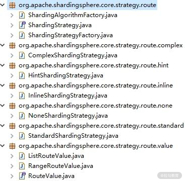
ShardingStrategy 相关类的包结构
而所有的 ShardingAlgorithm 相关类则位于 sharding-core-api 工程的 org.apache.shardingsphere.api.sharding 包下：

ShardingAlgorithm 相关类的包结构
我们在前面已经提到过 ShardingStrategy 的创建依赖于 ShardingStrategyConfiguration，ShardingSphere 也提供了一个 ShardingStrategyFactory 工厂类用于创建各种具体的 ShardingStrategy：
public final class ShardingStrategyFactory {
public static ShardingStrategy newInstance(final ShardingStrategyConfiguration shardingStrategyConfig) {
if (shardingStrategyConfig instanceof StandardShardingStrategyConfiguration) {
return new StandardShardingStrategy((StandardShardingStrategyConfiguration) shardingStrategyConfig);
}
if (shardingStrategyConfig instanceof InlineShardingStrategyConfiguration) {
return new InlineShardingStrategy((InlineShardingStrategyConfiguration) shardingStrategyConfig);
}
if (shardingStrategyConfig instanceof ComplexShardingStrategyConfiguration) {
return new ComplexShardingStrategy((ComplexShardingStrategyConfiguration) shardingStrategyConfig);
}
if (shardingStrategyConfig instanceof HintShardingStrategyConfiguration) {
return new HintShardingStrategy((HintShardingStrategyConfiguration) shardingStrategyConfig);
}
return new NoneShardingStrategy();
}
}
而这里用到的各种 ShardingStrategyConfiguration 也都位于 sharding-core-api 工程的org.apache.shardingsphere.api.sharding.strategy 包下：

ShardingStrategyConfiguration 相关类的包结构
这样，通过对路由引擎的介绍，我们又接触到了一大批 ShardingSphere 中的源代码。
至此，关于 ShardingSphere 路由引擎部分的内容基本都介绍完毕。作为总结，我们在《17 | 路由引擎：如何理解分片路由核心类 ShardingRouter 的运作机制？》中所给出的时序图中添加了 ShardingStrategy 和 ShardingAlgorithm 部分的内容，如下所示：
从源码解析到日常开发
在我们设计软件系统的过程中，面对复杂业务场景时，职责分离始终是需要考虑的一个设计点。ShardingSphere 对于分片策略的设计和实现很好地印证了这一观点。
分片策略在 ShardingSphere 中实际上是一个比较复杂的概念，但通过将分片的具体算法分离出去并提炼 ShardingAlgorithm 接口，并构建 ShardingStrategy 和 ShardingAlgorithm 之间一对多的灵活关联关系，我们可以更好地把握整个分片策略体系的类层结构，这种职责分离机制同样可以应用与日常开发过程中。
小结与预告
承接上一课时的内容，今天我们全面介绍了 ShardingSphere 中的五大分片策略和四种分片算法以及它们之间的组合关系。

ShardingSphere 路由引擎中执行路由的过程正是依赖于这些分片策略和分片算法的功能特性。当然，作为一款具有高扩展性的开源框架，我们也可以基于自身的业务需求，实现特定的分片算法并嵌入到具体的分片策略中。
这里给你留一道思考题：ShardingSphere 中分片策略与分片算法之间是如何协作的？ 欢迎你在留言区与大家讨论，我将一一点评解答。
在路由引擎的基础上，下一课时将进入 ShardingSphere 分片引擎的另一个核心阶段，即改写引擎。
20 改写引擎：如何理解装饰器模式下的 SQL 改写实现机制？
回想在“17 | 路由引擎：如何理解分片路由核心类 ShardingRouter 的运作机制？”课时中，我们在 BaseShardingEngine 的 Shard 方法中看到了 ShardingSphere 中另一个重要的概念，即 SQL 改写（Rewrite）。
SQL 改写在分库分表框架中通常位于路由之后，也是整个 SQL 执行流程中的重要环节，因为开发人员是面向逻辑库与逻辑表所书写的 SQL，并不能够直接在真实的数据库中执行，SQL 改写，用于将逻辑 SQL 改写为在真实数据库中可以正确执行的 SQL。
事实上，我们已经在前面的案例中看到了 SQL 改写的应用场景，这个场景就是分布式主键的自动生成过程。在关系型数据库中，自增主键是常见的功能特性，而对于 ShardingSphere 而言，这也是 SQL 改写的典型应用场景。
今天，我们就将基于自增主键这一场景来探讨 ShardingSphere 中 SQL 改写的实现过程。
ShardingSphere 改写引擎基本结构
让我们先来看一下 BaseShardingEngine 中，用于执行改写逻辑的 rewriteAndConvert 方法：
private Collection<RouteUnit> rewriteAndConvert(final String sql, final List<Object> parameters, final SQLRouteResult sqlRouteResult) {
//构建 SQLRewriteContext
SQLRewriteContext sqlRewriteContext = new SQLRewriteContext(metaData.getRelationMetas(), sqlRouteResult.getSqlStatementContext(), sql, parameters);
//构建 ShardingSQLRewriteContextDecorator 对 SQLRewriteContext 进行装饰
new ShardingSQLRewriteContextDecorator(shardingRule, sqlRouteResult).decorate(sqlRewriteContext);
//判断是否根据数据脱敏列进行查询
boolean isQueryWithCipherColumn = shardingProperties.<Boolean>getValue(ShardingPropertiesConstant.QUERY_WITH_CIPHER_COLUMN);
//构建 EncryptSQLRewriteContextDecorator 对 SQLRewriteContext 进行装饰
new EncryptSQLRewriteContextDecorator(shardingRule.getEncryptRule(), isQueryWithCipherColumn).decorate(sqlRewriteContext);
//生成 SQLTokens
sqlRewriteContext.generateSQLTokens();
Collection<RouteUnit> result = new LinkedHashSet<>();
for (RoutingUnit each : sqlRouteResult.getRoutingResult().getRoutingUnits()) {
//构建 ShardingSQLRewriteEngine
ShardingSQLRewriteEngine sqlRewriteEngine = new ShardingSQLRewriteEngine(shardingRule, sqlRouteResult.getShardingConditions(), each);
//执行改写
SQLRewriteResult sqlRewriteResult = sqlRewriteEngine.rewrite(sqlRewriteContext);
//保存改写结果
result.add(new RouteUnit(each.getDataSourceName(), new SQLUnit(sqlRewriteResult.getSql(), sqlRewriteResult.getParameters())));
}
return result;
}
这段代码虽然内容不多，但却完整描述了实现 SQL 改写的整体流程，我们对核心代码都添加了注释，这里面涉及的核心类也很多，值得我们进行深入分析，相关核心类的整体结构如下：
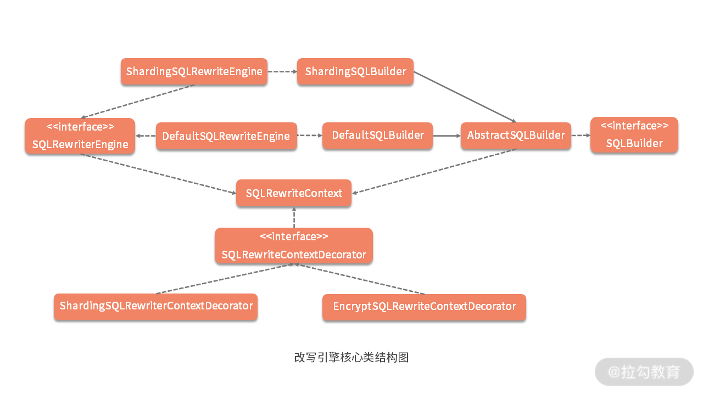
可以看到在整个类图中，SQLRewriteContext 处于中间位置，改写引擎 SQLRewriteEngine 和装饰器 SQLRewriteContextDecorator 都依赖于它。
所以接下来，让我们先来看一下这个 SQLRewriteContext，并基于自增主键功能引出 SQL 改写引擎的基础组件 SQLToken。
从自增主键功能看改写引擎中的核心类
1. SQLRewriteContext
从命名上讲，与 SQLStatementContext 类似，SQLRewriteContext 也是一个上下文对象，让我们来看 SQLRewriteContext 中的变量定义：
//数据表和列的关系元数据
private final RelationMetas relationMetas;
//SQLStatement 上下文
private final SQLStatementContext sqlStatementContext;
//原始SQL
private final String sql;
//参数列表
private final List<Object> parameters;
//SQLToken 列表
private final List<SQLToken> sqlTokens = new LinkedList<>();
//参数构建器
private final ParameterBuilder parameterBuilder;
//SQLToken 生成器
private final SQLTokenGenerators sqlTokenGenerators = new SQLTokenGenerators();
在这里，我们看到了前面已经介绍的 SQLStatementContext，也看到了新的 SQLToken 和 SQLTokenGenerators。随着今天内容的演进，这些对象都会逐一进行介绍，这里我们先明确 SQLRewriteContext 中保存着用于 SQL 改写的各种相关信息。
2. SQLToken
接下来，我们来看一下 SQLToken 对象，该对象在改写引擎中重要性很高，SQLRewriteEngine 正是基于 SQLToken 实现了 SQL 改写，SQLToken 类的定义如下所示：
@RequiredArgsConstructor
@Getter
public abstract class SQLToken implements Comparable<SQLToken> {
private final int startIndex;
@Override
public final int compareTo(final SQLToken sqlToken) {
return startIndex - sqlToken.getStartIndex();
}
}
SQLToken 实际上是一个抽象类，在 ShardingSphere 中，存在了一大批 SQLToken 的子类。这些 SQLToken 多数跟 SQL 改写相关（这部分类的包名中包含 rewrite）；而有些在改写的基础上还与后面要讲到的数据脱敏功能相关（这部分类包名中还包含着 encrypt）。
数据脱敏也是 ShardingSphere 提供的一项非常实用的功能，我们在讲到“模块六：ShardingSphere 源码解析之治理与集成”时会有专题对其进行介绍。
同时，部分 SQLToken 位于 shardingsphere-rewrite-engine 工程中，而有些则位于 sharding-core-rewrite 工程中，这点也需要注意。
结合 SQL 改写的常见场景，很多 SQLToken 的含义可以从字面意思上直接理解。例如，对 INSERT 语句而言，如果使用数据库自增主键，是不需要写入主键字段的，但数据库的自增主键无法满足分布式场景下的主键唯一性，因此 ShardingSphere 提供了分布式自增主键的生成策略，能够自动地替换数据库现有的自增主键。
举例说明，我们案例中 health_record 表的主键是 record_id，假定原始的 SQL 为：
INSERT INTO health_record (user_id, level_id, remark) values (1, 1, "remark1")
可以看到，上述 SQL 中并未包含自增主键，需要数据库自行填充，在 ShardingSphere 中配置了自增主键后，SQL 将被自动改写为：
INSERT INTO health_record (record_id, user_id, level_id, remark) values ("471698773731577856", 1, 1, "Remark1")
显然，改写后的 SQL 将在 INSERT 语句中增加主键列名称，以及自动生成的自增主键值。
从命名上看，GeneratedKeyInsertColumnToken 对应上述的自动主键填充的场景，这实际上属于常见的一种 SQL 改写策略，也就是补列，GeneratedKeyInsertColumnToken 的实现如下所示：
public final class GeneratedKeyInsertColumnToken extends SQLToken implements Attachable {
private final String column;
public GeneratedKeyInsertColumnToken(final int startIndex, final String column) {
super(startIndex);
this.column = column;
}
@Override
public String toString() {
return String.format(", %s", column);
}
}
注意到这里多了一个 column 变量用于指定主键的所在列。我们再来跟踪 GeneratedKeyInsertColumnToken 的构造函数调用情况，发现这个类是通过 GeneratedKeyInsertColumnTokenGenerator 创建出来的。
接下来，让我们一起看看 TokenGenerator。
3. TokenGenerator
顾名思义，TokenGenerator 的作用是专门负责生成具体的 Token，该接口定义如下：
public interface SQLTokenGenerator {
//判断是否要生成 SQLToken
boolean isGenerateSQLToken(SQLStatementContext sqlStatementContext);
}
该接口还有两个子接口，分别是负责生成单个 SQLToken 的 OptionalSQLTokenGenerator 和负责生成批量 SQLToken 的 CollectionSQLTokenGenerator：
public interface OptionalSQLTokenGenerator extends SQLTokenGenerator {
//生成单个 SQLToken
SQLToken generateSQLToken(SQLStatementContext sqlStatementContext);
}
public interface CollectionSQLTokenGenerator extends SQLTokenGenerator {
//生成批量 SQLToken
Collection<? extends SQLToken> generateSQLTokens(SQLStatementContext sqlStatementContext);
}
在 ShardingSphere，和 SQLToken 一样，TokenGenerator 的类层结构也比较复杂。对于 GeneratedKeyInsertColumnTokenGenerator 而言，它还有一个抽象的基类，即如下所示的 BaseGeneratedKeyTokenGenerator：
public abstract class BaseGeneratedKeyTokenGenerator implements OptionalSQLTokenGenerator, SQLRouteResultAware {
//是否生成 SQLToken
protected abstract boolean isGenerateSQLToken(InsertStatement insertStatement);
//生成 SQLToken
protected abstract SQLToken generateSQLToken(SQLStatementContext sqlStatementContext, GeneratedKey generatedKey);
…
}
这个抽象类留下了两个模板方法 isGenerateSQLToken 和 generateSQLToken，交由子类进行实现，在 GeneratedKeyInsertColumnTokenGenerator 中提供了这两个方法的实现过程：
public final class GeneratedKeyInsertColumnTokenGenerator extends BaseGeneratedKeyTokenGenerator {
@Override
protected boolean isGenerateSQLToken(final InsertStatement insertStatement) {
Optional<InsertColumnsSegment> sqlSegment = insertStatement.findSQLSegment(InsertColumnsSegment.class);
return sqlSegment.isPresent() && !sqlSegment.get().getColumns().isEmpty();
}
@Override
protected GeneratedKeyInsertColumnToken generateSQLToken(final SQLStatementContext sqlStatementContext, final GeneratedKey generatedKey) {
Optional<InsertColumnsSegment> sqlSegment = sqlStatementContext.getSqlStatement().findSQLSegment(InsertColumnsSegment.class);
Preconditions.checkState(sqlSegment.isPresent());
//构建 GeneratedKeyInsertColumnToken
return new GeneratedKeyInsertColumnToken(sqlSegment.get().getStopIndex(), generatedKey.getColumnName());
}
}
我们看到在上述 generateSQLToken 方法中，通过利用在 SQL 解析引擎中获取的 InsertColumnsSegment 以及从用于生成分布式主键的 GeneratedKey 中获取对应的主键列，我们就可以构建一个 GeneratedKeyInsertColumnToken。
装饰器 SQLRewriteContextDecorator
现在，既然已经获取了 SQLToken，让我们再次回到前面提到的 SQLRewriteContext。我们知道 SQLRewriteContext 是一个上下文对象，保存着与 SQL 改写相关的很多数据信息，同时对于这些信息，其构建过程会根据不同的应用场景而有所不同。基于这些应用场景，ShardingSphere 的改写引擎提供了 SQLRewriteContextDecorator 接口：
public interface SQLRewriteContextDecorator {
//对SQLRewriteContext 执行装饰
void decorate(SQLRewriteContext sqlRewriteContext);
}
顾名思义，SQLRewriteContextDecorator 是一种装饰器模式的具体应用，在 ShardingSphere 中只存在两种具体的 SQLRewriteContextDecorator：一种是用于分片处理的 ShardingSQLRewriteContextDecorator，一种是用于数据脱敏的 EncryptSQLRewriteContextDecorator，我们将在“30 | 数据脱敏：如何基于改写引擎实现低侵入性数据脱敏方案？”中进行详细介绍。今天，我们关注的是前一种 ShardingSQLRewriteContextDecorator 的实现过程：
public final class ShardingSQLRewriteContextDecorator implements SQLRewriteContextDecorator {
private final ShardingRule shardingRule;
private final SQLRouteResult sqlRouteResult;
@Override
public void decorate(final SQLRewriteContext sqlRewriteContext) {
//参数改写
for (ParameterRewriter each : new ShardingParameterRewriterBuilder(shardingRule, sqlRouteResult).getParameterRewriters(sqlRewriteContext.getRelationMetas())) {
if (!sqlRewriteContext.getParameters().isEmpty() && each.isNeedRewrite(sqlRewriteContext.getSqlStatementContext())) {
each.rewrite(sqlRewriteContext.getParameterBuilder(), sqlRewriteContext.getSqlStatementContext(), sqlRewriteContext.getParameters());
}
}
//SQLTokenGenerators 初始化
sqlRewriteContext.addSQLTokenGenerators(new ShardingTokenGenerateBuilder(shardingRule, sqlRouteResult).getSQLTokenGenerators());
}
}
这段代码不长，包含了两部分内容：一个是参数改写，另一个是 SQLTokenGenerators 初始化，下面我将分别讲解：
1. 参数改写
参数改写部分又引入了几个新类。首当其冲的是 ParameterRewriter 以及构建它的 ParameterRewriterBuilder。
（1）ParameterRewriter
我们先来看 ParameterRewriter 的定义：
public interface ParameterRewriter {
//判断是否需要改写
boolean isNeedRewrite(SQLStatementContext sqlStatementContext);
//执行参数改写
void rewrite(ParameterBuilder parameterBuilder, SQLStatementContext sqlStatementContext, List<Object> parameters);
}
基于自增主键功能，这里以 ShardingGeneratedKeyInsertValueParameterRewriter 为例看一下 ParameterRewriter 的实现方式，它的 isNeedRewrite 方法如下所示：
@Override
public boolean isNeedRewrite(final SQLStatementContext sqlStatementContext) {
return sqlStatementContext instanceof InsertSQLStatementContext && sqlRouteResult.getGeneratedKey().isPresent() && sqlRouteResult.getGeneratedKey().get().isGenerated();
}
显然，输入的 SQL 应该是一种 InsertSQLStatement，并且只有在路由结果已经包含了 GeneratedKey 的情况下才执行这种改写。
（2）ParameterRewriterBuilder
在介绍 rewrite 方法之前，我们先来理解 ParameterBuilder 的概念，ParameterBuilder 是一种参数构建器：
public interface ParameterBuilder {
List<Object> getParameters();
}
ParameterBuilder 有两个实现类：分别是 StandardParameterBuilder 和 GroupedParameterBuilder。其中，GroupedParameterBuilder 保存着 StandardParameterBuilder 的一个集合，只适用于 InsertSQLStatement。
了解了这层关系之后，我们再来看 ShardingGeneratedKeyInsertValueParameterRewriter 的 rewrite 方法：
@Override
public void rewrite(final ParameterBuilder parameterBuilder, final SQLStatementContext sqlStatementContext, final List<Object> parameters) {
Preconditions.checkState(sqlRouteResult.getGeneratedKey().isPresent());
((GroupedParameterBuilder) parameterBuilder).setDerivedColumnName(sqlRouteResult.getGeneratedKey().get().getColumnName());
Iterator<Comparable<?>> generatedValues = sqlRouteResult.getGeneratedKey().get().getGeneratedValues().descendingIterator();
int count = 0;
int parametersCount = 0;
for (List<Object> each : ((InsertSQLStatementContext) sqlStatementContext).getGroupedParameters()) {
parametersCount += ((InsertSQLStatementContext) sqlStatementContext).getInsertValueContexts().get(count).getParametersCount();
Comparable<?> generatedValue = generatedValues.next();
if (!each.isEmpty()) {
//使用 GroupedParameterBuilder 进行补列和设置参数
((GroupedParameterBuilder) parameterBuilder).getParameterBuilders().get(count).addAddedParameters(parametersCount, Lists.<Object>newArrayList(generatedValue));
}
count++;
}
}
因为这个 ParameterRewriter 面向 InsertSQLStatement，所以这里用到了 GroupedParameterBuilder，并通过 SQLRouteResult 获取 GeneratedKey。我们设置了 GroupedParameterBuilder 中的 DerivedColumnName 为 GeneratedKey 的主键 Column，并通过一个循环添加了对应的 Index 和 Parameter，也就是完成了所需的补列操作。
这部分的操作实际上可以与 GeneratedKey 的生成过程结合起来一起看以便加深理解，在 [“14 | 分布式主键：ShardingSphere 中有哪些分布式主键实现方式？”]课时中提到的 createGeneratedKey 方法也是通过一个循环对 GeneratedKey 进行赋值。
private static GeneratedKey createGeneratedKey(final ShardingRule shardingRule, final InsertStatement insertStatement, final String generateKeyColumnName) {
GeneratedKey result = new GeneratedKey(generateKeyColumnName, true);
for (int i = 0; i < insertStatement.getValueListCount(); i++) {
result.getGeneratedValues().add(shardingRule.generateKey(insertStatement.getTable().getTableName()));
}
return result;
}
2. SQLTokenGenerator 初始化
上文内容我们关注 ShardingSQLRewriteContextDecorator 中使用 ParameterRewriter 进行参数改写的过程，这是 decorate 方法中的第一部分内容。
接下来我们继续讲解该方法的第二部分内容，即 为 SQLRewriteContext 添加 SQLTokenGenerator：
//SQLTokenGenerators 初始化
sqlRewriteContext.addSQLTokenGenerators(new ShardingTokenGenerateBuilder(shardingRule, sqlRouteResult).getSQLTokenGenerators());
这句代码关注于 SQLTokenGenerator 的创建，所以出现了一个ShardingTokenGenerateBuilder：
public interface SQLTokenGeneratorBuilder {
//获取 SQLTokenGenerator 列表
Collection<SQLTokenGenerator> getSQLTokenGenerators();
}
在 SQLTokenGeneratorBuilder 的实现类 ShardingTokenGenerateBuilder 中，可以看到内置了很多 TokenGenerator，包含我们在前面提到过的 GeneratedKeyInsertColumnTokenGenerator：
private Collection<SQLTokenGenerator> buildSQLTokenGenerators() {
Collection<SQLTokenGenerator> result = new LinkedList<>();
addSQLTokenGenerator(result, new TableTokenGenerator());
…
addSQLTokenGenerator(result, new OffsetTokenGenerator());
addSQLTokenGenerator(result, new RowCountTokenGenerator());
addSQLTokenGenerator(result, new GeneratedKeyInsertColumnTokenGenerator());
…
return result;
}
改写引擎 SQLRewriteEngine
在 ShardingSphere 中，SQLRewriteEngine 接口代表了改写引擎的入口：
public interface SQLRewriteEngine {
//基于 SQLRewriteContext 执行 SQL 改写
SQLRewriteResult rewrite(SQLRewriteContext sqlRewriteContext);
}
SQLRewriteEngine 接口只有一个方法，即根据输入的 SQLRewriteContext 返回一个 SQLRewriteResult 对象。我们通过前面的介绍已经了解到，可以通过装饰器类对 SQLRewriteContext 进行装饰，从而满足不同场景的需要。
注意到 SQLRewriteEngine 接口只有两个实现类：分别是 DefaultSQLRewriteEngine 和 ShardingSQLRewriteEngine。我们重点关注 ShardingSQLRewriteEngine，但在介绍这个改写引擎类之前，我们先要介绍一下 SQLBuilder 接口，从定义上可以看出 SQLBuilder 的目的就是构建最终可以执行的 SQL 语句：
public interface SQLBuilder {
//生成 SQL
String toSQL();
}
SQLBuilder 接口有一个抽象的实现类 AbstractSQLBuilder，它的 toSQL 方法如下所示：
@Override
public final String toSQL() {
if (context.getSqlTokens().isEmpty()) {
return context.getSql();
}
Collections.sort(context.getSqlTokens());
StringBuilder result = new StringBuilder();
result.append(context.getSql().substring(0, context.getSqlTokens().get(0).getStartIndex()));
//根据 SQLToken 拼装目标 SQL
for (SQLToken each : context.getSqlTokens()) {
result.append(getSQLTokenText(each));
result.append(getConjunctionText(each));
}
return result.toString();
}
可以看到，如果 SQLRewriteContext 的 sqlTokens 为空，就直接返回保存在 SQLRewriteContext 中的最终 SQL；反之，会构建一个保存 SQL的StringBuilder，然后依次添加每个 SQLTokenText 以及连接词 ConjunctionText，从而拼装成一个完整的 SQL 语句。注意到，这里获取 SQLTokenText 的方法是一个模板方法，需要 AbstractSQLBuilder 的子类进行实现：
//获取 SQLToken 文本
protected abstract String getSQLTokenText(SQLToken sqlToken);
作为 AbstractSQLBuilder的一个实现类，ShardingSQLBuilder 的 getSQLTokenText 方法就包含了 SQL 改写的一些场景：
@Override
protected String getSQLTokenText(final SQLToken sqlToken) {
if (sqlToken instanceof RoutingUnitAware) {
return ((RoutingUnitAware) sqlToken).toString(routingUnit);
}
if (sqlToken instanceof LogicAndActualTablesAware) {
return ((LogicAndActualTablesAware) sqlToken).toString(getLogicAndActualTables());
}
return sqlToken.toString();
}
对于输入的 SQLToken，这里有两个特殊的处理，即判断是否实现了 RoutingUnitAware 接口或 LogicAndActualTablesAware 接口。我们发现实现 RoutingUnitAware 接口的只有 ShardingInsertValuesToken；而实现 LogicAndActualTablesAware 的则有 IndexToken 和 TableToken 两个 SQLToken。
这里以实现了 LogicAndActualTablesAware 的 TableToken 为例展开讨论。表名改写就是将逻辑表名改写为真实表名的过程，是一个典型的需要对 SQL 进行改写的场景。我们考虑最简单表名改写场景，如果逻辑 SQL 为：
SELECT user_name FROM user WHERE user_id = 1;
那么，这里的逻辑表名为 user。假设我们配置了分片键 user_id，并且 user_id = 1 的情况，将路由至分片表 user_1，那么改写之后的 SQL 应该为：
SELECT user_name FROM user_1 WHERE user_id = 1;
可以看到这里的真实表名应该是 user_1 而不是 user，在用于改写表名的 TableToken 中，它的 toString 如下所示：
@Override
public String toString(final Map<String, String> logicAndActualTables) {
String actualTableName = logicAndActualTables.get(tableName.toLowerCase());
actualTableName = null == actualTableName ? tableName.toLowerCase() : actualTableName;
return Joiner.on("").join(quoteCharacter.getStartDelimiter(), actualTableName, quoteCharacter.getEndDelimiter());
}
这里的逻辑并不复杂，只是根据逻辑表名从 logicAndActualTables 中获取真实表名 actualTableName，然后进行字符串拼装而已。那么这个 logicAndActualTables 是从何而来呢？logicAndActualTables 的构建过程是在 ShardingSQLBuilder 中：
private Map<String, String> getLogicAndActualTables() {
Map<String, String> result = new HashMap<>();
Collection<String> tableNames = getContext().getSqlStatementContext().getTablesContext().getTableNames();
for (TableUnit each : routingUnit.getTableUnits()) {
String logicTableName = each.getLogicTableName().toLowerCase();
result.put(logicTableName, each.getActualTableName());
result.putAll(getLogicAndActualTablesFromBindingTable(routingUnit.getMasterSlaveLogicDataSourceName(), each, tableNames));
}
return result;
}
上述代码实际上也只是做了数据结构的拼装，我们沿着这里的 getLogicAndActualTablesFromBindingTable 方法继续往下看，会发现根据 logicTable 获取 actualTable 的过程实际上是发生在 BindingTableRule 中：
public String getBindingActualTable(final String dataSource, final String logicTable, final String otherActualTable) {
int index = -1;
for (TableRule each : tableRules) {
index = each.findActualTableIndex(dataSource, otherActualTable);
if (-1 != index) {
break;
}
}
if (-1 == index) {
throw new ShardingConfigurationException("Actual table [%s].[%s] is not in table config", dataSource, otherActualTable);
}
for (TableRule each : tableRules) {
if (each.getLogicTable().equals(logicTable.toLowerCase())) {
return each.getActualDataNodes().get(index).getTableName().toLowerCase();
}
}
throw new ShardingConfigurationException("Cannot find binding actual table, data source: %s, logic table: %s, other actual table: %s", dataSource, logicTable, otherActualTable);
}
而 BindingTableRule 又依赖于 TableRule 中保存的 ActualDataNodes 来完成 ActualTableIndex和ActualTable 的计算。回想起我们在案例中配置的分库分表规则，这里再次感受到了以 TableRule 和 BindingTableRule为 代表的各种 Rule 对象在 ShardingSphere 的串联作用：

当 ShardingSQLBuilder 完成 SQL 的构建之后，我们再回到 ShardingSQLRewriteEngine，这个时候我们对它的 rewrite 方法就比较明确了：
@Override
public SQLRewriteResult rewrite(final SQLRewriteContext sqlRewriteContext) {
return new SQLRewriteResult(new ShardingSQLBuilder(sqlRewriteContext, shardingRule, routingUnit).toSQL(), getParameters(sqlRewriteContext.getParameterBuilder()));
}
改写引擎的输出 SQLRewriteResult 对象就包含了最终的 SQL 以及配套的参数列表：
public final class SQLRewriteResult {
private final String sql;
private final List<Object> parameters;
}
讲完 ShardingSQLRewriteEngine 之后，我们最后回到 BaseShardingEngine 的 rewriteAndConvert 方法。现在，该方法中除了 EncryptSQLRewriteContextDecorator 部分的内容涉及数据脱敏功能，其他的部分我们应该都能明白整体的执行流程。该方法最终返回的是一个 RouteUnit 列表，RouteUnit 中又包含了 SQLUnit：
public final class RouteUnit {
//目标数据源名
private final String dataSourceName;
//SQL 单元
private final SQLUnit sqlUnit;
}
public final class SQLUnit {
//目标 SQL
private final String sql;
//参数列表
private final List<Object> parameters;
}
可以看到最终的结果实际上就是目标数据库、目标 SQL 以及相关参数，一旦我们获取了这些信息之后，我们就可以执行一条 SQL 语句。
从源码解析到日常开发
在今天的内容中，我们可以明显感受到装饰器模式的强大作用。装饰器模式允许向一个现有的对象添加新的功能，同时又不改变其结构，这种模式创建了一个装饰类，用来包装原有的类，并在保持类方法签名完整性的前提下，提供了额外的功能。
同时，我们注意到在 ShardingSphere 中，装饰器模式的作用对象是一个 SQLRewriteContext 上下文对象，这是一种值得学习的做法。在日常开发过程中，我们可以把需要根据不同场景进行不同处理的信息存储在一个上下文对象中，然后基于装饰器模式对这些信息进行装饰。两者的无缝集成，可以在很多应用场景下，完成基于子类实现方式所不能完成的功能，从而为对象动态添加一些额外的职责。
小结与预告
今天，我们花了一个课时的时间完整介绍了 ShardingSphere 中改写引擎的基本结构和各个核心类。改写引擎在设计上使用了装饰器模式，完成了从逻辑 SQL 到目标 SQL 的改写过程，我们也针对自增主键和表名改写这两个典型的应用场景，给出了对应的实现原理和源码分析。
请注意，改写引擎在 ShardingSphere 中不仅仅只用于这些场景，在后面的课程“30 | 数据脱敏：如何基于改写引擎实现低侵入性数据脱敏方案？”中，我们还会看到它在数据脱敏等场景下的应用。
最后给你留一道思考题：ShardingSphere 中，如何通过装饰器模式对 SQL 改写的上下文进行装饰？欢迎你在留言区与大家讨论，我将逐一点评解答。
现在，我们已经针对输入的逻辑 SQL 通过改写引擎获取了目标 SQL，有了目标 SQL 接下来就可以执行 SQL 了，这就是下一课时中要开始介绍的 ShardingSphere 执行引擎要做的事情。
21 执行引擎：分片环境下 SQL 执行的整体流程应该如何进行抽象？
从今天开始，我们将开始一个全新的主题，即 ShardingSphere 的执行引擎（ExecuteEngine）。一旦我们获取了从路由引擎和改写引擎中所生成的 SQL，执行引擎就会完成这些SQL在具体数据库中的执行。
执行引擎是 ShardingSphere 的核心模块，接下来我们将通过三个课时来对其进行全面介绍。今天，我们先讨论在分片环境下，ShardingSphere 对 SQL 执行的整体流程的抽象过程，后两个课时会向你讲解“如何把握 ShardingSphere 中的 Executor 执行模型”。
ShardingSphere 执行引擎总体结构
在讲解具体的源代码之前，我们从《17 | 路由引擎：如何理解分片路由核心类 ShardingRouter 的运作机制？》中的 PreparedQueryShardingEngine 和 SimpleQueryShardingEngine 这两个类出发，看看在 ShardingSphere 中使用它们的入口。
我们在ShardingStatement类中找到了如下所示的一个 shard 方法，这里用到了 SimpleQueryShardingEngine：
private void shard(final String sql) {
//从 Connection 中获取 ShardingRuntimeContext 上下文
ShardingRuntimeContext runtimeContext = connection.getRuntimeContext();
//创建 SimpleQueryShardingEngine
SimpleQueryShardingEngine shardingEngine = new SimpleQueryShardingEngine(runtimeContext.getRule(), runtimeContext.getProps(), runtimeContext.getMetaData(), runtimeContext.getParseEngine());
//执行分片路由并获取路由结果
sqlRouteResult = shardingEngine.shard(sql, Collections.emptyList());
}
而在ShardingPreparedStatement中也存在一个类似的 shard 方法。
从设计模式上讲，ShardingStatement 和 ShardingPreparedStatement 实际上就是很典型的外观类，它们把与 SQL 路由和执行的入口类都整合在一起。
通过阅读源码，我们不难发现在 ShardingStatement 中存在一个 StatementExecutor；而在 ShardingPreparedStatement 中也存在 PreparedStatementExecutor 和 BatchPreparedStatementExecutor，这些类都以 Executor 结尾，显然这就是我们要找的 SQL 执行引擎的入口类。
我们发现上述三个 Executor 都位于 sharding-jdbc-core 工程中。
此外，还有一个与 sharding-core-route 和 sharding-core-rewrite 并列的sharding-core-execute 工程，从命名上看，这个工程应该也与执行引擎相关。果然，我们在这个工程中找到了ShardingExecuteEngine 类，这是分片执行引擎的入口类。
然后，我们又分别找到了 SQLExecuteTemplate 和 SQLExecutePrepareTemplate 类，这两个是典型的SQL 执行模板类。
根据到目前为止对 ShardingSphere 组件设计和代码分层风格的了解，可以想象，在层次关系上，ShardingExecuteEngine 是底层对象，SQLExecuteTemplate 应该依赖于 ShardingExecuteEngine；而 StatementExecutor、PreparedStatementExecutor 和 BatchPreparedStatementExecutor 属于上层对象，应该依赖于 SQLExecuteTemplate。我们通过简单阅读这些核心类之前的引用关系，印证了这种猜想。
基于以上分析，我们可以给出 SQL 执行引擎的整体结构图（如下图），其中横线以上部分位于 sharding-core-execute 工程，属于底层组件；而直线以下部分位于 sharding-jdbc-core 中，属于上层组件。这种分析源码的能力也是《12 | 从应用到原理：如何高效阅读 ShardingSphere 源码？》中提到的“基于分包设计原则阅读源码”的一种具体表现：

ShardingSphere 执行引擎核心类的分层结构图
另一方面，我们在上图中还看到 SQLExecuteCallback 和 SQLExecutePrepareCallback，显然，它们的作用是完成 SQL 执行过程中的回调处理，这也是一种非常典型的扩展性处理方式。
ShardingExecuteEngine
按照惯例，我们还是从位于底层的 ShardingExecuteEngine 开始切入。与路由和改写引擎不同，ShardingExecuteEngine 是 ShardingSphere 中唯一的一个执行引擎，所以直接设计为一个类而非接口，这个类包含了如下的变量和构造函数：
private final ShardingExecutorService shardingExecutorService;
private ListeningExecutorService executorService;
public ShardingExecuteEngine(final int executorSize) {
shardingExecutorService = new ShardingExecutorService(executorSize);
executorService = shardingExecutorService.getExecutorService();
}
1.ExecutorService
如上所示，我们可以看出，这里有两个以 ExecutorService 结尾的变量，显然从命名上不难看出它们都是执行器服务，与 JDK 中的 java.util.concurrent.ExecutorService 类似。其中ListeningExecutorService来自 Google 的工具包 Guava；而ShardingExecutorService是 ShardingSphere 中的自定义类，包含了 ListeningExecutorService 的构建过程。接下来我们对两者分别展开讲述。
- ShardingExecutorService
我们发现 ShardingExecutorService 包含了一个 JDK 的 ExecutorService，它的创建过程如下，这里用到的 newCachedThreadPool 和 newFixedThreadPool 都是 JDK 提供的常见方法：
private ExecutorService getExecutorService(final int executorSize, final String nameFormat) {
ThreadFactory shardingThreadFactory = ShardingThreadFactoryBuilder.build(nameFormat);
return 0 == executorSize ? Executors.newCachedThreadPool(shardingThreadFactory) : Executors.newFixedThreadPool(executorSize, shardingThreadFactory);
}
- ListeningExecutorService
由于 JDK 中普通线程池返回的 Future 功能比较单一，所以 Guava 提供了 ListeningExecutorService 对其进行装饰。我们可以通过 ListeningExecutorService 对 ExecutorService 做一层包装，返回一个 ListenableFuture 实例，而 ListenableFuture 又是继承自 Future，扩展了一个 addListener 监听方法，这样当任务执行完成就会主动回调该方法。ListeningExecutorService 的构建过程如下所示：
executorService = MoreExecutors.listeningDecorator(getExecutorService(executorSize, nameFormat));
oreExecutors.addDelayedShutdownHook(executorService, 60, TimeUnit.SECONDS);
明确了执行器 ExecutorService 之后，我们回到 ShardingExecuteEngine 类，该类以 groupExecute 方法为入口，这个方法参数比较多，也单独都列了一下：
/**
* @param inputGroups：输入组
* @param firstCallback：第一次分片执行回调
* @param callback：分片执行回调
* @param serial：是否使用多线程进行执行
* @param <I>：输入值类型
* @param <O>：返回值类型
* @return 执行结果
* @throws SQLException：抛出异常
*/
public <I, O> List<O> groupExecute(
final Collection<ShardingExecuteGroup<I>> inputGroups, final ShardingGroupExecuteCallback<I, O> firstCallback, final ShardingGroupExecuteCallback<I, O> callback, final boolean serial)
throws SQLException {
if (inputGroups.isEmpty()) {
return Collections.emptyList();
}
return serial ? serialExecute(inputGroups, firstCallback, callback) : parallelExecute(inputGroups, firstCallback, callback);
}
这里的分片执行组 ShardingExecuteGroup 对象实际上就是一个包含输入信息的列表，而上述 groupExecute 方法的输入是一个 ShardingExecuteGroup 的集合。通过判断输入参数 serial 是否为 true，上述代码流程分别转向了serialExecute 和 parallelExecute 这两个代码分支，接下来我来分别讲解一下这两个代码分支。
2.SerialExecute
我们先来看 serialExecute 方法，顾名思义，该方法用于串行执行的场景：
private <I, O> List<O> serialExecute(final Collection<ShardingExecuteGroup<I>> inputGroups, final ShardingGroupExecuteCallback<I, O> firstCallback,
final ShardingGroupExecuteCallback<I, O> callback) throws SQLException {
Iterator<ShardingExecuteGroup<I>> inputGroupsIterator = inputGroups.iterator();
//获取第一个输入的ShardingExecuteGroup
ShardingExecuteGroup<I> firstInputs = inputGroupsIterator.next();
//通过第一个回调 firstCallback 完成同步执行的 syncGroupExecute
List<O> result = new LinkedList<>(syncGroupExecute(firstInputs, null == firstCallback ? callback : firstCallback));
//对剩下的 ShardingExecuteGroup，通过回调 callback 逐个同步执行 syncGroupExecute
for (ShardingExecuteGroup<I> each : Lists.newArrayList(inputGroupsIterator)) {
result.addAll(syncGroupExecute(each, callback));
}
return result;
}
上述代码的基本流程是获取第一个输入的 ShardingExecuteGroup，通过第一个回调 firstCallback 完成同步执行的 syncGroupExecute 方法。然后对剩下的 ShardingExecuteGroup，通过回调 callback 逐个执行 syncGroupExecute 方法。这里的 syncGroupExecute 方法如下所示：
private <I, O> Collection<O> syncGroupExecute(final ShardingExecuteGroup<I> executeGroup, final ShardingGroupExecuteCallback<I, O> callback) throws SQLException {
return callback.execute(executeGroup.getInputs(), true, ShardingExecuteDataMap.getDataMap());
}
我们看到同步执行的过程实际上是交给了 ShardingGroupExecuteCallback 回调接口：
public interface ShardingGroupExecuteCallback<I, O> {
Collection<O> execute(Collection<I> inputs, boolean isTrunkThread, Map<String, Object> shardingExecuteDataMap) throws SQLException;
}
这里的 ShardingExecuteDataMap 相当于一个用于 SQL 执行的数据字典，这些数据字典保存在 ThreadLocal 中，从而确保了线程安全。我们可以根据当前的执行线程获取对应的 DataMap 对象。
3.ParallelExecute
这样，关于串行执行的流程就介绍完了，接下来我们来看并行执行的 parallelExecute 方法：
private <I, O> List<O> parallelExecute(final Collection<ShardingExecuteGroup<I>> inputGroups, final ShardingGroupExecuteCallback<I, O> firstCallback,
final ShardingGroupExecuteCallback<I, O> callback) throws SQLException {
Iterator<ShardingExecuteGroup<I>> inputGroupsIterator = inputGroups.iterator();
//获取第一个输入的 ShardingExecuteGroup
ShardingExecuteGroup<I> firstInputs = inputGroupsIterator.next();
//通过 asyncGroupExecute 执行异步回调
Collection<ListenableFuture<Collection<O>>> restResultFutures = asyncGroupExecute(Lists.newArrayList(inputGroupsIterator), callback);
//获取执行结果并组装返回
return getGroupResults(syncGroupExecute(firstInputs, null == firstCallback ? callback : firstCallback), restResultFutures);
}
注意到这里有一个异步执行方法 asyncGroupExecute，传入参数是一个 ShardingExecuteGroup 列表：
private <I, O> Collection<ListenableFuture<Collection<O>>> asyncGroupExecute(final List<ShardingExecuteGroup<I>> inputGroups, final ShardingGroupExecuteCallback<I, O> callback) {
Collection<ListenableFuture<Collection<O>>> result = new LinkedList<>();
for (ShardingExecuteGroup<I> each : inputGroups) {
result.add(asyncGroupExecute(each, callback));
}
return result;
}
这个方法中针对每个传入的 ShardingExecuteGroup，再次调用一个重载的异步 asyncGroupExecute 方法：
private <I, O> ListenableFuture<Collection<O>> asyncGroupExecute(final ShardingExecuteGroup<I> inputGroup, final ShardingGroupExecuteCallback<I, O> callback) {
final Map<String, Object> dataMap = ShardingExecuteDataMap.getDataMap();
return executorService.submit(new Callable<Collection<O>>() {
@Override
public Collection<O> call() throws SQLException {
return callback.execute(inputGroup.getInputs(), false, dataMap);
}
});
}
显然，作为异步执行方法，这里就会使用 Guava 的 ListeningExecutorService 来提交一个异步执行的任务并返回一个 ListenableFuture，而这个异步执行的任务就是具体的回调。
最后，我们来看 parallelExecute 方法的最后一句，即调用 getGroupResults 方法获取执行结果：
private <O> List<O> getGroupResults(final Collection<O> firstResults, final Collection<ListenableFuture<Collection<O>>> restFutures) throws SQLException {
List<O> result = new LinkedList<>(firstResults);
for (ListenableFuture<Collection<O>> each : restFutures) {
try {
result.addAll(each.get());
} catch (final InterruptedException | ExecutionException ex) {
return throwException(ex);
}
}
return result;
}
熟悉 Future 用法的同学对上述代码应该不会陌生，我们遍历 ListenableFuture，然后调动它的 get 方法同步等待返回结果，最后当所有的结果都获取到之后组装成一个结果列表并返回，这种写法在使用 Future 时非常常见。
我们回过头来看，无论是 serialExecute 方法还是 parallelExecute 方法，都会从 ShardingExecuteGroup 中获取第一个 firstInputs 元素并进行执行，然后剩下的再进行同步或异步执行。ShardingSphere 这样使用线程的背后有其独特的设计思路。考虑到当前线程同样也是一种可用资源，让第一个任务由当前线程进行执行就可以充分利用当前线程，从而最大化线程的利用率。
至此，关于 ShardingExecuteEngine 类的介绍就告一段落。作为执行引擎，ShardingExecuteEngine 所做的事情就是提供一个多线程的执行环境。在系统设计上，这也是在日常开发过程中可以参考的一个技巧。我们可以设计并实现一个多线程执行环境，这个环境不需要完成具体的业务操作，而只需要负责执行传入的回调函数。ShardingSphere 中的ShardingExecuteEngine 就是提供了这样一种环境，同样的实现方式在其他诸如 Spring 等开源框架中也都可以看到。
接下来，就让我们来看一下 ShardingSphere 如何通过回调完成 SQL 的真正执行。
回调接口 ShardingGroupExecuteCallback
回调接口 ShardingGroupExecuteCallback 的定义非常简单：
public interface ShardingGroupExecuteCallback<I, O> {
Collection<O> execute(Collection<I> inputs, boolean isTrunkThread, Map<String, Object> shardingExecuteDataMap) throws SQLException;
}
该接口根据传入的泛型 inputs 集合和 shardingExecuteDataMap 完成真正的 SQL 执行操作。在 ShardingSphere 中，使用匿名方法实现 ShardingGroupExecuteCallback 接口的地方有很多，但显式实现这一接口的只有一个类，即 SQLExecuteCallback 类，这是一个抽象类，它的 execute 方法如下所示：
@Override
public final Collection<T> execute(final Collection<StatementExecuteUnit> statementExecuteUnits,
final boolean isTrunkThread, final Map<String, Object> shardingExecuteDataMap) throws SQLException {
Collection<T> result = new LinkedList<>();
for (StatementExecuteUnit each : statementExecuteUnits) {
result.add(execute0(each, isTrunkThread, shardingExecuteDataMap));
}
return result;
}
对于每个输入的 StatementExecuteUnit 数据结构，上述 execute 方法会进一步执行一个 execute0 方法，如下所示：
private T execute0(final StatementExecuteUnit statementExecuteUnit, final boolean isTrunkThread, final Map<String, Object> shardingExecuteDataMap) throws SQLException {
//设置 ExecutorExceptionHandler
ExecutorExceptionHandler.setExceptionThrown(isExceptionThrown);
//获取 DataSourceMetaData，这里用到了缓存机制
DataSourceMetaData dataSourceMetaData = getDataSourceMetaData(statementExecuteUnit.getStatement().getConnection().getMetaData());
//初始化 SQLExecutionHook
SQLExecutionHook sqlExecutionHook = new SPISQLExecutionHook();
try {
RouteUnit routeUnit = statementExecuteUnit.getRouteUnit();
//启动执行钩子
sqlExecutionHook.start(routeUnit.getDataSourceName(), routeUnit.getSqlUnit().getSql(), routeUnit.getSqlUnit().getParameters(), dataSourceMetaData, isTrunkThread, shardingExecuteDataMap);
//执行 SQL
T result = executeSQL(routeUnit.getSqlUnit().getSql(), statementExecuteUnit.getStatement(), statementExecuteUnit.getConnectionMode());
//成功钩子
sqlExecutionHook.finishSuccess();
return result;
} catch (final SQLException ex) {
//失败钩子
sqlExecutionHook.finishFailure(ex);
//异常处理
ExecutorExceptionHandler.handleException(ex);
return null;
}
}
这段代码每一句的含义都比较明确，这里引入了一个 ExecutorExceptionHandler 用于异常处理，同时也引入了一个 SPISQLExecutionHook 对执行过程嵌入钩子。关于基于 SPI 机制的 Hook 实现机制，我们在前面的 SQL 解析和路由引擎中已经看到过很多次，这里不再赘述。我们看到，真正执行 SQL 的过程是交给 executeSQL 模板方法进行完成，需要 SQLExecuteCallback 的各个子类实现这一模板方法。
在 ShardingSphere 中，没有提供任何的 SQLExecuteCallback 实现类，但大量采用匿名方法来完成 executeSQL 模板方法的实现。例如，在下一课时《22 | 执行引擎：如何把握 ShardingSphere 中的 Executor 执行模型？（上）》的 StatementExecutor 类中，executeQuery 方法就创建了一个 SQLExecuteCallback 匿名实现方法，用来完成查询操作：
public List<QueryResult> executeQuery() throws SQLException {
final boolean isExceptionThrown = ExecutorExceptionHandler.isExceptionThrown();
//创建 SQLExecuteCallback 并执行查询
SQLExecuteCallback<QueryResult> executeCallback = new SQLExecuteCallback<QueryResult>(getDatabaseType(), isExceptionThrown) {
@Override
protected QueryResult executeSQL(final String sql, final Statement statement, final ConnectionMode connectionMode) throws SQLException {
return getQueryResult(sql, statement, connectionMode);
}
};
//执行 SQLExecuteCallback 并返回结果
return executeCallback(executeCallback);
}
模板类 SQLExecuteTemplate
在 ShardingSphere 执行引擎的底层组件中，还有一个类需要展开，这就是模板类 SQLExecuteTemplate，它是 ShardingExecuteEngine 的直接使用者。从命名上看，这是一个典型的模板工具类，定位上就像 Spring 中的 JdbcTemplate 一样。但凡这种模板工具类，其实现一般都比较简单，基本就是对底层对象的简单封装。
SQLExecuteTemplate 也不例外，它要做的就是对 ShardingExecuteEngine 中的入口方法进行封装和处理。ShardingExecuteEngine 的核心方法就只有一个，即 executeGroup 方法：
public <T> List<T> executeGroup(final Collection<ShardingExecuteGroup<? extends StatementExecuteUnit>> sqlExecuteGroups, final SQLExecuteCallback<T> firstCallback, final SQLExecuteCallback<T> callback) throws SQLException {
try {
return executeEngine.groupExecute((Collection) sqlExecuteGroups, firstCallback, callback, serial);
} catch (final SQLException ex) {
ExecutorExceptionHandler.handleException(ex);
return Collections.emptyList();
}
}
可以看到，这个方法所做的事情就是直接调用 ShardingExecuteEngine 的 groupExecute 方法完成具体的执行工作，并添加了异常处理机制而已。
从源码解析到日常开发
我们可以从今天的内容中，提炼出来许多技巧，并应用于日常开发过程中。比较实用的一个技巧是：我们可以使用 Guava 提供的 ListeningExecutorService 来强化 JDK 中基于普通 Future 的执行器服务 ExecutorService。同时，我们也看到了基于 Callback 的系统扩展机制，我们可以基于这种扩展机制，构建一个独立的运行环境，从而把与业务相关的所有操作通过回调得以实现。
小结与预告
本课时是介绍 ShardingSphere 执行引擎的第一部分内容，介绍了分片环境下 SQL 执行流程的抽象过程。我们先引出了执行引擎这个核心类，然后分别从执行器服务、执行回调以及执行模板类等维度对整个执行流程展开了详细讲述。
最后这里给你留一道思考题：在基于多线程技术实现 Executor 时，ShardingSphere 应用了哪些技巧？欢迎你在留言区与大家讨论，我将 一 一 点评解答。
下一课时，我们继续介绍 ShardingSphere 的执行引擎，我们将重点关注 SQL 的执行器 StatementExecutor。
22 执行引擎：如何把握 ShardingSphere 中的 Executor 执行模型？（上）
在上一课时中，我们对 ShardingGroupExecuteCallback 和 SQLExecuteTemplate 做了介绍。从设计上讲，前者充当 ShardingExecuteEngine 的回调入口；而后者则是一个模板类，完成对 ShardingExecuteEngine 的封装并提供了对外的统一入口，这些类都位于底层的 sharding-core-execute 工程中。
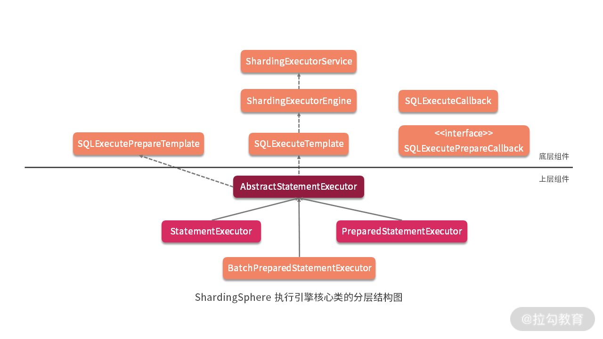
从今天开始，我们将进入到 sharding-jdbc-core 工程，来看看 ShardingSphere 中执行引擎上层设计中的几个核心类。
AbstractStatementExecutor
如上图所示，根据上一课时中的执行引擎整体结构图，可以看到SQLExecuteTemplate的直接使用者是AbstractStatementExecutor 类，今天我们就从这个类开始展开讨论，该类的变量比较多，我们先来看一下：
//数据库类型
private final DatabaseType databaseType;
//JDBC中用于指定结果处理方式的 resultSetType
private final int resultSetType;
//JDBC中用于指定是否可对结果集进行修改的 resultSetConcurrency
private final int resultSetConcurrency;
//JDBC中用于指定事务提交或回滚后结果集是否仍然可用的 resultSetConcurrency
private final int resultSetHoldability;
//分片 Connection
private final ShardingConnection connection;
//用于数据准备的模板类
private final SQLExecutePrepareTemplate sqlExecutePrepareTemplate;
//SQL 执行模板类
private final SQLExecuteTemplate sqlExecuteTemplate;
//JDBC的Connection列表
private final Collection<Connection> connections = new LinkedList<>();
//SQLStatement 上下文
private SQLStatementContext sqlStatementContext;
//参数集
private final List<List<Object>> parameterSets = new LinkedList<>();
//JDBC的Statement 列表
private final List<Statement> statements = new LinkedList<>();
//JDBC的ResultSet 列表
private final List<ResultSet> resultSets = new CopyOnWriteArrayList<>();
//ShardingExecuteGroup 列表
private final Collection<ShardingExecuteGroup<StatementExecuteUnit>> executeGroups = new LinkedList<>();
从这个类开始，我们会慢慢接触 JDBC 规范相关的对象，因为 ShardingSphere 的设计目标是，重写一套与目前的 JDBC 规范完全兼容的体系。这里，我们看到的 Connection、Statement 和 ResultSet 等对象，以及 resultSetType、resultSetConcurrency、resultSetHoldability 等参数，都是属于 JDBC 规范中的内容，我们在注释上做了特别的说明，你对此也都比较熟悉。
而像 ShardingSphere 自己封装的 ShardingConnection 对象也很重要，我们已经在《03 | 规范兼容：JDBC 规范与 ShardingSphere 是什么关系？》中对这个类的实现方式，以及如何兼容 JDBC 规范的详细过程做了介绍。
在 AbstractStatementExecutor 中，这些变量的展开，会涉及很多 sharding-jdbc-core 代码工程，关于数据库访问相关的类的介绍，包括我们以前已经接触过的 ShardingStatement 和 ShardingPreparedStatement 等类，所以我们在展开 AbstractStatementExecutor 类的具体实现方法之前，需要对这些类有一定的了解。
在 AbstractStatementExecutor 构造函数中，我们发现了上一课时中介绍的执行引擎 ShardingExecuteEngine 的创建过程，并通过它创建了 SQLExecuteTemplate 模板类，相关代码如下所示：
public AbstractStatementExecutor(final int resultSetType, final int resultSetConcurrency, final int resultSetHoldability, final ShardingConnection shardingConnection) {
…
ShardingExecuteEngine executeEngine = connection.getRuntimeContext().getExecuteEngine();
sqlExecuteTemplate = new SQLExecuteTemplate(executeEngine, connection.isHoldTransaction());
}
同时，AbstractStatementExecutor 中如下所示的 cacheStatements 方法也很有特色，该方法会根据持有的 ShardingExecuteGroup 类分别填充 statements 和 parameterSets 这两个对象，以供 AbstractStatementExecutor 的子类进行使用：
protected final void cacheStatements() {
for (ShardingExecuteGroup<StatementExecuteUnit> each : executeGroups) {
statements.addAll(Lists.transform(each.getInputs(), new Function<StatementExecuteUnit, Statement>() {
@Override
public Statement apply(final StatementExecuteUnit input) {
return input.getStatement();
}
}));
parameterSets.addAll(Lists.transform(each.getInputs(), new Function<StatementExecuteUnit, List<Object>>() {
@Override
public List<Object> apply(final StatementExecuteUnit input) {
return input.getRouteUnit().getSqlUnit().getParameters();
}
}));
}
}
注意：这里在实现方式上使用了 Google 提供的 Guava 框架中的 Lists.transform 方法，从而完成了不同对象之间的转换过程，这种实现方式在 ShardingSphere 中应用广泛，非常值得你学习。
然后我们来看 AbstractStatementExecutor 中最核心的方法，即执行回调的 executeCallback 方法：
protected final <T> List<T> executeCallback(final SQLExecuteCallback<T> executeCallback) throws SQLException {
List<T> result = sqlExecuteTemplate.executeGroup((Collection) executeGroups, executeCallback);
refreshMetaDataIfNeeded(connection.getRuntimeContext(), sqlStatementContext);
return result;
}
显然，在这里应该使用 SQLExecuteTemplate 模板类来完成具体回调的执行过程。同时，我可以看到这里还有一个 refreshMetaDataIfNeeded 辅助方法用来刷选元数据。
AbstractStatementExecutor 有两个实现类：一个是普通的 StatementExecutor，一个是 PreparedStatementExecutor，接下来我将分别进行讲解。
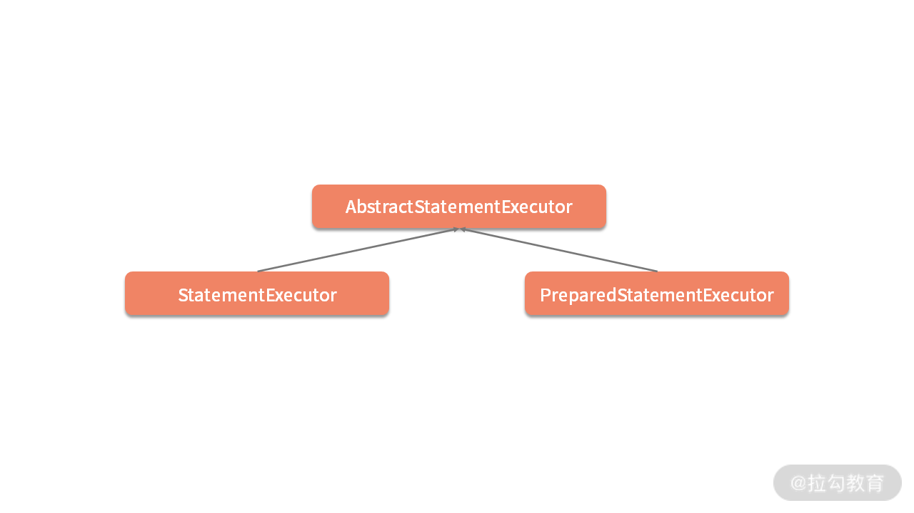
StatementExecutor
我们来到 StatementExecutor，先看它的用于执行初始化操作的 init 方法：
public void init(final SQLRouteResult routeResult) throws SQLException {
setSqlStatementContext(routeResult.getSqlStatementContext());
getExecuteGroups().addAll(obtainExecuteGroups(routeResult.getRouteUnits()));
cacheStatements();
}
这里的 cacheStatements 方法前面已经介绍过，而 obtainExecuteGroups 方法用于获取所需的 ShardingExecuteGroup 集合。要实现这个方法，就需要引入 SQLExecutePrepareTemplate 和对应的回调 SQLExecutePrepareCallback。
1.SQLExecutePrepareCallback
从命名上看，让人感觉 SQLExecutePrepareTemplate 和 SQLExecuteTemplate 应该是一对，尤其是名称中有一个“Prepare”，让人联想到 PreparedStatement。
但事实上，SQLExecutePrepareTemplate 与 SQLExecuteTemplate 没有什么关联，它也不是像 SQLExecuteTemplate 一样提供了 ShardingExecuteEngine 的封装，而是主要关注于 ShardingExecuteGroup 数据的收集和拼装，换句话说是为了准备（Prepare）数据。
在 SQLExecutePrepareTemplate 中，核心的功能就是下面这个方法，该方法传入了一个 SQLExecutePrepareCallback 对象，并返回 ShardingExecuteGroup 的一个集合：
public Collection<ShardingExecuteGroup<StatementExecuteUnit>> getExecuteUnitGroups(final Collection<RouteUnit> routeUnits, final SQLExecutePrepareCallback callback) throws SQLException {
return getSynchronizedExecuteUnitGroups(routeUnits, callback);
}
为了构建这个集合，SQLExecutePrepareTemplate 实现了很多辅助方法，同时它还引入了一个 SQLExecutePrepareCallback 回调，来完成 ShardingExecuteGroup 数据结构中部分数据的填充。SQLExecutePrepareCallback 接口定义如下，可以看到 Connection 和 StatementExecuteUnit 这两个对象是通过回调来创建的：
public interface SQLExecutePrepareCallback {
//获取 Connection 列表
List<Connection> getConnections(ConnectionMode connectionMode, String dataSourceName, int connectionSize) throws SQLException;
//获取 Statement 执行单元
StatementExecuteUnit createStatementExecuteUnit(Connection connection, RouteUnit routeUnit, ConnectionMode connectionMode) throws SQLException;
}
当我们获取了想要的 ShardingExecuteGroup 之后，相当于完成了 StatementExecutor 的初始化工作。该类中剩下的就是一系列以“execute”开头的 SQL 执行方法，包括 executeQuery、executeUpdate，以及它们的各种重载方法。我们先来看用于查询的 executeQuery 方法：
public List<QueryResult> executeQuery() throws SQLException {
final boolean isExceptionThrown = ExecutorExceptionHandler.isExceptionThrown();
//创建 SQLExecuteCallback 并执行查询
SQLExecuteCallback<QueryResult> executeCallback = new SQLExecuteCallback<QueryResult>(getDatabaseType(), isExceptionThrown) {
@Override
protected QueryResult executeSQL(final String sql, final Statement statement, final ConnectionMode connectionMode) throws SQLException {
return getQueryResult(sql, statement, connectionMode);
}
};
//执行 SQLExecuteCallback 并返回结果
return executeCallback(executeCallback);
}
我们已经在上一课时中介绍过这个方法，我们知道 SQLExecuteCallback 实现了 ShardingGroupExecuteCallback 接口并提供了 executeSQL 模板方法。而在上述 executeQuery 方法中，executeSQL 模板方法的实现过程，就是调用如下所示的 getQueryResult 方法：
private QueryResult getQueryResult(final String sql, final Statement statement, final ConnectionMode connectionMode) throws SQLException {
//通过 Statement 执行 SQL 并获取结果
ResultSet resultSet = statement.executeQuery(sql);
getResultSets().add(resultSet);
//根据连接模式来确认构建结果
return ConnectionMode.MEMORY_STRICTLY == connectionMode ? new StreamQueryResult(resultSet) : new MemoryQueryResult(resultSet);
}
2.ConnectionMode
getQueryResult 方法中完全基于 JDBC 中的 Statement 和 ResultSet 对象来执行查询并返回结果。
但是，这里也引入了 ShardingSphere 执行引擎中非常重要的一个概念，即ConnectionMode（连接模式），它是一个枚举：
public enum ConnectionMode {
MEMORY_STRICTLY, CONNECTION_STRICTLY
}
可以看到有两种具体的连接模式：MEMORY_STRICTLY 和 CONNECTION_STRICTLY。
- MEMORY_STRICTLY 代表内存限制模式，
- CONNECTION_STRICTLY 代表连接限制模式。
ConnectionMode（连接模式） 是 ShardingSphere 所提出的一个特有概念，背后体现的是一种设计上的平衡思想。从数据库访问资源的角度来看，一方面是对数据库连接资源的控制保护，另一方面是采用更优的归并模式达到对中间件内存资源的节省，如何处理好两者之间的关系，是 ShardingSphere 执行引擎需求解决的问题。
为此，ShardingSphere 提出了连接模式的概念，简单举例说明：
- 当采用内存限制模式时，对于同一数据源，如果有 10 张分表，那么执行时会获取 10 个连接并进行并行执行；
- 而当采用连接限制模式时，执行过程中只会获取 1 个连接而进行串行执行。
那么这个 ConnectionMode 是怎么得出来的呢？
实际上这部分代码位于 SQLExecutePrepareTemplate 中，我们根据 maxConnectionsSizePerQuery 这个配置项，以及与每个数据库所需要执行的 SQL 数量进行比较，然后得出具体的 ConnectionMode：
ConnectionMode connectionMode = maxConnectionsSizePerQuery < sqlUnits.size() ? ConnectionMode.CONNECTION_STRICTLY : ConnectionMode.MEMORY_STRICTLY;
关于这个判断条件，我们可以使用一张简单的示意图来进行说明，如下所示：

如上图所示，我们可以看到如果每个数据库连接所指向的 SQL 数多于一条时，走的是内存限制模式，反之走的是连接限制模式。
3.StreamQueryResult VS MemoryQueryResult
在了解了 ConnectionMode（连接模式） 的设计理念后，我们再来看 StatementExecutor 的 executeQuery 方法返回的是一个 QueryResult。
在 ShardingSphere 中，QueryResult 是一个代表查询结果的接口，可以看到该接口封装了很多面向底层数据获取的方法：
public interface QueryResult {
boolean next() throws SQLException;
Object getValue(int columnIndex, Class<?> type) throws SQLException;
Object getCalendarValue(int columnIndex, Class<?> type, Calendar calendar) throws SQLException;
InputStream getInputStream(int columnIndex, String type) throws SQLException;
boolean wasNull() throws SQLException;
int getColumnCount() throws SQLException;
String getColumnLabel(int columnIndex) throws SQLException;
boolean isCaseSensitive(int columnIndex) throws SQLException;
}
在 ShardingSphere中，QueryResult 接口存在于 StreamQueryResult（代表流式归并结果）和 MemoryQueryResult （代表内存归并结果）这两个实现类。
ShardingSphere 采用这样的设计实际上跟前面介绍的 ConnectionMode 有直接关系。
- 我们知道，在内存限制模式中，ShardingSphere 对一次操作所耗费的数据库连接数量不做限制；
- 而当采用连接限制模式时，ShardingSphere严格控制对一次操作所耗费的数据库连接数量。
基于这样的设计原理，如上面的 ConnectionMode 的计算示意图所示：在 maxConnectionSizePerQuery 允许的范围内，当一个连接需要执行的请求数量大于 1 时，意味着当前的数据库连接无法持有相应的数据结果集，则必须采用内存归并；反之，则可以采用流式归并。
- StreamQueryResult
我们通过对比 StreamQueryResult 和 MemoryQueryResult 的实现过程，对上述原理做进一步分析，在 StreamQueryResult 中，它的 next 方法非常简单：
@Override
public boolean next() throws SQLException {
return resultSet.next();
}
显然这是一种流式处理的方式，从 ResultSet 中获取下一个数据行。
- MemoryQueryResult
我们再来看 MemoryQueryResult，在它的构造函数中，通过 getRows 方法把 ResultSet 中的全部数据行，先进行获取并存储在内存变量 rows 中：
private Iterator<List<Object>> getRows(final ResultSet resultSet) throws SQLException {
Collection<List<Object>> result = new LinkedList<>();
while (resultSet.next()) {
List<Object> rowData = new ArrayList<>(resultSet.getMetaData().getColumnCount());
for (int columnIndex = 1; columnIndex <= resultSet.getMetaData().getColumnCount(); columnIndex++) {
//获取每一个 Row 的数据
Object rowValue = getRowValue(resultSet, columnIndex);
//存放在内存中
rowData.add(resultSet.wasNull() ? null : rowValue);
}
result.add(rowData);
}
return result.iterator();
}
基于以上方法，MemoryQueryResult 的 next 方法应该是，从这个 rows 变量中获取下一个数据行，如下所示：
public boolean next() {
if (rows.hasNext()) {
currentRow = rows.next();
return true;
}
currentRow = null;
return false;
}
通过这种方式，我们就将传统的流式处理方式转变成了内存处理方式。
关于 ConnectionMode 和两种 QueryResult 的讨论就到这里，让我们回到 StatementExecutor。理解了 StatementExecutor 的 executeQuery 方法之后，我们再来看它更为通用的 execute 方法，如下所示：
public boolean execute() throws SQLException {
return execute(new Executor() {
@Override
public boolean execute(final Statement statement, final String sql) throws SQLException {
return statement.execute(sql);
}
});
}
注意到上述 execute 方法并没有使用 SQLExecuteCallback 回调，而是使用了一个 Executor 接口，该接口定义如下：
private interface Executor {
//执行 SQL
boolean execute(Statement statement, String sql) throws SQLException;
}
然后我们再继续往下看，发现在改方法实际的执行过程中，还是用到了 SQLExecuteCallback 回调：
private boolean execute(final Executor executor) throws SQLException {
final boolean isExceptionThrown = ExecutorExceptionHandler.isExceptionThrown();
//创建 SQLExecuteCallback 并执行
SQLExecuteCallback<Boolean> executeCallback = new SQLExecuteCallback<Boolean>(getDatabaseType(), isExceptionThrown) {
@Override
protected Boolean executeSQL(final String sql, final Statement statement, final ConnectionMode connectionMode) throws SQLException {
//使用 Executor 进行执行
return executor.execute(statement, sql);
}
};
List<Boolean> result = executeCallback(executeCallback);
if (null == result || result.isEmpty() || null == result.get(0)) {
return false;
}
return result.get(0);
}
这里多嵌套一层的目的是，更好地分离代码的职责，并对执行结果进行处理，同样的处理技巧在 StatementExecutor 的 executeUpdate 方法中也有体现。
PreparedStatementExecutor
讲完 StatementExecutor 之后，我们来看 PreparedStatementExecutor。PreparedStatementExecutor 包含了与 StatementExecutor 一样的用于初始化的 init 方法。然后，我们同样来看它如下所示的 executeQuery 方法，可以看到这里的处理方式与在 StatementExecutor 的一致：
public List<QueryResult> executeQuery() throws SQLException {
final boolean isExceptionThrown = ExecutorExceptionHandler.isExceptionThrown();
//创建 SQLExecuteCallback 并执行
SQLExecuteCallback<QueryResult> executeCallback = new SQLExecuteCallback<QueryResult>(getDatabaseType(), isExceptionThrown) {
@Override
protected QueryResult executeSQL(final String sql, final Statement statement, final ConnectionMode connectionMode) throws SQLException {
return getQueryResult(statement, connectionMode);
}
};
return executeCallback(executeCallback);
}
然后，我们再来看它的 execute 方法，就会发现有不同点：
public boolean execute() throws SQLException {
boolean isExceptionThrown = ExecutorExceptionHandler.isExceptionThrown();
SQLExecuteCallback<Boolean> executeCallback = SQLExecuteCallbackFactory.getPreparedSQLExecuteCallback(getDatabaseType(), isExceptionThrown);
List<Boolean> result = executeCallback(executeCallback);
if (null == result || result.isEmpty() || null == result.get(0)) {
return false;
}
return result.get(0);
}
与 StatementExecutor 不同，PreparedStatementExecutor 在实现 execute 方法时没有设计类似 Executor 这样的接口，而是直接提供了一个工厂类 SQLExecuteCallbackFactory：
public final class SQLExecuteCallbackFactory {
…
public static SQLExecuteCallback<Boolean> getPreparedSQLExecuteCallback(final DatabaseType databaseType, final boolean isExceptionThrown) {
return new SQLExecuteCallback<Boolean>(databaseType, isExceptionThrown) {
@Override
protected Boolean executeSQL(final String sql, final Statement statement, final ConnectionMode connectionMode) throws SQLException {
return ((PreparedStatement) statement).execute();
}
};
}
}
注意到这里的静态方法 getPreparedSQLExecuteCallback 也就是返回了一个 SQLExecuteCallback 回调的实现，而在这个实现中使用了 JDBC 底层的 PreparedStatement 完成具体 SQL 的执行过程。
至此，我们对 ShardingSphere 中两个主要执行器 StatementExecutor 和 PreparedStatementExecutor 都进行了详细介绍。
从源码解析到日常开发
本课时关于两种 QueryResult 的设计思想，同样可以应用到日常开发中。当我们面对如何处理来自数据库或外部数据源的数据时，可以根据需要设计流式访问方式和内存访问方式，这两种访问方式在数据访问过程中都具有一定的代表性。
通常，我们会首先想到将所有访问到的数据存放在内存中，再进行二次处理，但这种处理方式会面临性能问题，流式访问方式性能更高，但需要我们挖掘适合的应用场景。
小结与预告
今天介绍了 ShardingSphere 执行引擎主题的第二个课时，我们重点围绕执行引擎中的执行器展开讨论，给出了 StatementExecutor 和 PreparedStatementExecutor 这两种执行器的实现方式，也给出了 ShardingSphere 中关于连接模式的详细讨论。
这里给大家留一道思考题：ShardingSphere 中连接模式的概念和作用是什么？欢迎你在留言区与大家讨论，我将逐一点评解答。
从类层结构而言，StatementExecutor 和 PreparedStatementExecutor 都属于底层组件，在下一课时，我们会介绍包括 ShardingStatement 和 PreparedShardingStatement 在内的位于更加上层的执行引擎组件。
23 执行引擎：如何把握 ShardingSphere 中的 Executor 执行模型？（下）
在上一课时，我们已经对 ShardingSphere 执行引擎中关于底层的 SQLExecuteTemplate，以及上层的 StatementExecutor 和 PreparedStatementExecutor 对象进行了全面介绍。
今天，我们在此基础上更上一层，重点关注 ShardingStatement 和 ShardingPreparedStatement 对象，这两个对象分别是 StatementExecutor 和 PreparedStatementExecutor 的使用者。
ShardingStatement
我们先来看 ShardingStatement 类，该类中的变量在前面的内容中都已经有过介绍：
private final ShardingConnection connection;
private final StatementExecutor statementExecutor;
private boolean returnGeneratedKeys;
private SQLRouteResult sqlRouteResult;
private ResultSet currentResultSet;
ShardingStatement 类的构造函数同样不是很复杂，我们发现 StatementExecutor 就是在这个构造函数中完成了其创建过程：
public ShardingStatement(final ShardingConnection connection, final int resultSetType, final int resultSetConcurrency, final int resultSetHoldability) {
super(Statement.class);
this.connection = connection;
//创建 StatementExecutor
statementExecutor = new StatementExecutor(resultSetType, resultSetConcurrency, resultSetHoldability, connection);
}
在继续介绍 ShardingStatement 之前，我们先梳理一下与它相关的类层结构。我们在 “06 | 规范兼容：JDBC 规范与 ShardingSphere 是什么关系？” 中的 ShardingConnection 提到，ShardingSphere 通过适配器模式包装了自己的实现类，除了已经介绍的 ShardingConnection 类之外，还包含今天要介绍的 ShardingStatement 和 ShardingPreparedStament。
根据这一点，我们可以想象 ShardingStatement 应该具备与 ShardingConnection 类似的类层结构：
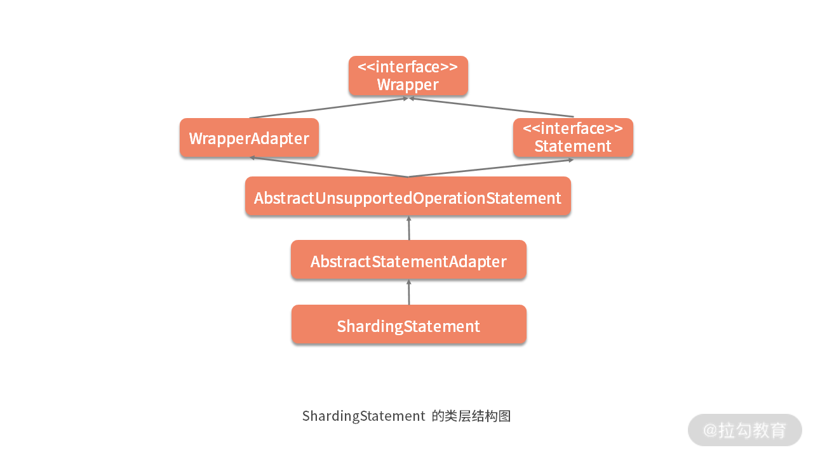
然后我们来到上图中 AbstractStatementAdapter 类，这里的很多方法的风格都与 ShardingConnection 的父类 AbstractConnectionAdapter 一致，例如如下所示的 setPoolable 方法：
public final void setPoolable(final boolean poolable) throws SQLException {
this.poolable = poolable;
recordMethodInvocation(targetClass, "setPoolable", new Class[] {boolean.class}, new Object[] {poolable});
forceExecuteTemplate.execute((Collection) getRoutedStatements(), new ForceExecuteCallback<Statement>() {
@Override
public void execute(final Statement statement) throws SQLException {
statement.setPoolable(poolable);
}
});
这里涉及的 recordMethodInvocation 方法、ForceExecuteTemplate，以及 ForceExecuteCallback 我们都已经在“03 | 规范兼容：JDBC 规范与 ShardingSphere 是什么关系？”中进行了介绍，这里不再展开。
同样，AbstractStatementAdapter 的父类 AbstractUnsupportedOperationStatement 的作用也与 AbstractUnsupportedOperationConnection 的作用完全一致。
了解了 ShardingStatement 的类层结构之后，我们来看它的核心方法，首当其冲的还是它的 executeQuery 方法：
@Override
public ResultSet executeQuery(final String sql) throws SQLException {
if (Strings.isNullOrEmpty(sql)) {
throw new SQLException(SQLExceptionConstant.SQL_STRING_NULL_OR_EMPTY);
}
ResultSet result;
try {
//清除 StatementExecutor 中的相关变量
clearPrevious();
//执行路由引擎，获取路由结果
shard(sql);
//初始化 StatementExecutor
initStatementExecutor();
//调用归并引擎
MergeEngine mergeEngine = MergeEngineFactory.newInstance(connection.getRuntimeContext().getDatabaseType(), connection.getRuntimeContext().getRule(), sqlRouteResult, connection.getRuntimeContext().getMetaData().getRelationMetas(), statementExecutor.executeQuery());
//获取归并结果
result = getResultSet(mergeEngine);
} finally {
currentResultSet = null;
}
currentResultSet = result;
return result;
}
这个方法中有几个子方法值得具体展开一下，首先是 shard 方法：
private void shard(final String sql) {
//从 Connection 中获取 ShardingRuntimeContext 上下文
ShardingRuntimeContext runtimeContext = connection.getRuntimeContext();
//创建 SimpleQueryShardingEngine
SimpleQueryShardingEngine shardingEngine = new SimpleQueryShardingEngine(runtimeContext.getRule(), runtimeContext.getProps(), runtimeContext.getMetaData(), runtimeContext.getParseEngine());
//执行分片路由并获取路由结果
sqlRouteResult = shardingEngine.shard(sql, Collections.emptyList());
}
这段代码就是路由引擎的入口，我们创建了 SimpleQueryShardingEngine，并调用它的 shard 方法获取路由结果对象 SQLRouteResult。
然后我们来看 initStatementExecutor 方法，如下所示：
private void initStatementExecutor() throws SQLException {
statementExecutor.init(sqlRouteResult);
replayMethodForStatements();
}
这里通过路由结果对象 SQLRouteResult 对 statementExecutor 进行了初始化，然后执行了一个 replayMethodForStatements 方法：
private void replayMethodForStatements() {
for (Statement each : statementExecutor.getStatements()) {
replayMethodsInvocation(each);
}
}
该方法实际上就是调用了基于反射的 replayMethodsInvocation 方法，然后这个replayMethodsInvocation 方法会针对 statementExecutor 中所有 Statement的 SQL 操作执行目标方法。
最后，我们通过执行 statementExecutor.executeQuery() 方法获取 SQL 执行的结果，并用这个结果来创建归并引擎 MergeEngine，并通过归并引擎 MergeEngine 获取最终的执行结果。
归并引擎是 ShardingSphere 中与 SQL 解析引擎、路由引擎以及执行引擎并列的一个引擎，我们在下一课时中就会开始介绍这块内容，这里先不做具体展开。
以 ShardingStatement 中的其中一个 executeUpdate 方法为例，可以看到它的执行流程也与前面的 executeQuery 方法非常类似：
@Override
public int executeUpdate(final String sql) throws SQLException {
try {
//清除 StatementExecutor 中的相关变量
clearPrevious();
//执行路由引擎，获取路由结果
shard(sql);
//初始化 StatementExecutor
initStatementExecutor();
return statementExecutor.executeUpdate();
} finally {
currentResultSet = null;
}
}
当然，对于 Update 操作而言，不需要通过归并引擎做结果的归并。
ShardingPreparedStatement
我们接着来看 ShardingPreparedStatement 类，这个类的变量也基本都是前面介绍过的对象：
private final ShardingConnection connection;
private final String sql;
private final PreparedQueryShardingEngine shardingEngine;
private final PreparedStatementExecutor preparedStatementExecutor;
private final BatchPreparedStatementExecutor batchPreparedStatementExecutor;
private SQLRouteResult sqlRouteResult;
private ResultSet currentResultSet;
这里的 ShardingEngine、PreparedStatementExecutor 和 BatchPreparedStatementExecutor 对象的创建过程都发生在 ShardingPreparedStatement 的构造函数中。
然后我们来看它的代表性方法 ExecuteQuery，如下所示：
@Override
public ResultSet executeQuery() throws SQLException {
ResultSet result;
try {
clearPrevious();
shard();
initPreparedStatementExecutor();
MergeEngine mergeEngine = MergeEngineFactory.newInstance(connection.getRuntimeContext().getDatabaseType(), connection.getRuntimeContext().getRule(), sqlRouteResult, connection.getRuntimeContext().getMetaData().getRelationMetas(), preparedStatementExecutor.executeQuery());
result = getResultSet(mergeEngine);
} finally {
clearBatch();
}
currentResultSet = result;
return result;
}
这里我们没加注释，但也应该理解这一方法的执行流程，因为该方法的风格与 ShardingStatement 中的同名方法非常一致。
关于 ShardingPreparedStatement 就没有太多可以介绍的内容了，我们接着来看它的父类AbstractShardingPreparedStatementAdapter 类，看到该类持有一个 SetParameterMethodInvocation 的列表，以及一个参数列表：
private final List<SetParameterMethodInvocation> setParameterMethodInvocations = new LinkedList<>();
private final List<Object> parameters = new ArrayList<>();
这里的 SetParameterMethodInvocation 类直接集成了介绍 ShardingConnection 时提到的 JdbcMethodInvocation 类：
public final class SetParameterMethodInvocation extends JdbcMethodInvocation {
@Getter
private final int index;
@Getter
private final Object value;
public SetParameterMethodInvocation(final Method method, final Object[] arguments, final Object value) {
super(method, arguments);
this.index = (int) arguments[0];
this.value = value;
}
public void changeValueArgument(final Object value) {
getArguments()[1] = value;
}
}
对于 ShardingPreparedStatement 而言，这个类的作用是在 JdbcMethodInvocation 中所保存的方法和参数的基础上，添加了 SQL 执行过程中所需要的参数信息。
所以它的 replaySetParameter 方法就变成了如下的风格：
protected final void replaySetParameter(final PreparedStatement preparedStatement, final List<Object> parameters) {
setParameterMethodInvocations.clear();
//添加参数信息
addParameters(parameters);
for (SetParameterMethodInvocation each : setParameterMethodInvocations) {
each.invoke(preparedStatement);
}
}
关于 AbstractShardingPreparedStatementAdapter 还需要注意的是它的类层结构，如下图所示，可以看到 AbstractShardingPreparedStatementAdapter 继承了 AbstractUnsupportedOperationPreparedStatement 类；而 AbstractUnsupportedOperationPreparedStatement 却又继承了 AbstractStatementAdapter 类并实现了 PreparedStatement：
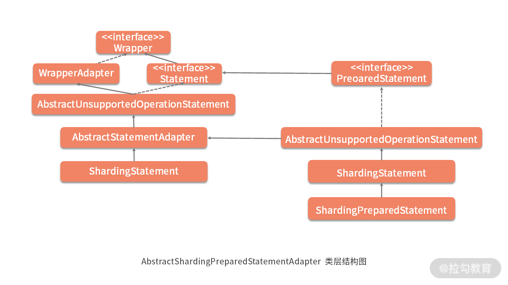
形成这种类层结构的原因在于，PreparedStatement 本来就是在 Statement 的基础上添加了各种参数设置功能，换句话说，Statement 的功能 PreparedStatement 都应该有。
所以一方面 AbstractStatementAdapter 提供了所有 Statement 的功能；另一方面，AbstractShardingPreparedStatementAdapter 首先把 AbstractStatementAdapter 所有的功能继承过来，但它自身可能有一些无法实现的关于 PreparedStatement 的功能，所以同样提供了 AbstractUnsupportedOperationPreparedStatement 类，并被最终的 AbstractShardingPreparedStatementAdapter 适配器类所继承。
这样就形成了如上图所示的复杂类层结构。
ShardingConnection
介绍完 ShardingStatement 和 ShardingPreparedStatement 之后，我们来关注使用它们的具体应用场景，这也是 ShardingSphere 执行引擎的最后一部分内容。
通过查看调用关系，我们发现创建这两个类的入口都在 ShardingConnection 类中，该类包含了用于创建 ShardingStatement 的 createStatement 方法和用于创建 ShardingPreparedStatement 的 prepareStatement 方法，以及它们的各种重载方法：
@Override
public Statement createStatement(final int resultSetType, final int resultSetConcurrency, final int resultSetHoldability) {
return new ShardingStatement(this, resultSetType, resultSetConcurrency, resultSetHoldability);
}
@Override
public PreparedStatement prepareStatement(final String sql, final int resultSetType, final int resultSetConcurrency, final int resultSetHoldability) throws SQLException {
return new ShardingPreparedStatement(this, sql, resultSetType, resultSetConcurrency, resultSetHoldability);
}
同时，ShardingConnection 中包含了用于管理分布式事务的 ShardingTransactionManager。关于分布式事务的讨论不是今天的重点，我们后面会有专题来做详细展开。
但我们可以先看一下 commit 和 rollback 方法：
@Override
public void commit() throws SQLException {
if (TransactionType.LOCAL == transactionType) {
super.commit();
} else {
shardingTransactionManager.commit();
}
}
@Override
public void rollback() throws SQLException {
if (TransactionType.LOCAL == transactionType) {
super.rollback();
} else {
shardingTransactionManager.rollback();
}
}
可以看到这两个方法的逻辑还是比较清晰的，即当事务类型为本地事务时直接调用 ShardingConnection 父类 AbstractConnectionAdapter 中的 commit 和 rollback 方法，这两个方法会调用真正的 connection 的相关方法。
以 commit 方法为例，我们可以看到 AbstractConnectionAdapter 中基于这一设计思想的实现过程：
@Override
public void commit() throws SQLException {
forceExecuteTemplate.execute(cachedConnections.values(), new ForceExecuteCallback<Connection>() {
@Override
public void execute(final Connection connection) throws SQLException {
connection.commit();
}
});
}
ShardingDataSource
我们知道在 JDBC 规范中，可以通过 DataSource 获取 Connection 对象。ShardingSphere 完全兼容 JDBC 规范，所以 ShardingConnection 的创建过程应该也是在对应的 DataSource 中，这个 DataSource 就是ShardingDataSource。
ShardingDataSource 类比较简单，其构造函数如下所示：
public ShardingDataSource(final Map<String, DataSource> dataSourceMap, final ShardingRule shardingRule, final Properties props) throws SQLException {
super(dataSourceMap);
checkDataSourceType(dataSourceMap);
runtimeContext = new ShardingRuntimeContext(dataSourceMap, shardingRule, props, getDatabaseType());
}
可以看到，ShardingRuntimeContext 这个上下文对象是在 ShardingDataSource 的构造函数中被创建的，而创建 ShardingConnection 的过程也很直接：
@Override
public final ShardingConnection getConnection() {
return new ShardingConnection(getDataSourceMap(), runtimeContext, TransactionTypeHolder.get());
}
在 ShardingDataSource 的实现上，也同样采用的是装饰器模式，所以它的类层结构也与 ShardingConnection 的类似。在 ShardingDataSource 的父类 AbstractDataSourceAdapter 中，主要的工作是完成 DatabaseType 的创建，核心方法 createDatabaseType 如下所示：
private DatabaseType createDatabaseType(final DataSource dataSource) throws SQLException {
if (dataSource instanceof AbstractDataSourceAdapter) {
return ((AbstractDataSourceAdapter) dataSource).databaseType;
}
try (Connection connection = dataSource.getConnection()) {
return DatabaseTypes.getDatabaseTypeByURL(connection.getMetaData().getURL());
}
}
可以看到这里使用到了 DatabaseTypes 类，该类负责 DatabaseType 实例的动态管理。而在 ShardingSphere 中，DatabaseType 接口代表数据库类型：
public interface DatabaseType {
//获取数据库名称
String getName();
//获取 JDBC URL 的前缀
Collection<String> getJdbcUrlPrefixAlias();
//获取数据源元数据
DataSourceMetaData getDataSourceMetaData(String url, String username);
}
可以想象 ShardingSphere 中针对各种数据库提供了 DatabaseType 接口的实现类，其中以 MySQLDatabaseType 为例：
public final class MySQLDatabaseType implements DatabaseType {
@Override
public String getName() {
return "MySQL";
}
@Override
public Collection<String> getJdbcUrlPrefixAlias() {
return Collections.singletonList("jdbc:mysqlx:");
}
@Override
public MySQLDataSourceMetaData getDataSourceMetaData(final String url, final String username) {
return new MySQLDataSourceMetaData(url);
}
}
上述代码中的 MySQLDataSourceMetaData 实现了 DataSourceMetaData 接口，并提供如下所示的对输入 url 的解析过程：
public MySQLDataSourceMetaData(final String url) {
Matcher matcher = pattern.matcher(url);
if (!matcher.find()) {
throw new UnrecognizedDatabaseURLException(url, pattern.pattern());
}
hostName = matcher.group(4);
port = Strings.isNullOrEmpty(matcher.group(5)) ? DEFAULT_PORT : Integer.valueOf(matcher.group(5));
catalog = matcher.group(6);
schema = null;
}
显然，DatabaseType 用于保存与特定数据库元数据相关的信息，ShardingSphere 还基于 SPI 机制实现对各种 DatabaseType 实例的动态管理。
最后，我们来到 ShardingDataSourceFactory 工厂类，该类负责 ShardingDataSource 的创建：
public final class ShardingDataSourceFactory {
public static DataSource createDataSource(
final Map<String, DataSource> dataSourceMap, final ShardingRuleConfiguration shardingRuleConfig, final Properties props) throws SQLException {
return new ShardingDataSource(dataSourceMap, new ShardingRule(shardingRuleConfig, dataSourceMap.keySet()), props);
}
}
我们在这里创建了 ShardingDataSource，同时发现 ShardingRule 的创建过程实际上也是在这里，通过传入的 ShardingRuleConfiguration 来构建一个新的 ShardingRule 对象。
一旦创建了 DataSource，我们就可以使用与 JDBC 规范完全兼容的 API，通过该 DataSource 完成各种 SQL 的执行。我们可以回顾 ShardingDataSourceFactory 的使用过程来加深对他的理解：
public DataSource dataSource() throws SQLException {
//创建分片规则配置类
ShardingRuleConfiguration shardingRuleConfig = new ShardingRuleConfiguration();
//创建分表规则配置类
TableRuleConfiguration tableRuleConfig = new TableRuleConfiguration("user", "ds${0..1}.user${0..1}");
//创建分布式主键生成配置类
Properties properties = new Properties();
result.setProperty("worker.id", "33");
KeyGeneratorConfiguration keyGeneratorConfig = new KeyGeneratorConfiguration("SNOWFLAKE", "id", properties);
result.setKeyGeneratorConfig(keyGeneratorConfig);
shardingRuleConfig.getTableRuleConfigs().add(tableRuleConfig);
//根据年龄分库，一共分为 2 个库
shardingRuleConfig.setDefaultDatabaseShardingStrategyConfig(new InlineShardingStrategyConfiguration("sex", "ds${sex % 2}"));
//根据用户 id 分表，一共分为 2 张表
shardingRuleConfig.setDefaultTableShardingStrategyConfig(new StandardShardingStrategyConfiguration("id", "user${id % 2}"));
//通过工厂类创建具体的 DataSource
return ShardingDataSourceFactory.createDataSource(createDataSourceMap(), shardingRuleConfig, new Properties());
}
一旦获取了目标 DataSource 之后，我们就可以使用 JDBC 中的核心接口来执行传入的 SQL 语句：
List<User> getUsers(final String sql) throws SQLException {
List<User> result = new LinkedList<>();
try (Connection connection = dataSource.getConnection();
PreparedStatement preparedStatement = connection.prepareStatement(sql);
ResultSet resultSet = preparedStatement.executeQuery()) {
while (resultSet.next()) {
User user= new User();
//省略设置 User 对象的赋值语句
result.add(user);
}
}
return result;
}
ShardingSphere 通过在准备阶段获取的连接模式，在执行阶段生成内存归并结果集或流式归并结果集，并将其传递至结果归并引擎，以进行下一步工作。
从源码解析到日常开发
基于适配器模式完成对 JDBC 规范的重写，是我们学习 ShardingSphere 框架非常重要的一个切入点，同样也是我们将这种模式应用到日常开发工作中的一个切入点。
适配器模式是作为两个不兼容的接口之间的桥梁。在业务系统中，我们经常会碰到需要与外部系统进行对接和集成的场景，这个时候为了保证内部系统的功能演进，能够独立于外部系统进行发展，一般都需要采用适配器模式完成两者之间的隔离。
当我们设计这种系统时，可以参考 JDBC 规范中的接口定义方式，以及 ShardingSphere 中基于这种接口定义方式，而完成适配的具体做法。
小结与预告
这是 ShardingSphere 执行引擎的最后一个课时，我们围绕执行引擎的上层组件，给出了以“ Sharding”作为前缀的各种 JDBC 规范中的核心接口实现类。
其中 ShardingStatement 和 ShardingPreparedStatement 直接依赖于上一课时介绍的 StatementExecutor 和 PreparedStatementExecutor；而 ShardingConnection 和 ShardingDataSource 则为我们使用执行引擎提供了入口。
这里给你留一道思考题：ShardingSphere 中，AbstractShardingPreparedStatementAdapter 的类层结构为什么会比 AbstractStatementAdapter 复杂很多？欢迎你在留言区与大家讨论，我将逐一点评解答。
现在，我们已经通过执行引擎获取了来自不同数据源的结果数据，对于查询语句而言，我们通常都需要对这些结果数据进行归并才能返回给客户端。在接下来的内容中，就让我们来分析一下 ShardingSphere 的归并引擎。
24 归并引擎：如何理解数据归并的类型以及简单归并策略的实现过程？
在上一课时，我们提到在 ShardingStatement 和 ShardingPreparedStatement 中，执行 executeQuery 或 executeUpdate 方法时会使用到归并引擎 MergeEngine：
//调用归并引擎
MergeEngine mergeEngine = MergeEngineFactory.newInstance(connection.getRuntimeContext().getDatabaseType(), connection.getRuntimeContext().getRule(), sqlRouteResult, connection.getRuntimeContext().getMetaData().getRelationMetas(), statementExecutor.executeQuery());
//获取归并结果
result = getResultSet(mergeEngine);
在 ShardingSphere 整个分片机制的结构中，归并引擎是执行引擎后的下一环，也是整个数据分片引擎的最后一环。
在今天以及下一课时中，我将带领大家对 ShardingSphere 中的归并引擎做详细的展开，让我们先从归并这一基本概念说起。
归并与归并引擎
我们知道，在分库分表环境下，一句逻辑 SQL 会最终解析成多条真正的 SQL，并被路由到不同的数据库中进行执行，每个数据库都可能返回最终结果中的一部分数据。
这样我们就会碰到一个问题，即如何把这些来自不同数据库的部分数据组合成最终结果呢？这就需要引入归并的概念。
1.归并的分类及其实现方案
所谓归并，就是将从各个数据节点获取的多数据结果集，通过一定的策略组合成为一个结果集并正确的返回给请求客户端的过程。
按照不同的 SQL 类型以及应用场景划分，归并的类型可以分为遍历、排序、分组、分页和聚合 5 种类型，这 5 种类型是组合而非互斥的关系。
其中遍历归并是最简单的归并，而排序归并是最常用地归并，在下文我会对两者分别详细介绍。

归并的五大类型
按照归并实现的结构划分，ShardingSphere 中又存在流式归并、内存归并和装饰者归并这三种归并方案。
- 所谓的流式归并，类似于 JDBC 中从 ResultSet 获取结果的处理方式，也就是说通过逐条获取的方式返回正确的单条数据；
- 内存归并的思路则不同，是将结果集的所有数据先存储在内存中，通过统一的计算之后，再将其封装成为逐条访问的数据结果集进行返回。
- 最后的装饰者归并是指，通过装饰器模式对所有的结果集进行归并，并进行统一的功能增强，类似于改写引擎中 SQLRewriteContextDecorator 对 SQLRewriteContext 进行装饰的过程。
显然，流式归并和内存归并是互斥的，装饰者归并可以在流式归并和内存归并之上做进一步的处理。
归并方案与归并类型之间同样存在一定的关联关系，其中遍历、排序以及流式分组都属于流式归并的一种，内存归并可以作用于统一的分组、排序以及聚合，而装饰者归并有分页归并和聚合归并这 2 种类型，它们之间的对应关系如下图所示：

归并类型与归并方案之间的对应关系图
2.归并引擎
讲完概念回到代码，我们首先来到 shardingsphere-merge 代码工程中的 MergeEngine 接口：
public interface MergeEngine {
//执行归并
MergedResult merge() throws SQLException;
}
可以看到 MergeEngine 接口非常简单，只有一个 merge 方法。在 ShardingSphere 中，该接口存在五个实现类，其类层结构如下所示：

MergeEngine 类层结构图
从命名上看，可以看到名称中带有“Encrypt”的两个 MergeEngine 与数据脱敏相关，放在后续专题中再做讲解，其余的三个我们会先做一些分析。
在此之前，我们还要来关注一下代表归并结果的 MergedResult 接口：
public interface MergedResult {
boolean next() throws SQLException;
Object getValue(int columnIndex, Class<?> type) throws SQLException;
Object getCalendarValue(int columnIndex, Class<?> type, Calendar calendar) throws SQLException;
InputStream getInputStream(int columnIndex, String type) throws SQLException;
boolean wasNull() throws SQLException;
}
可以看到 MergedResult 与执行引擎中的 QueryResult 非常相似，只是少了几个方法。理解了归并引擎的定义以及归并结果的表现形式之后，我们来分析创建 MergeEngine 的过程，前面已经看到这实际上是依赖于工厂类 MergeEngineFactory，其实现过程如下所示：
public static MergeEngine newInstance(final DatabaseType databaseType, final ShardingRule shardingRule,
final SQLRouteResult routeResult, final RelationMetas relationMetas, final List<QueryResult> queryResults) {
//如果是查询语句，就创建一个 DQLMergeEngine
if (routeResult.getSqlStatementContext() instanceof SelectSQLStatementContext) {
return new DQLMergeEngine(databaseType, (SelectSQLStatementContext) routeResult.getSqlStatementContext(), queryResults);
}
//如果是数据库管理语句，就创建一个 DALMergeEngine
if (routeResult.getSqlStatementContext().getSqlStatement() instanceof DALStatement) {
return new DALMergeEngine(shardingRule, queryResults, routeResult.getSqlStatementContext(), relationMetas);
}
return new TransparentMergeEngine(queryResults);
}
这个 newInstance 方法的参数值得关注一下，这些参数我们都很眼熟，包括数据库类型 DatabaseType、分片规则 ShardingRule、路由结果 SQLRouteResult、执行结果列表 List 等。
然后，我们看到代码逻辑会根据 SQLRouteResult 中 SqlStatementContext 的不同类型返回不同类型的 MergeEngine，即如果是 SelectSQLStatementContext 则返回用于查询的 DQLMergeEngine；而如果 SQLStatement 是一种执行数据库管理语句的 DALStatement，则返回 DALMergeEngine；如果都不是，则直接返回 TransparentMergeEngine。
对于归并而言，显然 DQLMergeEngine 是最重要的一种引擎类型，我们重点对它进行展开，
它的 merge 方法如下所示：
public MergedResult merge() throws SQLException {
//如果结果集数量为 1
if (1 == queryResults.size()) {
return new IteratorStreamMergedResult(queryResults);
}
Map<String, Integer> columnLabelIndexMap = getColumnLabelIndexMap(queryResults.get(0));
selectSQLStatementContext.setIndexes(columnLabelIndexMap);
//如果结果集数量大于 1，则构建不同的归并方案
return decorate(build(columnLabelIndexMap));
}
这里先出现了一个判断，即当查询结果集数量为 1 时，我们只需调用遍历结果集进行归并即可，这种类型就属于遍历归并。遍历归并是我们将要介绍的第一种归并类型，也是所有归并类型中最为简单的一种。
如果结果集不是只有一个，那就意味了需要进行合并，我们会通过如下所示的 build 方法根据不同的条件构建不同的 MergedResult 并返回：
private MergedResult build(final Map<String, Integer> columnLabelIndexMap) throws SQLException {
//查询语句中分组语句或者聚合函数不为空，则执行分组归并
if (isNeedProcessGroupBy()) {
return getGroupByMergedResult(columnLabelIndexMap);
}
//如果聚合中存在 Distinct 列，设置分组 Context 并执行分组归并
if (isNeedProcessDistinctRow()) {
setGroupByForDistinctRow();
return getGroupByMergedResult(columnLabelIndexMap);
}
//排序语句不为空，则执行排序结果集归并
if (isNeedProcessOrderBy()) {
return new OrderByStreamMergedResult(queryResults, selectSQLStatementContext.getOrderByContext().getItems());
}
//如果都不满足归并提交，则执行遍历结果集归并
return new IteratorStreamMergedResult(queryResults);
}
可以看到，这里涉及了分组归并和排序归并这两大类归并策略。然后，我们还看到有一个构建在上述 build 方法之上的 decorate 方法。这个 decorate 方法体现的就是一种装饰者归并，用于针对不同的数据库方言完成分页归并操作，我们会在下一课时中对这个方法做详细展开。
这样，我们把 ShardingSphere 中的各种归并类型通过归并引擎 MergeEngine 串联了起来，接下来的时间就来讨论各种归并类型的具体实现机制。
让我们先来看遍历归并。
最简单的归并：遍历归并
遍历归并是最为简单的归并方式，我们只需将多个数据结果集合并为一个单向链表就可以了。遍历数据的操作，就相当于是在遍历一个单向列表。而在实现上，这个遍历结果集的表现形式就是一个 IteratorStreamMergedResult 类，该类又继承自 StreamMergedResult，代表的是一种流式合并结果。
IteratorStreamMergedResult 的 next 方法如下所示：
@Override
public boolean next() throws SQLException {
if (getCurrentQueryResult().next()) {
return true;
}
if (!queryResults.hasNext()) {
return false;
}
//流式获取结果并设置为当前的 QueryResult
setCurrentQueryResult(queryResults.next());
boolean hasNext = getCurrentQueryResult().next();
if (hasNext) {
return true;
}
while (!hasNext && queryResults.hasNext()) {
setCurrentQueryResult(queryResults.next());
hasNext = getCurrentQueryResult().next();
}
return hasNext;
}
它的 getValue 方法在父类 StreamMergedResult，如下所示：
@Override
public Object getValue(final int columnIndex, final Class<?> type) throws SQLException {
Object result = getCurrentQueryResult().getValue(columnIndex, type);
wasNull = getCurrentQueryResult().wasNull();
return result;
}
这里同样也是通过 getCurrentQueryResult 方法流式获取当前的数据项，进而获取具体的值。
最常用的归并：排序归并
我们将要介绍的第二个归并类型是排序归并，它的返回结果是一个 OrderByStreamMergedResult，该类同样继承了用于流式归并的 StreamMergedResult 类。
在介绍 OrderByStreamMergedResult 前，我们可以先想象一下排序归并的场景。
当在多个数据库中执行某一条 SQL 语句时，我们可以做到在每个库的内部完成排序功能。也就是说，我们的执行结果中保存着内部排好序的多个 QueryResult，然后要做的就是把它们放在一个地方然后进行全局的排序。因为每个 QueryResult 内容已经是有序的，因此只需要将 QueryResult 中当前游标指向的数据值进行排序即可，相当于对多个有序的数组进行排序。
这个过程有点抽象，我们通过如下的示意图进行进一步说明。假设，在我们的健康任务 health_task 表中，存在一个健康点数字段 health_point，用于表示完成这个健康任务能够获取的健康分数。
然后，我们需要根据这个 health_point 进行排序归并，初始的数据效果如下图所示：

三张 health_task 表中的初始数据
上图中展示了 3 张表返回的数据结果集，每个数据结果集都已经根据 health_point 字段进行了排序，但是 3 个数据结果集之间是无序的。排序归并的做法就是将 3 个数据结果集的当前游标指向的数据值进行排序，并放入到一个排序好的队列中。
在上图中可以看到 health_task0 的第一个 health_point 最小，health_task1 的第一个 health_point 最大，health_task2 的第一个 health_point 次之，因此队列中应该按照 health_task1，health_task2 和 health_task0 的方式排序队列，效果如下：
 队列中已排序的三张 health_task 表
队列中已排序的三张 health_task 表
在 OrderByStreamMergedResult 中，我们可以看到如下所示的队列定义，用到了 JDK 中的 Queue 接口：
private final Queue<OrderByValue> orderByValuesQueue;
而在 OrderByStreamMergedResult 的构造函数中，我们进一步看到 orderByValuesQueue 实际上是一个 PriorityQueue：
public OrderByStreamMergedResult(final List<QueryResult> queryResults, final Collection<OrderByItem> orderByItems) throws SQLException {
this.orderByItems = orderByItems;
//构建 PriorityQueue
this.orderByValuesQueue = new PriorityQueue<>(queryResults.size());
//初始化 PriorityQueue
orderResultSetsToQueue(queryResults);
isFirstNext = true;
}
讲到这里，有必要对 JDK 中的 PriorityQueue 做一下简单介绍。对于 PriorityQueue 而言，它的特性是可以对其中所包含的元素进行自动排序，既可以存放基本数据类型的包装类，也可以支持自定义类。对于基本数据类型的包装器类，优先级队列中元素默认排列顺序是升序排列，而对于自己定义的类来说，需要定义定制化的比较器。
PriorityQueue 的常用方法如下所示：
- peek()：返回队首元素
- poll()：返回队首元素，并且将队首元素弹出队列
- offer()：添加元素
- size()：返回队列元素个数
- isEmpty()：判断队列是否为空
了解了 PriorityQueue 的功能特性之后，我们来看一下如何基于一个 QueryResult 列表对队列进行初始化，orderResultSetsToQueue 方法如下所示：
private void orderResultSetsToQueue(final List<QueryResult> queryResults) throws SQLException {
for (QueryResult each : queryResults) {
//构建 OrderByValue
OrderByValue orderByValue = new OrderByValue(each, orderByItems);
if (orderByValue.next()) {
//添加 OrderByValue 到队列中
orderByValuesQueue.offer(orderByValue);
}
}
setCurrentQueryResult(orderByValuesQueue.isEmpty() ? queryResults.get(0) : orderByValuesQueue.peek().getQueryResult());
}
这里基于 QueryResult 构建了 OrderByValue 对象，并通过该对象的 next 方法判断是否需要将其添加到 PriorityQueue 中。
我们看到这里调用了 PriorityQueue 的 offer 方法将特定元素插入到优先级队列中。
当将所有的 OrderByValue 添加到 PriorityQueue 之后，OrderByStreamMergedResult 通过父类 StreamMergedResult 的 setCurrentQueryResult 方法将 PriorityQueue 中的第一个元素作为当前的查询结果，这时候 PriorityQueue 指向的就是全局排序好的第一个元素，也就是上图中的 50。
显然，对于 PriorityQueue 而言，这里新创建的 OrderByValue 就是自定义类，所以需要实现自定义的比较器。我们在 OrderByValue 类中看到它实现了 Java 的 Comparable 接口，compareTo 方法实现如下，针对每个排序项 OrderByItem 进行值的比对：
@Override
public int compareTo(final OrderByValue o) {
int i = 0;
for (OrderByItem each : orderByItems) {
int result = CompareUtil.compareTo(orderValues.get(i), o.orderValues.get(i), each.getSegment().getOrderDirection(),
each.getSegment().getNullOrderDirection(), orderValuesCaseSensitive.get(i));
if (0 != result) {
return result;
}
i++;
}
return 0;
}
根据前面示意图中的结果，当使用 PriorityQueue 每次获取下一条数据时，我们只需将队列顶端结果集的游标下移，并根据新游标重新进入优先级队列并找到自己的位置即可。
这个步骤体现在如下所示的 next 方法中：
@Override
public boolean next() throws SQLException {
if (orderByValuesQueue.isEmpty()) {
return false;
}
if (isFirstNext) {
isFirstNext = false;
return true;
}
//获取 PriorityQueue 中的第一个元素，并弹出该元素
OrderByValue firstOrderByValue = orderByValuesQueue.poll();
//将游标指向 firstOrderByValue 的下一个元素，并重新插入到 PriorityQueue 中，这会促使 PriorityQueue 进行自动的重排序
if (firstOrderByValue.next()) {
orderByValuesQueue.offer(firstOrderByValue);
}
if (orderByValuesQueue.isEmpty()) {
return false;
}
//将当前结果集指向 PriorityQueue 的第一个元素
setCurrentQueryResult(orderByValuesQueue.peek().getQueryResult());
return true;
}
这个过程同样需要用一系列图来进行解释。当进行第一次 next 调用时，排在队列首位的 health_task1 将会被弹出队列，并且将当前游标指向的数据值 50 返回。同时，我们还会将游标下移一位之后，重新把 health_task1 放入优先级队列。而优先级队列也会根据 health_task1 的当前数据结果集指向游标的数据值 45 进行排序，根据当前数值，health_task1 将会被排列在队列的第三位。如下所示：

第一次 next 之后的优先级队列中的三张 health_task 表
之前队列中排名第二的 health_task2 的数据结果集则自动排在了队列首位。而在进行第二次 next 时，只需要将目前排列在队列首位的 health_task2 弹出队列，并且将其数据结果集游标指向的值返回。当然，对于 health_task2 而言，我们同样下移游标，并继续将它加入优先级队列中，以此类推。

第二次 next 之后的优先级队列中的三张 health_task 表
可以看到，基于上述的设计和实现方法，对于每个数据结果集内部数据有序、而多数据结果集整体无序的情况下，我们无需将所有的数据都加载至内存即可进行排序。
因此，ShardingSphere 在这里使用的是流式归并的方式，充分提高了归并效率。
从源码解析到日常开发
队列是我们常用的一种数据结构，而对于需要进行数据比对和排序的场景下，今天介绍的优先级队列非常有用。基于自身所具备的排序特性，处理类似 ShardingSphere 中全局性的排序场景，优先级队列的实现方案优雅而高效，可以根据需要应用到在日常开发过程中。
小结与预告
今天的内容关注于 ShardingSphere 中的归并引擎，归并是分库分表环境下处理 SQL 执行结果的最终环节。我们抽象了 ShardingSphere 的几种常见的归并类型以及实现方案。同时，给出了其中最简单的遍历归并和最常用的排序归并的设计思想和实现细节。
这里给你留一道思考题：ShardingSphere 中，分片数据基于 JDK 中的哪种数据结构完成排序的？
在下一课时中，我们将继续介绍 ShardingSphere 归并引擎中剩余的几种归并类型，包括分组归并、聚合归并以及分页归并。
25 归并引擎：如何理解流式归并和内存归并在复杂归并场景下的应用方式？
承接上一课时的内容，今天我们继续介绍 ShardingSphere 中剩余的归并策略，包括分组归并、聚合归并和分页归并。
- 其中分组归并是最复杂的一种归并类型；
- 聚合归并是在分组归并的基础上追加的归并；
- 分页归并则是典型的通过装饰器模式实现的归并类型。
最复杂的归并：分组归并
在 ShardingSphere 的所有归并机制中，分组归并的情况最为复杂，它同样可以分为流式分组归并和内存分组归并两种实现方案。
其中，流式分组归并要求 SQL 的排序项与分组项的字段，以及排序类型必须保持一致，否则只能通过内存归并才能保证其数据的正确性。
因为分组归并非常复杂，所以，我们还是继续通过一个示例然后结合源码，给大家介绍分组归并的实现过程，先看这样一句 SQL：
SELECT task_name, SUM(health_point) FROM health_task GROUP BY task_name ORDER BY task_name;
显然，上述 SQL 的分组项与排序项完全一致，都是用到了 task_name 列，所以取得的数据是连续的。这样，分组所需的数据全部存在于各个数据结果集的当前游标所指向的数据值，因此可以采用流式归并。
如下图所示，我们在每个 health_task 结果集中，根据 task_name 进行了排序：

我们先来看一些代码的初始化工作，回到 DQLMergeEngine，找到用于分组归并的 getGroupByMergedResult 方法，如下所示：
private MergedResult getGroupByMergedResult(final Map<String, Integer> columnLabelIndexMap) throws SQLException {
return selectSQLStatementContext.isSameGroupByAndOrderByItems()
? new GroupByStreamMergedResult(columnLabelIndexMap, queryResults, selectSQLStatementContext)
: new GroupByMemoryMergedResult(queryResults, selectSQLStatementContext);
}
可以看到这里有一个 isSameGroupByAndOrderByItems 判断，该判断就是用来明确分组条件和排序条件是否相同。根据前面的分析，如果分组条件和排序条件相同，则执行流式分组归并方式 GroupByStreamMergedResult，否则使用内存分组归并 GroupByMemoryMergedResult。
我们以流式归并为例来介绍 ShardingSphere 中的分组归并实现机制，在对代码进行详细展开之前，我们还是需要先从感性认识上明确流式分组归并具体要执行的步骤。这里仍然使用一系列的示意图来进行说明。
现在，我们已经在每个 health_task 结果集中根据 task_name 进行了排序，所以 health_task0、health_task1、health_task2 中的“task1”都排到了最前面，也就是队列的第一个元素。
- 第一次 next 调用
这样当进行第一次 next 调用时，排在队列首位的 health_task0 将会被弹出队列，并且将分组值同为“task1”其他结果集中的数据一同弹出队列。然后，在获取了所有的 task_name 为“task1”的 health_point 之后，我们进行了累加操作。
所以在第一次 next 调用结束后，取出的结果集是 “task1” 的分数总和，即 46+43+40=129，如下图所示：

- 第二次 next 调用
与此同时，所有数据结果集中的游标都将下移至“task1”的下一个不同的数据值，并且根据数据结果集当前游标指向的值进行重排序。在上图中，我们看到第二个“task2”同时存在于 health_task0 和 health_task1 中，这样包含名字为“task2”的相关数据结果集则排在的队列的前列。
当再次执行 next 调用时，我们获取了 “task2” 的分数并进行了累加，即 42+50=92，如下图中所示：
对于接下去的 next 方法，我们也是采用类似的处理机制，分别找到这三种 health_task 表中的“task3”“task4”“task5”等数据记录，并依次类推。
有了对流式分组归并的感性认识之后，让我们回到源代码。我们先来看代表结果的 GroupByStreamMergedResult，我们发现 GroupByStreamMergedResult 实际上是继承了上一课时中介绍的用于排序归并的 OrderByStreamMergedResult，因此也用到了前面介绍的优先级队列 PriorityQueue 和 OrderByValue 对象。
但考虑到需要保存一些中间变量以管理运行时状态，GroupByStreamMergedResult 中添加了如下所示的代表当前结果记录的 currentRow 和代表当前分组值的 currentGroupByValues 变量：
private final List<Object> currentRow;
private List<?> currentGroupByValues;
然后，我们来看一下 GroupByStreamMergedResult 的构造函数，如下所示：
public GroupByStreamMergedResult(
final Map<String, Integer> labelAndIndexMap, final List<QueryResult> queryResults, final SelectSQLStatementContext selectSQLStatementContext) throws SQLException {
super(queryResults, selectSQLStatementContext.getOrderByContext().getItems());
this.selectSQLStatementContext = selectSQLStatementContext;
currentRow = new ArrayList<>(labelAndIndexMap.size());
//如果优先级队列不为空，就将队列中第一个元素的分组值赋值给 currentGroupByValues 变量
currentGroupByValues = getOrderByValuesQueue().isEmpty()
? Collections.emptyList() : new GroupByValue(getCurrentQueryResult(), selectSQLStatementContext.getGroupByContext().getItems()).getGroupValues();
}
可以看到这里使用到了一个 GroupByValue 对象用于保存分组值，顾名思义，该对象的作用就是从结果集 QueryResult 中计算每个分组条件的值，如下所示：
public final class GroupByValue {
private final List<?> groupValues;
public GroupByValue(final QueryResult queryResult, final Collection<OrderByItem> groupByItems) throws SQLException {
groupValues = getGroupByValues(queryResult, groupByItems);
}
private List<?> getGroupByValues(final QueryResult queryResult, final Collection<OrderByItem> groupByItems) throws SQLException {
List<Object> result = new ArrayList<>(groupByItems.size());
for (OrderByItem each : groupByItems) {
//从结果集 QueryResult 中获得每个分组条件的值
result.add(queryResult.getValue(each.getIndex(), Object.class));
}
return result;
}
}
接下来，我们来看 GroupByStreamMergedResult 中的核心方法，即如下所示的 next 方法：
Override
public boolean next() throws SQLException {
// 清除当前结果记录
currentRow.clear();
if (getOrderByValuesQueue().isEmpty()) {
return false;
}
if (isFirstNext()) {
super.next();
}
//顺序合并相同分组条件的记录
if (aggregateCurrentGroupByRowAndNext()) {
// 生成下一条结果记录分组值
currentGroupByValues = new GroupByValue(getCurrentQueryResult(), selectSQLStatementContext.getGroupByContext().getItems()).getGroupValues();
}
return true;
}
这里出现了一个 aggregateCurrentGroupByRowAndNext 方法，从命名上可以看出该方法包含了分组聚合处理的核心处理逻辑，我们来看一下该方法的具体实现过程：
private boolean aggregateCurrentGroupByRowAndNext() throws SQLException {
boolean result = false;
//生成计算单元
Map<AggregationProjection, AggregationUnit> aggregationUnitMap = Maps.toMap(
//通过selectSQLStatementContext获取select语句所有聚合类型的项
selectSQLStatementContext.getProjectionsContext().getAggregationProjections(), new Function<AggregationProjection, AggregationUnit>() {
@Override
//通过工厂方法获取具体的聚合单元
public AggregationUnit apply(final AggregationProjection input) {
return AggregationUnitFactory.create(input.getType(), input instanceof AggregationDistinctProjection);
}
});
//循环顺序合并相同分组条件的记录
while (currentGroupByValues.equals(new GroupByValue(getCurrentQueryResult(), selectSQLStatementContext.getGroupByContext().getItems()).getGroupValues())) {
//计算聚合值
aggregate(aggregationUnitMap);
//缓存当前记录到结果记录
cacheCurrentRow();
//获取下一条记录，调用父类中的next方法从而使得currentResultSet指向下一个元素
result = super.next();
//如果值已经遍历完毕，则结束循环
if (!result) {
break;
}
}
//设置当前记录的聚合字段结果
setAggregationValueToCurrentRow(aggregationUnitMap);
return result;
}
这段代码不是很长，但几乎每段代码都很重要。首先看到这里通过 AggregationUnitFactory 工厂创建了一个聚合单元对象 AggregationUnit，从这个工厂方法中可以看到 ShardingSphere 目前所支持的所有聚合操作，如下所示：
public static AggregationUnit create(final AggregationType type, final boolean isDistinct) {
switch (type) {
case MAX:
return new ComparableAggregationUnit(false);
case MIN:
return new ComparableAggregationUnit(true);
case SUM:
return isDistinct ? new DistinctSumAggregationUnit() : new AccumulationAggregationUnit();
case COUNT:
return isDistinct ? new DistinctCountAggregationUnit() : new AccumulationAggregationUnit();
case AVG:
return isDistinct ? new DistinctAverageAggregationUnit() : new AverageAggregationUnit();
default:
throw new UnsupportedOperationException(type.name());
}
}
显然，ShardingSphere 所支持的聚合操作包括 MAX、MIN、SUM、COUNT 以及 AVG 五种。其中的 MAX 和 MIN 聚合查询需要使用 ComparableAggregationUnit，SUM 和 COUNT 需要使用 AccumulationAggregationUnit，而 AVG 需要使用 AverageAggregationUnit。
这些类都实现了 AggregationUnit 接口，该接口定义如下：
public interface AggregationUnit {
//合并聚合值
void merge(List<Comparable<?>> values);
//返回聚合值
Comparable<?> getResult();
}
AggregationUnit 提供了合并聚合值和获取聚合值这两个方法。那么这个 AggregationUnit 是用来干什么的呢？这就要来看一下前面 aggregateCurrentGroupByRowAndNext 代码流程中所包含的 aggregate 方法，如下所示，注意这里的代码做了裁剪，只突出了 AggregationUnit 的作用。
private void aggregate(final Map<AggregationProjection, AggregationUnit> aggregationUnitMap) throws SQLException {
for (Entry<AggregationProjection, AggregationUnit> entry : aggregationUnitMap.entrySet()) {
…
//计算聚合值
entry.getValue().merge(values);
}
}
显然，上述 aggregate 方法的核心就是调用 AggregationUnit 中的 merge 方法来完成聚合值的计算。针对今天课时中的示例 SQL，具体用到的 AggregationUnit 应该就是 AccumulationAggregationUnit。AccumulationAggregationUnit 类的实现也比较简单，可以想象它的 merge 方法就是将一系列传入的值进行求和，如下所示：
public final class AccumulationAggregationUnit implements AggregationUnit {
private BigDecimal result;
@Override
public void merge(final List<Comparable<?>> values) {
if (null == values || null == values.get(0)) {
return;
}
if (null == result) {
result = new BigDecimal("0");
}
result = result.add(new BigDecimal(values.get(0).toString()));
}
@Override
public Comparable<?> getResult() {
return result;
}
}
至此，ShardingSphere 中用于分组流式合并的 GroupByStreamMergedResult 类的主体内容就介绍到这里。
下面我们继续来看由分组归并引申出来的聚合归并。
追加的归并：聚合归并
事实上，通过前面的分析，我们已经接触到了聚合归并相关的内容，我们也是站在分组归并的基础上讨论聚合归并。在这之前，我们需要明确聚合操作本身跟分组并没有关系，即除了分组的 SQL 之外，对不进行分组的 SQL 也可以使用聚合函数。另一方面，无论采用的是流式分组归并还是内存分组归并，对聚合函数的处理都是一致的。聚合归并可以理解为是在之前介绍的归并机制之上追加的一种归并能力。
MAX、MIN、SUM、COUNT，以及 AVG 这 5 种 ShardingSphere 所支持的聚合函数可以分成三大类聚合的场景，MAX 和 MIN 用于比较场景，SUM 和 COUNT 用于累加的场景，而剩下的 AVG 则用于求平均值的场景。
在 sharding-core-merge工程中，包含了对聚合引擎的实现代码。我们已经在前面介绍聚合归并时给出了 AggregationUnit 接口以及用于计算聚合值的实现类AccumulationAggregationUnit。对于其他 AggregationUnit 实现类而言，我们也不难想象其内部的实现方法。
例如，以 AverageAggregationUnit 为例，它的 merge 方法和 getResult 方法如下所示：
public final class AverageAggregationUnit implements AggregationUnit {
private BigDecimal count;
private BigDecimal sum;
@Override
public void merge(final List<Comparable<?>> values) {
if (null == values || null == values.get(0) || null == values.get(1)) {
return;
}
if (null == count) {
count = new BigDecimal("0");
}
if (null == sum) {
sum = new BigDecimal("0");
}
count = count.add(new BigDecimal(values.get(0).toString()));
sum = sum.add(new BigDecimal(values.get(1).toString()));
}
@Override
public Comparable<?> getResult() {
if (null == count || BigDecimal.ZERO.equals(count)) {
return count;
}
return sum.divide(count, 4, BigDecimal.ROUND_HALF_UP);
}
}
以上代码的含义都比较明确，其他聚合类的实现方式也类似，我们不做具体展开。
接下来，我们继续介绍归并引擎中最后一种常见的应用场景，即分页归并。
需要装饰的归并：分页归并
从实现方式上讲，分页归并与前面介绍的排序归并和分组归并有所不同，而是采用了一种装饰器模式，即在排序和分组都完成了归并之后，再对结果进行分页处理。
在 DQLMergeEngine 中，装饰器方法 decorate 如下所示：
//使用装饰器模式对结果集进行分页归并
private MergedResult decorate(final MergedResult mergedResult) throws SQLException {
PaginationContext paginationContext = selectSQLStatementContext.getPaginationContext();
if (!paginationContext.isHasPagination() || 1 == queryResults.size()) {
return mergedResult;
}
//根据不同的数据库类型对相应的分页结果集执行归并
String trunkDatabaseName = DatabaseTypes.getTrunkDatabaseType(databaseType.getName()).getName();
if ("MySQL".equals(trunkDatabaseName) || "PostgreSQL".equals(trunkDatabaseName)) {
return new LimitDecoratorMergedResult(mergedResult, paginationContext);
}
if ("Oracle".equals(trunkDatabaseName)) {
return new RowNumberDecoratorMergedResult(mergedResult, paginationContext);
}
if ("SQLServer".equals(trunkDatabaseName)) {
return new TopAndRowNumberDecoratorMergedResult(mergedResult, paginationContext);
}
return mergedResult;
}
这里先判断是否要对结果进行分页归并，如果 PaginationContext 没有分页需求或者查询结果集只有一个，则不需要进行分页归并。如果需要分页归并，则根据三大类不同的数据库类型构建不同的装饰器归并结果对象 DecoratorMergedResult。
DecoratorMergedResult 是这三个具体分页归并实现类的基类，在 DecoratorMergedResult 中的各个方法，只是基于另一种 MergedResult 做了一层代理，例如如下所示的 getValue 方法：
private final MergedResult mergedResult;
@Override
public final Object getValue(final int columnIndex, final Class<?> type) throws SQLException {
return mergedResult.getValue(columnIndex, type);
}
接下来，我们来看一下针对 MySQL 或 PostgreSQL 的分页归并结果 LimitDecoratorMergedResult，该类继承自 DecoratorMergedResult。我们知道在 MySQL 中分页的实现方法就是找到目标起始行，然后再通过 LIMIT 关键字设置所需要获取的行数，典型的分页 SQL 如下所示：
SELECT * FROM user WHERE user_id > 1000 LIMIT 20;
因为前面通过分组和排序实际上已经获取了所需的结果集合，因此对于分页而言，主要工作就是获取这个目前起始行，或者说偏移量 Offset。在 LimitDecoratorMergedResult 中，需要通过如下所示的 skipOffset 方法来计算这个偏移量：
private boolean skipOffset() throws SQLException {
for (int i = 0; i < pagination.getActualOffset(); i++) {
if (!getMergedResult().next()) {
return true;
}
}
rowNumber = 0;
return false;
}
这里根据 PaginationContext 分页上下文对象中的 getActualOffset 方法获取真实偏移量，然后循环调用父类 MergedResult 的 next 方法来判断是否能够达到这个目标偏移量，如果能够则说明该分页操作是可行的。
然后，我们来看 LimitDecoratorMergedResult 的 next 方法，如下所示：
@Override
public boolean next() throws SQLException {
if (skipAll) {
return false;
}
if (!pagination.getActualRowCount().isPresent()) {
return getMergedResult().next();
}
return ++rowNumber <= pagination.getActualRowCount().get() && getMergedResult().next();
}
这个方法实际上就是执行了 LIMIT 关键词的逻辑，对获取的 rowNumber 增加计数然后与目标行数进行比对，并流式返回数据。
至此，关于 DQLMergeEngine 中五大类归并引擎的介绍就到此为止。
从源码解析到日常开发
在今天的内容中，我们再次看到了装饰器模式的强大作用。相比较改写引擎中基于 SQLRewriteContext 所使用的装饰器模式，ShardingSphere 在分页归并中使用装饰器的方式更加简单直接。
我们直接在前一个 MergedResult 上调用一个显式的 decorate 方法来完成对结果的装饰。这种装饰器模式的应用方法的关键点在于，我们需要设计一套类似 MergedResult 的完整类层结构，确保在装饰之前和装饰之后，各个装饰类能够在同一套体系中进行不断流转。
而改写引擎中装饰器的使用要点，则是把需要装饰的信息都放在一个上下文对象中。
在日常开发过程中，这两种装饰器模式的实现方法都值得我们进行借鉴。
小结与预告
今天的内容围绕着 ShardingSphere 中比较复杂的集中归并类型展开了详细的讨论。
其中分组归并是最复杂的归并类型，在介绍分组归并时，我们也引出了聚合相关的概念和实现方法，所以聚合归并可以认为是在分组归并上追加的一种归并类型，而分页归并的实现需要考虑不同数据库类型，ShardingSphere 在实现分页归并时同样采用了装饰器模式适配了不同数据库分页机制上存在的差异性。
最后这里给你留一道思考题：ShardingSphere 如何使用装饰品模式完成了对不同数据库的分页归并策略？
到今天为止，我们已经对 ShardingSphere 中分片引擎的五大引擎的内容进行了详细的介绍。在下一课时中，我们将关注于主从架构下读写分离机制的实现原理。
26 读写分离：普通主从架构和分片主从架构分别是如何实现的？
在 “17 | 路由引擎：如何理解分片路由核心类 ShardingRouter 的运作机制？” 课时中介绍 ShardingSphere 的路由引擎时，我们提到了 ShardingMasterSlaveRouter 类，该类用于进行对分片信息进行读写分离。
今天我们就将关注这个话题，看看 ShardingSphere 是如何实现主从架构下的读写分离路由的？
ShardingMasterSlaveRouter
我们来到 ShardingMasterSlaveRouter 类。从效果上讲，读写分离实际上也是一种路由策略，所以该类同样位于 sharding-core-route 工程下。
ShardingMasterSlaveRouter 的入口函数 route 如下所示：
public SQLRouteResult route(final SQLRouteResult sqlRouteResult) {
for (MasterSlaveRule each : masterSlaveRules) {
//根据每条 MasterSlaveRule 执行路由方法
route(each, sqlRouteResult);
}
return sqlRouteResult;
}
这里引入了一个规则类 MasterSlaveRule，根据每条 MasterSlaveRule 会执行独立的 route 方法，并最终返回组合的 SQLRouteResult。
这个 route 方法如下所示：
private void route(final MasterSlaveRule masterSlaveRule, final SQLRouteResult sqlRouteResult) {
Collection<RoutingUnit> toBeRemoved = new LinkedList<>();
Collection<RoutingUnit> toBeAdded = new LinkedList<>();
for (RoutingUnit each : sqlRouteResult.getRoutingResult().getRoutingUnits()) {
if (!masterSlaveRule.getName().equalsIgnoreCase(each.getDataSourceName())) {
continue;
}
toBeRemoved.add(each);
String actualDataSourceName;
// 判断是否走主库
if (isMasterRoute(sqlRouteResult.getSqlStatementContext().getSqlStatement())) {
MasterVisitedManager.setMasterVisited();
actualDataSourceName = masterSlaveRule.getMasterDataSourceName();
} else { //如果从库有多个，默认采用轮询策略，也可以选择随机访问策略
actualDataSourceName = masterSlaveRule.getLoadBalanceAlgorithm().getDataSource(
masterSlaveRule.getName(), masterSlaveRule.getMasterDataSourceName(), new ArrayList<>(masterSlaveRule.getSlaveDataSourceNames()));
}
toBeAdded.add(createNewRoutingUnit(actualDataSourceName, each));
}
sqlRouteResult.getRoutingResult().getRoutingUnits().removeAll(toBeRemoved);
sqlRouteResult.getRoutingResult().getRoutingUnits().addAll(toBeAdded);
}
在读写分离场景下，因为涉及路由信息的调整，所以这段代码中构建了两个临时变量 toBeRemoved 和 toBeAdded，它们分别用于保存需要移除和需要新增的 RoutingUnit。
然后，我们来计算真正需要访问的数据库名 actualDataSourceName，这里就需要判断是否走主库。请注意，在当前的 4.X 版本中，ShardingSphere 只支持单主库的应用场景，而从库可以有很多个。
判断是否为主库的 isMasterRoute 方法如下所示：
private boolean isMasterRoute(final SQLStatement sqlStatement) {
return containsLockSegment(sqlStatement) || !(sqlStatement instanceof SelectStatement) || MasterVisitedManager.isMasterVisited() || HintManager.isMasterRouteOnly();
}
可以看到这里有四个条件，满足任何一个都将确定走主库路由。前面两个比较好理解，后面的 MasterVisitedManager 实际上是一个线程安全的容器，包含了该线程访问是否涉及主库的信息。
而基于我们在 “08 | 读写分离：如何集成分库分表+数据库主从架构？” 课时中对 Hint 概念和强制路由机制的理解，HintManager 是 ShardingSphere 中对数据库 Hint 访问机制的实现类，可以设置强制走主库或者非查询操作走主库。
如果不走主库路由，那么流程就会走到从库路由；而如果从库有多个，就需要采用一定的策略来确定具体的某一个从库。ShardingSphere 在这方面提供了一个 MasterSlaveLoadBalanceAlgorithm 接口完成从库的选择，请注意该接口位于 sharding-core-api 工程中，定义如下：
public interface MasterSlaveLoadBalanceAlgorithm extends TypeBasedSPI {
// 在从库列表中选择一个从库进行路由
String getDataSource(String name, String masterDataSourceName, List<String> slaveDataSourceNames);
}
可以看到 MasterSlaveLoadBalanceAlgorithm 接口继承了 TypeBasedSPI 接口，表明它是一个 SPI。然后它的参数中包含了一个 MasterDataSourceName 和一批 SlaveDataSourceName，最终返回一个 SlaveDataSourceName。
ShardingSphere 提供了两个 MasterSlaveLoadBalanceAlgorithm 的实现类，一个是支持随机算法的 RandomMasterSlaveLoadBalanceAlgorithm，另一个则是支持轮询算法的 RoundRobinMasterSlaveLoadBalanceAlgorithm。
我们在 sharding-core-common 工程中发现了对应的 ServiceLoader 类 MasterSlaveLoadBalanceAlgorithmServiceLoader，而具体 MasterSlaveLoadBalanceAlgorithm 实现类的获取是在 MasterSlaveRule 中。
请注意，在日常开发过程中，我们实际上不通过配置体系设置这个负载均衡算法，也能正常运行负载均衡策略。
MasterSlaveRule 中的 createMasterSlaveLoadBalanceAlgorithm 方法给出了答案：
private MasterSlaveLoadBalanceAlgorithm createMasterSlaveLoadBalanceAlgorithm(final LoadBalanceStrategyConfiguration loadBalanceStrategyConfiguration) {
//获取 MasterSlaveLoadBalanceAlgorithmServiceLoader
MasterSlaveLoadBalanceAlgorithmServiceLoader serviceLoader = new MasterSlaveLoadBalanceAlgorithmServiceLoader();
//根据配置来动态加载负载均衡算法实现类
return null == loadBalanceStrategyConfiguration
? serviceLoader.newService() : serviceLoader.newService(loadBalanceStrategyConfiguration.getType(), loadBalanceStrategyConfiguration.getProperties());
}
可以看到，当 loadBalanceStrategyConfiguration 配置不存在时，会直接使用 serviceLoader.newService() 方法完成 SPI 实例的创建。我们回顾 “13 | 微内核架构：ShardingSphere 如何实现系统的扩展性？” 中的介绍，就会知道该方法会获取系统中第一个可用的 SPI 实例。
我们同样在 sharding-core-common 工程中找到了 SPI 的配置信息，如下所示：
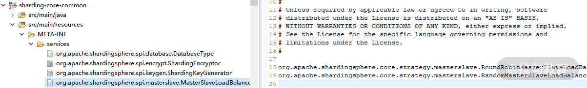
针对 MasterSlaveLoadBalanceAlgorithm 的 SPI 配置
按照这里的配置信息，第一个获取的 SPI 实例应该是 RoundRobinMasterSlaveLoadBalanceAlgorithm，即轮询策略，它的 getDataSource 方法实现如下：
@Override
public String getDataSource(final String name, final String masterDataSourceName, final List<String> slaveDataSourceNames) {
AtomicInteger count = COUNTS.containsKey(name) ? COUNTS.get(name) : new AtomicInteger(0);
COUNTS.putIfAbsent(name, count);
count.compareAndSet(slaveDataSourceNames.size(), 0);
return slaveDataSourceNames.get(Math.abs(count.getAndIncrement()) % slaveDataSourceNames.size());
}
当然，我们也可以通过配置选择随机访问策略，RandomMasterSlaveLoadBalanceAlgorithm 的 getDataSource 更加简单，如下所示：
@Override
public String getDataSource(final String name, final String masterDataSourceName, final List<String> slaveDataSourceNames) {
return slaveDataSourceNames.get(ThreadLocalRandom.current().nextInt(slaveDataSourceNames.size()));
}
至此，关于 ShardingMasterSlaveRouter 的介绍就结束了，通过该类我们可以完成分片信息的主从路由，从而实现读写分离。
在 ShardingSphere 中，还存在一个不含分片信息的主从路由类 MasterSlaveRouter，其实现过程与 ShardingMasterSlaveRouter 非常类似，让我们一起来看一下。
MasterSlaveRouter
从命名上看，ShardingMasterSlaveRouter 类的作用是完成分片条件下的主从路由。通过前面内容的介绍，我们知道该类主要用于路由引擎中，即在普通 ShardingRouter 上再添加一层读写分离路由机制。可以想象这是一种比较偏底层的读写分离机制，我们只是在路由环节对目标数据库做了调整。
接下来，我们将从另一个维度出发讨论读写分离，我们的思路是从更高的层次控制整个读写分离过程。让我们来到 sharding-jdbc-core 工程中，在这里我们曾经讨论过 ShardingDataSourceFactory 类，而这次我们的目标是 MasterSlaveDataSourceFactory，该工厂类的作用是创建一个 MasterSlaveDataSource，如下所示：
public final class MasterSlaveDataSourceFactory {
public static DataSource createDataSource(final Map<String, DataSource> dataSourceMap, final MasterSlaveRuleConfiguration masterSlaveRuleConfig, final Properties props) throws SQLException {
return new MasterSlaveDataSource(dataSourceMap, new MasterSlaveRule(masterSlaveRuleConfig), props);
}
}
MasterSlaveDataSource 的定义如下所示，可以看到该类同样扩展了 AbstractDataSourceAdapter 类。关于 AbstractDataSourceAdapter 以及针对 Connection 和 Statement 的各种适配器类我们已经在 “03 | 规范兼容：JDBC 规范与 ShardingSphere 是什么关系？” 中进行了详细讨论，这里不再展开。
public class MasterSlaveDataSource extends AbstractDataSourceAdapter {
private final MasterSlaveRuntimeContext runtimeContext;
public MasterSlaveDataSource(final Map<String, DataSource> dataSourceMap, final MasterSlaveRule masterSlaveRule, final Properties props) throws SQLException {
super(dataSourceMap);
runtimeContext = new MasterSlaveRuntimeContext(dataSourceMap, masterSlaveRule, props, getDatabaseType());
}
@Override
public final MasterSlaveConnection getConnection() {
return new MasterSlaveConnection(getDataSourceMap(), runtimeContext);
}
}
与其他 DataSource 一样，MasterSlaveDataSource 同样负责创建 RuntimeContext 上下文对象和 Connection 对象。先来看这里的 MasterSlaveRuntimeContext，我们发现与 ShardingRuntimeContext 相比，这个类要简单一点，只是构建了所需的 DatabaseMetaData 并进行缓存。
然后，我们再来看 MasterSlaveConnection。与其他 Connection 类一样，这里也有一组 createStatement 和 prepareStatement 方法用来获取 Statement 和 PreparedStatement，分别对应 MasterSlaveStatement 和 MasterSlavePreparedStatement。
我们来看 MasterSlaveStatement 中的实现，首先还是关注于它的查询方法 executeQuery：
@Override
public ResultSet executeQuery(final String sql) throws SQLException {
if (Strings.isNullOrEmpty(sql)) {
throw new SQLException(SQLExceptionConstant.SQL_STRING_NULL_OR_EMPTY);
}
//清除 StatementExecutor 中的相关变量
clearPrevious();
//通过 MasterSlaveRouter 获取目标 DataSource
Collection<String> dataSourceNames = masterSlaveRouter.route(sql, false);
Preconditions.checkState(1 == dataSourceNames.size(), "Cannot support executeQuery for DML or DDL");
//从 Connection 中获取 Statement
Statement statement = connection.getConnection(dataSourceNames.iterator().next()).createStatement(resultSetType, resultSetConcurrency, resultSetHoldability);
routedStatements.add(statement);
//执行查询并返回结果
return statement.executeQuery(sql);
}
与 ShardingStatement 不同，上述方法并没有通过分片路由获取目标 dataSourceNames，而是直接通过 MasterSlaveRouter 来实现这一目标。同时，我们注意到这里也没有通过 ShardingSphere 的执行引擎和归并引擎来执行 SQL 并归并结果，而是直接调用了 statement 的 executeQuery 完成 SQL 的执行。显然，这个核心步骤是通过 MasterSlaveRouter 实现的路由机制。
MasterSlaveRouter 的 route 方法如下所示：
private Collection<String> route(final SQLStatement sqlStatement) {
//如果是强制主库路由
if (isMasterRoute(sqlStatement)) {
MasterVisitedManager.setMasterVisited();
return Collections.singletonList(masterSlaveRule.getMasterDataSourceName());
}
//通过负载均衡执行从库路由
return Collections.singletonList(masterSlaveRule.getLoadBalanceAlgorithm().getDataSource(
masterSlaveRule.getName(), masterSlaveRule.getMasterDataSourceName(), new ArrayList<>(masterSlaveRule.getSlaveDataSourceNames())));
}
上述代码似曾相识，相关的处理流程，以及背后的 LoadBalanceAlgorithm 我们在介绍 ShardingMasterSlaveRouter 类时已经做了全面展开。通过 dataSourceNames 中的任何一个目标数据库名，我们就可以构建 Connection 并创建用于执行查询的 Statement。
然后，我们来看 MasterSlaveStatement 的 executeUpdate 方法，如下所示：
@Override
public int executeUpdate(final String sql) throws SQLException {
//清除 StatementExecutor 中的相关变量
clearPrevious();
int result = 0;
for (String each : masterSlaveRouter.route(sql, false)) {
//从 Connection 中获取 Statement
Statement statement = connection.getConnection(each).createStatement(resultSetType, resultSetConcurrency, resultSetHoldability);
routedStatements.add(statement);
//执行更新
result += statement.executeUpdate(sql);
}
return result;
}
这里的流程是直接通过 masterSlaveRouter 获取各个目标数据库，然后分别构建 Statement 进行执行。
同样，我们来到 MasterSlavePreparedStatement 类，先来看它的其中一个构造函数（其余的也类似），如下所示：
public MasterSlavePreparedStatement(final MasterSlaveConnection connection, final String sql, final int resultSetType, final int resultSetConcurrency, final int resultSetHoldability) throws SQLException {
if (Strings.isNullOrEmpty(sql)) {
throw new SQLException(SQLExceptionConstant.SQL_STRING_NULL_OR_EMPTY);
}
this.connection = connection;
//创建 MasterSlaveRouter
masterSlaveRouter = new MasterSlaveRouter(connection.getRuntimeContext().getRule(), connection.getRuntimeContext().getParseEngine(),
connection.getRuntimeContext().getProps().<Boolean>getValue(ShardingPropertiesConstant.SQL_SHOW));
for (String each : masterSlaveRouter.route(sql, true)) {
//对每个目标 DataSource 从 Connection 中获取 PreparedStatement
PreparedStatement preparedStatement = connection.getConnection(each).prepareStatement(sql, resultSetType, resultSetConcurrency, resultSetHoldability);
routedStatements.add(preparedStatement);
}
}
可以看到这里构建了 MasterSlaveRouter，然后对于通过 MasterSlaveRouter 路由获取的每个数据库，分别创建一个 PreparedStatement 并保存到 routedStatements 列表中。
然后，我们来看 MasterSlavePreparedStatement 的 executeQuery 方法，如下所示：
@Override
public ResultSet executeQuery() throws SQLException {
Preconditions.checkArgument(1 == routedStatements.size(), "Cannot support executeQuery for DDL");
return routedStatements.iterator().next().executeQuery();
}
对于上述 executeQuery 方法而言，我们只需要获取 routedStatements 中的任何一个 PreparedStatement 进行执行即可。而对于 Update 操作，MasterSlavePreparedStatement 的执行流程也与 MasterSlaveStatement 的一致，如下所示：
@Override
public int executeUpdate() throws SQLException {
int result = 0;
for (PreparedStatement each : routedStatements) {
result += each.executeUpdate();
}
return result;
}
至此，ShardingSphere 中与读写分离相关的核心类以及主要流程介绍完毕。总体而言，这部分的内容因为不涉及分片操作，所以整体结构还是比较直接和明确的。尤其是我们在了解了分片相关的 ShardingDataSource、ShardingConnection、ShardingStatement 和 ShardingPreparedStatement 之后再来理解今天的内容就显得特别简单，很多底层的适配器模式等内容前面都介绍过。
作为总结，我们还是简单梳理一下读写分离相关的类层结构，如下所示：
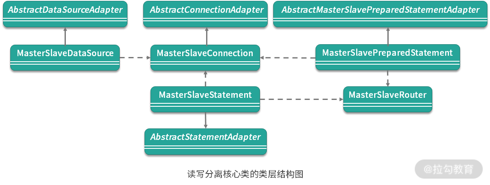
从源码解析到日常开发
在今天的内容中，我们接触到了分布式系统开发过程中非常常见的一个话题，即负载均衡。负载均衡的场景就类似于在多个从库中选择一个目标库进行路由一样，通常需要依赖于一定的负载均衡算法，ShardingSphere 中就提供了随机和轮询这两种常见的实现，我们可以在日常开发过程中参考它的实现方法。
当然，因为 MasterSlaveLoadBalanceAlgorithm 接口是一个 SPI，所以我们也可以定制化新的负载均衡算法并动态加载到 ShardingSphere。
小结与预告
读写分离是 ShardingSphere 分片引擎中的最后一部分内容，在实际应用过程中，我们可以在分片引擎下嵌入读写分离机制，也可以单独使用这个功能。
所以在实现上，ShardingSphere 也提供了两种不同的实现类：一种是分片环境下的 ShardingMasterSlaveRouter，一种是用于单独使用的 MasterSlaveRouter，我们对这两个实现类的原理进行了详细的分析和展开。
最后这里给你留一道思考题：ShardingSphere 中，读写分离引擎与负载均衡算法的集成过程是怎么样的？
从下一课时开始，我们将进入 ShardingSphere 中另一个核心模块的源码解析，这就是分布式事务。
27 分布式事务：如何理解 ShardingSphere 中对分布式事务的抽象过程？
从今天开始，我们将进入一个全新模块，即ShardingSphere 分布式事务。这是一个非常重要的主题，我们将通过三个课时来全面介绍 ShardingSphere 的事务实现机制。
ShardingTransactionManagerEngine
在第 18 课时和第 19 课时的“分布式事务：如何使用强一致事务与柔性事务？”中，我们已经对分布式事务的基本概念做了介绍。
在了解完一些基本概念之后，我们来看 ShardingSphere 中分布式事务模块的代码工程组织结构，我们发现存在三个底层的工程，即 sharding-transaction-core、sharding-transaction-2pc 和 sharding-transaction-base。
从命名上，我们不难看出 sharding-transaction-core 应该包含了分布式事务相关的一些基础核心类，而 sharding-transaction-2pc 和 sharding-transaction-base 分别基于强一致性和最终一致性的两种实现。
这些包结构的命名实际上可以体现在事务类型 TransactionType 的定义上，它是一个枚举，分别代表了本地事务、XA 二阶段提交事务和 BASE 柔性事务，如下所示：
public enum TransactionType {
LOCAL, XA, BASE
}
TransactionType 类位于 sharding-transaction-core 工程中，让我们先来看一下这个工程中的其他内容，首先其冲的就是 ShardingTransactionManagerEngine 接口。
在前面的课程中，我们在 ShardingRuntimeContext 这个上下文对象中第一次看到这个分布式事务管理器的入口，如下所示：
public final class ShardingRuntimeContext extends AbstractRuntimeContext<ShardingRule> {
…
private final ShardingTransactionManagerEngine shardingTransactionManagerEngine;
public ShardingRuntimeContext(final Map<String, DataSource> dataSourceMap, final ShardingRule rule, final Properties props, final DatabaseType databaseType) throws SQLException {
…
//创建分布式事务管理器引擎并初始化
shardingTransactionManagerEngine = new ShardingTransactionManagerEngine();
shardingTransactionManagerEngine.init(databaseType, dataSourceMap);
}
…
}
在 ShardingTransactionManagerEngine 的构造函数中，调用了如下所示的 loadShardingTransactionManager 方法：
private final Map<TransactionType, ShardingTransactionManager> transactionManagerMap = new EnumMap<>(TransactionType.class);
private void loadShardingTransactionManager() {
//通过 ServiceLoader 加载 ShardingTransactionManager 实现类
for (ShardingTransactionManager each : ServiceLoader.load(ShardingTransactionManager.class)) {
if (transactionManagerMap.containsKey(each.getTransactionType())) {
log.warn("Find more than one {} transaction manager implementation class, use `{}` now",
each.getTransactionType(), transactionManagerMap.get(each.getTransactionType()).getClass().getName());
continue;
}
transactionManagerMap.put(each.getTransactionType(), each);
}
}
可以看到，这里直接使用了 JDK 中 ServiceLoader 工具类的 load 方法来加载 ShardingTransactionManager 的实现类，这是使用 SPI 实现微内核架构的最直接的方式，上述方法的作用就是加载类路径上的 ShardingTransactionManager 并缓存在内存中。在 ShardingSphere 中，ShardingTransactionManager 是对分布式事务管理器的一种抽象。我们在后续内容中会具体展开。
然后，我们看到在 ShardingRuntimeContext 中，当构建完 ShardingTransactionManagerEngine 对象之后，会调用它的 init 方法进行初始化，如下所示：
public void init(final DatabaseType databaseType, final Map<String, DataSource> dataSourceMap) {
for (Entry<TransactionType, ShardingTransactionManager> entry : transactionManagerMap.entrySet()) {
entry.getValue().init(databaseType, getResourceDataSources(dataSourceMap));
}
}
private Collection<ResourceDataSource> getResourceDataSources(final Map<String, DataSource> dataSourceMap) {
List<ResourceDataSource> result = new LinkedList<>();
for (Map.Entry<String, DataSource> entry : dataSourceMap.entrySet()) {
//创建 ResourceDataSource 对象
result.add(new ResourceDataSource(entry.getKey(), entry.getValue()));
}
return result;
}
这部分的代码相当于是执行所获取 ShardingTransactionManager 的 init 方法对其进行初始化。在初始化过程中，我们在这里还看到了一个新的数据源对象 ResourceDataSource，如下所示：
public final class ResourceDataSource {
private final String originalName;
private String uniqueResourceName;
private final DataSource dataSource;
public ResourceDataSource(final String originalName, final DataSource dataSource) {
this.originalName = originalName;
this.dataSource = dataSource;
this.uniqueResourceName = ResourceIDGenerator.getInstance().nextId() + originalName;
}
}
ResourceDataSource 的作用就是保存数据库名和 DataSource 的信息，并为这个 ResourceDataSource 构建一个唯一的资源名称，构建过程使用了 ResourceIDGenerator 工具类。
我们可以学习一下它的实现方法，如下所示，可以看到这里用到了单例模式和原子类 AtomicInteger：
public final class ResourceIDGenerator {
private static final ResourceIDGenerator INSTANCE = new ResourceIDGenerator();
private final AtomicInteger count = new AtomicInteger();
//创建单例
public static ResourceIDGenerator getInstance() {
return INSTANCE;
}
String nextId() {
return String.format("resource-%d-", count.incrementAndGet());
}
}
让我们再回到 ShardingTransactionManagerEngine，来看它的 getTransactionManager 方法，如下所示：
public ShardingTransactionManager getTransactionManager(final TransactionType transactionType) {
ShardingTransactionManager result = transactionManagerMap.get(transactionType);
if (TransactionType.LOCAL != transactionType) {
Preconditions.checkNotNull(result, "Cannot find transaction manager of [%s]", transactionType);
}
return result;
}
这里只是根据事务类型获取了对应的 ShardingTransactionManager。最后，ShardingTransactionManagerEngine 中还有一个 close 方法，如下所示：
public void close() throws Exception {
for (Entry<TransactionType, ShardingTransactionManager> entry : transactionManagerMap.entrySet()) {
entry.getValue().close();
}
}
通过上述分析，我们可以认为，ShardingTransactionManagerEngine 作为分布式事务的入口，更多的起到对 ShardingTransactionManager 的管理和维护作用，相当于是一个容器。
那么 ShardingTransactionManager 是如何运作的呢？让我们一起来看一下。
ShardingTransactionManager
ShardingTransactionManager 接口位于 sharding-transaction-core 工程的 org.apache.shardingsphere.transaction.spi 包中，定义如下：
public interface ShardingTransactionManager extends AutoCloseable {
//根据数据库类型和 ResourceDataSource 进行初始化
void init(DatabaseType databaseType, Collection<ResourceDataSource> resourceDataSources);
//获取 TransactionType
TransactionType getTransactionType();
//判断是否在事务中
boolean isInTransaction();
//获取支持事务的 Connection
Connection getConnection(String dataSourceName) throws SQLException;
//开始事务
void begin();
//提交事务
void commit();
//回滚事务
void rollback();
}
我们看到从该接口中可以根据 DataSource 名获取 Connection。同时，对比后面要介绍的 JTA 中的 TransactionManager 接口，我们同样找到了作为一个事务管理器而言所必需的 begin、commit 和 rollback 这三个基本操作。ShardingSphere 还为这些基本操作专门提供了一个枚举 TransactionOperationType。
我们通过查看 ShardingSphere 中 ShardingTransactionManager 的类层结构，发现存在两个实现类，即 XAShardingTransactionManager 和 SeataATShardingTransactionManager 类。
1.XAShardingTransactionManager
要理解基于 XA 协议的 ShardingTransactionManager，我们同样需要具备一定的理论知识。XA 是由 X/Open 组织提出的两阶段提交协议，是一种分布式事务的规范，XA 规范主要定义了面向全局的事务管理器 TransactionManager（TM）和面向局部的资源管理器 ResourceManager（RM）之间的接口。
XA 接口是双向的系统接口，在 TransactionManager，以及一个或多个 ResourceManager 之间形成通信桥梁。通过这样的设计，TransactionManager 控制着全局事务，管理事务生命周期，并协调资源，而 ResourceManager 负责控制和管理包括数据库相关的各种实际资源。
XA 的整体结构以及 TransactionManager 和 ResourceManager 之间的交互过程参考下图：
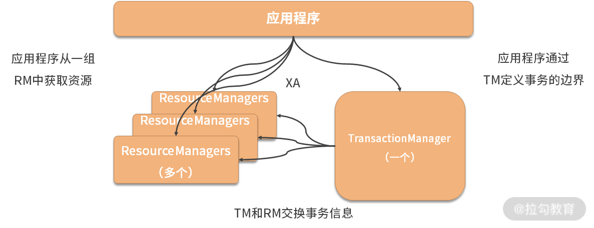
XA 协议组成结构图
所有关于分布式事务的介绍中都必然会讲到两阶段提交，因为它是实现 XA 分布式事务的关键。我们知道在两阶段提交过程中，存在协调者和参与者两种角色。在上图中，XA 引入的 TransactionManager 充当着全局事务中的“协调者”角色，而图中的 ResourceManager 相当于“参与者”角色，对自身内部的资源进行统一管理。
理解了这些概念之后，我们再来看 Java 中的实现。作为 Java 平台中的事务规范，JTA（Java Transaction API）也定义了对 XA 事务的支持。实际上，JTA 是基于 XA 架构进行建模的，在 JTA 中，事务管理器抽象为 javax.transaction.TransactionManager 接口，并通过底层事务服务进行实现。
和很多其他的 Java 规范一样，JTA 仅仅定义了接口，具体的实现则是由供应商负责提供。目前JTA 的实现分成两大类，其中一类是直接集成在应用服务器中，例如 JBoss；另一类则是独立的实现，例如 ShardingSphere 中所采用的 Atomikos 和 Bitronix，这些实现可以应用在那些不使用 J2EE 应用服务器的环境里（例如普通的 Java 应用）用以提供分布式事务保证。另一方面，JTA 接口里的 ResourceManager 同样需要数据库厂商提供 XA 的驱动实现。
接下来，让我们对 JTA 中的相关核心类做进一步分析，这些内容是后续理解 ShardingSphere 中分布式事务实现机制的基础。
在 JTA 中，提供了以下几个核心接口：
- UserTransaction
该接口是面向开发人员的接口，能够编程控制事务处理。
- TransactionManager
通过该接口允许应用程序服务器来控制分布式事务。
- Transaction
代表正在管理应用程序的事务。
- XAResource
这是一个面向提供商的实现接口，是一个基于 XA 协议的 Java 映射，各个数据库提供商在提供访问自己资源的驱动时，必须实现这样的接口。
另外，在 javax.sql 包中还存在几个与 XA 相关的核心类，即代表连接的 XAConnection、代表数据源的 XADataSource，以及代表事务编号的 Xid。
我们采用上述核心类来简单模拟一下基于 XA 的分布式事务的常见实现过程的伪代码。对于一个跨库操作而言，一般我们可以基于 UserTransaction 接口实现如下的操作流程：
UserTransaction userTransaction = null;
Connection connA = null;
Connection connB = null;
try{
userTransaction.begin();
//实现跨库操作
connA.execute("sql1")
connB.execute("sql2")
userTransaction.commit();
}catch(){
userTransaction.rollback();
}
要想上述代码发挥作用，这里的连接对象 Connection 就得支持 XAResource 接口，也就涉及一系列关于 XADataSource 和 XAConnection 的处理过程。
让我们回到 ShardingSphere，来看 XAShardingTransactionManager 类，该类是分布式事务的 XA 实现类，它主要负责对实际的 DataSource 进行管理和适配，并且将接入端事务的 begin/commit/rollback 操作委托给具体的 XA 事务管理器，例如 XAShardingTransactionManager 就会使用 XATransactionManager 中的 TransactionManager 完成 commit 操作：
@Override
public void commit() {
xaTransactionManager.getTransactionManager().commit();
}
这里的 XATransactionManager 就是对各种第三方 XA 事务管理器的一种抽象，封装了对
Atomikos、Bitronix 等第三方工具的实现方式。我们会在下一课时中对这个 XATransactionManager 以及 XAShardingTransactionManager 进行具体展开。
作为总结，我们梳理在 ShardingSphere 中与 XA 两阶段提交相关的核心类之间的关系，如下图所示：

2.SeataATShardingTransactionManager
介绍完 XAShardingTransactionManager 之后，我们来看上图中 ShardingTransactionManager 接口的另一个实现类 SeataATShardingTransactionManager。因为基于不同技术体系和工作原理，所以 SeataATShardingTransactionManager 中的实现方法也完全不同，让我们来看一下。
在介绍 SeataATShardingTransactionManager 之前，我们同样有必要对 Seata 本身做一些展开。与 XA 不同，Seata 框架中一个分布式事务包含三种角色，除了 XA 中同样具备的 TransactionManager（TM）和 ResourceManager（RM） 之外，还存在一个事务协调器 TransactionCoordinator (TC)，维护全局事务的运行状态，负责协调并驱动全局事务的提交或回滚。
其中，TM 是一个分布式事务的发起者和终结者，TC 负责维护分布式事务的运行状态，而 RM 则负责本地事务的运行。
Seata 的整体架构图如下所示：

Seata 分布式事务组成结构图（来自 Seata 官网）
基于Seata 框架，一个分布式事务的执行流程包含如下五个步骤：

我们同样会在下一课时中对这些步骤，以及其中涉及的核心类进行具体展开。
从源码解析到日常开发
今天的内容我们主要关注于 ShardingSphere 中对分布式事务的抽象过程，本身没有涉及过多的源码分析。我们学习的关注点在于掌握 XA 协议的特点和核心类，以及基于 Seata 框架完成一次分布式事务执行的过程。
小结与预告
这是介绍 ShardingSphere 分布式事务实现原理的第一个课时，我们重点讲解了 ShardingSphere 是如何基于同一套体系来完成对 XA 和 Seata 这两种不同分布式事务实现方式的统一抽象和封装。
这里给你留一道思考题：ShardingSphere 对不同的分布式事务实现技术做了哪些抽象？欢迎你在留言区与大家讨论，我将逐一点评解答。
在接下来的两个课时中，我们就将基于今天讲到的很多概念和步骤，从源码角度出发深入剖析分布式事务的实现原理和过程。
28 分布式事务：ShardingSphere 中如何集成强一致性事务和柔性事务支持？（上）
今天我们将在上一课时的基础上，详细展开 ShardingSphere 中分布式事务的具体实现过程。首先，我们将介绍支持强一致性事务的 XAShardingTransactionManager。
XAShardingTransactionManager
让我们回到 ShardingSphere，来到 sharding-transaction-xa-core 工程的 XAShardingTransactionManager 类，该类是分布式事务的 XA 实现类。
我们先来看 XAShardingTransactionManager 类的定义和所包含的变量：
public final class XAShardingTransactionManager implements ShardingTransactionManager {
private final Map<String, XATransactionDataSource> cachedDataSources = new HashMap<>();
private final XATransactionManager xaTransactionManager = XATransactionManagerLoader.getInstance().getTransactionManager();
}
可以看到 XAShardingTransactionManager 实现了上一课时中介绍的 ShardingTransactionManager 接口，并保存着一组 XATransactionDataSource。同时，XATransactionManager 实例的加载仍然是采用了 JDK 中的 ServiceLoader 类，如下所示：
private XATransactionManager load() {
Iterator<XATransactionManager> xaTransactionManagers = ServiceLoader.load(XATransactionManager.class).iterator();
if (!xaTransactionManagers.hasNext()) {
return new AtomikosTransactionManager();
}
XATransactionManager result = xaTransactionManagers.next();
if (xaTransactionManagers.hasNext()) {
log.warn("There are more than one transaction mangers existing, chosen first one by default.");
}
return result;
}
XATransactionManager 就是对各种第三方 XA 事务管理器的一种抽象，通过上述代码，可以看到在找不到合适的 XATransactionManager 的情况下，系统默认会创建一个 AtomikosTransactionManager。而这个 XATransactionManager 的定义实际上是位于单独的一个代码工程中，即 sharding-transaction-xa-spi 工程，该接口定义如下所示：
public interface XATransactionManager extends AutoCloseable {
//初始化 XA 事务管理器
void init();
//注册事务恢复资源
void registerRecoveryResource(String dataSourceName, XADataSource xaDataSource);
//移除事务恢复资源
void removeRecoveryResource(String dataSourceName, XADataSource xaDataSource);
//嵌入一个 SingleXAResource 资源
void enlistResource(SingleXAResource singleXAResource);
//返回 TransactionManager
TransactionManager getTransactionManager();
}
这些接口方法从命名上基本可以理解其含义，但详细的用法我们还是要结合具体的 XATransactionManager 实现类进行理解。这里我们还发现了一个 SingleXAResource，这个类同样位于 sharding-transaction-xa-spi 工程中，从名称上看，应该是对 JTA 中 XAResource 接口的一种实现，我们来看一下：
public final class SingleXAResource implements XAResource {
private final String resourceName;
private final XAResource delegate;
@Override
public void start(final Xid xid, final int i) throws XAException {
delegate.start(xid, i);
}
@Override
public void commit(final Xid xid, final boolean b) throws XAException {
delegate.commit(xid, b);
}
@Override
public void rollback(final Xid xid) throws XAException {
delegate.rollback(xid);
}
@Override
public boolean isSameRM(final XAResource xaResource) {
SingleXAResource singleXAResource = (SingleXAResource) xaResource;
return resourceName.equals(singleXAResource.getResourceName());
}
…
}
可以看到 SingleXAResource 虽然实现了 JTA 的 XAResource 接口，但更像是一个代理类，具体的操作方法还是委托给了内部的 XAResource 进行实现。
接下来，我们将围绕 XA 分布式事务中的几个核心类展开讨论。
1.XADataSource
XADataSource 属于 JDBC 规范中的内容，我们在“03 | 规范兼容：JDBC 规范与 ShardingSphere 是什么关系？”中已经提到过这个接口，该接口的作用就是获取 XAConnection。
那么 XADataSource 是如何构建出来的呢？我们首先找到了一个 XADataSourceFactory 工厂类，显然该类负责生成具体的 XADataSource，如下所示的就是完成这一工作的 build 方法：
public static XADataSource build(final DatabaseType databaseType, final DataSource dataSource) {
XADataSourceDefinition xaDataSourceDefinition = XADataSourceDefinitionFactory.getXADataSourceDefinition(databaseType);
XADataSource result = createXADataSource(xaDataSourceDefinition);
Properties xaProperties = xaDataSourceDefinition.getXAProperties(SWAPPER.swap(dataSource));
PropertyUtils.setProperties(result, xaProperties);
return result;
}
这里首先用到了一个 XADataSourceDefinition 接口，从命名上看应该是关于 XADataSource 的一种定义，如下所示：
public interface XADataSourceDefinition extends DatabaseTypeAwareSPI {
//获取 XA 驱动类名
Collection<String> getXADriverClassName();
//获取 XA 属性
Properties getXAProperties(DatabaseAccessConfiguration databaseAccessConfiguration);
}
可以看到这个接口继承了 DatabaseTypeAwareSPI，从命名上看这也是一个 SPI 接口，其定义如下所示：
public interface DatabaseTypeAwareSPI {
//获取数据库类型
String getDatabaseType();
}
在 ShardingSphere 中，继承 DatabaseTypeAwareSPI 接口的就只有 XADataSourceDefinition 接口，而后者存在一批实现类，整体的类层结构如下所示：

XADataSourceDefinition 的实现类
这里以 MySQLXADataSourceDefinition 为例展开讨论，该类分别实现了 DatabaseTypeAwareSPI 和 XADataSourceDefinition 这两个接口中所定义的三个方法：
public final class MySQLXADataSourceDefinition implements XADataSourceDefinition {
@Override
public String getDatabaseType() {
return "MySQL";
}
@Override
public Collection<String> getXADriverClassName() {
return Arrays.asList("com.mysql.jdbc.jdbc2.optional.MysqlXADataSource", "com.mysql.cj.jdbc.MysqlXADataSource");
}
@Override
public Properties getXAProperties(final DatabaseAccessConfiguration databaseAccessConfiguration) {
Properties result = new Properties();
result.setProperty("user", databaseAccessConfiguration.getUsername());
result.setProperty("password", Optional.fromNullable(databaseAccessConfiguration.getPassword()).or(""));
result.setProperty("URL", databaseAccessConfiguration.getUrl());
…
return result;
}
}
我们从这里得知，作为数据库供应商，MySQL 提供了两个 XADataSource 的驱动程序。而在 getXAProperties 中，我们发现 URL、Username 和 Password 等信息是通过 DatabaseAccessConfiguration 对象进行获取的，该对象在本文后面会介绍到。
另一方面，因为 DatabaseTypeAwareSPI 接口命名中带有 SPI，所以我们不难想象各种 XADataSourceDefinition 实际上也是基于 SPI 机制进行加载的，这在用于获取 XADataSourceDefinition 的工厂类 XADataSourceDefinitionFactory 中可以得到确认：
public final class XADataSourceDefinitionFactory {
private static final Map<DatabaseType, XADataSourceDefinition> XA_DATA_SOURCE_DEFINITIONS = new HashMap<>();
static {
//通过 ServiceLoader 加载 XADataSourceDefinition
for (XADataSourceDefinition each : ServiceLoader.load(XADataSourceDefinition.class)) {
XA_DATA_SOURCE_DEFINITIONS.put(DatabaseTypes.getActualDatabaseType(each.getDatabaseType()), each);
}
}
public static XADataSourceDefinition getXADataSourceDefinition(final DatabaseType databaseType) {
return XA_DATA_SOURCE_DEFINITIONS.get(databaseType);
}
}
同样，在 sharding-transaction-xa-core 工程中，我们也发现了如下所示的 SPI 配置信息：

sharding-transaction-xa-core 工程中的 SPI 配置
当根据数据库类型获取了对应的 XADataSourceDefinition 之后，我们就可以根据 XADriverClassName 来创建具体的 XADataSource：
private static XADataSource loadXADataSource(final String xaDataSourceClassName) {
Class xaDataSourceClass;
try {
//加载 XADataSource 实现类
xaDataSourceClass = Thread.currentThread().getContextClassLoader().loadClass(xaDataSourceClassName);
} catch (final ClassNotFoundException ignored) {
try {
xaDataSourceClass = Class.forName(xaDataSourceClassName);
} catch (final ClassNotFoundException ex) {
throw new ShardingException("Failed to load [%s]", xaDataSourceClassName);
}
}
try {
return (XADataSource) xaDataSourceClass.newInstance();
} catch (final InstantiationException | IllegalAccessException ex) {
throw new ShardingException("Failed to instance [%s]", xaDataSourceClassName);
}
}
这里会先从当前线程的 ContextClassLoader 中加载目标驱动的实现类，如果加载不到，就直接通过反射进行创建，最后返回 XADataSource 的实例对象。
当获取了 XADataSource 的实例对象之后，我们需要设置它的属性，这部分工作是由 DataSourceSwapper 类来完成的。在这里，ShardingSphere 针对不同类型的数据库连接池工具还专门做了一层封装，提取了 DataSourcePropertyProvider 接口用于对 DataSource的URL 、Username 和 Password 等基础信息进行抽象。
DataSourcePropertyProvider 接口的定义如下所示：
public interface DataSourcePropertyProvider {
String getDataSourceClassName();
String getURLPropertyName();
String getUsernamePropertyName();
String getPasswordPropertyName();
}
DataSourcePropertyProvider 的实现类有两个，一个是 DefaultDataSourcePropertyProvider，另一个是 HikariCPPropertyProvider。ShardingSphere 默认使用的是 HikariCPPropertyProvider，这点可以从如下所示的 SPI 配置文件中得到确认：
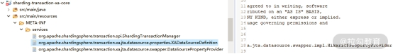
DataSourcePropertyProvider 的 SPI 配置
HikariCPPropertyProvider 实现了 DataSourcePropertyProvider 接口，并包含了对这些基础信息的定义：
public final class HikariCPPropertyProvider implements DataSourcePropertyProvider {
@Override
public String getDataSourceClassName() {
return "com.zaxxer.hikari.HikariDataSource";
}
@Override
public String getURLPropertyName() {
return "jdbcUrl";
}
@Override
public String getUsernamePropertyName() {
return "username";
}
@Override
public String getPasswordPropertyName() {
return "password";
}
}
然后在 DataSourceSwapper 的 swap 方法中，实际上就是通过反射来构建 findGetterMethod 工具方法，并以此获取 URL、Username 和 Password 等基础信息，并返回一个 DatabaseAccessConfiguration 对象供具体的 XADataSourceDefinition 进行使用。
swap 方法的实现如下所示：
public DatabaseAccessConfiguration swap(final DataSource dataSource) {
DataSourcePropertyProvider provider = DataSourcePropertyProviderLoader.getProvider(dataSource);
try {
String url = (String) findGetterMethod(dataSource, provider.getURLPropertyName()).invoke(dataSource);
String username = (String) findGetterMethod(dataSource, provider.getUsernamePropertyName()).invoke(dataSource);
String password = (String) findGetterMethod(dataSource, provider.getPasswordPropertyName()).invoke(dataSource);
return new DatabaseAccessConfiguration(url, username, password);
} catch (final ReflectiveOperationException ex) {
throw new ShardingException("Cannot swap data source type: `%s`, please provide an implementation from SPI `%s`",
dataSource.getClass().getName(), DataSourcePropertyProvider.class.getName());
}
}
至此，我们对 XADataSource 的构建过程描述完毕。这个过程不算复杂，但涉及的类比较多，值得我们以 XADataSourceFactory 为中心画一张类图作为总结：
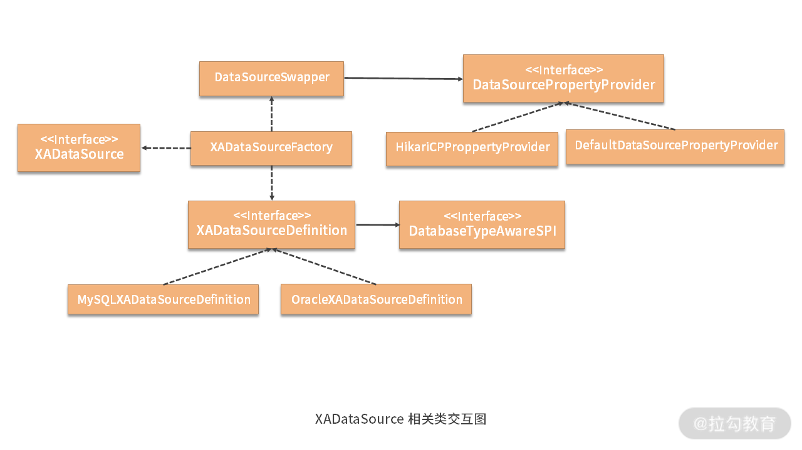
2.XAConnection
讲完 XADataSource，我们接着来讲 XAConnection，XAConnection 同样是 JDBC 规范中的接口。
负责创建 XAConnection 的工厂类 XAConnectionFactory 如下所示：
public final class XAConnectionFactory {
//基于普通 Connection 创建 XAConnection
public static XAConnection createXAConnection(final DatabaseType databaseType, final XADataSource xaDataSource, final Connection connection) {
switch (databaseType.getName()) {
case "MySQL":
return new MySQLXAConnectionWrapper().wrap(xaDataSource, connection);
case "MariaDB":
return new MariaDBXAConnectionWrapper().wrap(xaDataSource, connection);
case "PostgreSQL":
return new PostgreSQLXAConnectionWrapper().wrap(xaDataSource, connection);
case "H2":
return new H2XAConnectionWrapper().wrap(xaDataSource, connection);
default:
throw new UnsupportedOperationException(String.format("Cannot support database type: `%s`", databaseType));
}
}
}
可以看到，相较 XADataSource，创建 XAConnection 的过程就显得直接明了。这里通过一个 switch 语句根据数据库类型分别构建了对应的 ConnectionWrapper，然后再调用 wrap 方法返回 XAConnection。
我们还是以 MySQLXAConnectionWrapper 为例来分析具体的实现过程。
MySQLXAConnectionWrapper 实现了 XAConnectionWrapper 接口，所以我们先来看 XAConnectionWrapper 接口的定义：
public interface XAConnectionWrapper {
//基于 XADataSource 把 Connection 包装成 XAConnection
XAConnection wrap(XADataSource xaDataSource, Connection connection);
}
XAConnectionWrapper 接口只有一个方法，即根据传入的 XADataSource 和一个普通 Connection 对象创建出一个新的 XAConnection 对象。XAConnectionWrapper 接口的类层结构如下所示：

XAConnectionWrapper 接口的实现类
MySQLXAConnectionWrapper 中的 warp 方法如下所示：
@Override
public XAConnection wrap(final XADataSource xaDataSource, final Connection connection) {
//获取真实 Connection 对象
Connection physicalConnection = unwrapPhysicalConnection(xaDataSource.getClass().getName(), connection);
Method method = xaDataSource.getClass().getDeclaredMethod("wrapConnection", Connection.class);
method.setAccessible(true);
//通过反射包装 Connection 对象
return (XAConnection) method.invoke(xaDataSource, physicalConnection);
}
上述方法的流程为先通过 unwrapPhysicalConnection 将传入的 Connection 转变为一个真实的连接对象，然后再基于 XADataSource 的 wrapConnection 方法通过反射对这个物理连接进行包装，从而形成一个 XAConnection 对象。
对于 Mysql 而言，我们在前面的内容中已经知道它有两种 XADataSource 驱动类。而在 MySQLXAConnectionWrapper 我们同样找到了如下所示的这两种驱动类的类名定义：
private static final String MYSQL_XA_DATASOURCE_5 = "com.mysql.jdbc.jdbc2.optional.MysqlXADataSource";
private static final String MYSQL_XA_DATASOURCE_8 = "com.mysql.cj.jdbc.MysqlXADataSource";
显然，根据数据库版本的不同，这两个驱动类的行为也有所不同。因此，unwrapPhysicalConnection 的处理过程如下所示：
private Connection unwrapPhysicalConnection(final String xaDataSourceClassName, final Connection connection) {
switch (xaDataSourceClassName) {
case MYSQL_XA_DATASOURCE_5:
return (Connection) connection.unwrap(Class.forName("com.mysql.jdbc.Connection"));
case MYSQL_XA_DATASOURCE_8:
return (Connection) connection.unwrap(Class.forName("com.mysql.cj.jdbc.JdbcConnection"));
default:
throw new UnsupportedOperationException(String.format("Cannot support xa datasource: `%s`", xaDataSourceClassName));
}
}
作为对比，我们再来看 PostgreSQLXAConnectionWrapper，它的 wrap 方法则比较简单，如下所示。显然，这部分内容的理解需要对不同的数据库驱动有一定的了解。
public XAConnection wrap(final XADataSource xaDataSource, final Connection connection) {
BaseConnection physicalConnection = (BaseConnection) connection.unwrap(Class.forName("org.postgresql.core.BaseConnection"));
return new PGXAConnection(physicalConnection);
}
3.XATransactionDataSource
介绍完了 XADataSource 和 XAConnection 的创建过程之后，让我们回到 XAShardingTransactionManager，我们发现这里用到的 DataSource 并不是 JDBC 中原生的 XADataSource，而是一种 XATransactionDataSource。
我们来到这个 XATransactionDataSource 类，该类的变量和构造函数如下所示：
private final DatabaseType databaseType;
private final String resourceName;
private final DataSource dataSource;
private XADataSource xaDataSource;
private XATransactionManager xaTransactionManager;
public XATransactionDataSource(final DatabaseType databaseType, final String resourceName, final DataSource dataSource, final XATransactionManager xaTransactionManager) {
this.databaseType = databaseType;
this.resourceName = resourceName;
this.dataSource = dataSource;
if (!CONTAINER_DATASOURCE_NAMES.contains(dataSource.getClass().getSimpleName())) {
this.xaDataSource = XADataSourceFactory.build(databaseType, dataSource);
this.xaTransactionManager = xaTransactionManager;
xaTransactionManager.registerRecoveryResource(resourceName, xaDataSource);
}
}
上述变量我们都认识，而在构造函数中，调用了 XATransactionManager 类中的 registerRecoveryResource 方法将构建的 XADataSource 作为一种资源进行注册。
然后，我们来看 XATransactionDataSource 中的核心方法 getConnection，如下所示：
public Connection getConnection() throws SQLException, SystemException, RollbackException {
if (CONTAINER_DATASOURCE_NAMES.contains(dataSource.getClass().getSimpleName())) {
return dataSource.getConnection();
}
//从DataSource中 构建一个 Connection
Connection result = dataSource.getConnection();
//通过 XAConnectionFactory 创建一个 XAConnection
XAConnection xaConnection = XAConnectionFactory.createXAConnection(databaseType, xaDataSource, result);
//从 XATransactionManager 中获取 Transaction 对象
final Transaction transaction = xaTransactionManager.getTransactionManager().getTransaction();
//判当前线程中是否存在这个 Transaction
if (!enlistedTransactions.get().contains(transaction)) {
//将 XAConnection 中的 XAResource 与目标 Transaction 对象关联起来
transaction.enlistResource(new SingleXAResource(resourceName, xaConnection.getXAResource()));
//Transaction 中注册一个 Synchronization 接口
transaction.registerSynchronization(new Synchronization() {
@Override
public void beforeCompletion() {
enlistedTransactions.get().remove(transaction);
}
@Override
public void afterCompletion(final int status) {
enlistedTransactions.get().clear();
}
});
//将该 Transaction 对象放入到当前线程中
enlistedTransactions.get().add(transaction);
}
return result;
}
这里先从 DataSource 中构建一个 Connection，然后传入到 XAConnectionFactory 中创建一个 XAConnection，接着从 XATransactionManager 中获取 Transaction 对象。请注意在 XATransactionDataSource 中存在一个 ThreadLocal 变量 enlistedTransactions，用于保存当前线程所涉及的 Transaction 对象列表：
private final ThreadLocal<Set<Transaction>> enlistedTransactions = new ThreadLocal<Set<Transaction>>() {
@Override
public Set<Transaction> initialValue() {
return new HashSet<>();
}
};
在上述方法中，当从 XATransactionManager 中获取 Transaction 对象之后，会先判断 enlistedTransactions中 是否存在该 Transaction 对象，如果没有，则将 XAConnection 中的 XAResource 与目标 Transaction 对象关联起来。
然后我们再来看 Transaction 对象的 registerSynchronization 方法的使用方法，该方法注册了一个 Synchronization 接口，该接口包含了 beforeCompletion 和 afterCompletion 这两个方法。
在二阶段提交之前，TransctionManager 会调用 Synchronization 接口的 beforeCompletion 方法；而当事务结束时，TransctionManager 会调用 Synchronization 接口的 afterCompletion方法。我们在 getConnection 方法中看到这两个方法的应用。最终，我们把该 Transaction 对象放入到线程安全的 enlistedTransactions 中。
最后，我们来看一下 XATransactionDataSource 的 close 方法，如下所示：
@Override
public void close() {
if (!CONTAINER_DATASOURCE_NAMES.contains(dataSource.getClass().getSimpleName())) {
xaTransactionManager.removeRecoveryResource(resourceName, xaDataSource);
} else {
close(dataSource);
}
}
可以看到，这里调用了 XATransactionManager 的 removeRecoveryResource 方法将资源进行移出。
至此，基于 XATransactionDataSource 获取 Connection 的过程也介绍完毕。关于 XATransactionManager的 具体内容我们放在下一课时中继续进行探讨。
从源码解析到日常开发
ShardingSphere 作为一款完全兼容 JDBC 规范的分布式数据库中间件，同样完成了针对分布式事务中的相关对象的兼容。今天的课程中，进一步强化了我们对 JDBC 规范的理解和如何扩展JDBC 规范中核心接口的方法。同时，在 MySQLXAConnectionWrapper 这个 Wrapper 类中，我们也再次看到使用反射技术创建 XAConnection 对象的实现方法。这些开发技巧都值得我们进行学习和应用。
小结与预告
分布式事务是一个相对复杂的概念，ShardingSphere 中提供了强一致性和最终一致性两种实现方案。今天的内容我们围绕基于 XA 协议的分片事务管理器 XAShardingTransactionManager 展开了讨论，在理解 XAShardingTransactionManager 中 XADataSource、XAConnection 等核心对象时，重点还是需要站在 JDBC 规范的基础上，掌握与分布式事务集成和兼容的整个过程，本课时对这一过程进行了详细的介绍。
这里给你留一道思考题：ShardingSphere 中对分布式环境下的强一致性事务做了哪些维度的抽象？欢迎你在留言区与大家讨论，我将逐一点评解答。
XAShardingTransactionManager 的内容很多，下一课时，我们将在今天课时的基础上，继续探讨 XAShardingTransactionManager 的剩余部分内容，以及 ShardingSphere 中另一个分片事务管理器 SeataATShardingTransactionManager。
29 分布式事务：ShardingSphere 中如何集成强一致性事务和柔性事务支持？（下）
在上一课时中，我们针对 ShardingSphere 中支持强一致性事务的 XAShardingTransactionManager 的部分内容进行了详细的展开，今天我们继续讲解该类的剩余内容，同时也会介绍支持柔性事务的 SeataATShardingTransactionManager。
XAShardingTransactionManager
关于 XAShardingTransactionManager，上一讲中我们介绍了 XADataSource、XAConnection 和 XATransactionDataSource 等核心类。
接下来，我们在上一讲的基础上给出 XATransactionManager 和 ShardingConnection 类的实现过程。
1.XATransactionManager
让我们先回到 XAShardingTransactionManager。我们已经在前面介绍了 XAShardingTransactionManager 中的变量，接下来看一下它所实现的方法，首先是如下所示的 init 方法：
public void init(final DatabaseType databaseType, final Collection<ResourceDataSource> resourceDataSources) {
for (ResourceDataSource each : resourceDataSources) {
//创建XATransactionDataSource并进行缓存
cachedDataSources.put(each.getOriginalName(), new XATransactionDataSource(databaseType, each.getUniqueResourceName(), each.getDataSource(), xaTransactionManager));
}
//初始化XATransactionManager
xaTransactionManager.init();
}
上述方法根据传入的 ResourceDataSource 构建了 XATransactionDataSource 并放入缓存中，同时对通过 SPI 机制创建的 XATransactionManager 也执行了它的 init 方法进行初始化。
XAShardingTransactionManager 的 getTransactionType、isInTransaction 和 getConnection 方法都比较简单，如下所示：
@Override
public TransactionType getTransactionType() {
return TransactionType.XA;
}
@Override
public boolean isInTransaction() {
return Status.STATUS_NO_TRANSACTION != xaTransactionManager.getTransactionManager().getStatus();
}
@Override
public Connection getConnection(final String dataSourceName) throws SQLException {
try {
return cachedDataSources.get(dataSourceName).getConnection();
} catch (final SystemException | RollbackException ex) {
throw new SQLException(ex);
}
}
而与事务操作相关的 begin、commit 和 rollback 方法的实现同样比较简单，都是直接委托保存在 XATransactionManager 中的 TransactionManager 进行完成，如下所示：
@Override
public void begin() {
xaTransactionManager.getTransactionManager().begin();
}
@Override
public void commit() {
xaTransactionManager.getTransactionManager().commit();
}
@Override
public void rollback() {
xaTransactionManager.getTransactionManager().rollback();
}
至此，sharding-transaction-xa-core 工程中的所有内容都已经介绍完毕。让我们转到 sharding-transaction-xa-atomikos-manager 工程，看看 AtomikosTransactionManager 的实现，这也是 ShardingSphere 中关于 TransactionManager 的默认实现。
而在此之前，让我们先来看一下代表资源的 AtomikosXARecoverableResource 的实现，如下所示：
public final class AtomikosXARecoverableResource extends JdbcTransactionalResource {
private final String resourceName;
AtomikosXARecoverableResource(final String serverName, final XADataSource xaDataSource) {
super(serverName, xaDataSource);
resourceName = serverName;
}
@Override
public boolean usesXAResource(final XAResource xaResource) {
return resourceName.equals(((SingleXAResource) xaResource).getResourceName());
}
}
可以看到，这里的 usesXAResource 方法实际上就是通过基于对 SingleXAResource 的 ResourceName 进行比对来确定是否在使用资源，这也是为什么要设计包装了 XAResource 的 SingleXAResource 类的原因。
AtomikosTransactionManager 中使用了 AtomikosXARecoverableResource，其实现过程如下所示：
public final class AtomikosTransactionManager implements XATransactionManager {
private final UserTransactionManager transactionManager = new UserTransactionManager();
private final UserTransactionService userTransactionService = new UserTransactionServiceImp();
@Override
public void init() {
userTransactionService.init();
}
@Override
public void registerRecoveryResource(final String dataSourceName, final XADataSource xaDataSource) {
userTransactionService.registerResource(new AtomikosXARecoverableResource(dataSourceName, xaDataSource));
}
@Override
public void removeRecoveryResource(final String dataSourceName, final XADataSource xaDataSource) {
userTransactionService.removeResource(new AtomikosXARecoverableResource(dataSourceName, xaDataSource));
}
@Override
@SneakyThrows
public void enlistResource(final SingleXAResource xaResource) {
transactionManager.getTransaction().enlistResource(xaResource);
}
@Override
public TransactionManager getTransactionManager() {
return transactionManager;
}
@Override
public void close() {
userTransactionService.shutdown(true);
}
}
上述方法本质上都是对 Atomikos 的 UserTransactionManager 和 UserTransactionService 的简单调用，注意到 Atomikos 的 UserTransactionManager 实现了 TransactionManager 接口，封装了所有 TransactionManager 需要完成的工作。
看完 sharding-transaction-xa-atomikos-manager 工程之后，我们来到另一个 sharding-transaction-xa-bitronix-manager 工程，该工程提供了基于 bitronix 的 XATransactionManager 实现方案，即 BitronixXATransactionManager 类：
public final class BitronixXATransactionManager implements XATransactionManager {
private final BitronixTransactionManager bitronixTransactionManager = TransactionManagerServices.getTransactionManager();
@Override
public void init() {
}
@SneakyThrows
@Override
public void registerRecoveryResource(final String dataSourceName, final XADataSource xaDataSource) {
ResourceRegistrar.register(new BitronixRecoveryResource(dataSourceName, xaDataSource));
}
@SneakyThrows
@Override
public void removeRecoveryResource(final String dataSourceName, final XADataSource xaDataSource) {
ResourceRegistrar.unregister(new BitronixRecoveryResource(dataSourceName, xaDataSource));
}
@SneakyThrows
@Override
public void enlistResource(final SingleXAResource singleXAResource) {
bitronixTransactionManager.getTransaction().enlistResource(singleXAResource);
}
@Override
public TransactionManager getTransactionManager() {
return bitronixTransactionManager;
}
@Override
public void close() {
bitronixTransactionManager.shutdown();
}
}
对上述代码的理解也依赖与对 bitronix 框架的熟悉程度，整个封装过程简单明了。我们无意对 bitronix 框架做过多展开，而是更多关注于 ShardingSphere 中对 XATransactionManager 的抽象过程。
作为总结，我们在上一课时的基础上，进一步梳理了 XA 两阶段提交相关的核心类之间的关系，如下图所示：

2.ShardingConnection
上图展示了整个流程的源头是在 ShardingConnection 类。我们在 ShardingConnection 的构造函数中发现了创建 ShardingTransactionManager 的过程，如下所示：
shardingTransactionManager = runtimeContext.getShardingTransactionManagerEngine().getTransactionManager(transactionType);
在 ShardingConnection 的多处代码中都用到了上面所创建的 shardingTransactionManager 对象。例如，用于获取连接的 createConnection 方法：
@Override
protected Connection createConnection(final String dataSourceName, final DataSource dataSource) throws SQLException {
return isInShardingTransaction() ? shardingTransactionManager.getConnection(dataSourceName) : dataSource.getConnection();
}
用于判断是否是在同一个事务中的 isInShardingTransaction 方法：
private boolean isInShardingTransaction() {
return null != shardingTransactionManager && shardingTransactionManager.isInTransaction();
}
以及如下所示的 setAutoCommit 方法完成了对 autoCommit 的处理：
@Override
public void setAutoCommit(final boolean autoCommit) throws SQLException {
if (TransactionType.LOCAL == transactionType) {
super.setAutoCommit(autoCommit);
return;
}
if (autoCommit && !shardingTransactionManager.isInTransaction() || !autoCommit && shardingTransactionManager.isInTransaction()) {
return;
}
if (autoCommit && shardingTransactionManager.isInTransaction()) {
shardingTransactionManager.commit();
return;
}
if (!autoCommit && !shardingTransactionManager.isInTransaction()) {
closeCachedConnections();
shardingTransactionManager.begin();
}
}
在上述方法中，可以看到当事务类型为本地事务时，直接调用 ShardingConnection 的父类 AbstractConnectionAdapter 中的 setAutoCommit 方法完成本地事务的自动提交处理。
而当 autoCommit 为 true 且运行在事务中时，会调用 shardingTransactionManager.commit() 方法完成提交；而当 autoCommit 为 false 且当前不在事务中时，会调用 shardingTransactionManager.begin() 方法启动事务。
最后的 commit 和 rollback 的处理方式与 setAutoCommit 类似，都是根据事务类型来决定是否要进行分布式提交和回滚，如下所示：
@Override
public void commit() throws SQLException {
if (TransactionType.LOCAL == transactionType) {
super.commit();
} else {
shardingTransactionManager.commit();
}
}
@Override
public void rollback() throws SQLException {
if (TransactionType.LOCAL == transactionType) {
super.rollback();
} else {
shardingTransactionManager.rollback();
}
}
我们在上一课时中提到，ShardingSphere 在提供了两阶段提交的 XA 协议实现方案的同时，也实现了柔性事务。
在介绍完 XAShardingTransactionManager 之后，我们继续来看基于 Seata 框架的柔性事务 TransactionManager 实现类 SeataATShardingTransactionManager。
SeataATShardingTransactionManager
因为 SeataATShardingTransactionManager 完全采用阿里巴巴的 Seata 框架来提供分布式事务特性，而不是遵循类似 XA 这样的开发规范，所以在代码实现上比 XAShardingTransactionManager 的类层结构要简单很多，把复杂性都屏蔽在了框架的内部。
要想集成 Seata，我们首先需要初始化 TMClient 和 RMClient 这两个客户端对象，在 Seata 内部，这两个客户端之间会基于 RPC 的方式进行通信。
所以，ShardingSphere 在 XAShardingTransactionManager 中的 init 方法中实现了一个 initSeataRPCClient 方法来初始化这两个客户端对象，如下所示：
//根据 seata.conf 配置文件创建配置对象
private final FileConfiguration configuration = new FileConfiguration("seata.conf");
private void initSeataRPCClient() {
String applicationId = configuration.getConfig("client.application.id");
Preconditions.checkNotNull(applicationId, "please config application id within seata.conf file");
String transactionServiceGroup = configuration.getConfig("client.transaction.service.group", "default");
TMClient.init(applicationId, transactionServiceGroup);
RMClient.init(applicationId, transactionServiceGroup);
}
回想我们在“09 | 分布式事务：如何使用强一致事务与柔性事务？”中关于 Seata 使用方式的介绍，不难理解这里通过 seata.conf 配置文件中所配置的 application.id 和 transaction.service.group 这两个配置项来执行初始化操作。
同时，对于 Seata 而言，它也提供了一套构建在 JDBC 规范之上的实现策略，这点和“03 | 规范兼容：JDBC 规范与 ShardingSphere 是什么关系？”中介绍的 ShardingSphere 与 JDBC 规范之间的兼容性类似。
而在命名上，Seata 更为直接明了，使用 DataSourceProxy 和 ConnectionProxy 这种代理对象。以 DataSourceProxy 为例，我们可以梳理它的类层结构如下：

可以看到 DataSourceProxy 实现了自己定义的 Resource 接口，然后继承了抽象类 AbstractDataSourceProxy，而后者则实现了 JDBC 中的 DataSource 接口。
所以，在我们初始化 Seata 框架时，同样需要根据输入的 DataSource 对象来构建 DataSourceProxy，并通过 DataSourceProxy 获取 ConnectionProxy。SeataATShardingTransactionManager 类中的相关代码如下所示：
@Override
public void init(final DatabaseType databaseType, final Collection<ResourceDataSource> resourceDataSources) {
//初始化 Seata 客户端
initSeataRPCClient();
//创建 DataSourceProxy 并放入到 Map 中
for (ResourceDataSource each : resourceDataSources) {
dataSourceMap.put(each.getOriginalName(), new DataSourceProxy(each.getDataSource()));
}
}
@Override
public Connection getConnection(final String dataSourceName) throws SQLException {
//根据 DataSourceProxy 获取 ConnectionProxy
return dataSourceMap.get(dataSourceName).getConnection();
}
介绍完初始化工作之后，我们来看 SeataATShardingTransactionManager 中提供了事务开启和提交相关的入口。在 Seata 中，GlobalTransaction 是一个核心接口，封装了面向用户操作层的分布式事务访问入口，该接口的定义如下所示，可以从方法命名上直接看出对应的操作含义：
public interface GlobalTransaction {
void begin() throws TransactionException;
void begin(int timeout) throws TransactionException;
void begin(int timeout, String name) throws TransactionException;
void commit() throws TransactionException;
void rollback() throws TransactionException;
GlobalStatus getStatus() throws TransactionException;
String getXid();
}
ShardingSphere 作为 GlobalTransaction 的用户层，同样基于 GlobalTransaction 接口来完成分布式事务操作。但 ShardingSphere 并没有直接使用这一层，而是设计了一个 SeataTransactionHolder 类，保存着线程安全的 GlobalTransaction 对象。
SeataTransactionHolder 类位于 sharding-transaction-base-seata-at 工程中，定义如下：
final class SeataTransactionHolder {
private static final ThreadLocal<GlobalTransaction> CONTEXT = new ThreadLocal<>();
static void set(final GlobalTransaction transaction) {
CONTEXT.set(transaction);
}
static GlobalTransaction get() {
return CONTEXT.get();
}
static void clear() {
CONTEXT.remove();
}
}
可以看到这里使用了 ThreadLocal 工具类来确保对 GlobalTransaction 访问的线程安全性。
接下来的问题是，如何判断当前操作是否处于一个全局事务中呢？
在 Seata 中，存在一个上下文对象 RootContex，该类就是用来保存参与者和发起者之间传播的 Xid。当事务发起者开启全局事务后，会将 Xid 填充到 RootContext 里；然后 Xid 将沿着服务调用链一直传播，进而填充到每个事务参与者进程的 RootContext 里；事务参与者发现 RootContext 中存在 Xid 时，就可以知道自己处于全局事务中。
基于这层原理，我们只需要采用如下所示的判断方法就能得出是否处于全局事务中的结论：
@Override
public boolean isInTransaction() {
return null != RootContext.getXID();
}
同时，Seata 也提供了一个针对全局事务的上下文类 GlobalTransactionContext，通过这个上下文类，我们可以使用 getCurrent 方法来获取一个 GlobalTransaction对象，或者通过 getCurrentOrCreate 方法在无法获取 GlobalTransaction 对象时新建一个。
讲到这里，我们就不难理解 SeataATShardingTransactionManager 中 begin 方法的实现过程了，如下所示：
@Override
@SneakyThrows
public void begin() {
SeataTransactionHolder.set(GlobalTransactionContext.getCurrentOrCreate());
SeataTransactionHolder.get().begin();
SeataTransactionBroadcaster.collectGlobalTxId();
}
这里通过 GlobalTransactionContext.getCurrentOrCreate() 方法创建了一个 GlobalTransaction，然后将其保存到了 SeataTransactionHolder 中。接着从 SeataTransactionHolder 中获取一个 GlobalTransaction，并调用 begin 方法启动事务。
注意到这里还有一个 SeataTransactionBroadcaster 类，该类就是用来保存 Seata 全局 Xid 的一个容器类。我们会在事务启动时收集全局 Xid 并进行保存，而在事务提交或回滚时清空这些 Xid。
所以，如下所示的 commit、rollback 和 close 方法的实现过程就都变得容易理解了：
@Override
public void commit() {
try {
SeataTransactionHolder.get().commit();
} finally {
SeataTransactionBroadcaster.clear();
SeataTransactionHolder.clear();
}
}
@Override
public void rollback() {
try {
SeataTransactionHolder.get().rollback();
} finally {
SeataTransactionBroadcaster.clear();
SeataTransactionHolder.clear();
}
}
@Override
public void close() {
dataSourceMap.clear();
SeataTransactionHolder.clear();
TmRpcClient.getInstance().destroy();
RmRpcClient.getInstance().destroy();
}
sharding-transaction-base-seata-at 工程中的代码实际上就只有这些内容，这些内容也构成了在 ShardingSphere中 集成 Seata 框架的实现过程。
从源码解析到日常开发
今天的内容给出了在应用程序中如何集成 Seata 分布式事务框架的详细过程，ShardingSphere 为我们提供了一种模版实现。在日常开发过程中，如果我们想要在业务代码中集成 Seata，就可以参考 SeataTransactionHolder、SeataATShardingTransactionManager 等核心类中的代码，而不需要做太多的修改。
小结与预告
本课时是 ShardingSphere 分布式事务的最后一讲，我们介绍完了 XAShardingTransactionManager 的剩余部分内容，以及 SeataATShardingTransactionManager 的完整实现。
回顾上一课时内容，我们发现理解 XAShardingTransactionManager 的难点在于，从 ShardingConnection 到底层 JDBC 规范的整个集成和兼容过程。而对于 XAShardingTransactionManager 而言，我们需要对 Seata 框架本身有一定的了解，才能更好地理解今天的内容。
这里给你留一道思考题：如果让你实现对 Seata 框架的集成，你需要做哪些核心步骤？欢迎你在留言区与大家讨论，我将逐一点评解答。
介绍完分布式事务之后，我们将进入“ShardingSphere 中编排治理方面的源码解析”模块，从下一课时开始，我将要介绍数据脱敏模块的实现原理。
30 数据脱敏：如何基于改写引擎实现低侵入性数据脱敏方案？
今天，我们讨论 ShardingSphere 中的数据脱敏模块。通过在 “10 | 数据脱敏：如何确保敏感数据的安全访问？” 课时中的介绍，我们知道 ShardingSphere 提供了一套自动的数据加解密机制来实现透明化的数据脱敏。
数据脱敏模块整体架构
与普通的编程模式一样，对于数据脱敏而言，我们同样先获取一个 DataSource 作为整个流程的入口，当然这里获取的不是一个普通的 DataSource，而是一个专门针对数据脱敏的 EncryptDataSource。对于数据脱敏模块，我们的思路还是从上到下，从 EncryptDataSource 开始进入到 ShardingSphere 数据脱敏的世界中。
同时，我们这次讲解数据脱敏模块不是零基础，因为在前面介绍 ShardingDataSource、ShardingConnection、ShardingStatement 等内容时，已经对整个 SQL 执行流程的抽象过程做了全面介绍，所涉及的很多内容对于数据脱敏模块而言也都是适用的。
让我们结合下图来做一些回顾：
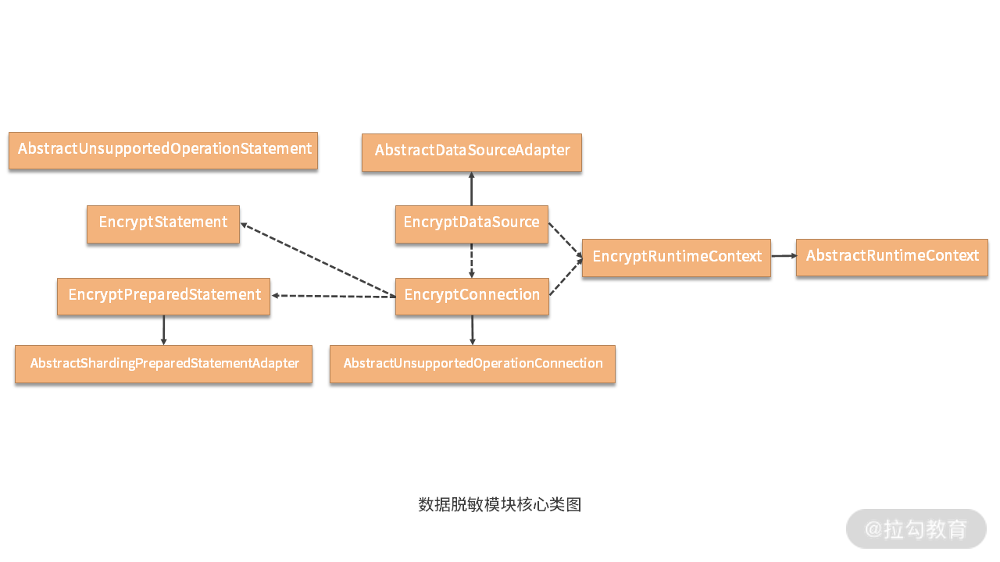
上图中，可以看到与数据脱敏模块相关的类实际上都继承了一个抽象类，而这些抽象类在前面的内容都已经做了介绍。因此，我们对数据脱敏模块将重点关注于几个核心类的讲解，对于已经介绍过的内容我们会做一些回顾，但不会面面俱到。
基于上图，我们从 EncryptDataSource 开始入手，EncryptDataSource 的创建依赖于工厂类 EncryptDataSourceFactory，其实现如下所示：
public final class EncryptDataSourceFactory {
public static DataSource createDataSource(final DataSource dataSource, final EncryptRuleConfiguration encryptRuleConfiguration, final Properties props) throws SQLException {
return new EncryptDataSource(dataSource, new EncryptRule(encryptRuleConfiguration), props);
}
}
这里直接创建了一个 EncryptDataSource，依赖于 EncryptRule 规则对象，我们先来梳理一下 EncryptRule 中具体包含了哪些内容。
EncryptRule
EncryptRule 是数据脱敏模块的一个核心对象，值得我们专门进行展开。在 EncryptRule 中，定义了如下所示的三个核心变量：
//加解密器
private final Map<String, ShardingEncryptor> encryptors = new LinkedHashMap<>();
//脱敏数据表
private final Map<String, EncryptTable> tables = new LinkedHashMap<>();
//脱敏规则配置
private EncryptRuleConfiguration ruleConfiguration;
我们可以把这三个变量分成两部分，其中 ShardingEncryptor 用于完成加解密，而 EncryptTable 和 EncryptRuleConfiguration 则更多的与数据脱敏的配置体系相关。
接下来我将对这两部分分别展开讲解。
1.ShardingEncryptor
在 EncryptRule 中，ShardingEncryptor 是一个接口，代表具体的加密器类，该接口定义如下：
public interface ShardingEncryptor extends TypeBasedSPI {
//初始化
void init();
//加密
String encrypt(Object plaintext);
//解密
Object decrypt(String ciphertext);
}
ShardingEncryptor 接口中存在一对用于加密和解密的方法，同时该接口也继承了 TypeBasedSPI 接口，意味着会通过 SPI 的方式进行动态类加载。
ShardingEncryptorServiceLoader 完成了这个工作，同时在 sharding-core-common 工程中，我们也找到了 SPI 的配置文件，如下所示：
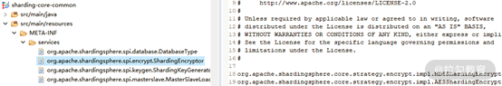
ShardingEncryptor 的 SPI 配置文件
可以看到这里有两个实现类，分别是 MD5ShardingEncryptor 和 AESShardingEncryptor。对于 MD5 算法而言，我们知道它是单向散列的，无法根据密文反推出明文，MD5ShardingEncryptor 的实现类如下所示：
public final class MD5ShardingEncryptor implements ShardingEncryptor {
private Properties properties = new Properties();
@Override
public String getType() {
return "MD5";
}
@Override
public void init() {
}
@Override
public String encrypt(final Object plaintext) {
return DigestUtils.md5Hex(String.valueOf(plaintext));
}
@Override
public Object decrypt(final String ciphertext) {
return ciphertext;
}
}
而 AES 是一个对称加密算法，所以可以根据密文反推出明文，对应的 AESShardingEncryptor 如下所示：
public final class AESShardingEncryptor implements ShardingEncryptor {
private static final String AES_KEY = "aes.key.value";
private Properties properties = new Properties();
@Override
public String getType() {
return "AES";
}
@Override
public void init() {
}
@Override
@SneakyThrows
public String encrypt(final Object plaintext) {
byte[] result = getCipher(Cipher.ENCRYPT_MODE).doFinal(StringUtils.getBytesUtf8(String.valueOf(plaintext)));
//使用 Base64 进行加密
return Base64.encodeBase64String(result);
}
@Override
@SneakyThrows
public Object decrypt(final String ciphertext) {
if (null == ciphertext) {
return null;
}
//使用 Base64 进行解密
byte[] result = getCipher(Cipher.DECRYPT_MODE).doFinal(Base64.decodeBase64(String.valueOf(ciphertext)));
return new String(result, StandardCharsets.UTF_8);
}
private Cipher getCipher(final int decryptMode) throws NoSuchPaddingException, NoSuchAlgorithmException, InvalidKeyException {
Preconditions.checkArgument(properties.containsKey(AES_KEY), "No available secret key for `%s`.", AESShardingEncryptor.class.getName());
Cipher result = Cipher.getInstance(getType());
result.init(decryptMode, new SecretKeySpec(createSecretKey(), getType()));
return result;
}
private byte[] createSecretKey() {
Preconditions.checkArgument(null != properties.get(AES_KEY), String.format("%s can not be null.", AES_KEY));
//创建秘钥
return Arrays.copyOf(DigestUtils.sha1(properties.get(AES_KEY).toString()), 16);
}
}
这里就是对一些常用加密库的直接使用，不做展开讨论。
2.EncryptRuleConfiguration
我们接下来关注于 EncryptRule 中的第二组变量，即 EncryptTable，以及与之相关的配置类 EncryptRuleConfiguration 之间的关系。
我们先来看 EncryptRuleConfiguration，内部包含了两部分内容：
private final Map<String, EncryptorRuleConfiguration> encryptors;
private final Map<String, EncryptTableRuleConfiguration> tables;
而在 EncryptTableRuleConfiguration 内部，同样保存着一个 EncryptColumnRuleConfiguration 列表，如下所示：
private final Map<String, EncryptColumnRuleConfiguration> columns = new LinkedHashMap<>();
我们再来看 EncryptColumnRuleConfiguration 的数据结构，如下所示：
public final class EncryptColumnRuleConfiguration {
//存储明文的字段
private final String plainColumn;
//存储密文的字段
private final String cipherColumn;
//辅助查询字段
private final String assistedQueryColumn;
//加密器名字
private final String encryptor;
}
终于，我们在这里看到了指定存放明文的 plainColumn、存放密文的 cipherColumn，以及加密器 encryptor 等信息。
我们可以回顾案例中的相关配置项来加深理解：
spring.shardingsphere.encrypt.tables.encrypt_user.columns.user_name.plainColumn=user_name_plain
spring.shardingsphere.encrypt.tables.encrypt_user.columns.user_name.cipherColumn=user_name
spring.shardingsphere.encrypt.tables.encrypt_user.columns.user_name.encryptor=name_encryptor
我们回到最上层的 EncryptRule，发现它的构造函数如下所示：
public EncryptRule(final EncryptRuleConfiguration encryptRuleConfig) {
this.ruleConfiguration = encryptRuleConfig;
Preconditions.checkArgument(isValidRuleConfiguration(), "Invalid encrypt column configurations in EncryptTableRuleConfigurations.");
initEncryptors(encryptRuleConfig.getEncryptors());
initTables(encryptRuleConfig.getTables());
}
上述 initEncryptors 方法就是初始化加解密器 Encryptor，而 initTables 方法会根据 EncryptRuleConfiguration 中的 EncryptTableRuleConfiguration 来初始化 EncryptTable。这里的 EncryptTable 更多是一种中间领域模型，用于简化对各种配置信息的处理，其内部保存着一个 EncryptColumn 列表，如下所示：
private final Map<String, EncryptColumn> columns;
而这个 EncryptColumn 中的变量则跟前面介绍的 EncryptColumnRuleConfiguration 一样，包含了存放明文的 plainColumn、存放密文的 cipherColumn，以及加密器 encryptor 等信息。
在了解了 EncryptRule 中所持有的数据模型之后，我们就可以来看一下 EncryptDataSource，在 EncryptDataSource 的构造函数中使用到了 EncryptRule，如下所示：
private final EncryptRuntimeContext runtimeContext;
public EncryptDataSource(final DataSource dataSource, final EncryptRule encryptRule, final Properties props) throws SQLException {
super(dataSource);
runtimeContext = new EncryptRuntimeContext(dataSource, encryptRule, props, getDatabaseType());
}
可以看到所传入的 EncryptRule 和 Properties 是用来构建一个 EncryptRuntimeContext，该类继承自 AbstractRuntimeContext 类，而 EncryptRuntimeContext 内部主要保存了用于描述表元数据的 TableMetas 数据结构。
基于改写引擎的数据脱敏实现方案
我们知道 EncryptDataSource 继承了适配器类 AbstractDataSourceAdapter，而它的作用就是生成 EncryptConnection。而对于 EncryptConnection，我们同样也明确它的职责是创建各种 EncryptStatement 和 EncryptPreparedStatement，如下所示：
@Override
public Statement createStatement() throws SQLException {
return new EncryptStatement(this);
}
@Override
public PreparedStatement prepareStatement(final String sql) throws SQLException {
return new EncryptPreparedStatement(this, sql);
}
然后，我们再快速来到 EncryptStatement，来看它的 executeQuery 方法，如下所示：
@Override
public ResultSet executeQuery(final String sql) throws SQLException {
if (Strings.isNullOrEmpty(sql)) {
throw new SQLException(SQLExceptionConstant.SQL_STRING_NULL_OR_EMPTY);
}
//获取改写后的 SQL 并执行
ResultSet resultSet = statement.executeQuery(getRewriteSQL(sql));
this.resultSet = new EncryptResultSet(connection.getRuntimeContext(), sqlStatementContext, this, resultSet);
return this.resultSet;
}
显然这里需要重点关注的是 getRewriteSQL 方法，该方法用于获取改写后的 SQL，如下所示：
private String getRewriteSQL(final String sql) {
//通过 ParseEngine 对 SQL 进行解析
SQLStatement sqlStatement = connection.getRuntimeContext().getParseEngine().parse(sql, false);
//获取关系元数据 RelationMetas
RelationMetas relationMetas = getRelationMetas(connection.getRuntimeContext().getTableMetas());
//构建 SQLStatementContext
sqlStatementContext = SQLStatementContextFactory.newInstance(relationMetas, sql, Collections.emptyList(), sqlStatement);
//构建 SQLRewriteContext
SQLRewriteContext sqlRewriteContext = new SQLRewriteContext(relationMetas, sqlStatementContext, sql, Collections.emptyList());
//判断是否根据数据脱敏列进行查询
boolean isQueryWithCipherColumn = connection.getRuntimeContext().getProps().<Boolean>getValue(ShardingPropertiesConstant.QUERY_WITH_CIPHER_COLUMN);
//构建 EncryptSQLRewriteContextDecorator 对 SQLRewriteContext 进行装饰
new EncryptSQLRewriteContextDecorator(connection.getRuntimeContext().getRule(), isQueryWithCipherColumn).decorate(sqlRewriteContext);
//生成 SQLTokens
sqlRewriteContext.generateSQLTokens();
//使用 DefaultSQLRewriteEngine 进行改写
String result = new DefaultSQLRewriteEngine().rewrite(sqlRewriteContext).getSql();
//打印结果
showSQL(result);
//返回结果
return result;
}
这个方法的部分代码有一种让人似曾相识的感觉，我们回想一下 “20 | 改写引擎：如何理解装饰器模式下的 SQL 改写实现机制？” 中介绍的 BaseShardingEngine的rewriteAndConvert 方法，也看到过 isQueryWithCipherColumn 判断，以及 EncryptSQLRewriteContextDecorator，当时我们没有具体展开，今天就来一起看一下。
1.EncryptSQLRewriteContextDecorator
EncryptSQLRewriteContextDecorator 实现如下所示：
public final class EncryptSQLRewriteContextDecorator implements SQLRewriteContextDecorator {
private final EncryptRule encryptRule;
private final boolean isQueryWithCipherColumn;
@Override
public void decorate(final SQLRewriteContext sqlRewriteContext) {
//参数改写
for (ParameterRewriter each : new EncryptParameterRewriterBuilder(encryptRule, isQueryWithCipherColumn).getParameterRewriters(sqlRewriteContext.getRelationMetas())) {
if (!sqlRewriteContext.getParameters().isEmpty() && each.isNeedRewrite(sqlRewriteContext.getSqlStatementContext())) {
each.rewrite(sqlRewriteContext.getParameterBuilder(), sqlRewriteContext.getSqlStatementContext(), sqlRewriteContext.getParameters());
}
}
//SQLTokenGenerator 初始化
sqlRewriteContext.addSQLTokenGenerators(new EncryptTokenGenerateBuilder(encryptRule, isQueryWithCipherColumn).getSQLTokenGenerators());
}
}
我们还是来对比 ShardingSQLRewriteContextDecorator 类，会发现它与 EncryptSQLRewriteContextDecorator 类的结构完全一致。区别在于这里创建的 ParameterRewriterBuilder 和 SQLTokenGeneratorBuilder 分别是 EncryptParameterRewriterBuilder 和 EncryptTokenGenerateBuilder，而不是ShardingParameterRewriterBuilder 和 ShardingTokenGenerateBuilder。但这两组类的内部结构同样是完全一致的。
在 EncryptParameterRewriterBuilder 内部，同样使用如下方法获取一组 ParameterRewriter：
private Collection<ParameterRewriter> getParameterRewriters() {
Collection<ParameterRewriter> result = new LinkedList<>();
result.add(new EncryptAssignmentParameterRewriter());
result.add(new EncryptPredicateParameterRewriter());
result.add(new EncryptInsertValueParameterRewriter());
return result;
}
接下来，我们先以 EncryptAssignmentParameterRewriter 为例来看用于数据脱敏的具体 ParameterRewriter 的实现机制。
2.EncryptAssignmentParameterRewriter
EncryptAssignmentParameterRewriter 类完成在数据脱敏场景下对参数赋值过程的改写。我们首先注意到 EncryptAssignmentParameterRewriter 中存在一个 isNeedRewriteForEncrypt 方法用于判断是否需要改写。
@Override
protected boolean isNeedRewriteForEncrypt(final SQLStatementContext sqlStatementContext) {
return sqlStatementContext.getSqlStatement() instanceof UpdateStatement
|| sqlStatementContext instanceof InsertSQLStatementContext && sqlStatementContext.getSqlStatement().findSQLSegment(SetAssignmentsSegment.class).isPresent();
}
这里的判断条件有两个，一个是 UpdateStatement，一个是 InsertSQLStatementContext（且其中的 SQLStatement 中包含 SetAssignmentsSegment）。我们知道在 SQL 语法中，INSERT 和 UPDATE 语句中都具有如下所示的 SET 赋值部分：
SET userId = 1, task_name = 'taskName'
EncryptAssignmentParameterRewriter 类针对的就是这种场景。我们来看它的 Rewrite 核心方法，如下所示：
@Override
public void rewrite(final ParameterBuilder parameterBuilder, final SQLStatementContext sqlStatementContext, final List<Object> parameters) {
String tableName = sqlStatementContext.getTablesContext().getSingleTableName();
//获取 SetAssignmentsSegment 并进行遍历
for (AssignmentSegment each : getSetAssignmentsSegment(sqlStatementContext.getSqlStatement()).getAssignments()) {
//判断是否存在 ShardingEncryptor
if (each.getValue() instanceof ParameterMarkerExpressionSegment && getEncryptRule().findShardingEncryptor(tableName, each.getColumn().getName()).isPresent()) {
StandardParameterBuilder standardParameterBuilder = parameterBuilder instanceof StandardParameterBuilder
? (StandardParameterBuilder) parameterBuilder : ((GroupedParameterBuilder) parameterBuilder).getParameterBuilders().get(0);
//对参数进行加密
encryptParameters(standardParameterBuilder, tableName, each, parameters);
}
}
}
这里通过 getSetAssignmentsSegment 方法获取 SetAssignmentsSegment，实现过程就是根据 SQLStatement 类型分别获取 InsertStatement 和 UpdateStatement 中的 SetAssignment。
然后，我们循环遍历每一个 SetAssignmentsSegment，针对表中的每一个 Column 判断是否存在 ShardingEncryptor，如果有的话就返回对应的加解密器。
这部分判断工作就是在前面介绍的 EncryptRule 中完成，如下所示：
public Optional<ShardingEncryptor> findShardingEncryptor(final String logicTable, final String logicColumn) {
if (!tables.containsKey(logicTable)) {
return Optional.absent();
}
Optional<String> encryptor = tables.get(logicTable).findShardingEncryptor(logicColumn);
return encryptor.isPresent() ? Optional.of(encryptors.get(encryptor.get())) : Optional.<ShardingEncryptor>absent();
}
然后我们获取 StandardParameterBuilder，并调用 encryptParameters 方法完成参数的数据脱敏操作，如下所示：
private void encryptParameters(final StandardParameterBuilder parameterBuilder, final String tableName, final AssignmentSegment assignmentSegment, final List<Object> parameters) {
String columnName = assignmentSegment.getColumn().getName();
int parameterMarkerIndex = ((ParameterMarkerExpressionSegment) assignmentSegment.getValue()).getParameterMarkerIndex();
Object originalValue = parameters.get(parameterMarkerIndex);
//通过 ShardingEncryptor 进行加密，并替换原来存储密文的 cipherColumn
Object cipherValue = getEncryptRule().getEncryptValues(tableName, columnName, Collections.singletonList(originalValue)).iterator().next();
parameterBuilder.addReplacedParameters(parameterMarkerIndex, cipherValue);
Collection<Object> addedParameters = new LinkedList<>();
//如果存在 assistedQueryColumn，则添加辅助查询字段
if (getEncryptRule().findAssistedQueryColumn(tableName, columnName).isPresent()) {
Object assistedQueryValue = getEncryptRule().getEncryptAssistedQueryValues(tableName, columnName, Collections.singletonList(originalValue)).iterator().next();
addedParameters.add(assistedQueryValue);
}
//如果存在 plainColumn，则添加明文字段
if (getEncryptRule().findPlainColumn(tableName, columnName).isPresent()) {
addedParameters.add(originalValue);
}
if (!addedParameters.isEmpty()) {
parameterBuilder.addAddedParameters(parameterMarkerIndex + 1, addedParameters);
}
}
这里的核心逻辑就是继续通过 EncryptRule 的 getEncryptValues 方法获取密文，然后通过获取具体的 ShardingEncryptor 并调用其方法完成这一操作，如下所示：
public List<Object> getEncryptValues(final String logicTable, final String logicColumn, final List<Object> originalValues) {
final Optional<ShardingEncryptor> shardingEncryptor = findShardingEncryptor(logicTable, logicColumn);
Preconditions.checkArgument(shardingEncryptor.isPresent(), String.format("Can not find ShardingQueryAssistedEncryptor by %s.%s.", logicTable, logicColumn));
return Lists.transform(originalValues, new Function<Object, Object>() {
@Override
public Object apply(final Object input) {
return null == input ? null : String.valueOf(shardingEncryptor.get().encrypt(input.toString()));
}
});
}
关于 EncryptAssignmentParameterRewriter 的实现，这里面涉及的类也比较多，我们可以先来画张图作为后续讨论的基础，如下所示：
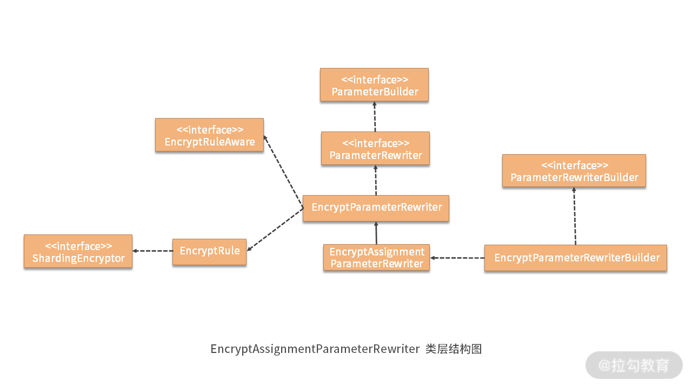
3.EncryptAssignmentTokenGenerator
讨论完 EncryptParameterRewriterBuilder 之后，我们再来讨论 EncryptTokenGenerateBuilder。这里，我们也是以 EncryptAssignmentTokenGenerator 为例来进行展开，在这个类中，核心方法是 generateSQLTokens，如下所示：
@Override
public Collection<EncryptAssignmentToken> generateSQLTokens(final SQLStatementContext sqlStatementContext) {
Collection<EncryptAssignmentToken> result = new LinkedList<>();
String tableName = sqlStatementContext.getTablesContext().getSingleTableName();
//获取 SetAssignmentsSegment 并进行遍历
for (AssignmentSegment each : getSetAssignmentsSegment(sqlStatementContext.getSqlStatement()).getAssignments()) {
//判断是否存在 ShardingEncryptor
if (getEncryptRule().findShardingEncryptor(tableName, each.getColumn().getName()).isPresent()) {
//生成 SQLToken
Optional<EncryptAssignmentToken> sqlToken = generateSQLToken(tableName, each);
if (sqlToken.isPresent()) {
result.add(sqlToken.get());
}
}
}
return result;
}
这里同样根据是否找到 ShardingEncryptor 来执行后续的 generateSQLToken 方法，该方法最终会调用类似如下所示的 generateLiteralSQLToken 方法：
private EncryptAssignmentToken generateLiteralSQLToken(final String tableName, final AssignmentSegment assignmentSegment) {
EncryptLiteralAssignmentToken result = new EncryptLiteralAssignmentToken(assignmentSegment.getColumn().getStartIndex(), assignmentSegment.getStopIndex());
addCipherAssignment(tableName, assignmentSegment, result);
addAssistedQueryAssignment(tableName, assignmentSegment, result);
addPlainAssignment(tableName, assignmentSegment, result);
return result;
}
以上面的 addCipherAssignment 方法为例，我们不难想象该方法通过调用 ShardingEncryptor 来完成了 CipherColumn 的设置。
private void addCipherAssignment(final String tableName, final AssignmentSegment assignmentSegment, final EncryptLiteralAssignmentToken token) {
Object originalValue = ((LiteralExpressionSegment) assignmentSegment.getValue()).getLiterals();
Object cipherValue = getEncryptRule().getEncryptValues(tableName, assignmentSegment.getColumn().getName(), Collections.singletonList(originalValue)).iterator().next();
token.addAssignment(getEncryptRule().getCipherColumn(tableName, assignmentSegment.getColumn().getName()), cipherValue);
}
至此，我们对 EncryptSQLRewriteContextDecorator 的介绍就告一段落，这部分内容可以结合 “20 | 改写引擎：如何理解装饰器模式下的 SQL 改写实现机制？” 一起来看，以便加深理解。
数据脱敏和结果归并
介绍完了 EncryptSQLRewriteContextDecorator 之后，接下来我们回到 EncryptStatement 类，继续探讨 getRewriteSQL 方法的后续流程。
我们回到 EncryptStatement 的 executeQuery 方法，回顾如下语句：
ResultSet resultSet = statement.executeQuery(getRewriteSQL(sql));
我们通过执行 executeQuery 方法获取了 ResultSet，但并不是直接返回这个 resultSet 对象，而是需要对其进行封装，构建一个 EncryptResultSet 对象，如下所示：
this.resultSet = new EncryptResultSet(connection.getRuntimeContext(), sqlStatementContext, this, resultSet);
EncryptResultSet 继承了 AbstractUnsupportedOperationResultSet 类，而 AbstractUnsupportedOperationResultSet 又继承了 AbstractUnsupportedUpdateOperationResultSet，这个 AbstractUnsupportedUpdateOperationResultSet 又继承了 WrapperAdapter 类并实现了 ResultSet 接口。所以 EncryptResultSet 也是一种适配器，这点和 EncryptDataSource、EncryptConnection 在本质上是一样的。
对于 EncryptResultSet 而言，存在一大批 get 方法，我们都不需要专门进行介绍，关键点在于构造函数中的如下方法：
mergedResult = createMergedResult(queryWithCipherColumn, resultSet);
我们知道 ShardingSphere 中，执行引擎之后就是归并引擎，而在 EncryptResultSet 中我们就用到了归并引擎并生成了 MergedResult。
EncryptResultSet 会先判断传入的 SQLStatement 是否是一种 DALStatement，如果是，则会调用 DALEncryptMergeEngine 完成结果归并；如果不是，则会使用 DQLEncryptMergeEngine，我们同样重点关注 DQLEncryptMergeEngine。
public final class DQLEncryptMergeEngine implements MergeEngine {
private final EncryptorMetaData metaData;
private final MergedResult mergedResult;
private final boolean queryWithCipherColumn;
@Override
public MergedResult merge() {
return new EncryptMergedResult(metaData, mergedResult, queryWithCipherColumn);
}
}
DQLEncryptMergeEngine 非常简单，其 merge 方法只是构建了一个 EncryptMergedResult 对象并进行返回。EncryptMergedResult 中核心方法 getValue 如下所示：
@Override
public Object getValue(final int columnIndex, final Class<?> type) throws SQLException {
Object value = mergedResult.getValue(columnIndex, type);
if (null == value || !queryWithCipherColumn) {
return value;
}
Optional<ShardingEncryptor> encryptor = metaData.findEncryptor(columnIndex);
return encryptor.isPresent() ? encryptor.get().decrypt(value.toString()) : value;
}
显然，从上述流程中不难看出，数据脱敏模块中的归并实现实际上就是调用 ShardingEncryptor 的 decrypt 方法将加密列的密文解密成明文即可。
这样整个 EncryptStatement 的 executeQuery 方法的整体流程就介绍完毕了，理解了这个方法的实现过程之后，对于 EncryptStatement 和 EncryptPreparedStatement 的其他方法而言，理解起来就比较容易了。
从源码解析到日常开发
对于今天讨论的主题而言，能够直接应用到日常开发过程中的内容就是 ShardingEncryptor 的抽象过程，以及内部的加解密实现机制。ShardingSphere 使用了 DigestUtils 工具类来完成 MD5 算法的应用，以及 Base64 工具类来完成AES算法的实现。
这两个工具类都可以完全照搬到我们自己的系统中，从而添加成熟的加解密算法实现方案。
小结与预告
今天，我们讨论了 ShardingSphere 中实现数据脱敏机制的底层原理。我们发现数据脱敏模块同时依赖于分片引擎中的改写引擎和归并引擎这两大块内容，尤其是改写引擎在数据脱敏过程中起到了核心作用，通过补列的方式完成明文数据与密文数据之间的自动加解密，以及透明的 SQL 转换过程。
这里留一道思考题：ShardingSphere 中，数据脱敏模块与改写引擎和归并引擎之间是怎么样的协作关系？欢迎你在留言区与大家讨论，我将逐一点评解答。
在介绍完今天的数据脱敏机制之后，明天将介绍一个同样非常有用的编排和治理功能，我们将基于配置中心解析实现配置信息动态化管理的底层原理。
31 配置中心：如何基于配置中心实现配置信息的动态化管理？
ShardingSphere 在编排治理方面包括配置动态化、注册中心、数据库熔断禁用、调用链路等治理能力。
今天我们先来介绍最简单的配置中心，即如何基于配置中心从而实现配置信息的动态化管理。
ShardingSphere 中对配置中心的抽象过程
配置中心的核心接口 ConfigCenter 位于 sharding-orchestration-config-api 工程中，定义如下：
public interface ConfigCenter extends TypeBasedSPI {
//初始化配置中心
void init(ConfigCenterConfiguration config);
//获取配置项数据
String get(String key);
//直接获取配置项数据
String getDirectly(String key);
//是否存在配置项
boolean isExisted(String key);
//获取子配置项列表
List<String> getChildrenKeys(String key);
//持久化配置项
void persist(String key, String value);
//更新配置项
void update(String key, String value);
//持久化临时数据
void persistEphemeral(String key, String value);
//对配置项或路径进行监听
void watch(String key, DataChangedEventListener dataChangedEventListener);
//关闭配置中心
void close();
}
上述方法中，唯一值得展开的就是 watch 方法，该方法传入了一个代表事件监听器的 DataChangedEventListener 接口，如下所示：
public interface DataChangedEventListener {
//当数据变动时进行触发
void onChange(DataChangedEvent dataChangedEvent);
}
这里用到的 DataChangedEvent 类定义如下，可以看到事件的类型有三种，分别是 UPDATED、DELETED 和 IGNORED：
public final class DataChangedEvent {
private final String key;
private final String value;
private final ChangedType changedType;
public enum ChangedType {
UPDATED, DELETED, IGNORED
}
}
我们同样注意到 ConfigCenter 接口继承了 TypeBasedSPI 接口，所以集成了 SPI 机制。在 ShardingSphere 中，ConfigCenter 接口有两个实现类，分别基于 Apollo 的 ApolloConfigCenter 和基于 Zookeeper 的 CuratorZookeeperConfigCenter。
我们分别展开讲解一下。
ApolloConfigCenter
1.ApolloConfigCenter 的实现过程
我们先来看基于 Apollo 的 ApolloConfigCenter，它的 init 方法如下所示：
@Override
public void init(final ConfigCenterConfiguration config) {
//从配置对象中获取配置信息并设置系统属性
System.getProperties().setProperty("app.id", properties.getProperty("appId", "APOLLO_SHARDING_SPHERE"));
System.getProperties().setProperty("env", properties.getProperty("env", "DEV"));
System.getProperties().setProperty(ConfigConsts.APOLLO_CLUSTER_KEY, properties.getProperty("clusterName", ConfigConsts.CLUSTER_NAME_DEFAULT));
System.getProperties().setProperty(ConfigConsts.APOLLO_META_KEY, config.getServerLists());
//通过配置对象构建 ApolloConfig
apolloConfig = ConfigService.getConfig(config.getNamespace());
}
上述 init 方法的作用是在设置系统属性的同时，构建一个 Config 对象。在 Apollo 中，基于这个 Config 对象就可以实现对配置项的操作，例如：
@Override
public String get(final String key) {
return apolloConfig.getProperty(key.replace("/", "."), "");
}
@Override
public String getDirectly(final String key) {
return get(key);
}
@Override
public boolean isExisted(final String key) {
return !Strings.isNullOrEmpty(get(key));
}
注意这里的 getDirectly 方法和 get 方法的处理方式实际上是一致的。而对于 Apollo 而言，getChildrenKeys、persist、update 和 persistEphemeral 等方法都是无效的，因为不支持这样的操作。但是对于常见的监听机制，Apollo 也提供了它的实现方案，可以通过对 Config 对象添加 ChangeListener 来实现监听效果，如下所示：
@Override
public void watch(final String key, final DataChangedEventListener dataChangedEventListener) {
//添加 Apollo 中的监听器
apolloConfig.addChangeListener(new ConfigChangeListener() {
@Override
public void onChange(final ConfigChangeEvent changeEvent) {
for (String key : changeEvent.changedKeys()) {
//获取 Apollo 监听事件
ConfigChange change = changeEvent.getChange(key);
DataChangedEvent.ChangedType changedType = getChangedType(change.getChangeType());
if (DataChangedEvent.ChangedType.IGNORED != changedType) {
//将 Apollo 中的监听事件转化为 ShardingSphere 中的监听事件
//通过 EventListener 触发事件
dataChangedEventListener.onChange(new DataChangedEvent(key, change.getNewValue(), changedType));
}
}
}
}, Sets.newHashSet(key));
}
上述代码的逻辑在于当事件被 Apollo 监听，并触发上述 watch 方法时，我们会将 Apollo 中的事件类型转化为 ShardingSphere 中自身的事件类型，并通过 DataChangedEventListener 进行传播和处理。
2.ShardingSphere 中的事件驱动架构
讲到 DataChangedEventListener，我们不得不对 ShardingSphere 中的事件驱动框架做一些展开。
显然，从命名上看，DataChangedEventListener 是一种事件监听器，用于监听各种 DataChangedEvent。
注意到 ShardingSphere 并没有提供 DataChangedEventListener 接口的任何实现类，而是大量采用了匿名方法进行事件的监听，一种典型的实现方式如下所示：
new DataChangedEventListener() {
@Override
public void onChange(final DataChangedEvent dataChangedEvent) {
…
//通过 EventBus 发布事件
eventBus.post(createXXXEvent(dataChangedEvent));
}
}
});
在通过 DataChangedEventListener 监听到某一个 DataChangedEvent 并进行传播时，ShardingSphere 的处理过程就是通过 EventBus 类的 post 方法将事件进行进一步转发。这里使用的 EventBus 同样来自 Google 的 Guava 框架，代表了一种事件总线的实现方式。
现在，事件已经可以通过 EventBus 进行发送了，那么这些被发送的事件是怎么被消费的呢？在 ShardingSphere 中，存在一个 ShardingOrchestrationEventBus 包装类，包装了对 EventBus 的使用过程。
这个包装过程非常简单，只是使用单例模式构建了一个 EventBus 对象而已，如下所示：
public final class ShardingOrchestrationEventBus {
private static final EventBus INSTANCE = new EventBus();
//使用单例模式构建单例对象
public static EventBus getInstance() {
return INSTANCE;
}
}
如果我们想要订阅通过 EventBus 发送的事件，只要把自身注册到 EventBus 上即可，可以直接通过 EventBus 提供的 register 方法实现这一目标，如下所示：
ShardingOrchestrationEventBus.getInstance().register(this);
另一方面，在 Guava 的 EventBus 机制中，提供了 @Subscribe 注解用来标识对具体某一种事件的处理方法。一旦在某个方法上添加了 @Subscribe 注解，这个方法就可以自动用来处理所传入的事件。
所以，我们进一步总结事件订阅者的代码结构，可以得到如下所示的伪代码：
public class Subscriber {
public Subscriber(…) {
…
//将自己注册到 EventBus 中
ShardingOrchestrationEventBus.getInstance().register(this);
}
@Subscribe
public void renew(DataSourceChangedEvent dataSourceChangedEvent){
//消费事件
…
}
}
可以想象，ShardingSphere 中势必存在一批符合上述代码结构的实现类，用于监听配置中心所产生的配置信息变更事件。以如下所示的 LogicSchema 类为例，我们可以看到它的实现过程就是很典型的一种事件订阅者：
@Getter
public abstract class LogicSchema {
public LogicSchema(final String name, final Map<String, YamlDataSourceParameter> dataSources) {
…
ShardingOrchestrationEventBus.getInstance().register(this);
}
@Subscribe
public final synchronized void renew(final DataSourceChangedEvent dataSourceChangedEvent) throws Exception {
if (!name.equals(dataSourceChangedEvent.getShardingSchemaName())) {
return;
}
//根据 DataSourceChangedEvent 更新 DataSource 的配置
backendDataSource.renew(DataSourceConverter.getDataSourceParameterMap(dataSourceChangedEvent.getDataSourceConfigurations()));
}
}
上述 LogicSchema 类会根据 DataSourceChangedEvent 中携带的配置信息来更新DataSource的配置，从而实现配置信息的动态化管理。
在介绍完 ApolloConfigCenter 之后，我们再来看一下 ShardingSphere 中另一种配置中心的实现方式，即 CuratorZookeeperConfigCenter。
CuratorZookeeperConfigCenter
1.Zookeeper 和 Curator 简介
CuratorZookeeperConfigCenter 使用 Zookeeper 作为配置中心的服务组件。针对如何使用 Zookeeper，业界也存在一些开源的客户端，而在ShardingSphere 采用的是 Curator。
在介绍 CuratorZookeeperConfigCenter 之前，我们先来对 Zookeeper 和 Curator 做简要介绍。
- Zookeeper
对于 Zookeeper 而言，我们知道它有两个特性与分布式协调直接相关，一个是会话机制，一个是Watcher机制。
会话是客户端和服务器端的 TCP 连接，能够发送请求并接收监听器 Watcher 事件，而Watcher 机制本质上就是分布式的回调。就类型而言，会话又可以分为短暂性会话和持久性会话两种，前者在会话断开的同时会自动删除会话对应的 ZNode，而后者则不会。ZNode 的客户端关注 ZNode 发生的变化，一旦发生变化则回传消息到客户端，然后客户端的消息处理函数得到调用。在 Zookeeper 中，任何读操作都能够设置 Watcher。
- Curator
在我们使用 Zookeeper 时，一般不使用它原生的 API，而是倾向于采用客户端集成框架，这其中最具代表性的就是 Curator。Curator 解决了很多 Zookeeper 客户端非常底层的细节开发工作，包括连接重试、反复注册 Watcher 和 NodeExistsException 异常等。
Curator 包含了几个包：其中 curator-framework 包提供了对 Zookeeper 底层 API 的一层封装；curator-client 包则提供一些客户端的操作，例如重试策略等；而 curator-recipes 包封装了一些高级特性，如选举、分布式锁、分布式计数器等。
在使用 Curator 时，首先需要创建一个 CuratorFramework 客户端对象，这一过程可以使用 CuratorFrameworkFactory 工厂类进行完成。对于 CuratorFrameworkFactory 而言，我们一方面需要指定与 Zookeeper 的链接 URL connectString、会话超时时间 sessionTimeoutMs、连接创建超时时间 connectionTimeoutMs，以及重试策略 retryPolicy；另一方面也可以根据需要设置安全认证信息。
一旦我们获取了 CuratorFramework 对象，就可以调用它的 start 方法启动客户端，然后通过 create/delete 来创建和删除节点，通过 getData/setData 方法获取，以及设置对应节点中的数据。当然，最为重要的是我们可以在节点上添加监听器。
接下来就让我们一起看一下 ShardingSphere 中如何使用 Curator 完成与 Zookeeper 的集成方法。
2.CuratorZookeeperConfigCenter 的实现过程
在 ShardingSphere 中，使用 CuratorFrameworkFactory 创建 CuratorFramework 客户端对象的过程如下所示：
private CuratorFramework buildCuratorClient(final ConfigCenterConfiguration config) {
//构建 CuratorFrameworkFactory 并设置连接属性
CuratorFrameworkFactory.Builder builder = CuratorFrameworkFactory.builder()
.connectString(config.getServerLists())
.retryPolicy(new ExponentialBackoffRetry(config.getRetryIntervalMilliseconds(), config.getMaxRetries(), config.getRetryIntervalMilliseconds() * config.getMaxRetries()))
.namespace(config.getNamespace());
if (0 != config.getTimeToLiveSeconds()) {
builder.sessionTimeoutMs(config.getTimeToLiveSeconds() * 1000);
}
if (0 != config.getOperationTimeoutMilliseconds()) {
builder.connectionTimeoutMs(config.getOperationTimeoutMilliseconds());
}
//设置安全摘要信息
if (!Strings.isNullOrEmpty(config.getDigest())) {
builder.authorization("digest", config.getDigest().getBytes(Charsets.UTF_8))
.aclProvider(new ACLProvider() {
@Override
public List<ACL> getDefaultAcl() {
return ZooDefs.Ids.CREATOR_ALL_ACL;
}
@Override
public List<ACL> getAclForPath(final String path) {
return ZooDefs.Ids.CREATOR_ALL_ACL;
}
});
}
return builder.build();
}
上述代码相对比较固化，我们可以直接在自己的应用程序中进行借鉴和参考。
然后我们来看它的 persist 方法，如下所示：
@Override
public void persist(final String key, final String value) {
try {
if (!isExisted(key)) {
//创建持久化节点
client.create().creatingParentsIfNeeded().withMode(CreateMode.PERSISTENT).forPath(key, value.getBytes(Charsets.UTF_8));
} else {
update(key, value);
}
} catch (final Exception ex) {
CuratorZookeeperExceptionHandler.handleException(ex);
}
}
这里使用了 CreateMode.PERSISTENT 模式来创建接口，也就是说创建的是一种持久化节点。而另一个 persistEphemeral 方法中，则通过设置 CreateMode.EPHEMERAL 来创建临时节点。
如下所示的 update 方法也值得一看，我们看到了如何基于 Curator 实现在事务中更新数据的具体实现方法：
@Override
public void update(final String key, final String value) {
try {
//在事务中更新数据
client.inTransaction().check().forPath(key).and().setData().forPath(key, value.getBytes(Charsets.UTF_8)).and().commit();
} catch (final Exception ex) {
CuratorZookeeperExceptionHandler.handleException(ex);
}
}
然后，我们来到获取数据的 get 方法，如下所示：
@Override
public String get(final String key) {
//先通过缓存获取数据，如果没有则通过 getDirectly 直接获取数据
TreeCache cache = findTreeCache(key);
if (null == cache) {
return getDirectly(key);
}
ChildData resultInCache = cache.getCurrentData(key);
if (null != resultInCache) {
return null == resultInCache.getData() ? null : new String(resultInCache.getData(), Charsets.UTF_8);
}
return getDirectly(key);
}
注意到在这个 get 方法中，ShardingSphere 使用了缓存机制来提升数据获取的效率。如果缓存没有命中，才会调用 getDirectly 方法来直接从 Zookeeper 中获取数据。
最后，让我们来到最为关键的 watch 方法，该方法如下所示：
@Override
public void watch(final String key, final DataChangedEventListener dataChangedEventListener) {
final String path = key + "/";
if (!caches.containsKey(path)) {
addCacheData(key);
}
TreeCache cache = caches.get(path);
//添加 Zookeeper 监听器
cache.getListenable().addListener(new TreeCacheListener() {
@Override
public void childEvent(final CuratorFramework client, final TreeCacheEvent event) throws UnsupportedEncodingException {
//获取 Zookeeper 监听事件
ChildData data = event.getData();
if (null == data || null == data.getPath()) {
return;
}
//将 Zookeeper 中的监听事件转化为 ShardingSphere 中的监听事件
//通过 EventListener 触发事件
DataChangedEvent.ChangedType changedType = getChangedType(event);
if (DataChangedEvent.ChangedType.IGNORED != changedType) {
dataChangedEventListener.onChange(new DataChangedEvent(data.getPath(), null == data.getData() ? null : new String(data.getData(), "UTF-8"), changedType));
}
}
});
}
可以看到，watch 方法的最终处理结果也是将 Zookeeper 中的监听事件转化为 ShardingSphere 中的监听事件，并通过 EventListener 触发事件。这个过程我们已经在介绍 ApolloConfigCenter 时做了展开。
从源码解析到日常开发
今天我们介绍的很多内容实际上也可以应用到日常开发过程中，包括如何基于 Apollo 以及 Zookeeper 这两款典型的配置中心实现工具，来进行配置信息的存储和监听。我们完全可以根据自身的需求，将应用场景和范围从配置中心扩大到各种需要进行动态化管理的业务数据，而基于这两款工具实现这一目标的实现细节，我们都可以直接进行参考和借鉴。
小结与预告
本课时关注于 ShardingSphere 中对配置中心的抽象和实现过程。配置中心的核心机制是需要实现配置信息的动态化加载，而 Apollo 和 Zookeeper 都提供了监听机制来实现这一目标。ShardingSphere 通过集成这两款主流的开源工具，以及 Guava 框架中的 EventBus 工具类实现了从事件监听到订阅消费的整个事件驱动架构。
这里给你留一道思考题：ShardingSphere 是如何将 Apollo 以及 Zookeeper 中的事件生成和监听机制抽象成一套统一的事件驱动架构的？欢迎你在留言区与大家讨论，我将逐一点评解答。
配置中心和注册中心在实现上存在一定的相似性，但又面向不同的应用场景。下一课时，我们将介绍 ShardingSphere 中的注册中心的实现机制和应用场景。
32 注册中心：如何基于注册中心实现数据库访问熔断机制？
上一课时我们讨论了 ShardingSphere 中关于配置中心的相关内容。今天我们继续讨论编排治理模块的另一个核心功能，即注册中心。相较配置中心，注册中心在 ShardingSphere 中的应用更为广泛。
ShardingSphere 中的注册中心实现类
与配置中心一样，ShardingSphere 中的注册中心在代码结构上也包含三个独立的工程，即代表抽象接口的 API 工程，以及两个具体的实现 nacos 和 zookeeper-curator 工程。可以看到，这里同样使用上一课时中介绍的 Zookeeper 作为注册中心的一种实现方式，而另一种实现方式就是基于阿里巴巴的 Nacos。
我们先来看 ShardingSphere 中对注册中心的抽象，即如下所示的 RegistryCenter 接口：
public interface RegistryCenter extends TypeBasedSPI {
//根据配置信息初始化注册中心
void init(RegistryCenterConfiguration config);
//获取数据
String get(String key);
//直接获取数据
String getDirectly(String key);
//是否存在数据项
boolean isExisted(String key);
//获取子数据项列表
List<String> getChildrenKeys(String key);
//持久化数据项
void persist(String key, String value);
//更新数据项
void update(String key, String value);
//持久化临时数据
void persistEphemeral(String key, String value);
//对数据项或路径进行监听
void watch(String key, DataChangedEventListener dataChangedEventListener);
//关闭注册中心
void close();
//对数据项初始化锁
void initLock(String key);
//对数据项获取锁
boolean tryLock();
//对数据项释放锁
void tryRelease();
}
我们发现，除了最后几个关于锁处理的方法，RegistryCenter 实际上与上一课时中介绍的 ConfigCenter 非常类似。从这点上，我们就不难想象为什么 Zookeeper 既可以用来做配置中心，也可以是实现注册中心的一种典型方案。沿着这个思路，我们就先来看一下 CuratorZookeeperRegistryCenter 这个基于 Zookeeper 的注册中心实现类。
1.CuratorZookeeperRegistryCenter
我们快速浏览整个 CuratorZookeeperRegistryCenter 类，发现通用接口方法的实现过程也与 CuratorZookeeperConfigCenter 中的完全一致。而对于新增的与锁相关的几个方法，实现方式也很简单，直接使用 Curator 所封装的 InterProcessMutex 即可，如下所示：
private InterProcessMutex leafLock;
@Override
public void initLock(final String key) {
leafLock = new InterProcessMutex(client, key);
}
@Override
@SneakyThrows
public boolean tryLock() {
return leafLock.acquire(5, TimeUnit.SECONDS);
}
@Override
@SneakyThrows
public void tryRelease() {
leafLock.release();
}
关于 CuratorZookeeperRegistryCenter 我们就介绍到这里，接下来我们来看注册中心的另一个实现类 NacosRegistryCenter。
2.NacosRegistryCenter
Nacos 框架同样提供了一个名为 ConfigService 的客户端组件，用于获取数据的 get、getDirectly，以及 isExisted 方法实际上都是使用了 ConfigService 的 getConfig 方法进行实现，我们也无须对其做过多的讨论。
NacosRegistryCenter 的 persist 方法实际上就是调用了它的 update 方法，而后者又基于 ConfigService 的 publishConfig 方法实现数据的更新，如下所示：
@Override
public void persist(final String key, final String value) {
update(key, value);
}
@Override
public void update(final String key, final String value) {
try {
String dataId = key.replace("/", ".");
String group = properties.getProperty("group", "SHARDING_SPHERE_DEFAULT_GROUP");
configService.publishConfig(dataId, group, value);
} catch (final NacosException ex) {
log.debug("exception for: {}", ex.toString());
}
}
与 Zookeeper 不同，对于 Nacos 而言，getChildrenKeys、persistEphemeral、close、initLock、tryLock 和 tryRelease 方法都是无法实现或无须实现的。而对于 watch 方法，ConfigService 也提供了 addListener 方法完成监听器的使用，同样也是基于上一课时中介绍的 DataChangedEventListener 类完成事件的处理，如下所示：
@Override
public void watch(final String key, final DataChangedEventListener dataChangedEventListener) {
try {
String dataId = key.replace("/", ".");
String group = properties.getProperty("group", "SHARDING_SPHERE_DEFAULT_GROUP");
configService.addListener(dataId, group, new Listener() {
@Override
public Executor getExecutor() {
return null;
}
@Override
public void receiveConfigInfo(final String configInfo) {
dataChangedEventListener.onChange(new DataChangedEvent(key, configInfo, DataChangedEvent.ChangedType.UPDATED));
}
});
} catch (final NacosException ex) {
log.debug("exception for: {}", ex.toString());
}
}
至此，关于 ShardingSphere 中注册中心的两种实现方式我们也介绍完毕。请注意，注册中心本身只是一个工具，关键是看我们如何对其进行使用。
通过注册中心构建编排治理服务
让我们来到 sharding-orchestration-core 工程，找到 RegistryCenterServiceLoader，显然，这个类用于加载 RegistryCenter 的 SPI 实例。我们在该类的 load 方法中通过 SPI 机制创建了 RegistryCenter 实例并调用了它的 init 方法，如下所示：
public RegistryCenter load(final RegistryCenterConfiguration regCenterConfig) {
Preconditions.checkNotNull(regCenterConfig, "Registry center configuration cannot be null.");
RegistryCenter result = newService(regCenterConfig.getType(), regCenterConfig.getProperties());
result.init(regCenterConfig);
return result;
}
然后我们跟踪代码的调用过程，发现使用 RegistryCenterServiceLoader 类的入口是在同一个包中的 ShardingOrchestrationFacade 类。这个类代码不多，但引出了很多新的类和概念。我们先来看一下它的变量定义：
//注册中心
private final RegistryCenter regCenter;
//配置服务
private final ConfigurationService configService;
//状态服务
private final StateService stateService;
//监听管理器
private final ShardingOrchestrationListenerManager listenerManager;
我们先来关注 ConfigurationService 这个新类，该类实际上是构建在 RegistryCenter 之上。
1.ConfigurationService
ConfigurationService 类对外提供了管理各种配置信息的入口。在该类中，除了保存着 RegistryCenter 之外，还存在一个 ConfigurationNode 类，该类定义了保存在注册中心中各种数据的配置项以及管理这些配置项的工具方法，具体的配置项如下所示：
private static final String ROOT = "config";
private static final String SCHEMA_NODE = "schema";
private static final String DATA_SOURCE_NODE = "datasource";
private static final String RULE_NODE = "rule";
private static final String AUTHENTICATION_NODE = "authentication";
private static final String PROPS_NODE = "props";
private final String name;
基于 ShardingSphere 中对这些配置项的管理方式，我们可以将这些配置项与具体的存储结构相对应，如下所示：
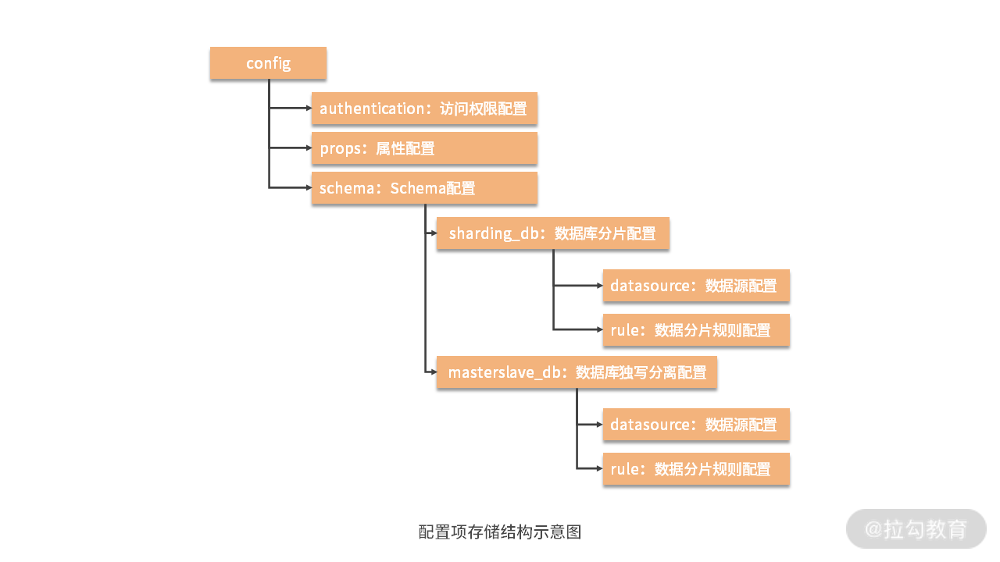
有了配置项之后，我们就需要对其进行保存，ConfigurationService 的 persistConfiguration 方法完成了这一目的，如下所示：
public void persistConfiguration(final String shardingSchemaName, final Map<String, DataSourceConfiguration> dataSourceConfigs, final RuleConfiguration ruleConfig,
final Authentication authentication, final Properties props, final boolean isOverwrite) {
persistDataSourceConfiguration(shardingSchemaName, dataSourceConfigs, isOverwrite);
persistRuleConfiguration(shardingSchemaName, ruleConfig, isOverwrite);
persistAuthentication(authentication, isOverwrite);
persistProperties(props, isOverwrite);
}
这里列举了四个 persist 方法，分别用于保存 DataSource、Rule、Authentication 以及 Properties。我们以 persistDataSourceConfiguration 方法为例来看它的实现过程：
private void persistDataSourceConfiguration(final String shardingSchemaName, final Map<String, DataSourceConfiguration> dataSourceConfigurations, final boolean isOverwrite) {
//判断是否覆盖现有配置
if (isOverwrite || !hasDataSourceConfiguration(shardingSchemaName)) {
Preconditions.checkState(null != dataSourceConfigurations && !dataSourceConfigurations.isEmpty(), "No available data source in `%s` for orchestration.", shardingSchemaName);
//构建 YamlDataSourceConfiguration
Map<String, YamlDataSourceConfiguration> yamlDataSourceConfigurations = Maps.transformValues(dataSourceConfigurations,
new Function<DataSourceConfiguration, YamlDataSourceConfiguration>() {
@Override
public YamlDataSourceConfiguration apply(final DataSourceConfiguration input) {
return new DataSourceConfigurationYamlSwapper().swap(input);
}
}
);
//通过注册中心进行持久化
regCenter.persist(configNode.getDataSourcePath(shardingSchemaName), YamlEngine.marshal(yamlDataSourceConfigurations));
}
}
可以看到这里使用了 Guava 框架中的 Maps.transformValues工具方法将输入的 DataSourceConfiguration 类转换成了 YamlDataSourceConfiguration 类，而转换的过程则借助于 DataSourceConfigurationYamlSwapper 类。关于 ShardingSphere 中的 YamlSwapper 接口以及各种实现类我们已经在《05 | 配置驱动：ShardingSphere 中的配置体系是如何设计的？》中进行了详细介绍，这里只需要明确，通过 DataSourceConfigurationYamlSwapper 能够把 Yaml 配置文件中的 DataSource 配置转化为 YamlDataSourceConfiguration 类。
当获取了所需的 YamlDataSourceConfiguration 之后，我们就可以调用注册中心的 persist 方法完成数据的持久化，这就是 persistDataSourceConfiguration 方法中最后一句代码的作用。在这个过程中，我们同样需要把 YamlDataSourceConfiguration 数据结构转换为一个字符串，这部分工作是由 YamlEngine 来完成。关于 YamlEngine 的介绍我们也可以回顾《05 | 配置驱动：ShardingSphere 中的配置体系是如何设计的？》中的内容。
ConfigurationService 中其他方法的处理过程与 persistDataSourceConfiguration 方法本质上是一样的，只是所使用的数据类型和结构有所不同，这里不再赘述。
2.StateService
介绍完 ConfigurationService 类之后，我们来关注 ShardingOrchestrationFacade 类中的另一个核心变量 StateService。
从命名上讲，StateService 这个类名有点模糊，更合适的叫法应该是 InstanceStateService，用于管理数据库实例的状态，即创建数据库运行节点并区分不同数据库访问实例。存放在注册中心中的数据结构包括 instances 和 datasources 节点，存储结构如下所示：

StateService 中保存着 StateNode 对象，StateNode 中的变量与上面的数据结构示例相对应，如下所示：
private static final String ROOT = "state";
private static final String INSTANCES_NODE_PATH = "instances";
private static final String DATA_SOURCES_NODE_PATH = "datasources";
private final String name;
StateService 同时还保存着 OrchestrationInstance 对象，该对象用于根据你的 IP 地址、PID、一串 UUID 以及分隔符@构建 instanceId，如下所示：
instanceId = IpUtils.getIp() + DELIMITER + ManagementFactory.getRuntimeMXBean().getName().split(DELIMITER)[0] + DELIMITER + UUID.randomUUID().toString();
需要注意的是，StateService 中对于 instances和 datasources 的保存机制是不一样的：
//使用临时节点保存 Instance
public void persistInstanceOnline() {
regCenter.persistEphemeral(stateNode.getInstancesNodeFullPath(instance.getInstanceId()), "");
}
//使用持久化节点保存DataSource
public void persistDataSourcesNode() {
regCenter.persist(stateNode.getDataSourcesNodeFullRootPath(), "");
}
可以看到保存 Instance 用的是 RegistryCenter 中基于临时节点的 persistEphemeral 方法，而保存 DataSources 用的是基于持久化节点的 persist 方法，这样处理是有原因的。在可用性设计上，运行实例一般均可以标识为临时节点，当实例上线时注册，下线时自动清理。
3.ShardingOrchestrationListenerManager
我们接着来看 ShardingOrchestrationFacade 中的最后一个变量 ShardingOrchestrationListenerManager，从命名上看该类用于管理各种处理变更事件的监听器 Listener。而从前面的分析，我们不难看出系统中应该存在两大类的 Listener，一类用于监听配置信息的变更，一类用于监听实例状态的变更。
果然，在 ShardingOrchestrationListenerManager 中，我们进一步找到了两个 ListenerManager，即 ConfigurationChangedListenerManager 和 StateChangedListenerManager，如下所示：
public final class ShardingOrchestrationListenerManager {
//配置变更监听管理器
private final ConfigurationChangedListenerManager configurationChangedListenerManager;
//状态变更监听管理器
private final StateChangedListenerManager stateChangedListenerManager;
public ShardingOrchestrationListenerManager(final String name, final RegistryCenter regCenter, final Collection<String> shardingSchemaNames) {
configurationChangedListenerManager = new ConfigurationChangedListenerManager(name, regCenter, shardingSchemaNames);
stateChangedListenerManager = new StateChangedListenerManager(name, regCenter);
}
public void initListeners() {
configurationChangedListenerManager.initListeners();
stateChangedListenerManager.initListeners();
}
}
我们创建了这两个 ListenerManager，并调用其 initListeners 方法进行了初始化。以 ConfigurationChangedListenerManager 为例，我们来看一下它内部的结构，如下所示：
public final class ConfigurationChangedListenerManager {
private final SchemaChangedListener schemaChangedListener;
private final PropertiesChangedListener propertiesChangedListener;
private final AuthenticationChangedListener authenticationChangedListener;
public ConfigurationChangedListenerManager(final String name, final RegistryCenter regCenter, final Collection<String> shardingSchemaNames) {
schemaChangedListener = new SchemaChangedListener(name, regCenter, shardingSchemaNames);
propertiesChangedListener = new PropertiesChangedListener(name, regCenter);
authenticationChangedListener = new AuthenticationChangedListener(name, regCenter);
}
public void initListeners() {
schemaChangedListener.watch(ChangedType.UPDATED, ChangedType.DELETED);
propertiesChangedListener.watch(ChangedType.UPDATED);
authenticationChangedListener.watch(ChangedType.UPDATED);
}
}
可以看到这里定义了 SchemaChangedListener、PropertiesChangedListener 和 AuthenticationChangedListener 这三个 Listener。显然，它们对应 ConfigurationService 中介绍的配置结构中的三大顶层配置项 schema、props 和 authentication。然后，对于这三种配置项，我们分别根据需要对具体某一个操作添加监视。从上面的代码中我们可以看到，对于 schema 配置项而言，当进行 UPDATE 和 DELETE 时，我们需要响应事件；而对于 props 和 authentication 配置项而言，则只需关注 UPDATE 操作。
因为这些具体的事件以及监听机制的处理方式大同小异，因此我们就以 SchemaChangedListener 为例进行进一步分析。SchemaChangedListener 继承自 PostShardingOrchestrationEventListener 抽象类，而后者又实现了 ShardingOrchestrationListener 接口，我们先来看这个接口的定义：
public interface ShardingOrchestrationListener {
//监听事件
void watch(ChangedType... watchedChangedTypes);
}
PostShardingOrchestrationEventListener 实现了这个接口，其实现过程如下所示：
public abstract class PostShardingOrchestrationEventListener implements ShardingOrchestrationListener {
//创建 EventBus
private final EventBus eventBus = ShardingOrchestrationEventBus.getInstance();
private final RegistryCenter regCenter;
private final String watchKey;
@Override
public final void watch(final ChangedType... watchedChangedTypes) {
final Collection<ChangedType> watchedChangedTypeList = Arrays.asList(watchedChangedTypes);
regCenter.watch(watchKey, new DataChangedEventListener() {
@Override
public void onChange(final DataChangedEvent dataChangedEvent) {
if (watchedChangedTypeList.contains(dataChangedEvent.getChangedType())) {
//通过 EventBus 发布事件
eventBus.post(createShardingOrchestrationEvent(dataChangedEvent));
}
}
});
}
protected abstract ShardingOrchestrationEvent createShardingOrchestrationEvent(DataChangedEvent event);
}
上述代码的核心机制是通过 RegistryCenter 的 watch 方法为具体的事件添加事件处理程序，而这个事件处理过程就是通过 Guava 中的 EventBus 类的 post 方法将事件进行进一步转发。至于所需要转发的具体事件类型由抽象方法 createShardingOrchestrationEvent 来提供，PostShardingOrchestrationEventListener 的各个子类需要实现这个抽象方法。
我们来看 PostShardingOrchestrationEventListener 的子类 SchemaChangedListener 对事件创建过程的处理方法，这里以 createDataSourceChangedEvent 方法为例进行展开，这是一个比较典型的创建事件的方法：
private DataSourceChangedEvent createDataSourceChangedEvent(final String shardingSchemaName, final DataChangedEvent event) {
Map<String, YamlDataSourceConfiguration> dataSourceConfigurations = (Map) YamlEngine.unmarshal(event.getValue());
Preconditions.checkState(null != dataSourceConfigurations && !dataSourceConfigurations.isEmpty(), "No available data sources to load for orchestration.");
//创建DataSourceChangedEvent
return new DataSourceChangedEvent(shardingSchemaName, Maps.transformValues(dataSourceConfigurations, new Function<YamlDataSourceConfiguration, DataSourceConfiguration>() {
@Override
public DataSourceConfiguration apply(final YamlDataSourceConfiguration input) {
return new DataSourceConfigurationYamlSwapper().swap(input);
}
}));
}
可以看到，这里再次用到了前面提到的 YamlDataSourceConfiguration 以及 YamlEngine，不同的是这次的处理流程是从 YamlDataSourceConfiguration 到 DataSourceConfiguration。最终，我们构建了一个 DataSourceChangedEvent，包含了 shardingSchemaName 以及一个 dataSourceConfigurations 对象。
关于整个 Listener 机制，可以简单归纳为通过监听注册中心上相关数据项的操作情况来生成具体的事件，并对事件进行包装之后再进行转发。至于如何处理这些转发后的事件，取决于具体的应用场景，典型的一个应用场景就是控制数据访问的熔断，让我们一起来看一下。
注册中心的应用：数据访问熔断机制
ShardingOrchestrationFacade 是一个典型的外观类，通过分析代码的调用关系，我们发现该类的创建过程都发生在 sharding-jdbc-orchestration 工程的几个 DataSource 类中。我们先来到 AbstractOrchestrationDataSource 这个抽象类，该类的核心变量如下所示：
private final ShardingOrchestrationFacade shardingOrchestrationFacade;
//是否熔断
private boolean isCircuitBreak;
private final Map<String, DataSourceConfiguration> dataSourceConfigurations = new LinkedHashMap<>();
注意到这里还有一个 isCircuitBreak 变量，用来表示是否需要进行熔断，接下来我们会对熔断机制以及该变量的使用方法做详细展开。
我们继续来看 AbstractOrchestrationDataSource 的构造函数，如下所示：
public AbstractOrchestrationDataSource(final ShardingOrchestrationFacade shardingOrchestrationFacade) {
this.shardingOrchestrationFacade = shardingOrchestrationFacade;
//通过 EventBus 注册自己
ShardingOrchestrationEventBus.getInstance().register(this);
}
可以看到这里用到了 Guava 中 EventBus 的 register 方法，这个方法用于对注册事件的订阅。在前面的内容中，我们留下了一个疑问，即所创建的这些 ShardingOrchestrationEvent 是如何被处理的呢？
答案就在这里进行了揭晓，即所有通过 EventBus 的 post 方法所发布的事件的最终消费者就是这个 AbstractOrchestrationDataSource 类以及它的各个子类。而在 AbstractOrchestrationDataSource 类中就存在了如下所示的 renew 方法，用于处理 CircuitStateChangedEvent 事件：
@Subscribe
public final synchronized void renew(final CircuitStateChangedEvent circuitStateChangedEvent) {
isCircuitBreak = circuitStateChangedEvent.isCircuitBreak();
}
在这个方法上添加了 @Subscribe 注解，即一旦在系统中生成了 CircuitStateChangedEvent 事件，这个方法就可以自动响应这类事件。在这个处理方法中，我们看到它从 CircuitStateChangedEvent 事件中获取了是否熔断的信息并赋值给前面介绍的 isCircuitBreak 变量。
在 AbstractOrchestrationDataSource 的 getConnection 方法中调用了 getDataSource 抽象方法以获取特定的 DataSource，进而获取特定的 Connection，如下所示：
@Override
public final Connection getConnection() throws SQLException {
return isCircuitBreak ? new CircuitBreakerDataSource().getConnection() : getDataSource().getConnection();
}
在这里，我们看到了 isCircuitBreak 变量的作用。当该变量为真时，我们返回的是一个特定的 CircuitBreakerDataSource 用于完成熔断操作。所谓熔断，其作用类似于我们家用的保险丝，当某个服务出现不可用或响应超时的情况时，为了防止整个系统出现雪崩，暂时停止对该服务的调用。
那么 ShardingSphere 如何实现这一点呢？我们来看一下 CircuitBreakerDataSource 类， 它的实现如下所示：
public final class CircuitBreakerDataSource extends AbstractUnsupportedOperationDataSource implements AutoCloseable {
@Override
public void close() {
}
@Override
public Connection getConnection() {
return new CircuitBreakerConnection();
}
@Override
public Connection getConnection(final String username, final String password) {
return new CircuitBreakerConnection();
}
@Override
public PrintWriter getLogWriter() {
return null;
}
@Override
public void setLogWriter(final PrintWriter out) {
}
@Override
public Logger getParentLogger() {
return null;
}
}
可以看到这个类的 getConnection 方法返回了一个 CircuitBreakerConnection，而这个 CircuitBreakerConnection 中的 createStatement 和 prepareStatement 方法分别返回了 CircuitBreakerStatement 和 CircuitBreakerPreparedStatement，我们发现这些 Statement 类以及代表执行结果的 CircuitBreakerResultSet 类基本都是空实现，即不会对数据库执行任何具体的操作，相当于实现了访问的熔断。
那么回到一个问题，即什么时候会触发熔断机制，也就是什么时候会发送这个 CircuitStateChangedEvent 事件呢？让我们跟踪这个事件的创建过程，来到了如下所示的 InstanceStateChangedListener 类：
public final class InstanceStateChangedListener extends PostShardingOrchestrationEventListener {
public InstanceStateChangedListener(final String name, final RegistryCenter regCenter) {
super(regCenter, new StateNode(name).getInstancesNodeFullPath(OrchestrationInstance.getInstance().getInstanceId()));
}
@Override
protected CircuitStateChangedEvent createShardingOrchestrationEvent(final DataChangedEvent event) {
return new CircuitStateChangedEvent(StateNodeStatus.DISABLED.toString().equalsIgnoreCase(event.getValue()));
}
}
通过上述代码，我们不难发现当 StateNodeStatus 为 DISABLED 时，也就是当前的节点已经不可用时会发送 CircuitStateChangedEvent，从而触发熔断机制。
从源码解析到日常开发
今天的内容虽然关注的是注册中心，但在篇幅上实际上更多的是在讨论基于事件驱动架构的设计和实现方法。基于配置信息，以及数据库实例信息的变更情况，ShardingSphere 抽象了一套完整的事件发送和消费机制，来实现诸如数据访问熔断等非功能性需求。
我们注意到 ShardingSphere 实现事件驱动架构时使用了 Guava 框架中的 EventBus 工具类，在日常开发过程中，我们也可以直接使用这个类来构建自定义的事件处理机制。
小结与预告
注册中心是 ShardingSphere 编排治理机制中的一个重要组成部分，但注册中心本身也只是一个工具，需要根据不同的业务场景来设计对应的应用方式。在 ShardingSphere 中，配置信息管理以及数据库实例管理就是典型的应用场景，我们基于这些场景详细分析了基于注册中心的事件驱动架构的设计和实现方法，并给出了基于数据访问熔断机制的案例分析。
这里给你留一道思考题：在 ShardingSphere 中，如何把服务实例的状态与注册中心整合在一起进行编排治理？
在下一课时中，我们将介绍 ShardingSphere 编排治理中的另一个重要主题，即服务访问的链路监控和跟踪机制。
33 链路跟踪：如何基于 Hook 机制以及 OpenTracing 协议实现数据访问链路跟踪？
今天我们来讨论 ShardingSphere 中关于编排治理的另一个主题，即链路跟踪。在分布式系统开发过程中，链路跟踪是一项基础设施类的功能。作为一款分布式数据库中间件，ShardingSphere 中也内置了简单而完整的链路跟踪机制。
链路跟踪基本原理和工具
在介绍具体的实现过程之前，我们有必要先来了解一些关于链路跟踪的理论知识。
1.链路跟踪基本原理
分布式环境下的服务跟踪原理上实际上并不复杂，我们首先需要引入两个基本概念，即 TraceId 和 SpanId。
- TraceId
TraceId 即跟踪 Id。在微服务架构中，每个请求生成一个全局的唯一性 Id，通过这个 Id 可以串联起整个调用链，也就是说请求在分布式系统内部流转时，系统需要始终保持传递其唯一性 Id，直到请求返回，这个唯一性 Id 就是 TraceId。
- SpanId
除了 TraceId 外，我们还需要 SpanId，SpanId 一般被称为跨度 Id。当请求到达各个服务组件时，通过 SpanId 来标识它的开始、具体执行过程和结束。对于每个 Span 而言，它必须有开始和结束两个节点，通过记录开始 Span 和结束 Span 的时间戳统计其 Span 的时间延迟。
整个调用过程中每个请求都要透传 TraceId 和 SpanId。每个服务将该次请求附带的 SpanId 作为父 SpanId 进行记录，并且生成自己的 SpanId。一个没有父 SpanId 的 Span 即为根 Span，可以看成调用链入口。所以要查看某次完整的调用只需根据 TraceId 查出所有调用记录，然后通过父 SpanId 和 SpanId 组织起整个调用父子关系。事实上，围绕如何构建 Trace 和 Span 之间统一的关联关系，业界也存在一个通用的链接跟踪协议，这就是 OpenTracing 协议。
2.OpenTracing 协议和应用方式
OpenTracing 是一种协议，也使用与上面介绍的类似的术语来表示链路跟踪的过程。通过提供平台无关、厂商无关的 API，OpenTracing 使得开发人员能够方便的添加或更换链路跟踪系统的实现。目前，诸如 Java、Go、Python 等主流开发语言都提供了对 OpenTracing 协议的支持。
我们以 Java 语言为例来介绍 OpenTracing 协议的应用方式，OpenTracing API 中存在相互关联的最重要的对象，也就是 Tracer 和 Span 接口。
对于 Tracer 接口而言，最重要就是如下所示的 buildSpan 方法，该方法用来根据某一个操作创建一个 Span 对象：
SpanBuilder buildSpan(String operationName);
我们看到上述 buildSpan 方法返回的实际上是一个 SpanBuilder 对象，而 SpanBuilder 中则存在一组 withTag 重载方法，用于为当前 Span 添加一个标签。标签的作用是供用户进行自定义，可以用来检索查询的标记，是一组键值对。withTag 方法的其中一种定义如下所示：
SpanBuilder withTag(String key, String value);
我们可以为一个 Span 添加多个 Tag，当把 Tag 添加完毕之后，我们就可以调用如下所示的 start 方法来启动这个 Span：
Span start();
注意这个方法会返回一个 Span 对象，一旦获取了 Span 对象，我们就可以调用该对象中的 finish 方法来结束这个 Span，该方法会为 Span 自动填充结束时间：
void finish();
基于以上 OpenTracing API 的介绍，在日常开发过程中，我们在业务代码中嵌入链路跟踪的常见实现方法可以用如下所示的代码片段进行抽象：
//从 OpenTracing 规范的实现框架中获取 Tracer 对象
Tracer tracer = new XXXTracer();
//创建一个 Span 并启动
Span span = tracer.buildSpan("test").start();
//添加标签到 Span 中
span.setTag(Tags.COMPONENT, "test -application");
//执行相关业务逻辑
//完成 Span
span.finish();
//可以根据需要获取 Span 中的相关信息
System.out.println("Operation name = " + span.operationName());
System.out.println("Start = " + span.startMicros());
System.out.println("Finish = " + span.finishMicros());
事实上，ShardingSphere 集成 OpenTracing API 的做法基本与上述方法类似，让我们一起来看一下。
ShardingSphere 中的链路跟踪
对于 ShardingSphere 而言，框架本身并不负责如何采集、存储以及展示应用性能监控的相关数据，而是将整个数据分片引擎中最核心的 SQL 解析与 SQL 执行相关信息发送至应用性能监控系统，并交由其处理。
换句话说，ShardingSphere 仅负责产生具有价值的数据，并通过标准协议递交至第三方系统，而不对这些数据做二次处理。
ShardingSphere 使用 OpenTracing API 发送性能追踪数据。支持 OpenTracing 协议的具体产品都可以和 ShardingSphere 自动对接，比如常见的 SkyWalking、Zipkin 和Jaeger。在 ShardingSphere 中，使用这些具体产品的方式只需要在启动时配置 OpenTracing 协议的实现者即可。
1.通过 ShardingTracer 获取 Tracer 类
ShardingSphere 中，所有关于链路跟踪的代码都位于 sharding-opentracing 工程中。我们先来看 ShardingTracer 类，该类的 init 方法完成了 OpenTracing 协议实现类的初始化，如下所示：
public static void init() {
//从环境变量中获取 OpenTracing 协议的实现类配置
String tracerClassName = System.getProperty(OPENTRACING_TRACER_CLASS_NAME);
Preconditions.checkNotNull(tracerClassName, "Can not find opentracing tracer implementation class via system property `%s`", OPENTRACING_TRACER_CLASS_NAME);
try {
//初始化 OpenTracing 协议的实现类
init((Tracer) Class.forName(tracerClassName).newInstance());
} catch (final ReflectiveOperationException ex) {
throw new ShardingException("Initialize opentracing tracer class failure.", ex);
}
}
我们通过配置的 OPENTRACING_TRACER_CLASS_NAME 获取 OpenTracing 协议实现类的类名，然后通过反射创建了实例。例如，我们可以配置该类为如下所示的 Skywalking 框架中的 SkywalkingTracer 类：
org.apache.shardingsphere.opentracing.tracer.class=org.apache.skywalking.apm.toolkit.opentracing.SkywalkingTracer
当然，ShardingTracer 类也提供了通过直接注入 OpenTracing 协议实现类的方法来进行初始化。实际上上述 init 方法最终也是调用了如下所示的 init 重载方法：
public static void init(final Tracer tracer) {
if (!GlobalTracer.isRegistered()) {
GlobalTracer.register(tracer);
}
}
该方法把 Tracer 对象存放到全局的 GlobalTracer 中。GlobalTracer 是 OpenTracing API 提供的一个工具类，使用设计模式中的单例模式来存储一个全局性的 Tracer 对象。它的变量定义、register 方法以及 get 方法如下所示：
private static final GlobalTracer INSTANCE = new GlobalTracer();
public static synchronized void register(final Tracer tracer) {
if (tracer == null) {
throw new NullPointerException("Cannot register GlobalTracer <null>.");
}
if (tracer instanceof GlobalTracer) {
LOGGER.log(Level.FINE, "Attempted to register the GlobalTracer as delegate of itself.");
return; // no-op
}
if (isRegistered() && !GlobalTracer.tracer.equals(tracer)) {
throw new IllegalStateException("There is already a current global Tracer registered.");
}
GlobalTracer.tracer = tracer;
}
public static Tracer get() {
return INSTANCE;
}
采用这种方式，初始化可以采用如下方法：
ShardingTracer.init(new SkywalkingTracer());
而获取具体 Tracer 对象的方法则直接调用 GlobalTracer 的同名方法即可，如下所示：
public static Tracer get() {
return GlobalTracer.get();
}
2.基于 Hook 机制填充 Span
一旦获取 Tracer 对象，我们就可以使用该对象来构建各种 Span。ShardingSphere 采用了Hook 机制来填充 Span。说道 Hook 机制，我们可以回想《15 | 解析引擎：SQL 解析流程应该包括哪些核心阶段（上）？》中的相关内容，在如下所示的 SQLParseEngine 类的 parse 方法中用到了 ParseHook：
public SQLStatement parse(final String sql, final boolean useCache) {
//基于 Hook 机制进行监控和跟踪
ParsingHook parsingHook = new SPIParsingHook();
parsingHook.start(sql);
try {
//完成 SQL 的解析，并返回一个 SQLStatement 对象
SQLStatement result = parse0(sql, useCache);
parsingHook.finishSuccess(result);
return result;
} catch (final Exception ex) {
parsingHook.finishFailure(ex);
throw ex;
}
}
注意到上述代码中创建了一个 SPIParsingHook，并实现了 ParsingHook 接口，该接口的定义如下所示：
public interface ParsingHook {
//开始 Parse 时进行 Hook
void start(String sql);
//成功完成 Parse 时进行 Hook
void finishSuccess(SQLStatement sqlStatement);
//Parse 失败时进行 Hook
void finishFailure(Exception cause);
}
SPIParsingHook 实际上是一种容器类，将所有同类型的 Hook 通过 SPI 机制进行实例化并统一调用，SPIParsingHook 的实现方式如下所示：
public final class SPIParsingHook implements ParsingHook {
private final Collection<ParsingHook> parsingHooks = NewInstanceServiceLoader.newServiceInstances(ParsingHook.class);
static {
NewInstanceServiceLoader.register(ParsingHook.class);
}
@Override
public void start(final String sql) {
for (ParsingHook each : parsingHooks) {
each.start(sql);
}
}
@Override
public void finishSuccess(final SQLStatement sqlStatement, final ShardingTableMetaData shardingTableMetaData) {
for (ParsingHook each : parsingHooks) {
each.finishSuccess(sqlStatement, shardingTableMetaData);
}
}
@Override
public void finishFailure(final Exception cause) {
for (ParsingHook each : parsingHooks) {
each.finishFailure(cause);
}
}
}
这里，我们看到了熟悉的 NewInstanceServiceLoader 工具类。这样，我们一旦实现了 ParsingHook，就会在执行 SQLParseEngine 类的 parse 方法时将 Hook 相关的功能嵌入到系统的执行流程中。
另外，OpenTracingParsingHook 同样实现了 ParsingHook 接口，如下所示：
public final class OpenTracingParsingHook implements ParsingHook {
private static final String OPERATION_NAME = "/" + ShardingTags.COMPONENT_NAME + "/parseSQL/";
private Span span;
@Override
public void start(final String sql) {
//创建 Span 并设置 Tag
span = ShardingTracer.get().buildSpan(OPERATION_NAME)
.withTag(Tags.COMPONENT.getKey(), ShardingTags.COMPONENT_NAME)
.withTag(Tags.SPAN_KIND.getKey(), Tags.SPAN_KIND_CLIENT)
.withTag(Tags.DB_STATEMENT.getKey(), sql).startManual();
}
@Override
public void finishSuccess(final SQLStatement sqlStatement) {
//成功时完成 Span
span.finish();
}
@Override
public void finishFailure(final Exception cause) {
//失败时完成 Span（
ShardingErrorSpan.setError(span, cause);
span.finish();
}
}
我们知道 Tracer 类提供了 buildSpan 方法创建自定义的 Span 并可以通过 withTag 方法添加自定义的标签。最后，我们可以通过 finish 方法类关闭这个 Span。在这个方法中，我们看到了这些方法的具体应用场景。
同样，在《21 | 执行引擎：分片环境下 SQL 执行的整体流程应该如何进行抽象？》中，我们在的 SQLExecuteCallback 抽象类的 execute0 方法中也看到了 SQLExecutionHook 的应用场景，SQLExecutionHook 接口的定义如下所示：
public interface SQLExecutionHook {
//开始执行 SQL 时进行 Hook
void start(String dataSourceName, String sql, List<Object> parameters, DataSourceMetaData dataSourceMetaData, boolean isTrunkThread, Map<String, Object> shardingExecuteDataMap);
//成功完成 SQL 执行时进行 Hook
void finishSuccess();
//SQL 执行失败时进行 Hook
void finishFailure(Exception cause);
}
在 ShardingSphere 中，同样存在一套完整的体系来完成对这个接口的实现，包括与 SPIParsingHook 同样充当容器类的 SPISQLExecutionHook，以及基于 OpenTracing 协议的 OpenTracingSQLExecutionHook，其实现过程与 OpenTracingParsingHook 一致，这里不再做具体展开。
从源码解析到日常开发
在今天的内容中，我们可以从 ShardingSphere 的源码中提炼两个可以用于日常开发过程的开发技巧。如果我们需要自己实现一个用于分布式环境下的链路监控和分析系统，那么 OpenTracing 规范以及对应的实现类是你的首选。
基于 OpenTracing 规范，业界存在一大批优秀的工具，例如 SkyWalking、Zipkin 和 Jaeger 等，这些工具都可以很容易的集成到你的业务系统中。
另一方面，我们也看到了 Hook 机制的应用场景和方式。Hook 本质上也是一种回调机制，我们可以根据需要提炼出自身所需的各种 Hook，并通过 SPI 的方式动态加载到系统中，以满足不同场景下的需要，ShardingSphere 为我们如何实现和管理系统中的 Hook 实现类提供了很好的实现参考。
小结与预告
今天的内容围绕 ShardingSphere 中的链路跟踪实现过程进行了详细展开。我们发现在 ShardingSphere 中关于链路跟踪的代码并不多，所以为了更好地理解链路跟踪的实现机制，我们也花了一些篇幅介绍了链路跟踪的基本原理，以及背后的 OpenTracing 规范的核心类。
然后，我们发现 ShardingSphere 在业务流程的执行过程中内置了一批 Hook，这些 Hook 能够帮助系统收集各种监控信息，并通过 OpenTracing 规范的各种实现类进行统一管理。
这里给你留一道思考题：ShardingSphere 中如何完成与 OpenTracing 协议的集成？
在下一个课时中，我们将介绍 ShardingSphere 源码解析部分的最后一个主题，即 ShardingSphere 的内核如何与 Spring 框架进行无缝集成以降低开发人员的学习成本。
35 结语：ShardingSphere 总结及展望
终于到了专栏的最后一讲。今天，我们将对整个 ShardingSphere 课程进行总结和展望。作为一款在业界领先的分布式数据库中间件，ShardingSphere 受到越来越多人的追捧，它可以为我们提供多项核心功能，并帮忙我们构建完整的分库分表解决方案。
首先，我们还是总结一下专栏中讲解过的 ShardingSphere 核心功能，然后再梳理我在写作过程中的一些思考和心得，最后，我会向你讲解 ShardingSphere 4.X 版本至未来 5.X 版本的演进变化。
ShardingSphere 核心功能
ShardingSphere 官网展示了数据分片、分布式事务、数据库治理等三大块核心功能，对于这些功能，我分别在本专栏的第四部分、第五部分、第六部分都进行了详细介绍，你可回顾重温一遍。
1.数据分片
数据分片是 ShardingSphere 的基本功能。ShardingSphere 支持常规的基于垂直拆分和水平拆分的分库分表操作。在分库分表的基础上，ShardingSphere 也实现了基于数据库主从架构的读写分离机制，而且这种读写分离机制可以和数据分片完美地进行整合。
另一方面，作为一款具有高度可扩展性的开源框架，ShardingSphere 也预留了分片扩展点，开发人员可以基于需要实现分片策略的定制化开发。
2.分布式事务
分布式事务用于确保分布式环境下的数据一致性，这也是 ShardingSphere 区别于普通分库分表框架的关键功能，并且该功能使得分布式事务能够称为一种分布式数据库中间件。
ShardingSphere 对分布式事务的支持首先体现在抽象层面上。ShardingSphere 抽象了一组标准化的事务处理接口，并通过分片事务管理器 ShardingTransactionManager 进行统一管理。同样，在扩展性上，我们也可以根据需要实现自己的 ShardingTransactionManager 从而对分布式事务进行扩展。在事务类型上，ShardingSphere 也同时支持强一致性事务和柔性事务。
当具备数据分片和分布式事务功能之后，相当于就可以基于 ShardingSphere 实现日常的分库分表操作了。但这还不够，因为我们需要对系统中的数据库资源，以及服务的运行时状态进行跟踪和监控。因此，ShardingSphere 中也提供了多种有助于我们进行数据库治理的技术体系。
3.数据库治理
如果你一直在学习我们的专栏，相信你已经知道使用 ShardingSphere 的主要手段就是利用它的配置体系。关于配置信息的管理，我们可以基于配置文件完成配置信息的维护，这在 ShardingSphere 中都得到了支持。
更进一步，在ShardingSphere 中，它还提供了配置信息动态化管理机制，即可支持数据源、表与分片及读写分离策略的动态切换。而对于系统中当前正在运行的数据库实例，我们也需要进行动态的管理。在具体应用场景上，我们可以基于注册中心完成数据库实例管理、数据库熔断禁用等治理功能。
一旦 ShardingSphere 被应用到生产环境，开发和运维人员都需要关注通过 ShardingSphere 所执行的 SQL 语句的执行情况，以及 ShardingSphere 内核的运行时状态。在 ShardingSphere 中，使用 OpenTracing API 发送性能追踪数据。而在 SQL 解析与 SQL 执行等核心环节，ShardingSphere 都会把采集到的运行时数据通过标准协议提交到链路跟踪系统供我们进行分析和监控。
关于数据库治理的最后一项核心功能是数据脱敏。严格意义上讲，与其说数据脱敏是一项数据库治理功能，不如说它更多的是一项面向业务场景的特定功能。数据脱敏是业务系统中确保数据访问安全的常见需求，我们需要实现对原文数据进行加密并存储在数据库中。而在用户查询数据时，它又从数据库中取出密文数据并解密，最终将解密后的原始数据返回给用户。
ShardingSphere 对这一数据脱敏过程实现了自动化和透明化，开发人员无须关注数据脱敏的实现细节。
ShardingSphere 课程总结
总结完介绍的 ShardingSphere 各项核心功能，我们再来总结整个专栏所讲解内容的特色和与其他专栏之间的差异化。这里，我分为以下三大亮点。
本专栏的一大亮点在于提供了完整的案例代码来介绍 ShardingSphere 中的上述功能。
这个案例系统足够简单，可以让你从零开始就能理解和掌握其中的各项知识点；同时这个案例系统又足够完整，涉及的各个核心功能我们都提供了相关的配置项和示例代码，供大家在日常开发过程中进行参考。
本专栏的最核心内容是 ShardingSphere 的源码解析，这部分内容占据了整个专栏 2/3 的篇幅，可以说是课程的精髓所在。
一方面，我们给出了微内核架构，以及分布式主键的设计理念和实现方法，更重要的是，我们对 ShardingSphere 中介绍的各项核心功能都从源码出发给出了详细的设计思想和实现机制。
另一方面，针对数据分片，我们剖析了其中所涉及的解析引擎、路由引擎、改写引擎、执行引擎、归并引擎和读写分离。而对于分布式事务和数据库治理，我们也结合应用场景分析了各个技术组件的底层原理，确保你能够不仅知其然，更能知其所以然。
本专栏在设计上也还有一个亮点，就是源码解析各个课时中的 “从源码解析到日常开发” 这部分内容。
本课程的一大目标，是通过系统化地讲解框架源码，帮忙你深入理解 ShardingSphere 实现原理，但这并不是唯一目标，我更希望你能从中收获实践技能，做到学有所用。
所以我在每一课时的“从源码解析到日常开发”部分，都会根据该课时内容梳理若干条工程实践。这些工程实践，有些是设计思想的提炼，有些是工具框架的应用技巧，还有一些则是可以直接应用到业务开发过程中的模板代码。
我希望你能通过对 ShardingSphere 这款优秀开源框架的学习，能够掌握好系统架构设计和实现过程中的方法和技巧，并把这些工程实践应用到日常的开发工作中。
从 ShardingSphere 4.X 到 5.X
最后，我们来对 ShardingSphere 的发展做一些展望。
本课程应用的是 ShardingSphere 4.X，而在当下，ShardingSphere 的开发团队正在紧锣密鼓地开发 5.X 版本。5.X 版本是 ShardingSphere 发展过程中的一个大版本，所涉及的内部功能与其对外 API 也将面临大规模的优化和调整。
同时，5.X 版本也添加了多项新的核心功能，让 ShardingSphere 生态圈更加丰富。到目前为止，5.X 版本已经设计和实现了包括弹性伸缩和影子库压测在内的多项核心功能，让我们一起分别看一下这两个功能。
1.弹性伸缩功能
5.X 版本首先要介绍的是它的弹性伸缩功能，对应的模块名称为 ShardingSphere-Scaling。随着业务规模的快速变化，我们可能需要对现有的分片集群进行弹性扩容或缩容。这个过程看似简单，实现起来却非常复杂。
为此，ShardingSphere 给出了一站式的通用型解决方案。这个方案支持各类用户自定义的分片策略，并能减少用户在数据伸缩及迁移时的重复工作及业务影响。弹性伸缩功能实际上在 4.1.0 版本时便已经开始引进导入，但它一直处于 alpha 开发阶段，所提供的也只是基础伸缩功能。在后续的规划中，ShardingSphere 计划通过半自动伸缩、断点续传和全自动伸缩等多个里程碑阶段来完成整个功能体系。
2.影子库压测
5.X 版本引入的第二个功能是影子库压测，这个功能的背景来自如何对系统进行全链路压测。在数据库层面，为了保证生产数据的可靠性与完整性，需要做好数据隔离，将压测的数据请求打入影子库，以防压测数据写入生产数据库，从而对真实数据造成污染**。**
在 ShardingSphere 中，我们可以通过数据路由功能将压测所需要执行的 SQL 路由到与之对应的数据源中。与数据脱敏一样，ShardingSphere 实现影子库压测的开发方式也是配置一个影子规则。
此外，ShardingSphere 还在规划和实施强一致多副本等功能，让我们一起期待这些功能早日发布。
作为业内关于 ShardingSphere 的第一门系统化专栏，《ShardingSphere 核心原理精讲》凝练着我基于 ShardingSphere 进行数据分库分表和治理工作的多年实践经验，整个专栏从酝酿到启动，再到上线也历经了小半年的时间，伴随着这个过程，我把 ShardingSphere 的源代码系统地梳理了一遍，并对内部的设计思想和实现原理也做了详细的提炼和总结。
总体而言，ShardingSphere 是一款代码质量非常高的开源框架，尤其是其中关于对 JDBC 规范的兼容、分片引擎的阶段化执行过程，以及各种辅助性的服务编排和治理等诸多功能，都让我的工作受益良久。
相信这些宝贵的“知识财富”也能一直伴随你，让你的职业生涯越走越远，越走越广。最后，祝大家在各自的岗位上都能够更上一层楼！